A cross-channel, evidence-backed field manual for low-stakes live cash poker.
This playbook treats Crush Live Poker, Hungry Horse Poker, Live Poker Guide, and any future added channels as one shared evidence corpus rather than as separate summaries. The current local corpus contains 992 transcripts, 23769 inferred segments, and 23769 extracted lessons. The goal is to turn repeated hand-review patterns into a practical operating manual: what to do by default, why the live pool allows that default to work, when the channels converge, and what kind of evidence is strong enough to justify a deviation.
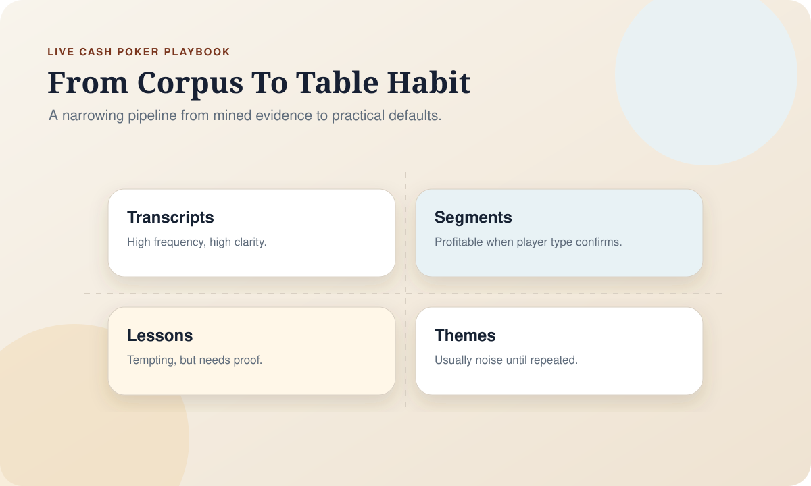
The chapters are organized by strategic theme rather than by channel or video. Each chapter opens with the actual table lesson, the best first default, the common leak to avoid, and the player question the chapter is trying to answer. The source evidence is then synthesized into theme-driven instruction before the appendix appears, so the reader is not forced to reverse-engineer the lesson from citations.
The playbook contains 10 chapters arranged as a learning path from live-cash foundations, through decision leverage and betting mechanics, into high-cost river spots and session review. The structure favors fewer, stronger umbrella chapters so related ideas reinforce one another instead of scattering into tiny fragments.
| Pages | Part | Chapter | Core Concepts |
|---|---|---|---|
| 1-5 | Part I: Foundations | The Low-Stakes Live Cash Operating System | expected value, population tendencies, patience, selective aggression |
| 6-10 | Part I: Foundations | Preflop Discipline and Seat Selection | position, stack depth, table selection, isolation raising |
| 11-15 | Part II: Decision Leverage | Position, Initiative, and Decision Leverage | position, initiative, range advantage, future street leverage |
| 16-20 | Part II: Decision Leverage | Range Reading with Population Shortcuts | range construction, capped ranges, line consistency, population reads |
| 21-25 | Part III: Betting Mechanics | Sizing Tells and Bet Construction | bet sizing, value targeting, fold equity, price setting |
| 26-30 | Part III: Betting Mechanics | Thin Value and Getting Paid | thin value, worse-hand calling range, loose-passive opponents, raise risk |
| 31-35 | Part IV: High-Cost River Spots | River Underbluffing and the Curiosity Tax | river underbluffing, bluff catching, pot odds, curiosity tax |
| 36-40 | Part IV: High-Cost River Spots | Bluffing Where the Pool Actually Folds | fold equity, blockers, capped ranges, credible story |
| 41-45 | Part V: Mental Game | Ego, Emotion, and Table Discipline | tilt, ego protection, decision fatigue, session discipline |
| 46-50 | Part V: Mental Game | The Session Review and Improvement Loop | session review, leak tracking, hand selection, feedback loop |
The material is written as longform instruction, with bolded decision rules where the advice should be unmissable. Evidence tables remain reserved for traceability rather than teaching the chapter by spreadsheet. Diagrams are generated locally from stable chapter specifications and enhanced in the HTML version with interactive lesson annotations.
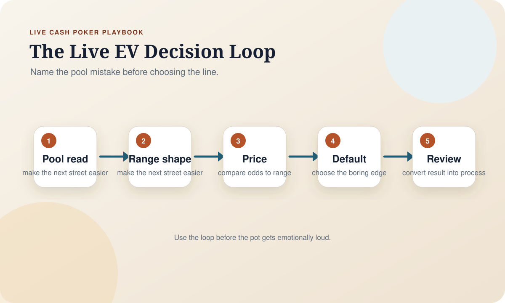
Actual lesson: The central lesson is to play a value-first, evidence-led strategy instead of trying to win every interesting pot. Best default: Default to patience, position, value betting, and disciplined folds until a specific opponent proves the pool tendency is wrong. Most common leak: Treating low-stakes live poker like a creativity contest when it is usually a mistake-harvesting contest. A representative mined spot puts the idea into action: Stay patient and choose aggressive spots instead of forcing action [E1].
The table-facing question for this chapter is simple: Before entering a pot, ask: what mistake am I trying to get paid by, and will this hand realize that edge? If the answer is vague, the hand is probably being driven by curiosity, fear, or autopilot rather than by a clean live-cash edge. The purpose of the chapter is to make that answer specific enough to use while chips are moving, not to admire the concept from a safe distance after the session.
These are not claims about perfect equilibrium play. They are the best low-stakes live-cash defaults to try first, then adjust when the table gives you better evidence.
What is my default style? Play tight enough to avoid dominated trouble, aggressive enough to charge mistakes, and patient enough to let weaker players overpay when you have value. This answer is not meant as a universal law; it is the starting line supported by the repeated evidence in this chapter [E1].
When do I stop being patient? When you have position, a clear value target, a capped opponent, or a player-specific read that creates fold equity. Patience is not passivity; it is selectivity. This answer is not meant as a universal law; it is the starting line supported by the repeated evidence in this chapter [E2].
What should I ignore? Ignore the urge to match the table's splashiness. Loose games reward disciplined value extraction more than loose imitation. This answer is not meant as a universal law; it is the starting line supported by the repeated evidence in this chapter [E3].
The practical sequence is question, default, exception, review. Ask the question before the action, use the default when the table is ordinary, require evidence for the exception, and review the decision by whether that evidence was real.
The operating model is: The central lesson is to play a value-first, evidence-led strategy instead of trying to win every interesting pot. That model only becomes useful when expected value, population tendencies, patience, and selective aggression become concrete table actions. The mined examples cluster around Discipline over curiosity, Selective aggression creates clean EV, and Emotions leak into EV, so the player should not chase a single dramatic quote. It should teach the repeatable pattern: Default to patience, position, value betting, and disciplined folds until a specific opponent proves the pool tendency is wrong. The warning sign is equally concrete: Treating low-stakes live poker like a creativity contest when it is usually a mistake-harvesting contest. The player should keep returning to one question under pressure: Before entering a pot, ask: what mistake am I trying to get paid by, and will this hand realize that edge? [E1]
This is not trying to solve poker from first principles or make a balanced-game claim about every possible opponent. It is translating repeated live-cash evidence into a starting line that beats the games most readers actually sit in. The default can be overridden, but only after a player earns the override with specific reads, specific prices, and a specific reason the current opponent differs from the pool.
Low-stakes live pools give away money through repetition. They call too many weak hands, overvalue one-pair holdings, underbluff the most expensive nodes, and let impatience create pots that did not need to exist. A value-first operating system works because it turns those repeated mistakes into a stable routine instead of forcing the player to invent a new personality every hand. A representative mined decision points in the same direction: Stay patient and choose aggressive spots instead of forcing action [E1].
The best player at the table is often not the most theatrical player. It is the player who enters pots with a reason, knows who the customer is, and lets opponents make the familiar mistake again. That is why the chapter starts with defaults: they reduce decision noise before the pot becomes emotionally large.
Across Crush Live Poker, Hungry Horse Poker, and Live Poker Guide, the shared lesson is not merely that the low-stakes live cash operating system matters. The shared lesson is operational: Default to patience, position, value betting, and disciplined folds until a specific opponent proves the pool tendency is wrong. The repeated themes are Discipline over curiosity, Selective aggression creates clean EV, and Emotions leak into EV, which all point toward the same table habit. The main disagreement is usually not about the destination; it is about the route. One source may teach the spot through sizing, another through player type, and another through discipline or hand selection. Those differences are useful only when they sharpen the table question: Before entering a pot, ask: what mistake am I trying to get paid by, and will this hand realize that edge?
Crush Live Poker contributes hand reading, line construction, bet sizing, and river discipline; in this chapter its clearest mined example points to Discipline over curiosity, with the decision: Stay patient and choose aggressive spots instead of forcing action [E1].
Hungry Horse Poker contributes exploitative systems, pro-versus-amateur thinking, and pressure against capped ranges; in this chapter its clearest mined example points to Discipline over curiosity, with the decision: Choose the thinnest profitable value bet instead of checking back [E2].
Live Poker Guide contributes $1/$2 and $1/$3 execution, session habits, and clear defaults for loose splashy games; in this chapter its clearest mined example points to Discipline over curiosity, with the decision: Stay patient and choose aggressive spots instead of forcing action [E3].
The synthesis for the reader is therefore practical rather than decorative. Use the agreement as the default, use the source-specific emphasis as a diagnostic lens, and watch for the leak: Treating low-stakes live poker like a creativity contest when it is usually a mistake-harvesting contest. If multiple sources arrive at the same default from different angles, the recommendation deserves more weight than a single isolated hand.
Case study first: in Do NOT Fall for This Dirty Poker Betting Trick! (Angle Exposed) from Crush Live Poker, the usable lesson is not the surface drama of the hand. It is the decision shape. The card records the key decision as: Stay patient and choose aggressive spots instead of forcing action The strategic takeaway is Aggression is strongest when tied to range advantage and fold equity rather than boredom. [E1]. In practice, this means the reader should pause before asking, 'Can I win this pot?' and ask the better live-cash question: 'What does this action usually represent from this player type, at this size, in this room?' The answer will not always be comfortable, but it will usually be more profitable than treating the spot as a puzzle designed to reward bravery.
Case study second: in The 9 Biggest Mistakes Low Stakes Poker Pros Make from Hungry Horse Poker, the usable lesson is not the surface drama of the hand. It is the decision shape. The card records the key decision as: Choose the thinnest profitable value bet instead of checking back The strategic takeaway is Thin value bets are a major source of steady live-cash profit because worse hands call too often. [E2]. In practice, this means the reader should pause before asking, 'Can I win this pot?' and ask the better live-cash question: 'What does this action usually represent from this player type, at this size, in this room?' The answer will not always be comfortable, but it will usually be more profitable than treating the spot as a puzzle designed to reward bravery.
Case study third: in How To Navigate to a Win at 1/2 and 1/3 Live Poker! from Live Poker Guide, the usable lesson is not the surface drama of the hand. It is the decision shape. The card records the key decision as: Stay patient and choose aggressive spots instead of forcing action The strategic takeaway is The pool rewards patience more than curiosity, so folding marginal hands and waiting for clearer edges preserves win rate. [E3]. In practice, this means the reader should pause before asking, 'Can I win this pot?' and ask the better live-cash question: 'What does this action usually represent from this player type, at this size, in this room?' The answer will not always be comfortable, but it will usually be more profitable than treating the spot as a puzzle designed to reward bravery.
Case study fourth: in Full length Training Video: Critical Fundamentals of Preflop Play from Crush Live Poker, the usable lesson is not the surface drama of the hand. It is the decision shape. The card records the key decision as: Interpret sizing as a live tell and adjust exploitatively The strategic takeaway is The highest-EV default is to attack the actual pool tendency in front of you, not an imaginary balanced opponent. [E4]. In practice, this means the reader should pause before asking, 'Can I win this pot?' and ask the better live-cash question: 'What does this action usually represent from this player type, at this size, in this room?' The answer will not always be comfortable, but it will usually be more profitable than treating the spot as a puzzle designed to reward bravery.
Case study fifth: in Top 5 Spots To Go HUGE With Value from Hungry Horse Poker, the usable lesson is not the surface drama of the hand. It is the decision shape. The card records the key decision as: Stay patient and choose aggressive spots instead of forcing action The strategic takeaway is The pool rewards patience more than curiosity, so folding marginal hands and waiting for clearer edges preserves win rate. [E5]. In practice, this means the reader should pause before asking, 'Can I win this pot?' and ask the better live-cash question: 'What does this action usually represent from this player type, at this size, in this room?' The answer will not always be comfortable, but it will usually be more profitable than treating the spot as a puzzle designed to reward bravery.
Taken together, these case studies make the chapter less dependent on a single hand. They show how the low-stakes live cash operating system keeps returning as a repeatable decision problem: the player has some information, the pool has a recognizable tendency, and the profitable line asks the player to trust the pattern without becoming rigid. That is the balance the rest of the chapter keeps returning to.
Use these as supporting margin notes, not as the main lesson. The teaching has already been synthesized above; these notes show which mined spots supplied the pressure points.
Synthesis note: In the low-stakes live cash operating system, the examples matter because they keep pointing to the same habit: make the profitable default obvious before the hand invites ego, curiosity, or fancy-play syndrome.
Key lesson: The boring line is often the highest-EV line. Low-stakes live players tend to reward patience and punish ego. Passing on marginal spots can feel like leaving money behind, but the money usually appears when weaker players overcall value, overplay medium strength, or underbluff large pots. [E4]
This is why the advice can feel wrong while being profitable. The player may leave the table with fewer cinematic stories, but the win rate comes from the unglamorous decisions that repeat: cleaner preflop entries, better seats, more precise value, fewer curiosity calls, and bluffs aimed at players who can actually fold. The lesson is not to become timid. It is to reserve aggression, curiosity, and deviation for spots where the evidence says they earn money.
The chapter's closing model is deliberately plain. Start with the chapter concept, identify the live-pool leak, match the leak to the line, then ask what evidence would justify a deviation. That four-part habit keeps the low-stakes live cash operating system from becoming either a slogan or a superstition. It also protects the reader from the most common failure mode in low-stakes live cash: knowing the right adjustment away from the table and then talking oneself out of it when the pot gets large [E1].
The reader should leave the chapter with a practical bias, not a rigid script. In ordinary games, the bias is to trust source-backed population evidence before trusting adrenaline. In unusual games, the bias is to update quickly when opponents prove they are different. The money is made in that middle ground, where the player is disciplined enough to use defaults and attentive enough to notice when a default no longer applies.
| Evidence | Channel | Video | Segment | Time | Theme | Decision | Isolated Lesson | Transcript Note | Confidence |
|---|---|---|---|---|---|---|---|---|---|
| E1 | Crush Live Poker | Do NOT Fall for This Dirty Poker Betting Trick! (Angle Exposed) | seg_f3db457a70df | 00:42-01:24 | Selective aggression creates clean EV | Stay patient and choose aggressive spots instead of forcing action | Aggression is strongest when tied to range advantage and fold equity rather than boredom. | 500 Max buy yep right and how deep are you in this hand me I'm 800 okay so why don't you run through the hand for why don't you run throu... | 0.78 |
| E2 | Hungry Horse Poker | The 9 Biggest Mistakes Low Stakes Poker Pros Make | seg_aed4cadf9ab4 | 31:08-31:46 | Thin value is your salary | Choose the thinnest profitable value bet instead of checking back | Thin value bets are a major source of steady live-cash profit because worse hands call too often. | Raw transcript omitted from final prose; use the timestamped source segment for review. | 0.93 |
| E3 | Live Poker Guide | How To Navigate to a Win at 1/2 and 1/3 Live Poker! | seg_78789ecb7a04 | 08:57-09:47 | Discipline over curiosity | Stay patient and choose aggressive spots instead of forcing action | The pool rewards patience more than curiosity, so folding marginal hands and waiting for clearer edges preserves win rate. | if not maybe we'll get lucky and we'll [ __ ] a king or a nine there. | 0.93 |
| E4 | Crush Live Poker | Full length Training Video: Critical Fundamentals of Preflop Play | seg_daa11d2c5de7 | 01:04:16-01:04:44 | Exploit the live pool you actually face | Interpret sizing as a live tell and adjust exploitatively | The highest-EV default is to attack the actual pool tendency in front of you, not an imaginary balanced opponent. | just going to spew their stack in a really bad spot their main leak is that they're calling way too much preflop they're calling way too... | 0.75 |
| E5 | Hungry Horse Poker | Top 5 Spots To Go HUGE With Value | seg_dcd6e07140d8 | 04:16-05:07 | Discipline over curiosity | Stay patient and choose aggressive spots instead of forcing action | The pool rewards patience more than curiosity, so folding marginal hands and waiting for clearer edges preserves win rate. | because he's going to be the type to make 200 300 400 big blind mistakes post flop we are going to call here Jack n flop we are going to... | 0.91 |
| E6 | Live Poker Guide | This ONE skill will transform your WIN rate at Live Low Stakes Poker | seg_c55cbef173e0 | 00:29-01:28 | Discipline over curiosity | Stay patient and choose aggressive spots instead of forcing action | The pool rewards patience more than curiosity, so folding marginal hands and waiting for clearer edges preserves win rate. | and then we have a surprise here the small blind cold calls this does happen quite often at the stakes though and he is the only villain... | 0.92 |
| E7 | Crush Live Poker | Tom Dwan calls with 9 high at $200/$400 No Limit Hold'em | seg_7e9d7f72e9c4 | 05:43-06:44 | Selective aggression creates clean EV | Stay patient and choose aggressive spots instead of forcing action | Aggression is strongest when tied to range advantage and fold equity rather than boredom. | to the turn now what ends up happening here on the turn is very very important for this entire hand lucky is going to for this entire han... | 0.75 |
| E8 | Hungry Horse Poker | 90% of Money Is Won on the River (The System That Fixes Your Winrate) | seg_fbb7a2da39cc | 05:04-05:59 | Discipline over curiosity | Stay patient and choose aggressive spots instead of forcing action | The pool rewards patience more than curiosity, so folding marginal hands and waiting for clearer edges preserves win rate. | this river, we have a bluff. | 0.81 |
| E9 | Live Poker Guide | 5 Things 1/2 Crushers Know that You Probably Don't | seg_d90b1c5f4a88 | 05:35-06:24 | Emotions leak into EV | Avoid ego-driven calls and emotionally reactive aggression | Emotional leakage shows up as impatience, image protection, and expensive decisions made to feel in control. | lot of players still making this mistake. | 0.62 |
| E10 | Crush Live Poker | Relentless DONK Bets in Singapore — Are You Calling? | seg_71833e2ee4f7 | 17:47-18:28 | Discipline over curiosity | Stay patient and choose aggressive spots instead of forcing action | The pool rewards patience more than curiosity, so folding marginal hands and waiting for clearer edges preserves win rate. | yeah as play it's interesting and I think you just get pretty much coolered there in that spot. | 0.91 |
| E11 | Hungry Horse Poker | Exploit Any Poker Player Instantly When You See THIS | seg_9eb0cf166372 | 01:12-01:59 | Discipline over curiosity | Stay patient and choose aggressive spots instead of forcing action | The pool rewards patience more than curiosity, so folding marginal hands and waiting for clearer edges preserves win rate. | the small blind is going to check it over to us the pre- Flop razor and our options in this spot we can either bet small we can bet large... | 0.92 |
| E12 | Live Poker Guide | Exploit Their Leaks! Dominate Live Poker with These Strategies! | seg_916fbc486fdd | 17:50-18:15 | Discipline over curiosity | Stay patient and choose aggressive spots instead of forcing action | The pool rewards patience more than curiosity, so folding marginal hands and waiting for clearer edges preserves win rate. | but then I don't understand why he called on the Flop and then on the river y you can turn it into a bluff but then just doing it in a mo... | 0.82 |
| E13 | Crush Live Poker | Poker Strategy: Should We Semibluff When We Turn a Ton of Equity | seg_e540b42e4646 | 04:01-04:48 | Emotions leak into EV | Avoid ego-driven calls and emotionally reactive aggression | Emotional leakage shows up as impatience, image protection, and expensive decisions made to feel in control. | he could have Jack ten I mean you block that that would be another hand he might flat maybe he flats with Jack ten off I don't know how w... | 0.89 |
| E14 | Hungry Horse Poker | 4 Step Guide to Become a Poker CRUSHER | seg_8dc20af81bcc | 10:30-11:24 | Discipline over curiosity | Stay patient and choose aggressive spots instead of forcing action | The pool rewards patience more than curiosity, so folding marginal hands and waiting for clearer edges preserves win rate. | I think 10x is pretty in elastic all right kth I'm going to throw a curveball at you here let's say we're in this same spot right we're i... | 0.91 |
| E15 | Live Poker Guide | The 5 Live Poker Principles That Will Make Anyone a Winner | seg_3bae15e0b89d | 02:25-03:16 | Discipline over curiosity | Stay patient and choose aggressive spots instead of forcing action | The pool rewards patience more than curiosity, so folding marginal hands and waiting for clearer edges preserves win rate. | we can't get a weaker hand to call. | 0.74 |
| E16 | Crush Live Poker | Poker Strategy: We Flop Bottom Set And Get 4 Bet | seg_65f2a6ff8fde | 09:06-09:59 | Discipline over curiosity | Stay patient and choose aggressive spots instead of forcing action | The pool rewards patience more than curiosity, so folding marginal hands and waiting for clearer edges preserves win rate. | that's another hand actually to that could have been possible in the form of Queen Axl hearts but why would he move all in on the river b... | 0.83 |
| E17 | Hungry Horse Poker | 99% of Players FAIL This Poker IQ Test | seg_d9f3c7d75c4b | 34:51-35:21 | Discipline over curiosity | Stay patient and choose aggressive spots instead of forcing action | The pool rewards patience more than curiosity, so folding marginal hands and waiting for clearer edges preserves win rate. | let's make sure we maximize value against our opponent's draws which are going to be elastic here on this turn going to be elastic here o... | 0.91 |
| E18 | Live Poker Guide | I Tried Splitsuit's Live Cash Game Workbook (Honest Review!) | seg_152d07a1175b | 04:35-05:31 | Discipline over curiosity | Stay patient and choose aggressive spots instead of forcing action | The pool rewards patience more than curiosity, so folding marginal hands and waiting for clearer edges preserves win rate. | Raw transcript omitted from final prose; use the timestamped source segment for review. | 0.91 |
| E19 | Crush Live Poker | Punish Thin Value Bettors with This Play | seg_4c8474412c46 | 06:08-06:51 | Selective aggression creates clean EV | Stay patient and choose aggressive spots instead of forcing action | Aggression is strongest when tied to range advantage and fold equity rather than boredom. | extra equity and you're an attack configuration so yeah for sure I agree what would you have done with a nine though or an eight on the t... | 0.66 |
| E20 | Hungry Horse Poker | 10 Mistakes Keeping Players Stuck at Low Stakes | seg_d310bc5037be | 07:30-08:33 | Discipline over curiosity | Stay patient and choose aggressive spots instead of forcing action | The pool rewards patience more than curiosity, so folding marginal hands and waiting for clearer edges preserves win rate. | Another big mistake that I think solid players make is not folding because they don't want to be perceived as a net. | 0.82 |
| E21 | Live Poker Guide | Step-by-Step Guide to Crushing 1/2 Live Poker (Complete Strategy) | seg_d5952524b7e6 | 19:51-20:37 | Curiosity calls are expensive | Respond to river aggression with population-aware discipline | Paying off just to find out is usually a leak, not a learning strategy. | They're unlikely to make mistakes you can exploit. | 0.61 |
| E22 | Crush Live Poker | Full length Training Video: Critical Fundamentals of Preflop Play | seg_97a58d52ec4d | 01:04:44-01:05:24 | Selective aggression creates clean EV | Stay patient and choose aggressive spots instead of forcing action | Aggression is strongest when tied to range advantage and fold equity rather than boredom. | Raw transcript omitted from final prose; use the timestamped source segment for review. | 0.59 |
| E23 | Hungry Horse Poker | Don't Make These 5 Bluffing MISTAKES | seg_c65269cb3b53 | 04:14-04:44 | Discipline over curiosity | Stay patient and choose aggressive spots instead of forcing action | The pool rewards patience more than curiosity, so folding marginal hands and waiting for clearer edges preserves win rate. | they want to start piling in money so now villain checks to us on the turn and my general Mo in these spots after checking back the Flop... | 0.82 |
| E24 | Live Poker Guide | 5 Poker Myths That Keep Your Win Rate Low! | seg_f52aaa3e717a | 04:58-05:36 | Selective aggression creates clean EV | Stay patient and choose aggressive spots instead of forcing action | Aggression is strongest when tied to range advantage and fold equity rather than boredom. | check to the aggressor but old school players will often don't small in this spot the thinking goes I want to find out if my weak top pai... | 0.60 |
| E25 | Crush Live Poker | I Asked to See the Bluff & Got a Surprising Reveal | seg_d68c68ebb0e6 | 05:33-06:35 | Sizing reveals real intent | Interpret sizing as a live tell and adjust exploitatively | Bet sizing often communicates live intent directly enough to justify disciplined exploitative adjustments. | Spades seven of Spades five of Hearts hero bets 50 gets called in both spots 195 of the turn 10 of clubs hero with set of sevens okay yep... | 0.74 |
| E26 | Hungry Horse Poker | $100/hr at Low Stakes? High Stakes CRUSHER Weighs In | Ep 11 | seg_ddf11de40afb | 08:18-08:54 | Discipline over curiosity | Stay patient and choose aggressive spots instead of forcing action | The pool rewards patience more than curiosity, so folding marginal hands and waiting for clearer edges preserves win rate. | about the results but pretty happy overall with how I played this one all right next hand here just ABC simple right next hand here just... | 0.87 |
| E27 | Live Poker Guide | 10 Years of Live Poker Advice in 3 hours - Everything I know! | seg_5108b49e4f55 | 08:53-09:38 | Bluff-catching is usually overrated | Respond to river aggression with population-aware discipline | Bluff-catching is overrated when the pool rarely arrives on the river with enough bluffs. | let alone on wet boards in this example. | 0.76 |
| E28 | Crush Live Poker | Most Players Can’t Make THIS Fold... Can YOU? | seg_599eb9fd3259 | 11:20-12:12 | Discipline over curiosity | Stay patient and choose aggressive spots instead of forcing action | The pool rewards patience more than curiosity, so folding marginal hands and waiting for clearer edges preserves win rate. | But again, from the big blinds perspective, I I'm just going to see perspective, I I'm just going to see more people come out and bet tri... | 0.91 |
| E29 | Hungry Horse Poker | 95% of Pots Are Multiway (The System That Fixes Your Winrate) | seg_b219f5366089 | 14:38-15:03 | Discipline over curiosity | Stay patient and choose aggressive spots instead of forcing action | The pool rewards patience more than curiosity, so folding marginal hands and waiting for clearer edges preserves win rate. | They're not going to fast play anyway. | 0.81 |
| E30 | Live Poker Guide | The Fastest Way to Improve at Live Poker in 2025 | seg_2375e3c2392a | 08:03-09:10 | Discipline over curiosity | Stay patient and choose aggressive spots instead of forcing action | The pool rewards patience more than curiosity, so folding marginal hands and waiting for clearer edges preserves win rate. | check now villain now bets $200 looks a gross spot but this is actually the easiest fold in the world actually the easiest fold in the wo... | 0.81 |
| E31 | Crush Live Poker | My First Ever 5/10 Hand — I Still Regret This River Decision! | seg_73d2dec74c5b | 08:37-09:24 | Discipline over curiosity | Stay patient and choose aggressive spots instead of forcing action | The pool rewards patience more than curiosity, so folding marginal hands and waiting for clearer edges preserves win rate. | question that you want to ask in this particular spot. | 0.91 |
| E32 | Hungry Horse Poker | These Hands Are INSANE (I'm Not on Drugs!) | Ep 2 | seg_21c772701f3c | 12:21-13:06 | Discipline over curiosity | Stay patient and choose aggressive spots instead of forcing action | The pool rewards patience more than curiosity, so folding marginal hands and waiting for clearer edges preserves win rate. | hit his runner runner back door Full House all right next hand here this is just going to be another example of just going to be another... | 0.86 |
| E33 | Live Poker Guide | How To Maximally Exploit Recreational Players at 1/3 Live Poker | seg_91d98f20fc74 | 08:16-09:05 | Discipline over curiosity | Stay patient and choose aggressive spots instead of forcing action | The pool rewards patience more than curiosity, so folding marginal hands and waiting for clearer edges preserves win rate. | And the river is a deuce. | 0.74 |
| E34 | Crush Live Poker | Pro Fold or Just Letting Him Steal? You Decide! | seg_54bc3b38383a | 17:21-18:09 | Discipline over curiosity | Stay patient and choose aggressive spots instead of forcing action | The pool rewards patience more than curiosity, so folding marginal hands and waiting for clearer edges preserves win rate. | Jack he also had a really low vpip the rest of the session so he was locking it up maybe maybe but he didn't seem the type to to Bluff th... | 0.91 |
| E35 | Hungry Horse Poker | $100/hr at Low Stakes? High Stakes CRUSHER Weighs In | Ep 11 | seg_07979b7cf9ed | 13:53-14:39 | Selective aggression creates clean EV | Stay patient and choose aggressive spots instead of forcing action | Aggression is strongest when tied to range advantage and fold equity rather than boredom. | he checks it over I'm just see betting my entire range around half pot I go $50 a little bit bigger than half pot and he quickly calls tu... | 0.69 |
| E36 | Live Poker Guide | Maximizing Profits from Recreational Poker Players! | seg_7c4eceff04d8 | 04:29-05:31 | Discipline over curiosity | Stay patient and choose aggressive spots instead of forcing action | The pool rewards patience more than curiosity, so folding marginal hands and waiting for clearer edges preserves win rate. | we're good that often against a recreational player who takes this line with a pot B on the river so I opted to fold but I will never kno... | 0.85 |
| E37 | Crush Live Poker | This Thin All-In Looks Crazy! Perfect Play or Spew? | seg_7039dfd5d6af | 07:28-08:07 | Discipline over curiosity | Stay patient and choose aggressive spots instead of forcing action | The pool rewards patience more than curiosity, so folding marginal hands and waiting for clearer edges preserves win rate. | going to have more kinks just cuz he's opening from from that spot anyways. | 0.91 |
| E38 | Hungry Horse Poker | I Gave a Weekend Warrior and a Full Time Pro the Same 5 Hands | seg_9d878bfd204e | 04:14-04:57 | Discipline over curiosity | Stay patient and choose aggressive spots instead of forcing action | The pool rewards patience more than curiosity, so folding marginal hands and waiting for clearer edges preserves win rate. | So, we are going to call. | 0.91 |
| E39 | Live Poker Guide | How To Beat MANIACS In Poker | seg_d210ea7267a5 | 18:45-20:01 | Discipline over curiosity | Stay patient and choose aggressive spots instead of forcing action | The pool rewards patience more than curiosity, so folding marginal hands and waiting for clearer edges preserves win rate. | have to call here nothing else to do even though I'm not loving the spot with bottom pair and having the small blind behind I don't know... | 0.84 |
| E40 | Crush Live Poker | Bart Hanson Runs Bad at $5-10-25 Jacksonville Best Bet | seg_0d0f803d65a8 | 58:46-59:27 | Discipline over curiosity | Stay patient and choose aggressive spots instead of forcing action | The pool rewards patience more than curiosity, so folding marginal hands and waiting for clearer edges preserves win rate. | offsuit three when he arrives with a jack 10 that has absolutely no showdown value whatsoever. | 0.83 |
| E41 | Hungry Horse Poker | What High Stakes Pros Know That Low Stakes Players Don’t (Round 2) | seg_58f0b8d6b99f | 30:23-31:13 | Discipline over curiosity | Stay patient and choose aggressive spots instead of forcing action | The pool rewards patience more than curiosity, so folding marginal hands and waiting for clearer edges preserves win rate. | is a really interesting play because although villain did turn up with a hand Ace Jack in the spot and Charlie Ace Jack in the spot and C... | 0.91 |
| E42 | Live Poker Guide | 10 Years of Live Poker Advice in 3 hours - Everything I know! | seg_4c0ad6cc8305 | 01:50:40-01:51:30 | Discipline over curiosity | Stay patient and choose aggressive spots instead of forcing action | The pool rewards patience more than curiosity, so folding marginal hands and waiting for clearer edges preserves win rate. | it, so they make bad bluff, bad calls, just bad decisions altogether. | 0.78 |
| E43 | Crush Live Poker | Did this Poker Celebrity Make Multiple Mistakes? | seg_f4d21a9dc7f0 | 10:39-11:24 | Discipline over curiosity | Stay patient and choose aggressive spots instead of forcing action | The pool rewards patience more than curiosity, so folding marginal hands and waiting for clearer edges preserves win rate. | make aces up yeah really one of the better turn uhi excuse me River cards better turn uhi excuse me River cards for me but the guy doesn'... | 0.77 |
| E44 | Hungry Horse Poker | What High Stakes Pros Know That Low Stakes Players Don’t (Round 2) | seg_e7a90ced216a | 23:55-24:41 | Initiative simplifies the hand | Use position to simplify decisions and pressure weaker ranges | Keeping the betting lead forces passive live opponents to reveal the strength of their ranges. | thought was really interesting rags in the spot in the big blind will just say the spot in the big blind will just say well I've got pock... | 0.91 |
| E45 | Live Poker Guide | 10 Things Good Poker Players Do That Bad Ones Don’t | seg_01eee3b9ee01 | 02:21-03:13 | Emotions leak into EV | Avoid ego-driven calls and emotionally reactive aggression | Emotional leakage shows up as impatience, image protection, and expensive decisions made to feel in control. | will go on tilt after that chase his losses and make Reckless decisions he will be fuming and complaining to the will be fuming and compl... | 0.77 |
| E46 | Crush Live Poker | I've Never Seen a Play Like THIS in My LIFE! | seg_7c9e169515e4 | 16:39-17:37 | Discipline over curiosity | Stay patient and choose aggressive spots instead of forcing action | The pool rewards patience more than curiosity, so folding marginal hands and waiting for clearer edges preserves win rate. | back well lowjack checks back I mean I think at this point this was to be expected somewhat and then on a cross of blank somewhat and the... | 0.77 |
| E47 | Hungry Horse Poker | Why 'Good' Poker Players Actually Suck (And How to Beat Them) | seg_74cd2d20c7f9 | 07:14-07:49 | Position creates decision leverage | Use position to simplify decisions and pressure weaker ranges | Position lets you realize equity, control pot size, and gather more information before committing money. | in equilibrium so I think in this particular spot winning players actually underst stab when we check to them all right and the last conc... | 0.91 |
| E48 | Live Poker Guide | 10 Years of Live Poker Advice in 3 hours - Everything I know! | seg_1a502f77bae2 | 02:20:07-02:20:52 | Emotions leak into EV | Avoid ego-driven calls and emotionally reactive aggression | Emotional leakage shows up as impatience, image protection, and expensive decisions made to feel in control. | even though he just lost a big pot. | 0.77 |
| E49 | Crush Live Poker | Aussie Poker Pro Turns Up the Heat on My Pocket Nines! | seg_76930dd1edce | 13:59-14:47 | Selective aggression creates clean EV | Stay patient and choose aggressive spots instead of forcing action | Aggression is strongest when tied to range advantage and fold equity rather than boredom. | Raw transcript omitted from final prose; use the timestamped source segment for review. | 0.66 |
| E50 | Hungry Horse Poker | Where Poker Players BLUFF Too Much… And Where They NEVER Bluff | seg_5ef2b0873156 | 12:21-12:40 | Discipline over curiosity | Stay patient and choose aggressive spots instead of forcing action | The pool rewards patience more than curiosity, so folding marginal hands and waiting for clearer edges preserves win rate. | So, we open ace king here. | 0.85 |
| E51 | Live Poker Guide | Crush Recreational Poker Players With These 4 Easy Tips! | seg_fa4e363ef230 | 06:18-07:19 | Discipline over curiosity | Stay patient and choose aggressive spots instead of forcing action | The pool rewards patience more than curiosity, so folding marginal hands and waiting for clearer edges preserves win rate. | rarely Bluff for a lot of money so if you see a bet for over $100 at one two you see a bet for over $100 at one two or one3 then this is... | 0.76 |
| E52 | Crush Live Poker | EURO Tourney (YoH ViraL) Pro Plays High Stakes Cash Game | seg_294b6e10e79b | 06:00-06:40 | Selective aggression creates clean EV | Stay patient and choose aggressive spots instead of forcing action | Aggression is strongest when tied to range advantage and fold equity rather than boredom. | Raw transcript omitted from final prose; use the timestamped source segment for review. | 0.66 |
| E53 | Hungry Horse Poker | How to Make Perfect READS in Live Poker | seg_65471355a690 | 04:25-04:59 | Selective aggression creates clean EV | Stay patient and choose aggressive spots instead of forcing action | Aggression is strongest when tied to range advantage and fold equity rather than boredom. | typ hands so I would just be check raising quite a bit here and I would raising quite a bit here and I would just be check raising a rela... | 0.67 |
| E54 | Live Poker Guide | High Stakes Players Make the Same Mistakes As YOU! | seg_4896ade614e2 | 03:37-04:30 | Discipline over curiosity | Stay patient and choose aggressive spots instead of forcing action | The pool rewards patience more than curiosity, so folding marginal hands and waiting for clearer edges preserves win rate. | decides to check again so very passive games here check behind from William and on the river it goes check check as well and William wins... | 0.76 |
| E55 | Crush Live Poker | The #1 Deep Stack MISTAKE That Burns Your Bankroll | seg_2e8a90bdac4d | 08:03-08:45 | Selective aggression creates clean EV | Stay patient and choose aggressive spots instead of forcing action | Aggression is strongest when tied to range advantage and fold equity rather than boredom. | Raw transcript omitted from final prose; use the timestamped source segment for review. | 0.60 |
| E56 | Hungry Horse Poker | I Watched Players Think Out Loud. They All Have the Same Blindspot. | seg_e9f8e0b6b3e3 | 53:54-54:39 | Discipline over curiosity | Stay patient and choose aggressive spots instead of forcing action | The pool rewards patience more than curiosity, so folding marginal hands and waiting for clearer edges preserves win rate. | just going to run into traps at a reasonable frequency. | 0.82 |
| E57 | Live Poker Guide | I BET You Make at Least ONE of These Blunders | seg_9ccae3e2e318 | 12:09-13:00 | Discipline over curiosity | Stay patient and choose aggressive spots instead of forcing action | The pool rewards patience more than curiosity, so folding marginal hands and waiting for clearer edges preserves win rate. | ace9 Ace Jack if you count all the combinations of possible value hands this becomes a trivial fault this becomes a trivial fault especia... | 0.76 |
| E58 | Crush Live Poker | Did I Just MESS UP a Perfect ALL-IN Spot Against a PRO?! | seg_0f9a3d904a25 | 07:25-08:13 | Discipline over curiosity | Stay patient and choose aggressive spots instead of forcing action | The pool rewards patience more than curiosity, so folding marginal hands and waiting for clearer edges preserves win rate. | Raw transcript omitted from final prose; use the timestamped source segment for review. | 0.82 |
| E59 | Hungry Horse Poker | Stop Wasting Time Reviewing Hands (Do This Instead) | seg_f11dab1e79d1 | 19:05-19:44 | Discipline over curiosity | Stay patient and choose aggressive spots instead of forcing action | The pool rewards patience more than curiosity, so folding marginal hands and waiting for clearer edges preserves win rate. | And those range are still going to fold when we put him all in on the river. | 0.82 |
| E60 | Live Poker Guide | I Studied 100 Poker Players, Here's why They Couldn’t Beat 1/2 Live | seg_2b5d9f4fa879 | 00:54-01:47 | Discipline over curiosity | Stay patient and choose aggressive spots instead of forcing action | The pool rewards patience more than curiosity, so folding marginal hands and waiting for clearer edges preserves win rate. | I would normally three bet in this sport, but normally three bet in this sport, but it's not terrible to call, especially if you have wea... | 0.76 |
| E61 | Crush Live Poker | Full Length Bart Hanson Poker Training Video ($5/$10/$20 NL) | seg_90af45ca50f0 | 22:01-22:43 | Discipline over curiosity | Stay patient and choose aggressive spots instead of forcing action | The pool rewards patience more than curiosity, so folding marginal hands and waiting for clearer edges preserves win rate. | so usually I wouldn't necessarily turn this into a bluff at this spot but I certainly could have some Broadway I certainly could have som... | 0.82 |
| E62 | Hungry Horse Poker | Top 5 Spots to BLUFF in Live Poker | seg_fcc68caa3ea1 | 12:23-13:06 | Discipline over curiosity | Stay patient and choose aggressive spots instead of forcing action | The pool rewards patience more than curiosity, so folding marginal hands and waiting for clearer edges preserves win rate. | they donk the Flop we call turn is a blank and now in this spot they're going to continue donking for half pot on the turn I am going to... | 0.82 |
| E63 | Live Poker Guide | If You’re Not Winning at 1/2 or 1/3, This Is Probably Why | seg_ab13940dd6a8 | 03:47-04:39 | Position creates decision leverage | Use position to simplify decisions and pressure weaker ranges | Position lets you realize equity, control pot size, and gather more information before committing money. | to the aggressive maniac who puts pressure on you constantly. | 0.76 |
| E64 | Crush Live Poker | He Donk Bet Every Street — I Couldn’t Believe What He Showed! | seg_a9856b4efc01 | 12:12-13:01 | Discipline over curiosity | Stay patient and choose aggressive spots instead of forcing action | The pool rewards patience more than curiosity, so folding marginal hands and waiting for clearer edges preserves win rate. | opportunity to bet out on the river, >> right? | 0.82 |
| E65 | Hungry Horse Poker | Why 'Good' Poker Players Actually Suck (And How to Beat Them) | seg_1b080f22dff2 | 12:07-12:41 | Discipline over curiosity | Stay patient and choose aggressive spots instead of forcing action | The pool rewards patience more than curiosity, so folding marginal hands and waiting for clearer edges preserves win rate. | pocket queens or even a hand as strong as ace3 of Hearts how are you feeling in the spot when You Face a big check ra on the turn probabl... | 0.82 |
| E66 | Live Poker Guide | These 4 Mistakes Stop You From Winning at Live Poker | seg_47dbc7136f9f | 08:50-09:35 | Discipline over curiosity | Stay patient and choose aggressive spots instead of forcing action | The pool rewards patience more than curiosity, so folding marginal hands and waiting for clearer edges preserves win rate. | Raw transcript omitted from final prose; use the timestamped source segment for review. | 0.76 |
| E67 | Crush Live Poker | Playing Ace-King on a Monotone Flop (5-Bet Pot Strategy) | seg_c9ed09445436 | 14:00-14:49 | Discipline over curiosity | Stay patient and choose aggressive spots instead of forcing action | The pool rewards patience more than curiosity, so folding marginal hands and waiting for clearer edges preserves win rate. | mean you seem to think that it the difference here in this spot cuz you you seem to think that the pre flop stuff is so so tight that eve... | 0.82 |
| E68 | Hungry Horse Poker | ESCAPE Low Stakes Poker: 4 Mistakes Keeping You Trapped | seg_eb4c4b2ba9ae | 14:32-15:05 | Selective aggression creates clean EV | Stay patient and choose aggressive spots instead of forcing action | Aggression is strongest when tied to range advantage and fold equity rather than boredom. | Raw transcript omitted from final prose; use the timestamped source segment for review. | 0.59 |
| E69 | Live Poker Guide | How To Win MULTIWAY Pots - A Poker PRO's Guide | seg_1a48c1e261a6 | 02:32-03:34 | Selective aggression creates clean EV | Stay patient and choose aggressive spots instead of forcing action | Aggression is strongest when tied to range advantage and fold equity rather than boredom. | there or someone could just try to blow you off your hand and with a lot of pressure you will probably have to let pressure you will prob... | 0.59 |
| E70 | Crush Live Poker | Poker Strategy: Can We Value Bet The River With A Straight? | seg_884dba82885c | 08:17-09:00 | Discipline over curiosity | Stay patient and choose aggressive spots instead of forcing action | The pool rewards patience more than curiosity, so folding marginal hands and waiting for clearer edges preserves win rate. | off with queen jack or queen nine but this is literally the worst card for you in the sense that you're either bet in the sense that you'... | 0.82 |
| E71 | Hungry Horse Poker | The 9 Biggest Mistakes Low Stakes Poker Pros Make | seg_1048143aae06 | 01:39-02:12 | Discipline over curiosity | Stay patient and choose aggressive spots instead of forcing action | The pool rewards patience more than curiosity, so folding marginal hands and waiting for clearer edges preserves win rate. | checks to us on the river all too often I see low stakes Pros in this spot think okay I've opened I've see bet the Flop okay I've opened... | 0.81 |
| E72 | Live Poker Guide | 10 Things Good Poker Players Do That Bad Ones Don’t | seg_7a8f309ab2a2 | 05:37-06:22 | Discipline over curiosity | Stay patient and choose aggressive spots instead of forcing action | The pool rewards patience more than curiosity, so folding marginal hands and waiting for clearer edges preserves win rate. | original razor folds I would call in this spot hero did just that so that's this spot hero did just that so that's fine the Flop comes Ac... | 0.81 |
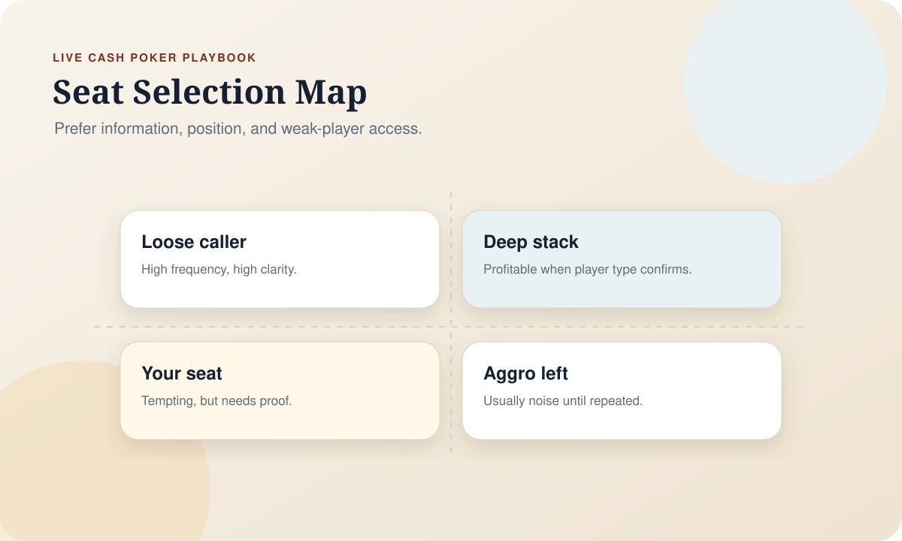
Actual lesson: The central lesson is that preflop profit starts before cards are dealt: choose better seats, enter fewer dominated spots, and attack limpers with position. Best default: Sit with loose, deep, mistake-prone players on your right; open tighter up front; widen late only when position and table texture let you realize equity. Most common leak: Using a loose table as permission to play loose hands out of position. A representative mined spot puts the idea into action: Use position to simplify decisions and pressure weaker ranges [E1].
The table-facing question for this chapter is simple: Before calling or raising preflop, ask: will this hand make clean value, win with position, or trap me into second-best one-pair hands? If the answer is vague, the hand is probably being driven by curiosity, fear, or autopilot rather than by a clean live-cash edge. The purpose of the chapter is to make that answer specific enough to use while chips are moving, not to admire the concept from a safe distance after the session.
These are not claims about perfect equilibrium play. They are the best low-stakes live-cash defaults to try first, then adjust when the table gives you better evidence.
Where should I sit? Prefer the seat with loose, deep, mistake-prone players on your right and fewer strong aggressive players on your left. Acting after the weakest money is a recurring edge. This answer is not meant as a universal law; it is the starting line supported by the repeated evidence in this chapter [E1].
What should I open? Use a tight live-cash starter map: early position roughly 66+, AJs+, KQs, AQo+; middle position adds suited broadways, ATs+, KJs+, QJs, JTs, 55+ and KQo; cutoff and button widen when the blinds are passive and stacks let you realize equity. This answer is not meant as a universal law; it is the starting line supported by the repeated evidence in this chapter [E2].
When should I isolate limpers? Isolate to about 4-5bb plus 1bb per limper when you are in position, ahead of the limp-calling range, and deep enough to get paid. Overlimp speculative hands only when the table will pay off big made hands. This answer is not meant as a universal law; it is the starting line supported by the repeated evidence in this chapter [E3].
The practical sequence is question, default, exception, review. Ask the question before the action, use the default when the table is ordinary, require evidence for the exception, and review the decision by whether that evidence was real.
The operating model is: The central lesson is that preflop profit starts before cards are dealt: choose better seats, enter fewer dominated spots, and attack limpers with position. That model only becomes useful when position, stack depth, table selection, and isolation raising become concrete table actions. The mined examples cluster around Position creates decision leverage, Initiative simplifies the hand, and Sizing reveals real intent, so the player should not chase a single dramatic quote. It should teach the repeatable pattern: Sit with loose, deep, mistake-prone players on your right; open tighter up front; widen late only when position and table texture let you realize equity. The warning sign is equally concrete: Using a loose table as permission to play loose hands out of position. The player should keep returning to one question under pressure: Before calling or raising preflop, ask: will this hand make clean value, win with position, or trap me into second-best one-pair hands? [E1]
This is not trying to solve poker from first principles or make a balanced-game claim about every possible opponent. It is translating repeated live-cash evidence into a starting line that beats the games most readers actually sit in. The default can be overridden, but only after a player earns the override with specific reads, specific prices, and a specific reason the current opponent differs from the pool.
Preflop is where low-stakes players quietly donate future-street EV. Loose tables tempt players into dominated calls, weak offsuit broadways, speculative hands without implied odds, and out-of-position spots that look cheap until top pair becomes expensive. Seat selection compounds the effect because acting after the splashiest stacks lets you collect information before committing money. A representative mined decision points in the same direction: Use position to simplify decisions and pressure weaker ranges [E1].
The live pool lets disciplined preflop strategy work because many opponents do not punish tight early ranges, do not isolate limpers well, and do not adjust enough when a strong player has position. A better seat and a cleaner range turn the rest of the hand from guesswork into execution.
Across Crush Live Poker, Hungry Horse Poker, and Live Poker Guide, the shared lesson is not merely that preflop discipline and seat selection matters. The shared lesson is operational: Sit with loose, deep, mistake-prone players on your right; open tighter up front; widen late only when position and table texture let you realize equity. The repeated themes are Position creates decision leverage, Initiative simplifies the hand, and Sizing reveals real intent, which all point toward the same table habit. The main disagreement is usually not about the destination; it is about the route. One source may teach the spot through sizing, another through player type, and another through discipline or hand selection. Those differences are useful only when they sharpen the table question: Before calling or raising preflop, ask: will this hand make clean value, win with position, or trap me into second-best one-pair hands?
Crush Live Poker contributes hand reading, line construction, bet sizing, and river discipline; in this chapter its clearest mined example points to Position creates decision leverage, with the decision: Use position to simplify decisions and pressure weaker ranges [E1].
Hungry Horse Poker contributes exploitative systems, pro-versus-amateur thinking, and pressure against capped ranges; in this chapter its clearest mined example points to Position creates decision leverage, with the decision: Use position to simplify decisions and pressure weaker ranges [E2].
Live Poker Guide contributes $1/$2 and $1/$3 execution, session habits, and clear defaults for loose splashy games; in this chapter its clearest mined example points to Position creates decision leverage, with the decision: Use position to simplify decisions and pressure weaker ranges [E3].
The synthesis for the reader is therefore practical rather than decorative. Use the agreement as the default, use the source-specific emphasis as a diagnostic lens, and watch for the leak: Using a loose table as permission to play loose hands out of position. If multiple sources arrive at the same default from different angles, the recommendation deserves more weight than a single isolated hand.
Case study first: in Dealer’s Hilarious Bluff on a Generous Tipper! from Crush Live Poker, the usable lesson is not the surface drama of the hand. It is the decision shape. The card records the key decision as: Use position to simplify decisions and pressure weaker ranges The strategic takeaway is Keeping the betting lead forces passive live opponents to reveal the strength of their ranges. [E1]. In practice, this means the reader should pause before asking, 'Can I win this pot?' and ask the better live-cash question: 'What does this action usually represent from this player type, at this size, in this room?' The answer will not always be comfortable, but it will usually be more profitable than treating the spot as a puzzle designed to reward bravery.
Case study second: in Don't Make These 5 Bluffing MISTAKES from Hungry Horse Poker, the usable lesson is not the surface drama of the hand. It is the decision shape. The card records the key decision as: Use position to simplify decisions and pressure weaker ranges The strategic takeaway is The ability to apply pressure comes from who acts last and whose range can credibly represent strength. [E2]. In practice, this means the reader should pause before asking, 'Can I win this pot?' and ask the better live-cash question: 'What does this action usually represent from this player type, at this size, in this room?' The answer will not always be comfortable, but it will usually be more profitable than treating the spot as a puzzle designed to reward bravery.
Case study third: in 5 Mistakes That RUIN Your Win Rate from Live Poker Guide, the usable lesson is not the surface drama of the hand. It is the decision shape. The card records the key decision as: Use position to simplify decisions and pressure weaker ranges The strategic takeaway is Position lets you realize equity, control pot size, and gather more information before committing money. [E3]. In practice, this means the reader should pause before asking, 'Can I win this pot?' and ask the better live-cash question: 'What does this action usually represent from this player type, at this size, in this room?' The answer will not always be comfortable, but it will usually be more profitable than treating the spot as a puzzle designed to reward bravery.
Case study fourth: in Full Length: Live poker training of a $1-$3NL Deep Stacked Game from Crush Live Poker, the usable lesson is not the surface drama of the hand. It is the decision shape. The card records the key decision as: Interpret sizing as a live tell and adjust exploitatively The strategic takeaway is Bet sizing often communicates live intent directly enough to justify disciplined exploitative adjustments. [E4]. In practice, this means the reader should pause before asking, 'Can I win this pot?' and ask the better live-cash question: 'What does this action usually represent from this player type, at this size, in this room?' The answer will not always be comfortable, but it will usually be more profitable than treating the spot as a puzzle designed to reward bravery.
Case study fifth: in 99% of Players FAIL This Poker IQ Test from Hungry Horse Poker, the usable lesson is not the surface drama of the hand. It is the decision shape. The card records the key decision as: Use position to simplify decisions and pressure weaker ranges The strategic takeaway is Keeping the betting lead forces passive live opponents to reveal the strength of their ranges. [E5]. In practice, this means the reader should pause before asking, 'Can I win this pot?' and ask the better live-cash question: 'What does this action usually represent from this player type, at this size, in this room?' The answer will not always be comfortable, but it will usually be more profitable than treating the spot as a puzzle designed to reward bravery.
Taken together, these case studies make the chapter less dependent on a single hand. They show how preflop discipline and seat selection keeps returning as a repeatable decision problem: the player has some information, the pool has a recognizable tendency, and the profitable line asks the player to trust the pattern without becoming rigid. That is the balance the rest of the chapter keeps returning to.
Use these as supporting margin notes, not as the main lesson. The teaching has already been synthesized above; these notes show which mined spots supplied the pressure points.
Synthesis note: In preflop discipline and seat selection, the examples matter because they keep pointing to the same habit: make the profitable default obvious before the hand invites ego, curiosity, or fancy-play syndrome.
Key lesson: The best preflop decision may happen before you look at your cards. Changing seats, refusing dominated hands, and declining bad-position calls can be worth more than a clever postflop line. It feels less heroic because it prevents hard spots instead of solving them. [E4]
This is why the advice can feel wrong while being profitable. The player may leave the table with fewer cinematic stories, but the win rate comes from the unglamorous decisions that repeat: cleaner preflop entries, better seats, more precise value, fewer curiosity calls, and bluffs aimed at players who can actually fold. The lesson is not to become timid. It is to reserve aggression, curiosity, and deviation for spots where the evidence says they earn money.
The chapter's closing model is deliberately plain. Start with the chapter concept, identify the live-pool leak, match the leak to the line, then ask what evidence would justify a deviation. That four-part habit keeps preflop discipline and seat selection from becoming either a slogan or a superstition. It also protects the reader from the most common failure mode in low-stakes live cash: knowing the right adjustment away from the table and then talking oneself out of it when the pot gets large [E1].
The reader should leave the chapter with a practical bias, not a rigid script. In ordinary games, the bias is to trust source-backed population evidence before trusting adrenaline. In unusual games, the bias is to update quickly when opponents prove they are different. The money is made in that middle ground, where the player is disciplined enough to use defaults and attentive enough to notice when a default no longer applies.
| Evidence | Channel | Video | Segment | Time | Theme | Decision | Isolated Lesson | Transcript Note | Confidence |
|---|---|---|---|---|---|---|---|---|---|
| E1 | Crush Live Poker | Dealer’s Hilarious Bluff on a Generous Tipper! | seg_f3089403cf30 | 07:50-08:48 | Initiative simplifies the hand | Use position to simplify decisions and pressure weaker ranges | Keeping the betting lead forces passive live opponents to reveal the strength of their ranges. | wasn't thinking that hard that's what I would be thinking if I was in your spot I mean forget about I was in your spot I mean forget abou... | 0.84 |
| E2 | Hungry Horse Poker | Don't Make These 5 Bluffing MISTAKES | seg_c52cf8a957c5 | 11:41-12:16 | Leverage comes from range and position | Use position to simplify decisions and pressure weaker ranges | The ability to apply pressure comes from who acts last and whose range can credibly represent strength. | Raw transcript omitted from final prose; use the timestamped source segment for review. | 0.91 |
| E3 | Live Poker Guide | 5 Mistakes That RUIN Your Win Rate | seg_36aad782c8d3 | 00:03-00:47 | Position creates decision leverage | Use position to simplify decisions and pressure weaker ranges | Position lets you realize equity, control pot size, and gather more information before committing money. | five mistakes that ruin every poker player's win rate in no particular order let's jump right into them number one let's jump right into... | 0.69 |
| E4 | Crush Live Poker | Full Length: Live poker training of a $1-$3NL Deep Stacked Game | seg_759537ed03a4 | 06:26-07:09 | Sizing reveals real intent | Interpret sizing as a live tell and adjust exploitatively | Bet sizing often communicates live intent directly enough to justify disciplined exploitative adjustments. | that in this particular spot I think when the preflop raiser is heads up against you as a field flat caller and he checks as a field flat... | 0.71 |
| E5 | Hungry Horse Poker | 99% of Players FAIL This Poker IQ Test | seg_b98ea15205a6 | 17:02-17:35 | Initiative simplifies the hand | Use position to simplify decisions and pressure weaker ranges | Keeping the betting lead forces passive live opponents to reveal the strength of their ranges. | Raw transcript omitted from final prose; use the timestamped source segment for review. | 0.84 |
| E6 | Live Poker Guide | How To Maximally Exploit Recreational Players at 1/3 Live Poker | seg_f2c3a8fafdac | 09:05-09:54 | Position creates decision leverage | Use position to simplify decisions and pressure weaker ranges | Position lets you realize equity, control pot size, and gather more information before committing money. | will have to fold because he just doesn't have any bluffs at this point. | 0.93 |
| E7 | Crush Live Poker | QQ Flats preflop misses river value | seg_4e99c55e9b11 | 02:54-03:45 | Sizing reveals real intent | Interpret sizing as a live tell and adjust exploitatively | Bet sizing often communicates live intent directly enough to justify disciplined exploitative adjustments. | the game is that even recreational players might not say check full days King ace Jack something that in King ace Jack something that in... | 0.71 |
| E8 | Hungry Horse Poker | Here's Why Your Bluffs Aren't Working | seg_cf3e99543b48 | 10:39-11:23 | Position creates decision leverage | Use position to simplify decisions and pressure weaker ranges | Position lets you realize equity, control pot size, and gather more information before committing money. | very very large size on the turn maybe our low Equity Bluffs in air and some of our thinner value hands want to choose this smaller size... | 0.84 |
| E9 | Live Poker Guide | 10 Years of Live Poker Advice in 3 hours - Everything I know! | seg_2c391ce85d79 | 01:04:02-01:04:48 | Exploit the live pool you actually face | Interpret sizing as a live tell and adjust exploitatively | The highest-EV default is to attack the actual pool tendency in front of you, not an imaginary balanced opponent. | Okay, let's start with one of the most important exploits. | 0.92 |
| E10 | Crush Live Poker | Poker Strategy: AQ Gets Check Raised On Turn | seg_825121a24ec5 | 10:13-11:08 | Initiative simplifies the hand | Use position to simplify decisions and pressure weaker ranges | Keeping the betting lead forces passive live opponents to reveal the strength of their ranges. | hero bet and the button called and now this guy check raises my contention here is that if I was in the spot of this guy in the big blind... | 0.91 |
| E11 | Hungry Horse Poker | 90% of Money Is Won on the River (The System That Fixes Your Winrate) | seg_6ec19f289882 | 21:29-22:14 | Bluff-catching is usually overrated | Respond to river aggression with population-aware discipline | Bluff-catching is overrated when the pool rarely arrives on the river with enough bluffs. | So very important question to ask. | 0.93 |
| E12 | Live Poker Guide | 10 Years of Live Poker Advice in 3 hours - Everything I know! | seg_98f6c0b12300 | 02:20:52-02:21:41 | Position creates decision leverage | Use position to simplify decisions and pressure weaker ranges | Position lets you realize equity, control pot size, and gather more information before committing money. | goes for the triple barrel bluff. | 0.92 |
| E13 | Crush Live Poker | Poker Strategy: Check Raising The Turn As A Bluff | seg_594e4b58c802 | 06:25-07:22 | Sizing reveals real intent | Interpret sizing as a live tell and adjust exploitatively | Bet sizing often communicates live intent directly enough to justify disciplined exploitative adjustments. | Raw transcript omitted from final prose; use the timestamped source segment for review. | 0.91 |
| E14 | Hungry Horse Poker | Top 5 Spots To Go HUGE With Value | seg_0919dc1c392a | 06:14-07:03 | Position creates decision leverage | Use position to simplify decisions and pressure weaker ranges | Position lets you realize equity, control pot size, and gather more information before committing money. | pot here on this River and I think that's just leaving a ton of money on the table I would almost always overb the table I would almost a... | 0.91 |
| E15 | Live Poker Guide | Fix These Mistakes And You’ll Crush 1/2 and 1/3 Live! | seg_8f97407cc250 | 08:12-08:45 | Position creates decision leverage | Use position to simplify decisions and pressure weaker ranges | Position lets you realize equity, control pot size, and gather more information before committing money. | said, this next mistake is a big bankroll killer, but with a simple rule, you can completely avoid it. | 0.92 |
| E16 | Crush Live Poker | Poker Tips: When to Just Call or Raise BIG! | seg_8d0a1b6b0955 | 15:23-16:03 | Initiative simplifies the hand | Use position to simplify decisions and pressure weaker ranges | Keeping the betting lead forces passive live opponents to reveal the strength of their ranges. | Raw transcript omitted from final prose; use the timestamped source segment for review. | 0.74 |
| E17 | Hungry Horse Poker | What High Stakes Pros Know That Low Stakes Players Don’t (Round 2) | seg_fee54c1852fa | 23:10-23:37 | Initiative simplifies the hand | Use position to simplify decisions and pressure weaker ranges | Keeping the betting lead forces passive live opponents to reveal the strength of their ranges. | Here Charlie also seat the Flop but chose a much smaller size here multi way which just gave him a little bit more which just gave him a... | 0.66 |
| E18 | Live Poker Guide | If You Want to Crush 1/2 in 2026, Fix These 5 Leaks | seg_4355613dc01c | 08:45-09:38 | Initiative simplifies the hand | Use position to simplify decisions and pressure weaker ranges | Keeping the betting lead forces passive live opponents to reveal the strength of their ranges. | Most advice out there is designed for heads up pot. | 0.92 |
| E19 | Crush Live Poker | Poker Strategy: Check Raising The Turn As A Bluff | seg_c332d08d89b1 | 07:56-08:59 | Bluff-catching is usually overrated | Respond to river aggression with population-aware discipline | Bluff-catching is overrated when the pool rarely arrives on the river with enough bluffs. | because if he's gonna call down with a hand if I'm in the cutoff spot here Dave and I decide all right well Dave and I decide all right w... | 0.88 |
| E20 | Hungry Horse Poker | BLUFF BUSTING: Catch Bluffs Like a Poker Pro (5 Step Guide) | seg_e827265dd301 | 05:25-05:59 | Bluff-catching is usually overrated | Respond to river aggression with population-aware discipline | Bluff-catching is overrated when the pool rarely arrives on the river with enough bluffs. | looks a pretty easy Bluff catch spot to me little bit of nuance for you guys maybe a little bit of bonus here I guys maybe a little bit o... | 0.93 |
| E21 | Live Poker Guide | The Stephen King Method for Easy Poker Wins | seg_69866d2f66a6 | 05:12-06:27 | Position creates decision leverage | Use position to simplify decisions and pressure weaker ranges | Position lets you realize equity, control pot size, and gather more information before committing money. | river is a brick we can now go for the overbed jam on the river unless he has a set or trips he will have an incredibly hard time to call... | 0.92 |
| E22 | Crush Live Poker | Full Length: Live poker training of a $1-$3NL Deep Stacked Game | seg_fff73c92487e | 14:00-14:41 | Position creates decision leverage | Use position to simplify decisions and pressure weaker ranges | Position lets you realize equity, control pot size, and gather more information before committing money. | p2 and Loretta calls here with nine a diamond sword I think is perfectly fine she's getting twenty five acts on the she's getting twenty... | 0.59 |
| E23 | Hungry Horse Poker | The 9 Biggest Mistakes Low Stakes Poker Pros Make | seg_2c62dbf79e0c | 02:43-03:18 | Sizing reveals real intent | Interpret sizing as a live tell and adjust exploitatively | Bet sizing often communicates live intent directly enough to justify disciplined exploitative adjustments. | profitable play all right one more example here and this is a concept I example here and this is a concept I just made up called Showdown... | 0.93 |
| E24 | Live Poker Guide | How To Navigate to a Win at 1/2 and 1/3 Live Poker! | seg_d1cc79c081df | 15:16-16:07 | Position creates decision leverage | Use position to simplify decisions and pressure weaker ranges | Position lets you realize equity, control pot size, and gather more information before committing money. | Raw transcript omitted from final prose; use the timestamped source segment for review. | 0.86 |
| E25 | Crush Live Poker | Poker Strategy: Can We Still Get Value When The Flush Comes In? | seg_bd9fa73cb7ef | 00:01-01:13 | Position creates decision leverage | Use position to simplify decisions and pressure weaker ranges | Position lets you realize equity, control pot size, and gather more information before committing money. | hi I'm Bart Hansen the owner and operator of crush live poker calm the operator of crush live poker calm the following hand comes from ou... | 0.91 |
| E26 | Hungry Horse Poker | The Poker Skill 99% of Players Don’t Have | seg_925f3ceeabc2 | 00:42-01:26 | Position creates decision leverage | Use position to simplify decisions and pressure weaker ranges | Position lets you realize equity, control pot size, and gather more information before committing money. | All right, so the first villain we're playing against here is Debbie Don out of the big blind. | 0.93 |
| E27 | Live Poker Guide | 10 Years of Live Poker Advice in 3 hours - Everything I know! | seg_7e26668aed1c | 46:37-47:30 | Initiative simplifies the hand | Use position to simplify decisions and pressure weaker ranges | Keeping the betting lead forces passive live opponents to reveal the strength of their ranges. | I don't hate this check because check. | 0.91 |
| E28 | Crush Live Poker | Poker Strategy: Straight Draw Rivers Top Pair And Faces Tiny Bet | seg_95a2d64c5406 | 04:59-05:58 | Position creates decision leverage | Use position to simplify decisions and pressure weaker ranges | Position lets you realize equity, control pot size, and gather more information before committing money. | type of hand there's also a possibility here that you could cooler somebody with a 9 so if this guy actually flopped 910 if the big blind... | 0.91 |
| E29 | Hungry Horse Poker | $100/hr at Low Stakes? High Stakes CRUSHER Weighs In | Ep 11 | seg_159a3d1ba7b5 | 39:11-39:42 | Position creates decision leverage | Use position to simplify decisions and pressure weaker ranges | Position lets you realize equity, control pot size, and gather more information before committing money. | value on this River next hand I'm a opening blind on the button once again the big blind calls and we looked down the big blind calls and... | 0.92 |
| E30 | Live Poker Guide | How to Use GTO Wizard For Free! (Tutorial) | seg_0e73349c8553 | 01:32-02:12 | Position creates decision leverage | Use position to simplify decisions and pressure weaker ranges | Position lets you realize equity, control pot size, and gather more information before committing money. | restrictions but if you're clever you can still get a lot out of them so the first tool is the spot study analyzer how I call it I don't... | 0.91 |
| E31 | Crush Live Poker | Stop Playing Scared and Start Crushing Higher Stakes | seg_831148ff0901 | 20:13-20:56 | Position creates decision leverage | Use position to simplify decisions and pressure weaker ranges | Position lets you realize equity, control pot size, and gather more information before committing money. | looks he's going to check call so it's a a bad spot for the button of bluff to think that he's going to get through two people there but... | 0.91 |
| E32 | Hungry Horse Poker | How to Make Perfect READS in Live Poker | seg_a46c1258f886 | 00:34-01:08 | Position creates decision leverage | Use position to simplify decisions and pressure weaker ranges | Position lets you realize equity, control pot size, and gather more information before committing money. | cuto off here we're just going to fold on the button we're not involved in this hand villain is going to call in the big blind flop comes... | 0.92 |
| E33 | Live Poker Guide | These 5 Mistakes Hold You Back in Live Poker! | seg_b643864d6c81 | 05:40-06:32 | Initiative simplifies the hand | Use position to simplify decisions and pressure weaker ranges | Keeping the betting lead forces passive live opponents to reveal the strength of their ranges. | raced Ace King villain called on the button flop came Ace 103 rainbow hero button flop came Ace 103 rainbow hero check I don't hate this... | 0.91 |
| E34 | Crush Live Poker | Nobody Will Guess What Hand This Villain Jammed | seg_5e8603775ee2 | 09:58-10:42 | Sizing reveals real intent | Interpret sizing as a live tell and adjust exploitatively | Bet sizing often communicates live intent directly enough to justify disciplined exploitative adjustments. | configuration in this hand was playing three better fold and three bet and you three better fold and three bet and you called, I would th... | 0.68 |
| E35 | Hungry Horse Poker | The Poker Skill 99% of Players Don’t Have | seg_8b0c4b675817 | 23:46-24:33 | Initiative simplifies the hand | Use position to simplify decisions and pressure weaker ranges | Keeping the betting lead forces passive live opponents to reveal the strength of their ranges. | is going to jam all in here on this river. | 0.92 |
| E36 | Live Poker Guide | How To Win at 1/2 and 1/3 Live Without Having the Best Hand | seg_f88233c2c7a4 | 04:01-04:49 | Bluff-catching is usually overrated | Respond to river aggression with population-aware discipline | Bluff-catching is overrated when the pool rarely arrives on the river with enough bluffs. | to show everyone that I do call down there. | 0.85 |
| E37 | Crush Live Poker | How to Read Poker Hands: A Complete Guide for Beginners | seg_7b0dea310d4e | 01:34-02:27 | Position creates decision leverage | Use position to simplify decisions and pressure weaker ranges | Position lets you realize equity, control pot size, and gather more information before committing money. | Raw transcript omitted from final prose; use the timestamped source segment for review. | 0.62 |
| E38 | Hungry Horse Poker | I’ll Tell You My Exact Strategy. You Still Can’t Exploit Me | seg_a17ca7eefdcf | 09:56-10:24 | Position creates decision leverage | Use position to simplify decisions and pressure weaker ranges | Position lets you realize equity, control pot size, and gather more information before committing money. | So, we're just going to have much more profitable bluffing opportunities across turns and rivers. | 0.91 |
| E39 | Live Poker Guide | High Stakes Players Make the Same Mistakes As YOU! | seg_3b4ced96aa7f | 05:11-06:36 | Position creates decision leverage | Use position to simplify decisions and pressure weaker ranges | Position lets you realize equity, control pot size, and gather more information before committing money. | cupboard because I think this should have been an easy value bet here on the river next hand doesn't involve Andreas for a change we have... | 0.93 |
| E40 | Crush Live Poker | How Bet Size Tells Expose Opponents' Range (Pro Hack) | seg_baf1124af3d0 | 04:39-05:41 | Initiative simplifies the hand | Use position to simplify decisions and pressure weaker ranges | Keeping the betting lead forces passive live opponents to reveal the strength of their ranges. | Street and you've got the betting lead in an exact spot that if they follow up with the same bet or less it usually is not strength on a... | 0.67 |
| E41 | Hungry Horse Poker | Low Stakes Has Changed for 2026. Most Players Won't Adapt. | seg_ff58201befe8 | 06:18-06:48 | Sizing reveals real intent | Interpret sizing as a live tell and adjust exploitatively | Bet sizing often communicates live intent directly enough to justify disciplined exploitative adjustments. | means this is going to be a very, very profitable spot to go three streets for value. | 0.91 |
| E42 | Live Poker Guide | These 4 Mistakes Stop You From Winning at Live Poker | seg_f20ddf08feeb | 03:16-04:06 | Initiative simplifies the hand | Use position to simplify decisions and pressure weaker ranges | Keeping the betting lead forces passive live opponents to reveal the strength of their ranges. | is a cousin to the first mistake but this one is even more costly let's look at another hand this time a passive at another hand this tim... | 0.92 |
| E43 | Crush Live Poker | Nightmare Spot in the Biggest Game He’d Ever Played | seg_5311a9e5031a | 07:32-08:21 | Position creates decision leverage | Use position to simplify decisions and pressure weaker ranges | Position lets you realize equity, control pot size, and gather more information before committing money. | if they're looking for a baseline to approach this spot, this particular situation would come up so infrequently. | 0.67 |
| E44 | Hungry Horse Poker | This Blind Spot Keeps Winning Players at Low Stakes | seg_21186c00c23b | 17:53-18:27 | Position creates decision leverage | Use position to simplify decisions and pressure weaker ranges | Position lets you realize equity, control pot size, and gather more information before committing money. | We're going to choose a size for God knows what reason and we're going to get jammed on in this spot because this guy just always has que... | 0.91 |
| E45 | Live Poker Guide | These 4 Plays Will Skyrocket Your Win Rate at Live Poker! | seg_97b10bbe1aef | 05:53-07:01 | Position creates decision leverage | Use position to simplify decisions and pressure weaker ranges | Position lets you realize equity, control pot size, and gather more information before committing money. | miss this one and it even shows you how to Bluff successfully at live low stakes but before we continue please smash that button button i... | 0.92 |
| E46 | Crush Live Poker | Poker Strategy: Is Folding Trips Too Weak? | seg_2ed15ebed7dd | 03:04-03:52 | Position creates decision leverage | Use position to simplify decisions and pressure weaker ranges | Position lets you realize equity, control pot size, and gather more information before committing money. | Raw transcript omitted from final prose; use the timestamped source segment for review. | 0.83 |
| E47 | Hungry Horse Poker | Why 'Good' Poker Players Actually Suck (And How to Beat Them) | seg_74cd2d20c7f9 | 07:14-07:49 | Position creates decision leverage | Use position to simplify decisions and pressure weaker ranges | Position lets you realize equity, control pot size, and gather more information before committing money. | in equilibrium so I think in this particular spot winning players actually underst stab when we check to them all right and the last conc... | 0.91 |
| E48 | Live Poker Guide | You Don’t Need Fancy Plays—Just Do This to Win at Live Poker! | seg_6815c1b503e0 | 03:00-03:43 | Position creates decision leverage | Use position to simplify decisions and pressure weaker ranges | Position lets you realize equity, control pot size, and gather more information before committing money. | One who plays too many hands, calls too much and bluffs too little. | 0.83 |
| E49 | Crush Live Poker | Poker Strategy: The Basics of Value Betting | seg_dda23b545924 | 02:47-03:47 | Sizing reveals real intent | Interpret sizing as a live tell and adjust exploitatively | Bet sizing often communicates live intent directly enough to justify disciplined exploitative adjustments. | the post flop stacked ups are deeper so if you want to Bluff later on you leave some of your stack open to fool stack open to fool around... | 0.59 |
| E50 | Hungry Horse Poker | BLUFF BUSTING: Catch Bluffs Like a Poker Pro (5 Step Guide) | seg_c46e5cfc5e63 | 10:45-11:06 | Initiative simplifies the hand | Use position to simplify decisions and pressure weaker ranges | Keeping the betting lead forces passive live opponents to reveal the strength of their ranges. | 100 big blinds for a BET right this could be an entire stack size so yes the size is significant and do they have non-sh Showdown value n... | 0.78 |
| E51 | Live Poker Guide | If You’re Not Winning at 1/2 or 1/3, This Is Probably Why | seg_ab13940dd6a8 | 03:47-04:39 | Position creates decision leverage | Use position to simplify decisions and pressure weaker ranges | Position lets you realize equity, control pot size, and gather more information before committing money. | to the aggressive maniac who puts pressure on you constantly. | 0.76 |
| E52 | Crush Live Poker | Poker Strategy: Pocket Aces Faces A Confusing River Lead | seg_655ea6b1b3b5 | 08:15-09:17 | Position creates decision leverage | Use position to simplify decisions and pressure weaker ranges | Position lets you realize equity, control pot size, and gather more information before committing money. | position I didn't really get but I wasn't sure how I knew I left a lot of value on the table I just wasn't sure how much well I mean p yo... | 0.52 |
| E53 | Hungry Horse Poker | I Watched Players Think Out Loud. They All Make the Same Mistake. | seg_8ae6f15c325c | 30:03-30:18 | Position creates decision leverage | Use position to simplify decisions and pressure weaker ranges | Position lets you realize equity, control pot size, and gather more information before committing money. | push a little bit more on is sizing, right? | 0.60 |
| E54 | Live Poker Guide | These 3 Hacks Will Maximize Your Live Poker Winnings! | seg_3dc04537eadf | 03:24-04:09 | Position creates decision leverage | Use position to simplify decisions and pressure weaker ranges | Position lets you realize equity, control pot size, and gather more information before committing money. | total of $115 that can be divied up between the two pros and the good R these are two pros and the good R these are obviously not perfect... | 0.35 |
| E55 | Crush Live Poker | Poker Folding the 3nd nuts? ($5000 pot) | seg_03146d7d167e | 03:55-04:40 | Position creates decision leverage | Use position to simplify decisions and pressure weaker ranges | Position lets you realize equity, control pot size, and gather more information before committing money. | Raw transcript omitted from final prose; use the timestamped source segment for review. | 0.74 |
| E56 | Hungry Horse Poker | These Hands Are INSANE (I'm Not on Drugs!) | Ep 2 | seg_b8379f9d1cb8 | 20:10-21:13 | Position creates decision leverage | Use position to simplify decisions and pressure weaker ranges | Position lets you realize equity, control pot size, and gather more information before committing money. | unfortunate River card here where on most rivers except the board Paran River we are just getting all of the money all right next hand he... | 0.82 |
| E57 | Live Poker Guide | My Top 6 Exploits To WIN MORE At 1/2 and 1/3 Live | seg_198adb289128 | 08:08-09:23 | Exploit the live pool you actually face | Interpret sizing as a live tell and adjust exploitatively | The highest-EV default is to attack the actual pool tendency in front of you, not an imaginary balanced opponent. | Raw transcript omitted from final prose; use the timestamped source segment for review. | 0.93 |
| E58 | Crush Live Poker | What’s the ideal preflop strategy? | seg_50d37604b095 | 06:33-07:37 | Position creates decision leverage | Use position to simplify decisions and pressure weaker ranges | Position lets you realize equity, control pot size, and gather more information before committing money. | very very strong but III think they harping on some of these very very close preflop spots he is people are starting to go down to go dow... | 0.74 |
| E59 | Hungry Horse Poker | How to Exploit EVERY Player at Your Table | seg_ba01e68a2465 | 19:57-20:37 | Exploit the live pool you actually face | Interpret sizing as a live tell and adjust exploitatively | The highest-EV default is to attack the actual pool tendency in front of you, not an imaginary balanced opponent. | Queen 10 of Hearts here we're going to see B the Flop they call we are going to go small on this flushing turn they call again and now th... | 0.93 |
| E60 | Live Poker Guide | How to Beat Loose and Wild Live Poker Games | seg_5f564e290344 | 11:37-12:29 | Position creates decision leverage | Use position to simplify decisions and pressure weaker ranges | Position lets you realize equity, control pot size, and gather more information before committing money. | Raw transcript omitted from final prose; use the timestamped source segment for review. | 0.81 |
| E61 | Crush Live Poker | Can You Fold Kings Here? $5/$10/$25 MGM Hand Breakdown | seg_f619aea7293b | 10:18-11:33 | Position creates decision leverage | Use position to simplify decisions and pressure weaker ranges | Position lets you realize equity, control pot size, and gather more information before committing money. | multi-way pots now maybe the guy is but I'm just saying by the way this is why I told the caller Haiti right that it's an easier check on... | 0.91 |
| E62 | Hungry Horse Poker | I Gave a Weekend Warrior and a Full Time Pro the Same 5 Hands | seg_7631e4445b0d | 40:02-40:52 | Position creates decision leverage | Use position to simplify decisions and pressure weaker ranges | Position lets you realize equity, control pot size, and gather more information before committing money. | considering all the options turning showdown value into a bluff right away. | 0.93 |
| E63 | Live Poker Guide | 5 Lies that Keep 1/2 and 1/3 Players Broke & Stuck! | seg_59d988db6cea | 06:00-06:43 | Position creates decision leverage | Use position to simplify decisions and pressure weaker ranges | Position lets you realize equity, control pot size, and gather more information before committing money. | The river was an offsuit king. | 0.85 |
| E64 | Crush Live Poker | Poker Strategy: What's The Best Line To Take As A Bluff? | seg_afe417cfc925 | 06:24-06:59 | Position creates decision leverage | Use position to simplify decisions and pressure weaker ranges | Position lets you realize equity, control pot size, and gather more information before committing money. | Raw transcript omitted from final prose; use the timestamped source segment for review. | 0.91 |
| E65 | Hungry Horse Poker | Where Poker Players BLUFF Too Much… And Where They NEVER Bluff | seg_9bb75e6980b1 | 12:40-13:05 | Bluff-catching is usually overrated | Respond to river aggression with population-aware discipline | Bluff-catching is overrated when the pool rarely arrives on the river with enough bluffs. | Raw transcript omitted from final prose; use the timestamped source segment for review. | 0.93 |
| E66 | Live Poker Guide | GTO vs. Reading Players: When to Adapt Your Poker Strategy (For Wins!) | seg_7f8670a1b2a7 | 00:41-01:30 | Initiative simplifies the hand | Use position to simplify decisions and pressure weaker ranges | Keeping the betting lead forces passive live opponents to reveal the strength of their ranges. | at this a fold is zero EV a call is almost zero EV but just note if you call in such a spot you really rely on being so much better than... | 0.85 |
| E67 | Crush Live Poker | Turning Trips into a Bluff on a Monotone Board | seg_784bfe519843 | 05:14-05:56 | Initiative simplifies the hand | Use position to simplify decisions and pressure weaker ranges | Keeping the betting lead forces passive live opponents to reveal the strength of their ranges. | there as the preflop three better as well that's going to definitely dissuade your opponent from bluffing you I mean how often are you ge... | 0.73 |
| E68 | Hungry Horse Poker | $100/hr at Low Stakes? High Stakes CRUSHER Weighs In | Ep 11 | seg_fbcdab70b6ae | 03:17-04:01 | Initiative simplifies the hand | Use position to simplify decisions and pressure weaker ranges | Keeping the betting lead forces passive live opponents to reveal the strength of their ranges. | Raw transcript omitted from final prose; use the timestamped source segment for review. | 0.92 |
| E69 | Live Poker Guide | How To Beat MANIACS In Poker | seg_8565059057f0 | 02:34-03:39 | Curiosity calls are expensive | Respond to river aggression with population-aware discipline | Paying off just to find out is usually a leak, not a learning strategy. | expected in this next hand Hero has 98 offit in the big blind and we Face a 3X open from the cut off who is a maniac and a calling statio... | 0.85 |
| E70 | Crush Live Poker | Poker Strategy: Pocket Aces Should we Bet the Flush Card? | seg_4ebc0a75cdbd | 00:47-01:39 | Position creates decision leverage | Use position to simplify decisions and pressure weaker ranges | Position lets you realize equity, control pot size, and gather more information before committing money. | oz on the river just tries to blow people away and it doesn't work so I've seen him walk quite a bit work so I've seen him walk quite a b... | 0.62 |
| E71 | Hungry Horse Poker | 99% of Players FAIL This Poker IQ Test | seg_ff7a6f85968b | 36:18-36:36 | Position creates decision leverage | Use position to simplify decisions and pressure weaker ranges | Position lets you realize equity, control pot size, and gather more information before committing money. | spot we don't think our opponents are ever going to fold trips so I would just go all in with pocket fivs next hand a solid rag opens on... | 0.92 |
| E72 | Live Poker Guide | How To Win at 1/2 and 1/3 Live Without Having the Best Hand | seg_9ad61530a902 | 07:59-09:01 | Initiative simplifies the hand | Use position to simplify decisions and pressure weaker ranges | Keeping the betting lead forces passive live opponents to reveal the strength of their ranges. | And I don't think I can necessarily get him off even second pair in this case because I would really be saying that I have a 10 if I go b... | 0.85 |
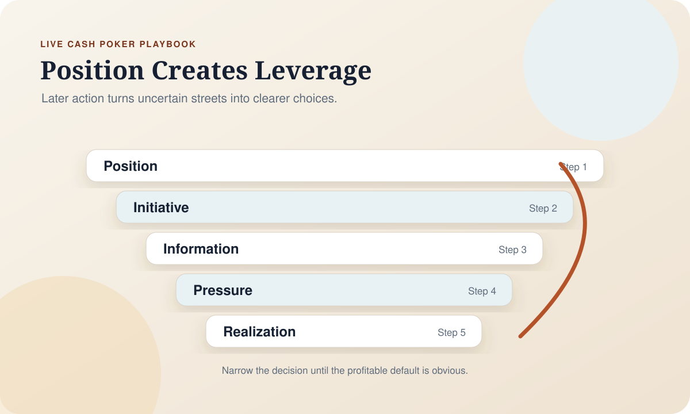
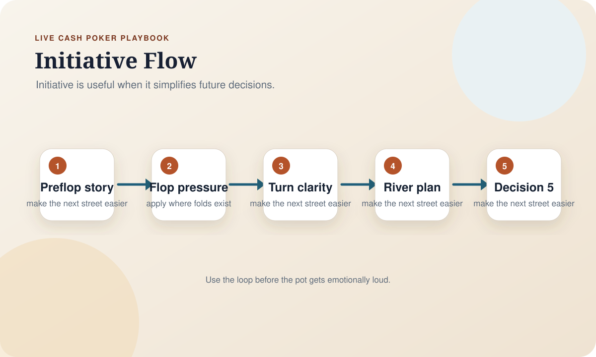
Actual lesson: The central lesson is that position and initiative are not slogans; they are tools for making later streets easier and more profitable. Best default: Prefer hands and lines that let you act last, keep range advantage credible, and know which turn cards continue the story before you bet the flop. Most common leak: Taking the betting lead without a turn plan, then feeling forced to continue after the board or opponent says stop. A representative mined spot puts the idea into action: Use position to simplify decisions and pressure weaker ranges [E1].
The table-facing question for this chapter is simple: Before betting, ask: does this action buy clearer future decisions or only preserve momentum? If the answer is vague, the hand is probably being driven by curiosity, fear, or autopilot rather than by a clean live-cash edge. The purpose of the chapter is to make that answer specific enough to use while chips are moving, not to admire the concept from a safe distance after the session.
These are not claims about perfect equilibrium play. They are the best low-stakes live-cash defaults to try first, then adjust when the table gives you better evidence.
Is position worth more than a pretty hand? Often yes. A marginal hand in position can outperform a prettier hand out of position because it captures information and controls pot growth. This answer is not meant as a universal law; it is the starting line supported by the repeated evidence in this chapter [E1].
When should I continuation bet? Bet more often heads-up on boards that favor your range; slow down multiway, on coordinated textures, or when you lack a credible turn plan. This answer is not meant as a universal law; it is the starting line supported by the repeated evidence in this chapter [E2].
How do I use initiative without spewing? Decide which turns continue before you bet the flop. If most turns leave you guessing, the flop bet is probably autopilot. This answer is not meant as a universal law; it is the starting line supported by the repeated evidence in this chapter [E3].
The practical sequence is question, default, exception, review. Ask the question before the action, use the default when the table is ordinary, require evidence for the exception, and review the decision by whether that evidence was real.
The operating model is: The central lesson is that position and initiative are not slogans; they are tools for making later streets easier and more profitable. That model only becomes useful when position, initiative, range advantage, and future street leverage become concrete table actions. The mined examples cluster around Position creates decision leverage, Initiative simplifies the hand, and Leverage comes from range and position, so the player should not chase a single dramatic quote. It should teach the repeatable pattern: Prefer hands and lines that let you act last, keep range advantage credible, and know which turn cards continue the story before you bet the flop. The warning sign is equally concrete: Taking the betting lead without a turn plan, then feeling forced to continue after the board or opponent says stop. The player should keep returning to one question under pressure: Before betting, ask: does this action buy clearer future decisions or only preserve momentum? [E1]
This is not trying to solve poker from first principles or make a balanced-game claim about every possible opponent. It is translating repeated live-cash evidence into a starting line that beats the games most readers actually sit in. The default can be overridden, but only after a player earns the override with specific reads, specific prices, and a specific reason the current opponent differs from the pool.
Position works in live poker because most opponents reveal more than they intend. They check when uncomfortable, call when curious, and raise more honestly than balanced theory would require. Acting last lets you use those signals before building the pot. A representative mined decision points in the same direction: Use position to simplify decisions and pressure weaker ranges [E1].
Initiative is valuable only when it clarifies future streets. The betting lead can force passive ranges to define themselves, but it becomes spew when the flop bet has no turn plan. The live-pool edge is to apply pressure where later decisions become easier, not to keep betting because you started.
Across Crush Live Poker, Hungry Horse Poker, and Live Poker Guide, the shared lesson is not merely that position, initiative, and decision leverage matters. The shared lesson is operational: Prefer hands and lines that let you act last, keep range advantage credible, and know which turn cards continue the story before you bet the flop. The repeated themes are Position creates decision leverage, Initiative simplifies the hand, and Leverage comes from range and position, which all point toward the same table habit. The main disagreement is usually not about the destination; it is about the route. One source may teach the spot through sizing, another through player type, and another through discipline or hand selection. Those differences are useful only when they sharpen the table question: Before betting, ask: does this action buy clearer future decisions or only preserve momentum?
Crush Live Poker contributes hand reading, line construction, bet sizing, and river discipline; in this chapter its clearest mined example points to Position creates decision leverage, with the decision: Use position to simplify decisions and pressure weaker ranges [E1].
Hungry Horse Poker contributes exploitative systems, pro-versus-amateur thinking, and pressure against capped ranges; in this chapter its clearest mined example points to Position creates decision leverage, with the decision: Use position to simplify decisions and pressure weaker ranges [E2].
Live Poker Guide contributes $1/$2 and $1/$3 execution, session habits, and clear defaults for loose splashy games; in this chapter its clearest mined example points to Position creates decision leverage, with the decision: Use position to simplify decisions and pressure weaker ranges [E3].
The synthesis for the reader is therefore practical rather than decorative. Use the agreement as the default, use the source-specific emphasis as a diagnostic lens, and watch for the leak: Taking the betting lead without a turn plan, then feeling forced to continue after the board or opponent says stop. If multiple sources arrive at the same default from different angles, the recommendation deserves more weight than a single isolated hand.
Case study first: in How to Play Over Pairs in 3 Bet Pots from Crush Live Poker, the usable lesson is not the surface drama of the hand. It is the decision shape. The card records the key decision as: Use position to simplify decisions and pressure weaker ranges The strategic takeaway is The ability to apply pressure comes from who acts last and whose range can credibly represent strength. [E1]. In practice, this means the reader should pause before asking, 'Can I win this pot?' and ask the better live-cash question: 'What does this action usually represent from this player type, at this size, in this room?' The answer will not always be comfortable, but it will usually be more profitable than treating the spot as a puzzle designed to reward bravery.
Case study second: in I Gave a Weekend Warrior and a Full Time Pro the Same 5 Hands from Hungry Horse Poker, the usable lesson is not the surface drama of the hand. It is the decision shape. The card records the key decision as: Use position to simplify decisions and pressure weaker ranges The strategic takeaway is Position lets you realize equity, control pot size, and gather more information before committing money. [E2]. In practice, this means the reader should pause before asking, 'Can I win this pot?' and ask the better live-cash question: 'What does this action usually represent from this player type, at this size, in this room?' The answer will not always be comfortable, but it will usually be more profitable than treating the spot as a puzzle designed to reward bravery.
Case study third: in 5 Mistakes That RUIN Your Win Rate from Live Poker Guide, the usable lesson is not the surface drama of the hand. It is the decision shape. The card records the key decision as: Use position to simplify decisions and pressure weaker ranges The strategic takeaway is Position lets you realize equity, control pot size, and gather more information before committing money. [E3]. In practice, this means the reader should pause before asking, 'Can I win this pot?' and ask the better live-cash question: 'What does this action usually represent from this player type, at this size, in this room?' The answer will not always be comfortable, but it will usually be more profitable than treating the spot as a puzzle designed to reward bravery.
Case study fourth: in Turning Pairs into Bluffs (Poker Strategy) from Crush Live Poker, the usable lesson is not the surface drama of the hand. It is the decision shape. The card records the key decision as: Use position to simplify decisions and pressure weaker ranges The strategic takeaway is The ability to apply pressure comes from who acts last and whose range can credibly represent strength. [E4]. In practice, this means the reader should pause before asking, 'Can I win this pot?' and ask the better live-cash question: 'What does this action usually represent from this player type, at this size, in this room?' The answer will not always be comfortable, but it will usually be more profitable than treating the spot as a puzzle designed to reward bravery.
Case study fifth: in 10 Mistakes Keeping Players Stuck at Low Stakes from Hungry Horse Poker, the usable lesson is not the surface drama of the hand. It is the decision shape. The card records the key decision as: Use position to simplify decisions and pressure weaker ranges The strategic takeaway is The ability to apply pressure comes from who acts last and whose range can credibly represent strength. [E5]. In practice, this means the reader should pause before asking, 'Can I win this pot?' and ask the better live-cash question: 'What does this action usually represent from this player type, at this size, in this room?' The answer will not always be comfortable, but it will usually be more profitable than treating the spot as a puzzle designed to reward bravery.
Taken together, these case studies make the chapter less dependent on a single hand. They show how position, initiative, and decision leverage keeps returning as a repeatable decision problem: the player has some information, the pool has a recognizable tendency, and the profitable line asks the player to trust the pattern without becoming rigid. That is the balance the rest of the chapter keeps returning to.
Use these as supporting margin notes, not as the main lesson. The teaching has already been synthesized above; these notes show which mined spots supplied the pressure points.
Synthesis note: In position, initiative, and decision leverage, the examples matter because they keep pointing to the same habit: make the profitable default obvious before the hand invites ego, curiosity, or fancy-play syndrome.
Key lesson: A weaker hand in position can be more profitable than a prettier hand out of position. The hidden value is not the cards themselves. It is the ability to see one more decision, control the pot, and apply pressure when the opponent's range becomes capped. [E4]
This is why the advice can feel wrong while being profitable. The player may leave the table with fewer cinematic stories, but the win rate comes from the unglamorous decisions that repeat: cleaner preflop entries, better seats, more precise value, fewer curiosity calls, and bluffs aimed at players who can actually fold. The lesson is not to become timid. It is to reserve aggression, curiosity, and deviation for spots where the evidence says they earn money.
The chapter's closing model is deliberately plain. Start with the chapter concept, identify the live-pool leak, match the leak to the line, then ask what evidence would justify a deviation. That four-part habit keeps position, initiative, and decision leverage from becoming either a slogan or a superstition. It also protects the reader from the most common failure mode in low-stakes live cash: knowing the right adjustment away from the table and then talking oneself out of it when the pot gets large [E1].
The reader should leave the chapter with a practical bias, not a rigid script. In ordinary games, the bias is to trust source-backed population evidence before trusting adrenaline. In unusual games, the bias is to update quickly when opponents prove they are different. The money is made in that middle ground, where the player is disciplined enough to use defaults and attentive enough to notice when a default no longer applies.
| Evidence | Channel | Video | Segment | Time | Theme | Decision | Isolated Lesson | Transcript Note | Confidence |
|---|---|---|---|---|---|---|---|---|---|
| E1 | Crush Live Poker | How to Play Over Pairs in 3 Bet Pots | seg_173db2c2a610 | 03:20-04:16 | Leverage comes from range and position | Use position to simplify decisions and pressure weaker ranges | The ability to apply pressure comes from who acts last and whose range can credibly represent strength. | don't have anything right in a given spot you would think this board though I mean in theory would be bet a whole mean in theory would be... | 0.74 |
| E2 | Hungry Horse Poker | I Gave a Weekend Warrior and a Full Time Pro the Same 5 Hands | seg_5e53f33a11a2 | 04:57-05:42 | Position creates decision leverage | Use position to simplify decisions and pressure weaker ranges | Position lets you realize equity, control pot size, and gather more information before committing money. | goes all in for 650 American. | 0.91 |
| E3 | Live Poker Guide | 5 Mistakes That RUIN Your Win Rate | seg_8b0bc9405119 | 03:59-04:57 | Position creates decision leverage | Use position to simplify decisions and pressure weaker ranges | Position lets you realize equity, control pot size, and gather more information before committing money. | villain can't let go of his overpair because he's got an overpair he calls and he sees the bad news here in the disguise of a disguise of... | 0.67 |
| E4 | Crush Live Poker | Turning Pairs into Bluffs (Poker Strategy) | seg_0e8925563ef3 | 14:32-14:55 | Leverage comes from range and position | Use position to simplify decisions and pressure weaker ranges | The ability to apply pressure comes from who acts last and whose range can credibly represent strength. | Raw transcript omitted from final prose; use the timestamped source segment for review. | 0.68 |
| E5 | Hungry Horse Poker | 10 Mistakes Keeping Players Stuck at Low Stakes | seg_0ea040beb47e | 09:44-10:24 | Leverage comes from range and position | Use position to simplify decisions and pressure weaker ranges | The ability to apply pressure comes from who acts last and whose range can credibly represent strength. | open JJ Redics and the big blind Fishy Frederick is going to call. | 0.68 |
| E6 | Live Poker Guide | These 4 Mistakes Stop You From Winning at Live Poker | seg_f20ddf08feeb | 03:16-04:06 | Initiative simplifies the hand | Use position to simplify decisions and pressure weaker ranges | Keeping the betting lead forces passive live opponents to reveal the strength of their ranges. | is a cousin to the first mistake but this one is even more costly let's look at another hand this time a passive at another hand this tim... | 0.92 |
| E7 | Crush Live Poker | How should we structure a bluff vs a tight player? | seg_5a53f0c24fe5 | 11:37-12:44 | Initiative simplifies the hand | Use position to simplify decisions and pressure weaker ranges | Keeping the betting lead forces passive live opponents to reveal the strength of their ranges. | would be pocket aces or if you were possibly see the other thing I mean the another hand that you might have would be ace ten but that wo... | 0.92 |
| E8 | Hungry Horse Poker | 4 Step Guide to Become a Poker CRUSHER | seg_11a3d317dfda | 06:14-06:52 | Leverage comes from range and position | Use position to simplify decisions and pressure weaker ranges | The ability to apply pressure comes from who acts last and whose range can credibly represent strength. | as we move on to the turn here in this hand can you give us tip number two tip hand can you give us tip number two tip number two is talk... | 0.65 |
| E9 | Live Poker Guide | 10 Years of Live Poker Advice in 3 hours - Everything I know! | seg_babb6abaa707 | 01:52:34-01:53:28 | Leverage comes from range and position | Use position to simplify decisions and pressure weaker ranges | The ability to apply pressure comes from who acts last and whose range can credibly represent strength. | players at the table opens to eight pounds in the lowjack. | 0.69 |
| E10 | Crush Live Poker | Poker Strategy: Running A Big Three Street Bluff | seg_c75c25c08fff | 10:11-10:47 | Leverage comes from range and position | Use position to simplify decisions and pressure weaker ranges | The ability to apply pressure comes from who acts last and whose range can credibly represent strength. | when he would three bet a lot of his hands off those spots you've got a huge hands off those spots you've got a huge range Advantage here... | 0.57 |
| E11 | Hungry Horse Poker | What High Stakes Pros See That Low Stakes Players Miss | seg_95939d6f78c9 | 19:59-20:43 | Leverage comes from range and position | Use position to simplify decisions and pressure weaker ranges | The ability to apply pressure comes from who acts last and whose range can credibly represent strength. | >> I don't know how you you lost no money in this hand. | 0.65 |
| E12 | Live Poker Guide | 10 Years of Live Poker Advice in 3 hours - Everything I know! | seg_7aa9c886073e | 02:33:50-02:34:51 | Position creates decision leverage | Use position to simplify decisions and pressure weaker ranges | Position lets you realize equity, control pot size, and gather more information before committing money. | calls, and the flop comes king seven deuce. | 0.67 |
| E13 | Crush Live Poker | Poker Strategy: AQ Gets Check Raised On Turn | seg_825121a24ec5 | 10:13-11:08 | Initiative simplifies the hand | Use position to simplify decisions and pressure weaker ranges | Keeping the betting lead forces passive live opponents to reveal the strength of their ranges. | hero bet and the button called and now this guy check raises my contention here is that if I was in the spot of this guy in the big blind... | 0.91 |
| E14 | Hungry Horse Poker | 10 Mistakes Keeping Players Stuck at Low Stakes | seg_711f5f70027b | 10:24-10:59 | Initiative simplifies the hand | Use position to simplify decisions and pressure weaker ranges | Keeping the betting lead forces passive live opponents to reveal the strength of their ranges. | here, our opponent can just absolutely punish us across the turn and river. | 0.59 |
| E15 | Live Poker Guide | High Stakes Players Make the Same Mistakes As YOU! | seg_3b4ced96aa7f | 05:11-06:36 | Position creates decision leverage | Use position to simplify decisions and pressure weaker ranges | Position lets you realize equity, control pot size, and gather more information before committing money. | cupboard because I think this should have been an easy value bet here on the river next hand doesn't involve Andreas for a change we have... | 0.93 |
| E16 | Crush Live Poker | Poker Strategy: Missed Value at higher Levels (Full Length Video) | seg_6b5fd62ec940 | 17:04-17:52 | Initiative simplifies the hand | Use position to simplify decisions and pressure weaker ranges | Keeping the betting lead forces passive live opponents to reveal the strength of their ranges. | bets out of the big blind and I'm an Anthony spot and I happen to check back ace Queen I'm gonna certainly raise the ace Queen I'm gonna... | 0.91 |
| E17 | Hungry Horse Poker | $100/hr at Low Stakes? High Stakes CRUSHER Weighs In | Ep 11 | seg_159a3d1ba7b5 | 39:11-39:42 | Position creates decision leverage | Use position to simplify decisions and pressure weaker ranges | Position lets you realize equity, control pot size, and gather more information before committing money. | value on this River next hand I'm a opening blind on the button once again the big blind calls and we looked down the big blind calls and... | 0.92 |
| E18 | Live Poker Guide | How To Maximally Exploit Recreational Players at 1/3 Live Poker | seg_f2c3a8fafdac | 09:05-09:54 | Position creates decision leverage | Use position to simplify decisions and pressure weaker ranges | Position lets you realize equity, control pot size, and gather more information before committing money. | will have to fold because he just doesn't have any bluffs at this point. | 0.93 |
| E19 | Crush Live Poker | Poker Strategy: What's The Best Line To Take As A Bluff? | seg_afe417cfc925 | 06:24-06:59 | Position creates decision leverage | Use position to simplify decisions and pressure weaker ranges | Position lets you realize equity, control pot size, and gather more information before committing money. | Raw transcript omitted from final prose; use the timestamped source segment for review. | 0.91 |
| E20 | Hungry Horse Poker | $100/hr at Low Stakes? High Stakes CRUSHER Weighs In | Ep 11 | seg_fbcdab70b6ae | 03:17-04:01 | Initiative simplifies the hand | Use position to simplify decisions and pressure weaker ranges | Keeping the betting lead forces passive live opponents to reveal the strength of their ranges. | Raw transcript omitted from final prose; use the timestamped source segment for review. | 0.92 |
| E21 | Live Poker Guide | If You Want to Crush 1/2 in 2026, Fix These 5 Leaks | seg_4355613dc01c | 08:45-09:38 | Initiative simplifies the hand | Use position to simplify decisions and pressure weaker ranges | Keeping the betting lead forces passive live opponents to reveal the strength of their ranges. | Most advice out there is designed for heads up pot. | 0.92 |
| E22 | Crush Live Poker | This Mental Mistake will Cost you MONEY! | seg_6a9658234864 | 09:44-10:44 | Position creates decision leverage | Use position to simplify decisions and pressure weaker ranges | Position lets you realize equity, control pot size, and gather more information before committing money. | Raw transcript omitted from final prose; use the timestamped source segment for review. | 0.84 |
| E23 | Hungry Horse Poker | Don't Make These 5 Bluffing MISTAKES | seg_d17f9956b6b6 | 09:09-09:47 | Position creates decision leverage | Use position to simplify decisions and pressure weaker ranges | Position lets you realize equity, control pot size, and gather more information before committing money. | either the turn or the river number three the third bad spot to Bluff in live poker when the spr is low so we live poker when the spr is... | 0.92 |
| E24 | Live Poker Guide | 10 Years of Live Poker Advice in 3 hours - Everything I know! | seg_7e26668aed1c | 46:37-47:30 | Initiative simplifies the hand | Use position to simplify decisions and pressure weaker ranges | Keeping the betting lead forces passive live opponents to reveal the strength of their ranges. | I don't hate this check because check. | 0.91 |
| E25 | Crush Live Poker | Poker Folding the 3nd nuts? ($5000 pot) | seg_7dd7079a1a9f | 07:09-08:02 | Leverage comes from range and position | Use position to simplify decisions and pressure weaker ranges | The ability to apply pressure comes from who acts last and whose range can credibly represent strength. | buttons gonna have a nut advantage against you if you're opening eights and fives right then the button I mean you can have the sets and... | 0.59 |
| E26 | Hungry Horse Poker | I Gave a Weekend Warrior and a Full Time Pro the Same 5 Hands | seg_0fe98037659d | 21:06-21:21 | Initiative simplifies the hand | Use position to simplify decisions and pressure weaker ranges | Keeping the betting lead forces passive live opponents to reveal the strength of their ranges. | up putting in the check raise here and Tommy folds. | 0.92 |
| E27 | Live Poker Guide | These 5 Mistakes Hold You Back in Live Poker! | seg_b643864d6c81 | 05:40-06:32 | Initiative simplifies the hand | Use position to simplify decisions and pressure weaker ranges | Keeping the betting lead forces passive live opponents to reveal the strength of their ranges. | raced Ace King villain called on the button flop came Ace 103 rainbow hero button flop came Ace 103 rainbow hero check I don't hate this... | 0.91 |
| E28 | Crush Live Poker | Poker Strategy: Bluffing With The Nut Blocker | seg_faa5d6f7cc9d | 06:41-07:41 | Leverage comes from range and position | Use position to simplify decisions and pressure weaker ranges | The ability to apply pressure comes from who acts last and whose range can credibly represent strength. | Raw transcript omitted from final prose; use the timestamped source segment for review. | 0.59 |
| E29 | Hungry Horse Poker | The Poker Skill 99% of Players Don’t Have | seg_8b0c4b675817 | 23:46-24:33 | Initiative simplifies the hand | Use position to simplify decisions and pressure weaker ranges | Keeping the betting lead forces passive live opponents to reveal the strength of their ranges. | is going to jam all in here on this river. | 0.92 |
| E30 | Live Poker Guide | These 4 Plays Will Skyrocket Your Win Rate at Live Poker! | seg_44f3b02ac7a1 | 01:06-01:47 | Leverage comes from range and position | Use position to simplify decisions and pressure weaker ranges | The ability to apply pressure comes from who acts last and whose range can credibly represent strength. | middle so I have prefer a three bit squeeze unfortunately the good player squeeze unfortunately the good player calls and the weak player... | 0.59 |
| E31 | Crush Live Poker | Poker's Most Frustrating Hand: A High Stakes Ace King Story | seg_7d11dc9a01f9 | 14:00-14:43 | Position creates decision leverage | Use position to simplify decisions and pressure weaker ranges | Position lets you realize equity, control pot size, and gather more information before committing money. | Raw transcript omitted from final prose; use the timestamped source segment for review. | 0.81 |
| E32 | Hungry Horse Poker | I’ll Tell You My Exact Strategy. You Still Can’t Exploit Me | seg_a17ca7eefdcf | 09:56-10:24 | Position creates decision leverage | Use position to simplify decisions and pressure weaker ranges | Position lets you realize equity, control pot size, and gather more information before committing money. | So, we're just going to have much more profitable bluffing opportunities across turns and rivers. | 0.91 |
| E33 | Live Poker Guide | I DOUBLED My Poker Win Rate With This ONE Play! | seg_54699ecb1374 | 04:07-04:55 | Position creates decision leverage | Use position to simplify decisions and pressure weaker ranges | Position lets you realize equity, control pot size, and gather more information before committing money. | bit bigger but whatever the original Razer and the Very news player call this is a really nice spot we have position we have the initiati... | 0.81 |
| E34 | Crush Live Poker | This Decision Separates Winners From Losers | seg_0144641eae65 | 14:55-15:28 | Initiative simplifies the hand | Use position to simplify decisions and pressure weaker ranges | Keeping the betting lead forces passive live opponents to reveal the strength of their ranges. | I mean it doesn't there should never be a check raise and then thought here in this particular then thought here in this particular spot. | 0.81 |
| E35 | Hungry Horse Poker | I’ll Tell You My Exact Strategy. You Still Can’t Exploit Me | seg_e7988a1e7113 | 28:17-28:42 | Initiative simplifies the hand | Use position to simplify decisions and pressure weaker ranges | Keeping the betting lead forces passive live opponents to reveal the strength of their ranges. | So, actually, we're just allowed to go much much thinner than equilibrium on much much thinner than equilibrium on this river for value. | 0.91 |
| E36 | Live Poker Guide | Give Me 8 Minutes If You Want to Crush $1/2 and $1/3 Live! | seg_a5a021cbc2ac | 00:51-01:46 | Position creates decision leverage | Use position to simplify decisions and pressure weaker ranges | Position lets you realize equity, control pot size, and gather more information before committing money. | link in the description below anyway different textures different sizes being in position or out of position range Advantage nut Advantag... | 0.52 |
| E37 | Crush Live Poker | Poker Strategy: Fastplaying a Turned Full House | seg_0b2c34d36e96 | 05:04-05:44 | Position creates decision leverage | Use position to simplify decisions and pressure weaker ranges | Position lets you realize equity, control pot size, and gather more information before committing money. | Raw transcript omitted from final prose; use the timestamped source segment for review. | 0.92 |
| E38 | Hungry Horse Poker | The Poker Skill 99% of Players Don’t Have | seg_925f3ceeabc2 | 00:42-01:26 | Position creates decision leverage | Use position to simplify decisions and pressure weaker ranges | Position lets you realize equity, control pot size, and gather more information before committing money. | All right, so the first villain we're playing against here is Debbie Don out of the big blind. | 0.93 |
| E39 | Live Poker Guide | Fix These Mistakes And You’ll Crush 1/2 and 1/3 Live! | seg_8f97407cc250 | 08:12-08:45 | Position creates decision leverage | Use position to simplify decisions and pressure weaker ranges | Position lets you realize equity, control pot size, and gather more information before committing money. | said, this next mistake is a big bankroll killer, but with a simple rule, you can completely avoid it. | 0.92 |
| E40 | Crush Live Poker | Poker’s Most Bizarre Hand – Who Got Outplayed? | seg_e338df466cf3 | 11:18-12:16 | Position creates decision leverage | Use position to simplify decisions and pressure weaker ranges | Position lets you realize equity, control pot size, and gather more information before committing money. | and don't those hands raise the turn I mean it's Queen of Clubs seven of clubs four of diamonds King of Hearts those hands would have to... | 0.92 |
| E41 | Hungry Horse Poker | 99% of Players FAIL This Poker IQ Test | seg_ff7a6f85968b | 36:18-36:36 | Position creates decision leverage | Use position to simplify decisions and pressure weaker ranges | Position lets you realize equity, control pot size, and gather more information before committing money. | spot we don't think our opponents are ever going to fold trips so I would just go all in with pocket fivs next hand a solid rag opens on... | 0.92 |
| E42 | Live Poker Guide | The Stephen King Method for Easy Poker Wins | seg_69866d2f66a6 | 05:12-06:27 | Position creates decision leverage | Use position to simplify decisions and pressure weaker ranges | Position lets you realize equity, control pot size, and gather more information before committing money. | river is a brick we can now go for the overbed jam on the river unless he has a set or trips he will have an incredibly hard time to call... | 0.92 |
| E43 | Crush Live Poker | Can You Fold Kings Here? $5/$10/$25 MGM Hand Breakdown | seg_f619aea7293b | 10:18-11:33 | Position creates decision leverage | Use position to simplify decisions and pressure weaker ranges | Position lets you realize equity, control pot size, and gather more information before committing money. | multi-way pots now maybe the guy is but I'm just saying by the way this is why I told the caller Haiti right that it's an easier check on... | 0.91 |
| E44 | Hungry Horse Poker | How to Make Perfect READS in Live Poker | seg_a46c1258f886 | 00:34-01:08 | Position creates decision leverage | Use position to simplify decisions and pressure weaker ranges | Position lets you realize equity, control pot size, and gather more information before committing money. | cuto off here we're just going to fold on the button we're not involved in this hand villain is going to call in the big blind flop comes... | 0.92 |
| E45 | Live Poker Guide | These 4 Plays Will Skyrocket Your Win Rate at Live Poker! | seg_97b10bbe1aef | 05:53-07:01 | Position creates decision leverage | Use position to simplify decisions and pressure weaker ranges | Position lets you realize equity, control pot size, and gather more information before committing money. | miss this one and it even shows you how to Bluff successfully at live low stakes but before we continue please smash that button button i... | 0.92 |
| E46 | Crush Live Poker | Hit the River, Then Faced a BIG Raise! Am I Good Here? | seg_e95514ffb4d6 | 10:21-11:05 | Position creates decision leverage | Use position to simplify decisions and pressure weaker ranges | Position lets you realize equity, control pot size, and gather more information before committing money. | Raw transcript omitted from final prose; use the timestamped source segment for review. | 0.91 |
| E47 | Hungry Horse Poker | Stop Wasting Time Reviewing Hands (Do This Instead) | seg_8298b25055e2 | 15:23-16:18 | Position creates decision leverage | Use position to simplify decisions and pressure weaker ranges | Position lets you realize equity, control pot size, and gather more information before committing money. | >> That inverse question is pretty good in it. | 0.92 |
| E48 | Live Poker Guide | How to Use GTO Wizard For Free! (Tutorial) | seg_0e73349c8553 | 01:32-02:12 | Position creates decision leverage | Use position to simplify decisions and pressure weaker ranges | Position lets you realize equity, control pot size, and gather more information before committing money. | restrictions but if you're clever you can still get a lot out of them so the first tool is the spot study analyzer how I call it I don't... | 0.91 |
| E49 | Crush Live Poker | Poker Strategy: Can We Still Get Value When The Flush Comes In? | seg_bd9fa73cb7ef | 00:01-01:13 | Position creates decision leverage | Use position to simplify decisions and pressure weaker ranges | Position lets you realize equity, control pot size, and gather more information before committing money. | hi I'm Bart Hansen the owner and operator of crush live poker calm the operator of crush live poker calm the following hand comes from ou... | 0.91 |
| E50 | Hungry Horse Poker | The 9 Biggest Mistakes Low Stakes Poker Pros Make | seg_36082f3a5afd | 14:41-15:15 | Position creates decision leverage | Use position to simplify decisions and pressure weaker ranges | Position lets you realize equity, control pot size, and gather more information before committing money. | finally back to our handy dandy little chart mistake number three when bluffing uncapped ranges is bluffing villains in uncapped ranges i... | 0.92 |
| E51 | Live Poker Guide | GTO vs. Reading Players: When to Adapt Your Poker Strategy (For Wins!) | seg_7f8670a1b2a7 | 00:41-01:30 | Initiative simplifies the hand | Use position to simplify decisions and pressure weaker ranges | Keeping the betting lead forces passive live opponents to reveal the strength of their ranges. | at this a fold is zero EV a call is almost zero EV but just note if you call in such a spot you really rely on being so much better than... | 0.85 |
| E52 | Crush Live Poker | Poker Strategy: Straight Draw Rivers Top Pair And Faces Tiny Bet | seg_95a2d64c5406 | 04:59-05:58 | Position creates decision leverage | Use position to simplify decisions and pressure weaker ranges | Position lets you realize equity, control pot size, and gather more information before committing money. | type of hand there's also a possibility here that you could cooler somebody with a 9 so if this guy actually flopped 910 if the big blind... | 0.91 |
| E53 | Hungry Horse Poker | 99% of Players FAIL This Poker IQ Test | seg_b24b00195fb2 | 31:17-31:54 | Initiative simplifies the hand | Use position to simplify decisions and pressure weaker ranges | Keeping the betting lead forces passive live opponents to reveal the strength of their ranges. | Raw transcript omitted from final prose; use the timestamped source segment for review. | 0.86 |
| E54 | Live Poker Guide | How To Win at 1/2 and 1/3 Live Without Having the Best Hand | seg_9ad61530a902 | 07:59-09:01 | Initiative simplifies the hand | Use position to simplify decisions and pressure weaker ranges | Keeping the betting lead forces passive live opponents to reveal the strength of their ranges. | And I don't think I can necessarily get him off even second pair in this case because I would really be saying that I have a 10 if I go b... | 0.85 |
| E55 | Crush Live Poker | Stop Playing Scared and Start Crushing Higher Stakes | seg_831148ff0901 | 20:13-20:56 | Position creates decision leverage | Use position to simplify decisions and pressure weaker ranges | Position lets you realize equity, control pot size, and gather more information before committing money. | looks he's going to check call so it's a a bad spot for the button of bluff to think that he's going to get through two people there but... | 0.91 |
| E56 | Hungry Horse Poker | 90% of Money Is Won on the River (The System That Fixes Your Winrate) | seg_cc3d3c7227a2 | 10:18-10:56 | Leverage comes from range and position | Use position to simplify decisions and pressure weaker ranges | The ability to apply pressure comes from who acts last and whose range can credibly represent strength. | bluffs big and where our value wants to go big and our bluffs small. | 0.91 |
| E57 | Live Poker Guide | How to Beat Loose and Wild Live Poker Games | seg_0d76a2cf7e3f | 03:39-04:47 | Initiative simplifies the hand | Use position to simplify decisions and pressure weaker ranges | Keeping the betting lead forces passive live opponents to reveal the strength of their ranges. | He should absolutely bluff his six high. | 0.82 |
| E58 | Crush Live Poker | The Nuts and Bet Sizing: How to Make Your Opponents Pay | seg_8ca3f286d39b | 06:14-06:49 | Position creates decision leverage | Use position to simplify decisions and pressure weaker ranges | Position lets you realize equity, control pot size, and gather more information before committing money. | thought that the pre flop razor called in this spot but obviously he folds I'm bringing that up because when we get to the river I want t... | 0.91 |
| E59 | Hungry Horse Poker | Don't Make These 5 Bluffing MISTAKES | seg_c52cf8a957c5 | 11:41-12:16 | Leverage comes from range and position | Use position to simplify decisions and pressure weaker ranges | The ability to apply pressure comes from who acts last and whose range can credibly represent strength. | Raw transcript omitted from final prose; use the timestamped source segment for review. | 0.91 |
| E60 | Live Poker Guide | These 3 Poker LEAKS DESTROY Your Win Rate! | seg_28493eed3c81 | 07:51-08:39 | Initiative simplifies the hand | Use position to simplify decisions and pressure weaker ranges | Keeping the betting lead forces passive live opponents to reveal the strength of their ranges. | small they are capable of bluffing and therefore we think that they are capable of bluffing in this spot as well but that's just not the... | 0.81 |
| E61 | Crush Live Poker | Dealer’s Hilarious Bluff on a Generous Tipper! | seg_f3089403cf30 | 07:50-08:48 | Initiative simplifies the hand | Use position to simplify decisions and pressure weaker ranges | Keeping the betting lead forces passive live opponents to reveal the strength of their ranges. | wasn't thinking that hard that's what I would be thinking if I was in your spot I mean forget about I was in your spot I mean forget abou... | 0.84 |
| E62 | Hungry Horse Poker | Low Stakes Has Changed for 2026. Most Players Won't Adapt. | seg_e8c62984d52e | 04:26-05:02 | Position creates decision leverage | Use position to simplify decisions and pressure weaker ranges | Position lets you realize equity, control pot size, and gather more information before committing money. | size way up when we got value here. | 0.91 |
| E63 | Live Poker Guide | Crush Recreational Poker Players With These 4 Easy Tips! | seg_e0fb279d07aa | 01:47-02:44 | Leverage comes from range and position | Use position to simplify decisions and pressure weaker ranges | The ability to apply pressure comes from who acts last and whose range can credibly represent strength. | situation where one player's potential range of hands is statistically stronger than the opponent's range of hands in a given situation a... | 0.52 |
| E64 | Crush Live Poker | Hit the River, Then Faced a BIG Raise! Am I Good Here? | seg_81560472a01b | 21:11-22:10 | Initiative simplifies the hand | Use position to simplify decisions and pressure weaker ranges | Keeping the betting lead forces passive live opponents to reveal the strength of their ranges. | here so for the same reasons that you mentioned villain never has tens here in my opinion right given that it was cut off button that's h... | 0.84 |
| E65 | Hungry Horse Poker | This Blind Spot Keeps Winning Players at Low Stakes | seg_21186c00c23b | 17:53-18:27 | Position creates decision leverage | Use position to simplify decisions and pressure weaker ranges | Position lets you realize equity, control pot size, and gather more information before committing money. | We're going to choose a size for God knows what reason and we're going to get jammed on in this spot because this guy just always has que... | 0.91 |
| E66 | Live Poker Guide | How To Navigate to a Win at 1/2 and 1/3 Live Poker! | seg_d1cc79c081df | 15:16-16:07 | Position creates decision leverage | Use position to simplify decisions and pressure weaker ranges | Position lets you realize equity, control pot size, and gather more information before committing money. | Raw transcript omitted from final prose; use the timestamped source segment for review. | 0.86 |
| E67 | Crush Live Poker | Is Low Stakes Live Poker Beatable? | seg_47e8ba946e35 | 12:32-13:21 | Initiative simplifies the hand | Use position to simplify decisions and pressure weaker ranges | Keeping the betting lead forces passive live opponents to reveal the strength of their ranges. | Raw transcript omitted from final prose; use the timestamped source segment for review. | 0.84 |
| E68 | Hungry Horse Poker | Top 5 Spots To Go HUGE With Value | seg_0919dc1c392a | 06:14-07:03 | Position creates decision leverage | Use position to simplify decisions and pressure weaker ranges | Position lets you realize equity, control pot size, and gather more information before committing money. | pot here on this River and I think that's just leaving a ton of money on the table I would almost always overb the table I would almost a... | 0.91 |
| E69 | Live Poker Guide | 5 Lies that Keep 1/2 and 1/3 Players Broke & Stuck! | seg_59d988db6cea | 06:00-06:43 | Position creates decision leverage | Use position to simplify decisions and pressure weaker ranges | Position lets you realize equity, control pot size, and gather more information before committing money. | The river was an offsuit king. | 0.85 |
| E70 | Crush Live Poker | Playing One of the CRAZIEST Runouts You'll Ever See | seg_901d780e1a0e | 11:19-11:58 | Initiative simplifies the hand | Use position to simplify decisions and pressure weaker ranges | Keeping the betting lead forces passive live opponents to reveal the strength of their ranges. | than you're behind so when you give up the lead in these spots this is actually a small blind small sticks explo and a small blind small... | 0.84 |
| E71 | Hungry Horse Poker | Top 5 Spots to BLUFF in Live Poker | seg_80b545546acd | 05:19-05:56 | Position creates decision leverage | Use position to simplify decisions and pressure weaker ranges | Position lets you realize equity, control pot size, and gather more information before committing money. | Raw transcript omitted from final prose; use the timestamped source segment for review. | 0.91 |
| E72 | Live Poker Guide | LEARN THIS To Increase Your WIN RATE! | seg_abab296b1366 | 00:02-01:06 | Position creates decision leverage | Use position to simplify decisions and pressure weaker ranges | Position lets you realize equity, control pot size, and gather more information before committing money. | hello poker enthusiasts there is one skill in no limit hold them that nobody really talks about but it can increase really talks about bu... | 0.84 |
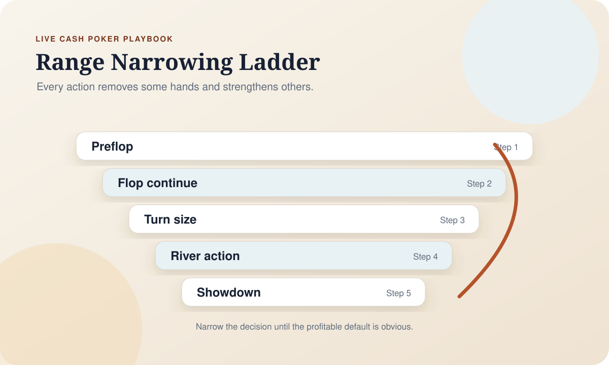
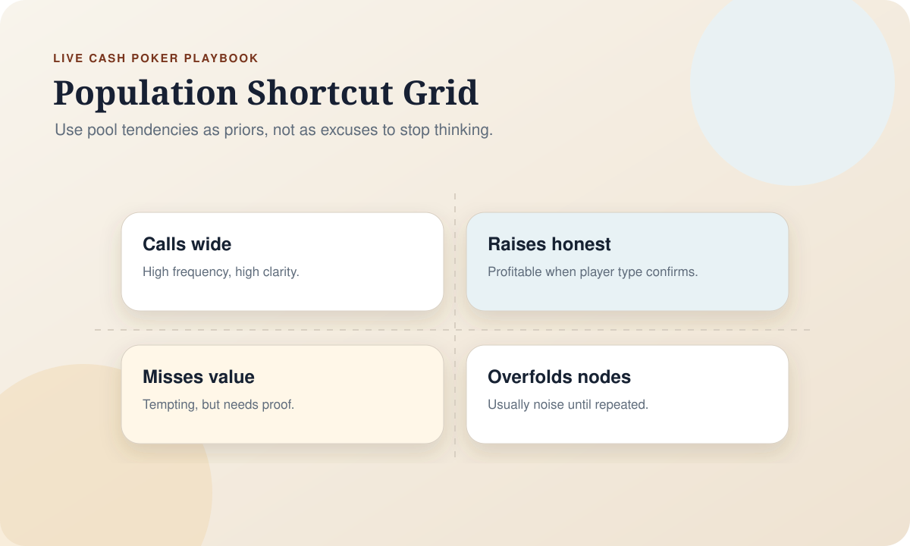
Actual lesson: The central lesson is to start from live-pool priors, then narrow ranges street by street instead of giving every opponent every hand forever. Best default: Assume low-stakes players call too wide, raise too honestly, and underbluff big passive lines until their history proves otherwise. Most common leak: Inventing balanced ranges for opponents who are using ordinary live-player incentives. A representative mined spot puts the idea into action: Interpret sizing as a live tell and adjust exploitatively [E1].
The table-facing question for this chapter is simple: Before continuing, ask: what hands are actually still consistent with this action, sizing, and player type? If the answer is vague, the hand is probably being driven by curiosity, fear, or autopilot rather than by a clean live-cash edge. The purpose of the chapter is to make that answer specific enough to use while chips are moving, not to admire the concept from a safe distance after the session.
These are not claims about perfect equilibrium play. They are the best low-stakes live-cash defaults to try first, then adjust when the table gives you better evidence.
What population read should I start with? Start with calls too wide, raises too honest, and big passive river lines underbluffed. Then update only from observed behavior. This answer is not meant as a universal law; it is the starting line supported by the repeated evidence in this chapter [E1].
How do I narrow a range? Remove hands that no longer fit each action. A hand that might call flop may not raise turn or overbet river at meaningful frequency. This answer is not meant as a universal law; it is the starting line supported by the repeated evidence in this chapter [E2].
When do I stop trusting the pool read? When the player has shown repeated behavior that contradicts it: real bluffs, merged raises, disciplined folds, or pressure in spots the pool usually avoids. This answer is not meant as a universal law; it is the starting line supported by the repeated evidence in this chapter [E3].
The practical sequence is question, default, exception, review. Ask the question before the action, use the default when the table is ordinary, require evidence for the exception, and review the decision by whether that evidence was real.
The operating model is: The central lesson is to start from live-pool priors, then narrow ranges street by street instead of giving every opponent every hand forever. That model only becomes useful when range construction, capped ranges, line consistency, and population reads become concrete table actions. The mined examples cluster around Position creates decision leverage, Sizing reveals real intent, and Initiative simplifies the hand, so the player should not chase a single dramatic quote. It should teach the repeatable pattern: Assume low-stakes players call too wide, raise too honestly, and underbluff big passive lines until their history proves otherwise. The warning sign is equally concrete: Inventing balanced ranges for opponents who are using ordinary live-player incentives. The player should keep returning to one question under pressure: Before continuing, ask: what hands are actually still consistent with this action, sizing, and player type? [E1]
This is not trying to solve poker from first principles or make a balanced-game claim about every possible opponent. It is translating repeated live-cash evidence into a starting line that beats the games most readers actually sit in. The default can be overridden, but only after a player earns the override with specific reads, specific prices, and a specific reason the current opponent differs from the pool.
Population shortcuts work because most low-stakes opponents are not constructing protected ranges. Their calls remain too wide, their raises remain too value-heavy, and their river aggression often contains fewer bluffs than the price requires. The shortcut is a starting prior, not a stereotype. A representative mined decision points in the same direction: Interpret sizing as a live tell and adjust exploitatively [E1].
The profitable habit is to update that prior street by street. A hand that could float flop may not raise turn; a draw that missed may not actually bluff river; a passive player who suddenly polarizes has usually changed the information. Range reading becomes practical when it removes impossible hands instead of preserving every theoretical combo.
Across Crush Live Poker, Hungry Horse Poker, and Live Poker Guide, the shared lesson is not merely that range reading with population shortcuts matters. The shared lesson is operational: Assume low-stakes players call too wide, raise too honestly, and underbluff big passive lines until their history proves otherwise. The repeated themes are Position creates decision leverage, Sizing reveals real intent, and Initiative simplifies the hand, which all point toward the same table habit. The main disagreement is usually not about the destination; it is about the route. One source may teach the spot through sizing, another through player type, and another through discipline or hand selection. Those differences are useful only when they sharpen the table question: Before continuing, ask: what hands are actually still consistent with this action, sizing, and player type?
Crush Live Poker contributes hand reading, line construction, bet sizing, and river discipline; in this chapter its clearest mined example points to Sizing reveals real intent, with the decision: Interpret sizing as a live tell and adjust exploitatively [E1].
Hungry Horse Poker contributes exploitative systems, pro-versus-amateur thinking, and pressure against capped ranges; in this chapter its clearest mined example points to Position creates decision leverage, with the decision: Use position to simplify decisions and pressure weaker ranges [E2].
Live Poker Guide contributes $1/$2 and $1/$3 execution, session habits, and clear defaults for loose splashy games; in this chapter its clearest mined example points to Position creates decision leverage, with the decision: Interpret sizing as a live tell and adjust exploitatively [E3].
The synthesis for the reader is therefore practical rather than decorative. Use the agreement as the default, use the source-specific emphasis as a diagnostic lens, and watch for the leak: Inventing balanced ranges for opponents who are using ordinary live-player incentives. If multiple sources arrive at the same default from different angles, the recommendation deserves more weight than a single isolated hand.
Case study first: in How to BEAT LIVE CASH GAMES; Full Length Training Video at $2/5 from Crush Live Poker, the usable lesson is not the surface drama of the hand. It is the decision shape. The card records the key decision as: Interpret sizing as a live tell and adjust exploitatively The strategic takeaway is Bet sizing often communicates live intent directly enough to justify disciplined exploitative adjustments. [E1]. In practice, this means the reader should pause before asking, 'Can I win this pot?' and ask the better live-cash question: 'What does this action usually represent from this player type, at this size, in this room?' The answer will not always be comfortable, but it will usually be more profitable than treating the spot as a puzzle designed to reward bravery.
Case study second: in The 9 Biggest Mistakes Low Stakes Poker Pros Make from Hungry Horse Poker, the usable lesson is not the surface drama of the hand. It is the decision shape. The card records the key decision as: Use position to simplify decisions and pressure weaker ranges The strategic takeaway is Position lets you realize equity, control pot size, and gather more information before committing money. [E2]. In practice, this means the reader should pause before asking, 'Can I win this pot?' and ask the better live-cash question: 'What does this action usually represent from this player type, at this size, in this room?' The answer will not always be comfortable, but it will usually be more profitable than treating the spot as a puzzle designed to reward bravery.
Case study third: in How to Study for Live Poker that it Feels ILLEGAL from Live Poker Guide, the usable lesson is not the surface drama of the hand. It is the decision shape. The card records the key decision as: Interpret sizing as a live tell and adjust exploitatively The strategic takeaway is Bet sizing often communicates live intent directly enough to justify disciplined exploitative adjustments. [E3]. In practice, this means the reader should pause before asking, 'Can I win this pot?' and ask the better live-cash question: 'What does this action usually represent from this player type, at this size, in this room?' The answer will not always be comfortable, but it will usually be more profitable than treating the spot as a puzzle designed to reward bravery.
Case study fourth: in He Shoved the River... Can You Guess His Hand? from Crush Live Poker, the usable lesson is not the surface drama of the hand. It is the decision shape. The card records the key decision as: Interpret sizing as a live tell and adjust exploitatively The strategic takeaway is Bet sizing often communicates live intent directly enough to justify disciplined exploitative adjustments. [E4]. In practice, this means the reader should pause before asking, 'Can I win this pot?' and ask the better live-cash question: 'What does this action usually represent from this player type, at this size, in this room?' The answer will not always be comfortable, but it will usually be more profitable than treating the spot as a puzzle designed to reward bravery.
Case study fifth: in BLUFF BUSTING: Catch Bluffs Like a Poker Pro (5 Step Guide) from Hungry Horse Poker, the usable lesson is not the surface drama of the hand. It is the decision shape. The card records the key decision as: Interpret sizing as a live tell and adjust exploitatively The strategic takeaway is Bet sizing often communicates live intent directly enough to justify disciplined exploitative adjustments. [E5]. In practice, this means the reader should pause before asking, 'Can I win this pot?' and ask the better live-cash question: 'What does this action usually represent from this player type, at this size, in this room?' The answer will not always be comfortable, but it will usually be more profitable than treating the spot as a puzzle designed to reward bravery.
Taken together, these case studies make the chapter less dependent on a single hand. They show how range reading with population shortcuts keeps returning as a repeatable decision problem: the player has some information, the pool has a recognizable tendency, and the profitable line asks the player to trust the pattern without becoming rigid. That is the balance the rest of the chapter keeps returning to.
Use these as supporting margin notes, not as the main lesson. The teaching has already been synthesized above; these notes show which mined spots supplied the pressure points.
Synthesis note: In range reading with population shortcuts, the examples matter because they keep pointing to the same habit: make the profitable default obvious before the hand invites ego, curiosity, or fancy-play syndrome.
Key lesson: A population read can be disciplined rather than lazy. The shortcut is not 'all players are the same.' The shortcut is a prior that must be updated. Starting from the pool tendency prevents you from inventing bluffs or slowplays that this opponent has not earned. [E4]
This is why the advice can feel wrong while being profitable. The player may leave the table with fewer cinematic stories, but the win rate comes from the unglamorous decisions that repeat: cleaner preflop entries, better seats, more precise value, fewer curiosity calls, and bluffs aimed at players who can actually fold. The lesson is not to become timid. It is to reserve aggression, curiosity, and deviation for spots where the evidence says they earn money.
The chapter's closing model is deliberately plain. Start with the chapter concept, identify the live-pool leak, match the leak to the line, then ask what evidence would justify a deviation. That four-part habit keeps range reading with population shortcuts from becoming either a slogan or a superstition. It also protects the reader from the most common failure mode in low-stakes live cash: knowing the right adjustment away from the table and then talking oneself out of it when the pot gets large [E1].
The reader should leave the chapter with a practical bias, not a rigid script. In ordinary games, the bias is to trust source-backed population evidence before trusting adrenaline. In unusual games, the bias is to update quickly when opponents prove they are different. The money is made in that middle ground, where the player is disciplined enough to use defaults and attentive enough to notice when a default no longer applies.
| Evidence | Channel | Video | Segment | Time | Theme | Decision | Isolated Lesson | Transcript Note | Confidence |
|---|---|---|---|---|---|---|---|---|---|
| E1 | Crush Live Poker | How to BEAT LIVE CASH GAMES; Full Length Training Video at $2/5 | seg_a3b13947fda3 | 57:06-57:44 | Sizing reveals real intent | Interpret sizing as a live tell and adjust exploitatively | Bet sizing often communicates live intent directly enough to justify disciplined exploitative adjustments. | it's hard for me to be in the spot i said i would have gone a larger sizing on turn and giving up on the river instead here deante goes a... | 0.75 |
| E2 | Hungry Horse Poker | The 9 Biggest Mistakes Low Stakes Poker Pros Make | seg_36082f3a5afd | 14:41-15:15 | Position creates decision leverage | Use position to simplify decisions and pressure weaker ranges | Position lets you realize equity, control pot size, and gather more information before committing money. | finally back to our handy dandy little chart mistake number three when bluffing uncapped ranges is bluffing villains in uncapped ranges i... | 0.92 |
| E3 | Live Poker Guide | How to Study for Live Poker that it Feels ILLEGAL | seg_f44de8040c1e | 01:41-02:42 | Sizing reveals real intent | Interpret sizing as a live tell and adjust exploitatively | Bet sizing often communicates live intent directly enough to justify disciplined exploitative adjustments. | it designed to tackle the unique challenges of multi-way pots oversized pre flop raises and tricky spots you pre flop raises and tricky s... | 0.81 |
| E4 | Crush Live Poker | He Shoved the River... Can You Guess His Hand? | seg_7ef21986563c | 08:38-09:30 | Sizing reveals real intent | Interpret sizing as a live tell and adjust exploitatively | Bet sizing often communicates live intent directly enough to justify disciplined exploitative adjustments. | evaluating and seeing see what I was going to plan on doing set myself up for a tough spot maybe the toughest River or one of the toughes... | 0.74 |
| E5 | Hungry Horse Poker | BLUFF BUSTING: Catch Bluffs Like a Poker Pro (5 Step Guide) | seg_90e603b4920d | 00:31-01:03 | Sizing reveals real intent | Interpret sizing as a live tell and adjust exploitatively | Bet sizing often communicates live intent directly enough to justify disciplined exploitative adjustments. | small bet sizes number two live poker players Bluff in heads up pots it's much easier to get a bluff through it's much less scary heads u... | 0.82 |
| E6 | Live Poker Guide | GTO vs. Reading Players: When to Adapt Your Poker Strategy (For Wins!) | seg_7f8670a1b2a7 | 00:41-01:30 | Initiative simplifies the hand | Use position to simplify decisions and pressure weaker ranges | Keeping the betting lead forces passive live opponents to reveal the strength of their ranges. | at this a fold is zero EV a call is almost zero EV but just note if you call in such a spot you really rely on being so much better than... | 0.85 |
| E7 | Crush Live Poker | This Mental Mistake will Cost you MONEY! | seg_6a9658234864 | 09:44-10:44 | Position creates decision leverage | Use position to simplify decisions and pressure weaker ranges | Position lets you realize equity, control pot size, and gather more information before committing money. | Raw transcript omitted from final prose; use the timestamped source segment for review. | 0.84 |
| E8 | Hungry Horse Poker | The 9 Biggest Mistakes Low Stakes Poker Pros Make | seg_bf3036c911a4 | 04:56-05:34 | Leverage comes from range and position | Use position to simplify decisions and pressure weaker ranges | The ability to apply pressure comes from who acts last and whose range can credibly represent strength. | just checking back and taking our non-existent Showdown value in this spot because of the way the hand play out we really don't beat anyt... | 0.75 |
| E9 | Live Poker Guide | Exploit Their Leaks! Dominate Live Poker with These Strategies! | seg_802d3406b307 | 08:36-09:38 | Sizing reveals real intent | Interpret sizing as a live tell and adjust exploitatively | Bet sizing often communicates live intent directly enough to justify disciplined exploitative adjustments. | that he now checks anyway and no point in me betting now into a polarized range cuz he was basically saying he either cuz he was basicall... | 0.66 |
| E10 | Crush Live Poker | Can Massive Exploits lead to MASSIVE Mistakes in Poker? | seg_71be4bb913fa | 05:04-05:55 | Sizing reveals real intent | Interpret sizing as a live tell and adjust exploitatively | Bet sizing often communicates live intent directly enough to justify disciplined exploitative adjustments. | watch the show a lot or if you're a CLP sub but I'm going to put you on the spot let's say the river on off suit N9 you check and he move... | 0.81 |
| E11 | Hungry Horse Poker | Don't Make These 5 Bluffing MISTAKES | seg_d17f9956b6b6 | 09:09-09:47 | Position creates decision leverage | Use position to simplify decisions and pressure weaker ranges | Position lets you realize equity, control pot size, and gather more information before committing money. | either the turn or the river number three the third bad spot to Bluff in live poker when the spr is low so we live poker when the spr is... | 0.92 |
| E12 | Live Poker Guide | 5 Poker Myths That Keep Your Win Rate Low! | seg_0bf1c22aadd5 | 00:41-01:32 | Sizing reveals real intent | Interpret sizing as a live tell and adjust exploitatively | Bet sizing often communicates live intent directly enough to justify disciplined exploitative adjustments. | Hollywood it's still alive and well movies love to portray poker as a battle of wits where the key to Victory is of wits where the key to... | 0.50 |
| E13 | Crush Live Poker | Poker Strategy: What's The Best Line To Take As A Bluff? | seg_9dbf8a0e5735 | 03:39-04:27 | Sizing reveals real intent | Interpret sizing as a live tell and adjust exploitatively | Bet sizing often communicates live intent directly enough to justify disciplined exploitative adjustments. | Raw transcript omitted from final prose; use the timestamped source segment for review. | 0.81 |
| E14 | Hungry Horse Poker | How to Make Perfect READS in Live Poker | seg_a46c1258f886 | 00:34-01:08 | Position creates decision leverage | Use position to simplify decisions and pressure weaker ranges | Position lets you realize equity, control pot size, and gather more information before committing money. | cuto off here we're just going to fold on the button we're not involved in this hand villain is going to call in the big blind flop comes... | 0.92 |
| E15 | Live Poker Guide | GTO vs. Reading Players: When to Adapt Your Poker Strategy (For Wins!) | seg_2dc16eaea4be | 15:02-16:01 | Position creates decision leverage | Use position to simplify decisions and pressure weaker ranges | Position lets you realize equity, control pot size, and gather more information before committing money. | my channel yet it would be amazing if you could do that thank you this now is an interesting slow play Hero has Ace an interesting slow p... | 0.76 |
| E16 | Crush Live Poker | Vegas Euro Battle! Can Pocket Aces Hold Up? | seg_316e56d9d6ed | 10:08-11:00 | Position creates decision leverage | Use position to simplify decisions and pressure weaker ranges | Position lets you realize equity, control pot size, and gather more information before committing money. | honest, but my assumption is this is a big pot and even if the river rolls off a relatively dangerous card or a blank, it's going to be v... | 0.75 |
| E17 | Hungry Horse Poker | 90% of Money Is Won on the River (The System That Fixes Your Winrate) | seg_cc3d3c7227a2 | 10:18-10:56 | Leverage comes from range and position | Use position to simplify decisions and pressure weaker ranges | The ability to apply pressure comes from who acts last and whose range can credibly represent strength. | bluffs big and where our value wants to go big and our bluffs small. | 0.91 |
| E18 | Live Poker Guide | If You’re Not Winning at 1/2 or 1/3, This Is Probably Why | seg_ab13940dd6a8 | 03:47-04:39 | Position creates decision leverage | Use position to simplify decisions and pressure weaker ranges | Position lets you realize equity, control pot size, and gather more information before committing money. | to the aggressive maniac who puts pressure on you constantly. | 0.76 |
| E19 | Crush Live Poker | Hero Hits the Flush But Then Villain RIPS It All-In! | seg_230c0e0a2f10 | 09:17-10:03 | Bad players tell the truth with sizing | Interpret sizing as a live tell and adjust exploitatively | Many live players are more honest than they realize, especially when they choose unusual sizes. | player who's just playing off their hand, he's not going to put together what a studied player would put what a studied player would put... | 0.66 |
| E20 | Hungry Horse Poker | Don't Make These 5 Bluffing MISTAKES | seg_c52cf8a957c5 | 11:41-12:16 | Leverage comes from range and position | Use position to simplify decisions and pressure weaker ranges | The ability to apply pressure comes from who acts last and whose range can credibly represent strength. | Raw transcript omitted from final prose; use the timestamped source segment for review. | 0.91 |
| E21 | Live Poker Guide | High Stakes Players Make the Same Mistakes As YOU! | seg_3b4ced96aa7f | 05:11-06:36 | Position creates decision leverage | Use position to simplify decisions and pressure weaker ranges | Position lets you realize equity, control pot size, and gather more information before committing money. | cupboard because I think this should have been an easy value bet here on the river next hand doesn't involve Andreas for a change we have... | 0.93 |
| E22 | Crush Live Poker | I Gave a Poker Lecture at Harvard... Then They Asked About Cheating | seg_8aaf8ea098d1 | 22:51-23:35 | Bluff-catching is usually overrated | Respond to river aggression with population-aware discipline | Bluff-catching is overrated when the pool rarely arrives on the river with enough bluffs. | And then I turn over a one pair hand that's better than his. | 0.83 |
| E23 | Hungry Horse Poker | Top 5 Spots to BLUFF in Live Poker | seg_80b545546acd | 05:19-05:56 | Position creates decision leverage | Use position to simplify decisions and pressure weaker ranges | Position lets you realize equity, control pot size, and gather more information before committing money. | Raw transcript omitted from final prose; use the timestamped source segment for review. | 0.91 |
| E24 | Live Poker Guide | How To Maximally Exploit Recreational Players at 1/3 Live Poker | seg_f2c3a8fafdac | 09:05-09:54 | Position creates decision leverage | Use position to simplify decisions and pressure weaker ranges | Position lets you realize equity, control pot size, and gather more information before committing money. | will have to fold because he just doesn't have any bluffs at this point. | 0.93 |
| E25 | Crush Live Poker | Bizarre ALL IN Makes No Sense (Until the REVEAL) | seg_b348ea28c15d | 12:34-13:21 | Bluff-catching is usually overrated | Respond to river aggression with population-aware discipline | Bluff-catching is overrated when the pool rarely arrives on the river with enough bluffs. | Raw transcript omitted from final prose; use the timestamped source segment for review. | 0.77 |
| E26 | Hungry Horse Poker | This Blind Spot Keeps Winning Players at Low Stakes | seg_f97c48ea64c8 | 24:51-25:19 | Exploit the live pool you actually face | Interpret sizing as a live tell and adjust exploitatively | The highest-EV default is to attack the actual pool tendency in front of you, not an imaginary balanced opponent. | Not when they have two pair or set. | 0.82 |
| E27 | Live Poker Guide | 10 Years of Live Poker Advice in 3 hours - Everything I know! | seg_98f6c0b12300 | 02:20:52-02:21:41 | Position creates decision leverage | Use position to simplify decisions and pressure weaker ranges | Position lets you realize equity, control pot size, and gather more information before committing money. | goes for the triple barrel bluff. | 0.92 |
| E28 | Crush Live Poker | Full Length Bart Hanson Poker Training Video ($5/$10/$20 NL) | seg_cfbbebb8c924 | 27:49-28:50 | Sizing reveals real intent | Interpret sizing as a live tell and adjust exploitatively | Bet sizing often communicates live intent directly enough to justify disciplined exploitative adjustments. | the small blind and he's used a large sizing and she now checks at the end and if Mark didn't bet the turn this is I'm sorry a slam-dunk... | 0.77 |
| E29 | Hungry Horse Poker | Top 5 Spots To Go HUGE With Value | seg_ed003fa3d122 | 08:22-09:06 | Sizing reveals real intent | Interpret sizing as a live tell and adjust exploitatively | Bet sizing often communicates live intent directly enough to justify disciplined exploitative adjustments. | their flush draws on the Flop so they don't have many flushes here but they do have a ton of two pairs and sets and are the two pair and... | 0.81 |
| E30 | Live Poker Guide | Fix These Mistakes And You’ll Crush 1/2 and 1/3 Live! | seg_8f97407cc250 | 08:12-08:45 | Position creates decision leverage | Use position to simplify decisions and pressure weaker ranges | Position lets you realize equity, control pot size, and gather more information before committing money. | said, this next mistake is a big bankroll killer, but with a simple rule, you can completely avoid it. | 0.92 |
| E31 | Crush Live Poker | Poker Strategy: Advanced Hand Reading in a 4 bet Pot | seg_4efbbc20f473 | 11:19-12:02 | Position creates decision leverage | Use position to simplify decisions and pressure weaker ranges | Position lets you realize equity, control pot size, and gather more information before committing money. | the chances that you have a king are almost nil it's really interesting yeah yeah it's really really interesting to yeah it's really real... | 0.77 |
| E32 | Hungry Horse Poker | Here's Why Your Bluffs Aren't Working | seg_cf3e99543b48 | 10:39-11:23 | Position creates decision leverage | Use position to simplify decisions and pressure weaker ranges | Position lets you realize equity, control pot size, and gather more information before committing money. | very very large size on the turn maybe our low Equity Bluffs in air and some of our thinner value hands want to choose this smaller size... | 0.84 |
| E33 | Live Poker Guide | If You Want to Crush 1/2 in 2026, Fix These 5 Leaks | seg_4355613dc01c | 08:45-09:38 | Initiative simplifies the hand | Use position to simplify decisions and pressure weaker ranges | Keeping the betting lead forces passive live opponents to reveal the strength of their ranges. | Most advice out there is designed for heads up pot. | 0.92 |
| E34 | Crush Live Poker | Full Length: Live poker training of a $1-$3NL Deep Stacked Game | seg_b87978aaf105 | 53:44-54:38 | Sizing reveals real intent | Interpret sizing as a live tell and adjust exploitatively | Bet sizing often communicates live intent directly enough to justify disciplined exploitative adjustments. | Raw transcript omitted from final prose; use the timestamped source segment for review. | 0.59 |
| E35 | Hungry Horse Poker | RUN OVER Your Poker Table With OVER BETS (Easy Guide!) | seg_bb41b9355707 | 04:36-05:10 | Position creates decision leverage | Use position to simplify decisions and pressure weaker ranges | Position lets you realize equity, control pot size, and gather more information before committing money. | can get hands Ace Queen Ace Jack Ace 10 to fold by the river this would be the spot on the flap where I would start using over bits hey g... | 0.84 |
| E36 | Live Poker Guide | The Stephen King Method for Easy Poker Wins | seg_69866d2f66a6 | 05:12-06:27 | Position creates decision leverage | Use position to simplify decisions and pressure weaker ranges | Position lets you realize equity, control pot size, and gather more information before committing money. | river is a brick we can now go for the overbed jam on the river unless he has a set or trips he will have an incredibly hard time to call... | 0.92 |
| E37 | Crush Live Poker | Poker Strategy: 3bet pot Grimstarr vs Shaun Deeb Hand | seg_551412da1985 | 06:17-07:14 | Big river aggression is underbluffed | Respond to river aggression with population-aware discipline | Large river aggression should usually be respected until a player proves they bluff enough. | when you check raised on the river here honestly I think this is the bottom of my range on a check raised on the of my range on a check r... | 0.82 |
| E38 | Hungry Horse Poker | What High Stakes Pros Know That Low Stakes Players Don’t (Round 2) | seg_b5ccf5750428 | 02:11-03:04 | Sizing reveals real intent | Interpret sizing as a live tell and adjust exploitatively | Bet sizing often communicates live intent directly enough to justify disciplined exploitative adjustments. | winning player an ABC Pro he is winning at 510 may fall into some of the same pitfalls that a lot of live Pros same pitfalls that a lot o... | 0.76 |
| E39 | Live Poker Guide | These 4 Mistakes Stop You From Winning at Live Poker | seg_f20ddf08feeb | 03:16-04:06 | Initiative simplifies the hand | Use position to simplify decisions and pressure weaker ranges | Keeping the betting lead forces passive live opponents to reveal the strength of their ranges. | is a cousin to the first mistake but this one is even more costly let's look at another hand this time a passive at another hand this tim... | 0.92 |
| E40 | Crush Live Poker | Learn How OVERPLAYING Strong Hands Costs You BIG! | seg_f5774743c70d | 12:43-13:35 | Initiative simplifies the hand | Use position to simplify decisions and pressure weaker ranges | Keeping the betting lead forces passive live opponents to reveal the strength of their ranges. | Raw transcript omitted from final prose; use the timestamped source segment for review. | 0.76 |
| E41 | Hungry Horse Poker | Low Stakes Players Have FIGURED ME OUT - Now What?! | seg_d750ecdab21c | 14:17-15:13 | Position creates decision leverage | Use position to simplify decisions and pressure weaker ranges | Position lets you realize equity, control pot size, and gather more information before committing money. | get to a river I overb they call it off with second pair or whatever and I think hm what adjustments can we make here so against these ty... | 0.70 |
| E42 | Live Poker Guide | These 4 Plays Will Skyrocket Your Win Rate at Live Poker! | seg_97b10bbe1aef | 05:53-07:01 | Position creates decision leverage | Use position to simplify decisions and pressure weaker ranges | Position lets you realize equity, control pot size, and gather more information before committing money. | miss this one and it even shows you how to Bluff successfully at live low stakes but before we continue please smash that button button i... | 0.92 |
| E43 | Crush Live Poker | The Importance of Stack Size in Poker | seg_4845abde2e5b | 04:59-05:36 | Sizing reveals real intent | Interpret sizing as a live tell and adjust exploitatively | Bet sizing often communicates live intent directly enough to justify disciplined exploitative adjustments. | Raw transcript omitted from final prose; use the timestamped source segment for review. | 0.64 |
| E44 | Hungry Horse Poker | Low Stakes Has Changed for 2026. Most Players Won't Adapt. | seg_3eab8f42e095 | 28:41-29:18 | Bad players tell the truth with sizing | Interpret sizing as a live tell and adjust exploitatively | Many live players are more honest than they realize, especially when they choose unusual sizes. | sometimes we get the folds from ace9, ace5, ace4, whatever. | 0.64 |
| E45 | Live Poker Guide | Step-by-Step Guide to Crushing 1/2 Live Poker (Complete Strategy) | seg_057e9a5ed0c7 | 16:20-17:19 | Thin value is your salary | Choose the thinnest profitable value bet instead of checking back | Thin value bets are a major source of steady live-cash profit because worse hands call too often. | Pairs, suited connectors, big cards, Ace X hands. | 0.68 |
| E46 | Crush Live Poker | How should we structure a bluff vs a tight player? | seg_5a53f0c24fe5 | 11:37-12:44 | Initiative simplifies the hand | Use position to simplify decisions and pressure weaker ranges | Keeping the betting lead forces passive live opponents to reveal the strength of their ranges. | would be pocket aces or if you were possibly see the other thing I mean the another hand that you might have would be ace ten but that wo... | 0.92 |
| E47 | Hungry Horse Poker | This Blind Spot Keeps Winning Players at Low Stakes | seg_f77e0891e142 | 16:41-17:07 | Leverage comes from range and position | Use position to simplify decisions and pressure weaker ranges | The ability to apply pressure comes from who acts last and whose range can credibly represent strength. | next big mistake I see just bluffing uncapped ranges. | 0.59 |
| E48 | Live Poker Guide | 10 Years of Live Poker Advice in 3 hours - Everything I know! | seg_7e26668aed1c | 46:37-47:30 | Initiative simplifies the hand | Use position to simplify decisions and pressure weaker ranges | Keeping the betting lead forces passive live opponents to reveal the strength of their ranges. | I don't hate this check because check. | 0.91 |
| E49 | Crush Live Poker | Poker Strategy: Fastplaying a Turned Full House | seg_0b2c34d36e96 | 05:04-05:44 | Position creates decision leverage | Use position to simplify decisions and pressure weaker ranges | Position lets you realize equity, control pot size, and gather more information before committing money. | Raw transcript omitted from final prose; use the timestamped source segment for review. | 0.92 |
| E50 | Hungry Horse Poker | I Gave a Weekend Warrior and a Full Time Pro the Same 5 Hands | seg_7631e4445b0d | 40:02-40:52 | Position creates decision leverage | Use position to simplify decisions and pressure weaker ranges | Position lets you realize equity, control pot size, and gather more information before committing money. | considering all the options turning showdown value into a bluff right away. | 0.93 |
| E51 | Live Poker Guide | How to Use GTO Wizard For Free! (Tutorial) | seg_0e73349c8553 | 01:32-02:12 | Position creates decision leverage | Use position to simplify decisions and pressure weaker ranges | Position lets you realize equity, control pot size, and gather more information before committing money. | restrictions but if you're clever you can still get a lot out of them so the first tool is the spot study analyzer how I call it I don't... | 0.91 |
| E52 | Crush Live Poker | Poker’s Most Bizarre Hand – Who Got Outplayed? | seg_e338df466cf3 | 11:18-12:16 | Position creates decision leverage | Use position to simplify decisions and pressure weaker ranges | Position lets you realize equity, control pot size, and gather more information before committing money. | and don't those hands raise the turn I mean it's Queen of Clubs seven of clubs four of diamonds King of Hearts those hands would have to... | 0.92 |
| E53 | Hungry Horse Poker | The Poker Skill 99% of Players Don’t Have | seg_925f3ceeabc2 | 00:42-01:26 | Position creates decision leverage | Use position to simplify decisions and pressure weaker ranges | Position lets you realize equity, control pot size, and gather more information before committing money. | All right, so the first villain we're playing against here is Debbie Don out of the big blind. | 0.93 |
| E54 | Live Poker Guide | These 5 Mistakes Hold You Back in Live Poker! | seg_b643864d6c81 | 05:40-06:32 | Initiative simplifies the hand | Use position to simplify decisions and pressure weaker ranges | Keeping the betting lead forces passive live opponents to reveal the strength of their ranges. | raced Ace King villain called on the button flop came Ace 103 rainbow hero button flop came Ace 103 rainbow hero check I don't hate this... | 0.91 |
| E55 | Crush Live Poker | Are you Playing Poker too SAFE? | seg_733d481960e8 | 14:04-14:45 | Sizing reveals real intent | Interpret sizing as a live tell and adjust exploitatively | Bet sizing often communicates live intent directly enough to justify disciplined exploitative adjustments. | people call in these hard spots where they're faced with you spots where they're faced with an all-in shove and we do the range equities... | 0.74 |
| E56 | Hungry Horse Poker | $100/hr at Low Stakes? High Stakes CRUSHER Weighs In | Ep 11 | seg_ddf11de40afb | 08:18-08:54 | Discipline over curiosity | Stay patient and choose aggressive spots instead of forcing action | The pool rewards patience more than curiosity, so folding marginal hands and waiting for clearer edges preserves win rate. | about the results but pretty happy overall with how I played this one all right next hand here just ABC simple right next hand here just... | 0.87 |
| E57 | Live Poker Guide | The 1 Rule That Turns Break-Even Players into Crushers | seg_f86b0d3eef3a | 04:43-05:29 | Bluff-catching is usually overrated | Respond to river aggression with population-aware discipline | Bluff-catching is overrated when the pool rarely arrives on the river with enough bluffs. | So, we can move to question number three, which is, is my opponent capable of bluffing in general? | 0.82 |
| E58 | Crush Live Poker | Big Pots, No Smiles: This Home Game Is NOT Friendly! | seg_b8dbd35a245a | 14:00-14:34 | Bad players tell the truth with sizing | Interpret sizing as a live tell and adjust exploitatively | Many live players are more honest than they realize, especially when they choose unusual sizes. | him too just in case you didn't have 101 right yeah but again one of these spots where again one of these spots where you've played the h... | 0.74 |
| E59 | Hungry Horse Poker | 99% of Players FAIL This Poker IQ Test | seg_da9e58b9c8cb | 30:47-31:17 | Initiative simplifies the hand | Use position to simplify decisions and pressure weaker ranges | Keeping the betting lead forces passive live opponents to reveal the strength of their ranges. | flop and then check the turn when the flush comes in is going to be hands two pair in sets hands pocket NES pocket 3es king n suited so e... | 0.81 |
| E60 | Live Poker Guide | Unstoppable Winning Streak: Is My Student as Good as He Seems? | seg_612c072ad2d5 | 08:23-09:06 | Exploit the live pool you actually face | Interpret sizing as a live tell and adjust exploitatively | The highest-EV default is to attack the actual pool tendency in front of you, not an imaginary balanced opponent. | because of the pot odds let's review a hand with pocket aces there's a raay we3 bet the aces in the small blind quite standard Jack 33 an... | 0.70 |
| E61 | Crush Live Poker | Poker Strategy: How to Play Top Pair In A Limped Pot | seg_9bf2284bc4d8 | 11:40-12:40 | Position creates decision leverage | Use position to simplify decisions and pressure weaker ranges | Position lets you realize equity, control pot size, and gather more information before committing money. | mean with him checking back to turn he just put me into this spot where I have to call I can't oh well I don't know I got a I would take... | 0.74 |
| E62 | Hungry Horse Poker | Low Stakes Has Changed for 2026. Most Players Won't Adapt. | seg_3c76adc08929 | 21:54-22:13 | Leverage comes from range and position | Use position to simplify decisions and pressure weaker ranges | The ability to apply pressure comes from who acts last and whose range can credibly represent strength. | bluff in a very profitable spot again because even though we were unsuccessful in capping our opponent on the flop, we now chose the smal... | 0.81 |
| E63 | Live Poker Guide | 10 Things Good Poker Players Do That Bad Ones Don’t | seg_75f20be17660 | 03:13-04:28 | Exploit the live pool you actually face | Interpret sizing as a live tell and adjust exploitatively | The highest-EV default is to attack the actual pool tendency in front of you, not an imaginary balanced opponent. | Hero's triple barrel was a bit optimistic but that's not what we want to discuss here the interesting bit is the next hand between these... | 0.93 |
| E64 | Crush Live Poker | Poker Strategy: Slowplaying The Turn With KK | seg_b2371eb2cf2d | 08:25-09:08 | Discipline over curiosity | Stay patient and choose aggressive spots instead of forcing action | The pool rewards patience more than curiosity, so folding marginal hands and waiting for clearer edges preserves win rate. | from trying to bluff me because I'm staining too much strength but I can use my hand reading skills to basically my hand reading skills t... | 0.74 |
| E65 | Hungry Horse Poker | RUN OVER Your Poker Table With OVER BETS (Easy Guide!) | seg_13d5fff1474e | 08:14-08:48 | Leverage comes from range and position | Use position to simplify decisions and pressure weaker ranges | The ability to apply pressure comes from who acts last and whose range can credibly represent strength. | when my opponents can have very strong hands all right so again we have pocket hands all right so again we have pocket nines on this turn... | 0.81 |
| E66 | Live Poker Guide | My Top 6 Exploits To WIN MORE At 1/2 and 1/3 Live | seg_198adb289128 | 08:08-09:23 | Exploit the live pool you actually face | Interpret sizing as a live tell and adjust exploitatively | The highest-EV default is to attack the actual pool tendency in front of you, not an imaginary balanced opponent. | Raw transcript omitted from final prose; use the timestamped source segment for review. | 0.93 |
| E67 | Crush Live Poker | Should You Balance in Live Poker? | seg_c604a8c86d1f | 08:15-09:23 | Sizing reveals real intent | Interpret sizing as a live tell and adjust exploitatively | Bet sizing often communicates live intent directly enough to justify disciplined exploitative adjustments. | a double gutter now right it does yeah so you pick up a double gutter here and so what do you think his bet calling range is in this spot... | 0.74 |
| E68 | Hungry Horse Poker | What High Stakes Pros See That Low Stakes Players Miss | seg_3029f12122c6 | 57:18-58:22 | Exploit the live pool you actually face | Interpret sizing as a live tell and adjust exploitatively | The highest-EV default is to attack the actual pool tendency in front of you, not an imaginary balanced opponent. | Raw transcript omitted from final prose; use the timestamped source segment for review. | 0.63 |
| E69 | Live Poker Guide | This Will Change the Way You Play Live Poker FOREVER | seg_d087cf44abd2 | 05:06-05:56 | Position creates decision leverage | Use position to simplify decisions and pressure weaker ranges | Position lets you realize equity, control pot size, and gather more information before committing money. | >> This is one of the questions I hear all the time, and it is a fair question. | 0.69 |
| E70 | Crush Live Poker | Turning Trips into a Bluff on a Monotone Board | seg_82fdea2508fc | 10:11-11:01 | Sizing reveals real intent | Interpret sizing as a live tell and adjust exploitatively | Bet sizing often communicates live intent directly enough to justify disciplined exploitative adjustments. | pocket jacks and obviously you've got some one in pocket aces and maybe some some one in pocket aces and maybe some ace three suited so b... | 0.74 |
| E71 | Hungry Horse Poker | $100/hr at Low Stakes? High Stakes CRUSHER Weighs In | Ep 11 | seg_1195f82df541 | 36:37-37:15 | Position creates decision leverage | Use position to simplify decisions and pressure weaker ranges | Position lets you realize equity, control pot size, and gather more information before committing money. | only the first or second time so we haven't got a good seat yet this is a bad seat for filming I will move very bad seat for filming I wi... | 0.92 |
| E72 | Live Poker Guide | How To Navigate to a Win at 1/2 and 1/3 Live Poker! | seg_d1cc79c081df | 15:16-16:07 | Position creates decision leverage | Use position to simplify decisions and pressure weaker ranges | Position lets you realize equity, control pot size, and gather more information before committing money. | Raw transcript omitted from final prose; use the timestamped source segment for review. | 0.86 |
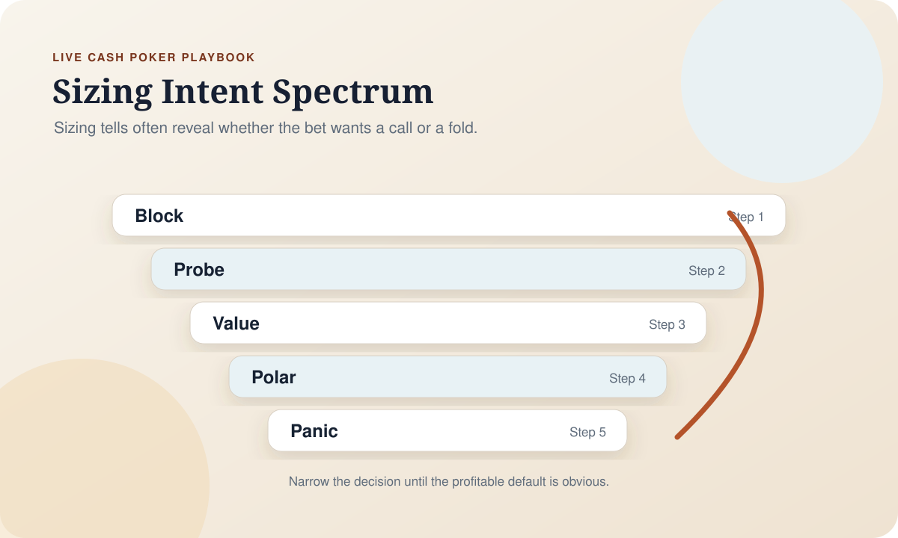
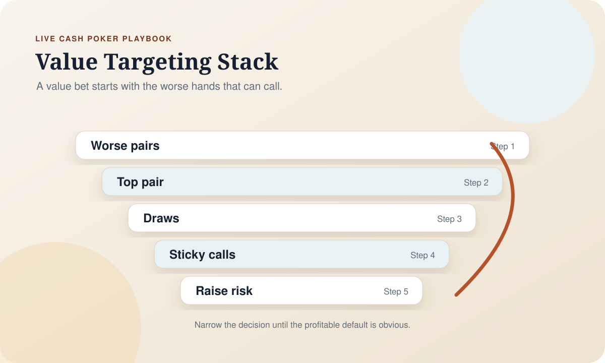
Actual lesson: The central lesson is to treat sizing as both a betting tool and a live read: bets should target customers, and opponent sizes often reveal intent. Best default: Name the worse hands that call before value betting; name the folds before bluffing; size up against sticky customers and stop bluffing inelastic callers. Most common leak: Choosing a standard size because it looks normal instead of because it attacks a real calling or folding range. A representative mined spot puts the idea into action: Interpret sizing as a live tell and adjust exploitatively [E1].
The table-facing question for this chapter is simple: Before choosing a size, ask: who is the customer for this bet, and what price will that customer actually pay or fold to? If the answer is vague, the hand is probably being driven by curiosity, fear, or autopilot rather than by a clean live-cash edge. The purpose of the chapter is to make that answer specific enough to use while chips are moving, not to admire the concept from a safe distance after the session.
These are not claims about perfect equilibrium play. They are the best low-stakes live-cash defaults to try first, then adjust when the table gives you better evidence.
How big should I bet for value? List the worse hands that call, then choose the largest size those hands realistically pay. Sticky opponents permit larger value sizes. This answer is not meant as a universal law; it is the starting line supported by the repeated evidence in this chapter [E1].
When is a small bet a tell? Often it is a price-setting or blocker action with medium strength. Raise for value when worse hands can call; bluff only when the player can actually fold. This answer is not meant as a universal law; it is the starting line supported by the repeated evidence in this chapter [E2].
How do I avoid bad bluffs? Do not bluff an inelastic caller. If the player calls because they like their hand, your elegant size and story lose much of their force. This answer is not meant as a universal law; it is the starting line supported by the repeated evidence in this chapter [E3].
The practical sequence is question, default, exception, review. Ask the question before the action, use the default when the table is ordinary, require evidence for the exception, and review the decision by whether that evidence was real.
The operating model is: The central lesson is to treat sizing as both a betting tool and a live read: bets should target customers, and opponent sizes often reveal intent. That model only becomes useful when bet sizing, value targeting, fold equity, and price setting become concrete table actions. The mined examples cluster around Sizing reveals real intent, Thin value is your salary, and Exploit the live pool you actually face, so the player should not chase a single dramatic quote. It should teach the repeatable pattern: Name the worse hands that call before value betting; name the folds before bluffing; size up against sticky customers and stop bluffing inelastic callers. The warning sign is equally concrete: Choosing a standard size because it looks normal instead of because it attacks a real calling or folding range. The player should keep returning to one question under pressure: Before choosing a size, ask: who is the customer for this bet, and what price will that customer actually pay or fold to? [E1]
This is not trying to solve poker from first principles or make a balanced-game claim about every possible opponent. It is translating repeated live-cash evidence into a starting line that beats the games most readers actually sit in. The default can be overridden, but only after a player earns the override with specific reads, specific prices, and a specific reason the current opponent differs from the pool.
Sizing is unusually informative in live pools because many players size for comfort rather than balance. Small bets can set a price, blocker bets can reveal medium strength, and oversized bets from passive players often represent real value rather than a balanced mix. A representative mined decision points in the same direction: Interpret sizing as a live tell and adjust exploitatively [E1].
Your own sizing should be just as practical. First list the worse hands that call or the better hands that fold, then choose the size that targets that customer. The live-pool leak is not that opponents never notice sizing; it is that they often respond to it predictably.
Across Crush Live Poker, Hungry Horse Poker, and Live Poker Guide, the shared lesson is not merely that sizing tells and bet construction matters. The shared lesson is operational: Name the worse hands that call before value betting; name the folds before bluffing; size up against sticky customers and stop bluffing inelastic callers. The repeated themes are Sizing reveals real intent, Thin value is your salary, and Exploit the live pool you actually face, which all point toward the same table habit. The main disagreement is usually not about the destination; it is about the route. One source may teach the spot through sizing, another through player type, and another through discipline or hand selection. Those differences are useful only when they sharpen the table question: Before choosing a size, ask: who is the customer for this bet, and what price will that customer actually pay or fold to?
Crush Live Poker contributes hand reading, line construction, bet sizing, and river discipline; in this chapter its clearest mined example points to Sizing reveals real intent, with the decision: Interpret sizing as a live tell and adjust exploitatively [E1].
Hungry Horse Poker contributes exploitative systems, pro-versus-amateur thinking, and pressure against capped ranges; in this chapter its clearest mined example points to Sizing reveals real intent, with the decision: Interpret sizing as a live tell and adjust exploitatively [E2].
Live Poker Guide contributes $1/$2 and $1/$3 execution, session habits, and clear defaults for loose splashy games; in this chapter its clearest mined example points to Sizing reveals real intent, with the decision: Interpret sizing as a live tell and adjust exploitatively [E3].
The synthesis for the reader is therefore practical rather than decorative. Use the agreement as the default, use the source-specific emphasis as a diagnostic lens, and watch for the leak: Choosing a standard size because it looks normal instead of because it attacks a real calling or folding range. If multiple sources arrive at the same default from different angles, the recommendation deserves more weight than a single isolated hand.
Case study first: in Should You Balance in Live Poker? from Crush Live Poker, the usable lesson is not the surface drama of the hand. It is the decision shape. The card records the key decision as: Interpret sizing as a live tell and adjust exploitatively The strategic takeaway is Bet sizing often communicates live intent directly enough to justify disciplined exploitative adjustments. [E1]. In practice, this means the reader should pause before asking, 'Can I win this pot?' and ask the better live-cash question: 'What does this action usually represent from this player type, at this size, in this room?' The answer will not always be comfortable, but it will usually be more profitable than treating the spot as a puzzle designed to reward bravery.
Case study second: in What High Stakes Pros Know That Low Stakes Players Don’t (Round 2) from Hungry Horse Poker, the usable lesson is not the surface drama of the hand. It is the decision shape. The card records the key decision as: Interpret sizing as a live tell and adjust exploitatively The strategic takeaway is Bet sizing often communicates live intent directly enough to justify disciplined exploitative adjustments. [E2]. In practice, this means the reader should pause before asking, 'Can I win this pot?' and ask the better live-cash question: 'What does this action usually represent from this player type, at this size, in this room?' The answer will not always be comfortable, but it will usually be more profitable than treating the spot as a puzzle designed to reward bravery.
Case study third: in How To Maximally Exploit Recreational Players at 1/3 Live Poker from Live Poker Guide, the usable lesson is not the surface drama of the hand. It is the decision shape. The card records the key decision as: Interpret sizing as a live tell and adjust exploitatively The strategic takeaway is Bet sizing often communicates live intent directly enough to justify disciplined exploitative adjustments. [E3]. In practice, this means the reader should pause before asking, 'Can I win this pot?' and ask the better live-cash question: 'What does this action usually represent from this player type, at this size, in this room?' The answer will not always be comfortable, but it will usually be more profitable than treating the spot as a puzzle designed to reward bravery.
Case study fourth: in Does ANYONE Play Pocket Jacks Right? $4700 Pot on the Line! from Crush Live Poker, the usable lesson is not the surface drama of the hand. It is the decision shape. The card records the key decision as: Interpret sizing as a live tell and adjust exploitatively The strategic takeaway is Bet sizing often communicates live intent directly enough to justify disciplined exploitative adjustments. [E4]. In practice, this means the reader should pause before asking, 'Can I win this pot?' and ask the better live-cash question: 'What does this action usually represent from this player type, at this size, in this room?' The answer will not always be comfortable, but it will usually be more profitable than treating the spot as a puzzle designed to reward bravery.
Case study fifth: in Top 5 Spots To Go HUGE With Value from Hungry Horse Poker, the usable lesson is not the surface drama of the hand. It is the decision shape. The card records the key decision as: Interpret sizing as a live tell and adjust exploitatively The strategic takeaway is Bet sizing often communicates live intent directly enough to justify disciplined exploitative adjustments. [E5]. In practice, this means the reader should pause before asking, 'Can I win this pot?' and ask the better live-cash question: 'What does this action usually represent from this player type, at this size, in this room?' The answer will not always be comfortable, but it will usually be more profitable than treating the spot as a puzzle designed to reward bravery.
Taken together, these case studies make the chapter less dependent on a single hand. They show how sizing tells and bet construction keeps returning as a repeatable decision problem: the player has some information, the pool has a recognizable tendency, and the profitable line asks the player to trust the pattern without becoming rigid. That is the balance the rest of the chapter keeps returning to.
Use these as supporting margin notes, not as the main lesson. The teaching has already been synthesized above; these notes show which mined spots supplied the pressure points.
Synthesis note: In sizing tells and bet construction, the examples matter because they keep pointing to the same habit: make the profitable default obvious before the hand invites ego, curiosity, or fancy-play syndrome.
Key lesson: The best size is not always the one that looks balanced. Against sticky live players, larger value sizes can be better than elegant small bets. Against inelastic callers, bluff sizing theory matters less than whether the player can fold at all. [E4]
This is why the advice can feel wrong while being profitable. The player may leave the table with fewer cinematic stories, but the win rate comes from the unglamorous decisions that repeat: cleaner preflop entries, better seats, more precise value, fewer curiosity calls, and bluffs aimed at players who can actually fold. The lesson is not to become timid. It is to reserve aggression, curiosity, and deviation for spots where the evidence says they earn money.
The chapter's closing model is deliberately plain. Start with the chapter concept, identify the live-pool leak, match the leak to the line, then ask what evidence would justify a deviation. That four-part habit keeps sizing tells and bet construction from becoming either a slogan or a superstition. It also protects the reader from the most common failure mode in low-stakes live cash: knowing the right adjustment away from the table and then talking oneself out of it when the pot gets large [E1].
The reader should leave the chapter with a practical bias, not a rigid script. In ordinary games, the bias is to trust source-backed population evidence before trusting adrenaline. In unusual games, the bias is to update quickly when opponents prove they are different. The money is made in that middle ground, where the player is disciplined enough to use defaults and attentive enough to notice when a default no longer applies.
| Evidence | Channel | Video | Segment | Time | Theme | Decision | Isolated Lesson | Transcript Note | Confidence |
|---|---|---|---|---|---|---|---|---|---|
| E1 | Crush Live Poker | Should You Balance in Live Poker? | seg_c604a8c86d1f | 08:15-09:23 | Sizing reveals real intent | Interpret sizing as a live tell and adjust exploitatively | Bet sizing often communicates live intent directly enough to justify disciplined exploitative adjustments. | a double gutter now right it does yeah so you pick up a double gutter here and so what do you think his bet calling range is in this spot... | 0.74 |
| E2 | Hungry Horse Poker | What High Stakes Pros Know That Low Stakes Players Don’t (Round 2) | seg_bd74f764c96b | 33:25-34:03 | Sizing reveals real intent | Interpret sizing as a live tell and adjust exploitatively | Bet sizing often communicates live intent directly enough to justify disciplined exploitative adjustments. | 3500 this is a size that if he has Jack 10 Queen Jack King Jack or Ace Jack is going to be calling now we replayed the same spot except w... | 0.75 |
| E3 | Live Poker Guide | How To Maximally Exploit Recreational Players at 1/3 Live Poker | seg_b191bebfdf57 | 14:04-15:16 | Sizing reveals real intent | Interpret sizing as a live tell and adjust exploitatively | Bet sizing often communicates live intent directly enough to justify disciplined exploitative adjustments. | We have pocket kings in the small blind and the hijack raises to 10. | 0.86 |
| E4 | Crush Live Poker | Does ANYONE Play Pocket Jacks Right? $4700 Pot on the Line! | seg_543b733dbc47 | 11:21-12:05 | Sizing reveals real intent | Interpret sizing as a live tell and adjust exploitatively | Bet sizing often communicates live intent directly enough to justify disciplined exploitative adjustments. | get a worse price if you if he bets 2,000. | 0.42 |
| E5 | Hungry Horse Poker | Top 5 Spots To Go HUGE With Value | seg_e8672ee82863 | 03:11-03:49 | Sizing reveals real intent | Interpret sizing as a live tell and adjust exploitatively | Bet sizing often communicates live intent directly enough to justify disciplined exploitative adjustments. | overb even the 9x gets more sticky in the spot because now their hand to them technically has improved the two pair technically has impro... | 0.84 |
| E6 | Live Poker Guide | My Top 6 Exploits To WIN MORE At 1/2 and 1/3 Live | seg_f618af50fe7a | 01:38-02:50 | Sizing reveals real intent | Interpret sizing as a live tell and adjust exploitatively | Bet sizing often communicates live intent directly enough to justify disciplined exploitative adjustments. | $11 big blind calls turn is a harmless Duce our hero now polarizes and Bets $25 Mobi calls again the river is a jack the online rag knows... | 0.77 |
| E7 | Crush Live Poker | Risky River Check-Raise BLUFF! Will It Work? | seg_5220271abf57 | 17:33-18:18 | Sizing reveals real intent | Interpret sizing as a live tell and adjust exploitatively | Bet sizing often communicates live intent directly enough to justify disciplined exploitative adjustments. | wasn't about looking valy it was just the fact that I don't block the nuts even though I don't think he has tons of a high King High flus... | 0.59 |
| E8 | Hungry Horse Poker | Low Stakes Has Changed for 2026. Most Players Won't Adapt. | seg_a73b0c9343a6 | 08:14-08:30 | Sizing reveals real intent | Interpret sizing as a live tell and adjust exploitatively | Bet sizing often communicates live intent directly enough to justify disciplined exploitative adjustments. | get called and we are going to win. | 0.74 |
| E9 | Live Poker Guide | How to Study for Live Poker that it Feels ILLEGAL | seg_f44de8040c1e | 01:41-02:42 | Sizing reveals real intent | Interpret sizing as a live tell and adjust exploitatively | Bet sizing often communicates live intent directly enough to justify disciplined exploitative adjustments. | it designed to tackle the unique challenges of multi-way pots oversized pre flop raises and tricky spots you pre flop raises and tricky s... | 0.81 |
| E10 | Crush Live Poker | This Discipline Separates Winners & Losers in Live Poker | seg_9eec3c6c6955 | 09:43-10:22 | Sizing reveals real intent | Interpret sizing as a live tell and adjust exploitatively | Bet sizing often communicates live intent directly enough to justify disciplined exploitative adjustments. | I think I'm going to probably end up doing a lot of checking. | 0.59 |
| E11 | Hungry Horse Poker | Does GTO Matter at Low Stakes? The Surprising Truth | seg_2fbd61c097dc | 01:40-02:17 | Sizing reveals real intent | Interpret sizing as a live tell and adjust exploitatively | Bet sizing often communicates live intent directly enough to justify disciplined exploitative adjustments. | Raw transcript omitted from final prose; use the timestamped source segment for review. | 0.85 |
| E12 | Live Poker Guide | 10 Things Good Poker Players Do That Bad Ones Don’t | seg_75f20be17660 | 03:13-04:28 | Exploit the live pool you actually face | Interpret sizing as a live tell and adjust exploitatively | The highest-EV default is to attack the actual pool tendency in front of you, not an imaginary balanced opponent. | Hero's triple barrel was a bit optimistic but that's not what we want to discuss here the interesting bit is the next hand between these... | 0.93 |
| E13 | Crush Live Poker | Unreal Soul Read – Called His Hand EXACTLY! | seg_c859c3998928 | 18:45-19:34 | Sizing reveals real intent | Interpret sizing as a live tell and adjust exploitatively | Bet sizing often communicates live intent directly enough to justify disciplined exploitative adjustments. | whatever reason in this instance who knows why I get curious I flip in the call and he turns over Ace King of of Hearts he's King of Hear... | 0.59 |
| E14 | Hungry Horse Poker | I Gave a Weekend Warrior and a Full Time Pro the Same 5 Hands | seg_933bd5e9e168 | 29:30-30:03 | Sizing reveals real intent | Interpret sizing as a live tell and adjust exploitatively | Bet sizing often communicates live intent directly enough to justify disciplined exploitative adjustments. | possibly get behind going for a small bet here. | 0.53 |
| E15 | Live Poker Guide | DON'T Make the Same Mistakes I MADE! | seg_f42ea50e73db | 04:17-05:14 | Sizing reveals real intent | Interpret sizing as a live tell and adjust exploitatively | Bet sizing often communicates live intent directly enough to justify disciplined exploitative adjustments. | got very unlucky on the river but I still think I should have found the fold button here would you have folded in button here would you h... | 0.84 |
| E16 | Crush Live Poker | EURO Tourney (YoH ViraL) Pro Plays High Stakes Cash Game | seg_ad165a5f3fd1 | 09:49-10:33 | Sizing reveals real intent | Interpret sizing as a live tell and adjust exploitatively | Bet sizing often communicates live intent directly enough to justify disciplined exploitative adjustments. | Raw transcript omitted from final prose; use the timestamped source segment for review. | 0.83 |
| E17 | Hungry Horse Poker | The 9 Biggest Mistakes Low Stakes Poker Pros Make | seg_2c62dbf79e0c | 02:43-03:18 | Sizing reveals real intent | Interpret sizing as a live tell and adjust exploitatively | Bet sizing often communicates live intent directly enough to justify disciplined exploitative adjustments. | profitable play all right one more example here and this is a concept I example here and this is a concept I just made up called Showdown... | 0.93 |
| E18 | Live Poker Guide | High Stakes Players Make the Same Mistakes As YOU! | seg_a26aee2ca53d | 00:42-01:34 | Sizing reveals real intent | Interpret sizing as a live tell and adjust exploitatively | Bet sizing often communicates live intent directly enough to justify disciplined exploitative adjustments. | deep so not the worst but maybe he knew that he would flop a set here middle set and Andreas should see that this board here however she... | 0.66 |
| E19 | Crush Live Poker | How a Bet Sizing Blunder Wins BIG in a $5k Pot! | seg_be5845f93d54 | 06:22-07:24 | Thin value is your salary | Choose the thinnest profitable value bet instead of checking back | Thin value bets are a major source of steady live-cash profit because worse hands call too often. | Raw transcript omitted from final prose; use the timestamped source segment for review. | 0.83 |
| E20 | Hungry Horse Poker | Poker Bet Sizing Hack: ONE QUESTION to Rule Them All | seg_b0d6250cb797 | 07:08-07:43 | Sizing reveals real intent | Interpret sizing as a live tell and adjust exploitatively | Bet sizing often communicates live intent directly enough to justify disciplined exploitative adjustments. | of clubs and they don't raise the turn well we have a very very very profitable Bluff on the river because we know with a pretty high cer... | 0.74 |
| E21 | Live Poker Guide | How To Navigate to a Win at 1/2 and 1/3 Live Poker! | seg_f4211aa496ba | 16:36-17:25 | Sizing reveals real intent | Interpret sizing as a live tell and adjust exploitatively | Bet sizing often communicates live intent directly enough to justify disciplined exploitative adjustments. | He checks behind and then we have the seven there on the turn. | 0.60 |
| E22 | Crush Live Poker | Thin Value Betting at Low Stakes Poker ($1-$2) | seg_95c54d743b8d | 06:32-07:18 | Sizing reveals real intent | Interpret sizing as a live tell and adjust exploitatively | Bet sizing often communicates live intent directly enough to justify disciplined exploitative adjustments. | Raw transcript omitted from final prose; use the timestamped source segment for review. | 0.83 |
| E23 | Hungry Horse Poker | Stop Wasting Time Reviewing Hands (Do This Instead) | seg_cc0526e9ef93 | 16:45-17:23 | Sizing reveals real intent | Interpret sizing as a live tell and adjust exploitatively | Bet sizing often communicates live intent directly enough to justify disciplined exploitative adjustments. | >> What is range when he calls? | 0.67 |
| E24 | Live Poker Guide | How To Beat MANIACS In Poker | seg_d847ba554e7d | 08:44-09:31 | Sizing reveals real intent | Interpret sizing as a live tell and adjust exploitatively | Bet sizing often communicates live intent directly enough to justify disciplined exploitative adjustments. | Raw transcript omitted from final prose; use the timestamped source segment for review. | 0.53 |
| E25 | Crush Live Poker | An Awful River Spot vs Poker Stars Team Pro | seg_90dfd1417549 | 05:22-06:03 | Position creates decision leverage | Use position to simplify decisions and pressure weaker ranges | Position lets you realize equity, control pot size, and gather more information before committing money. | if somebody uses a really small C bet sizing on the Flop no he didn't really sizing on the Flop no he didn't really make it tiny tiny he... | 0.82 |
| E26 | Hungry Horse Poker | How to Exploit EVERY Player at Your Table | seg_c82243305091 | 06:30-07:13 | Sizing reveals real intent | Interpret sizing as a live tell and adjust exploitatively | Bet sizing often communicates live intent directly enough to justify disciplined exploitative adjustments. | lot of small betting when the nuts change why because when the draws come in since they mostly play their draws in since they mostly play... | 0.66 |
| E27 | Live Poker Guide | My Top 6 Exploits To WIN MORE At 1/2 and 1/3 Live | seg_198adb289128 | 08:08-09:23 | Exploit the live pool you actually face | Interpret sizing as a live tell and adjust exploitatively | The highest-EV default is to attack the actual pool tendency in front of you, not an imaginary balanced opponent. | Raw transcript omitted from final prose; use the timestamped source segment for review. | 0.93 |
| E28 | Crush Live Poker | How to Proceed When Facing a 4! on the Flop | seg_9fc1f9799819 | 05:58-06:29 | Sizing reveals real intent | Interpret sizing as a live tell and adjust exploitatively | Bet sizing often communicates live intent directly enough to justify disciplined exploitative adjustments. | can give up on the river I mean obviously yeah you can take a card but obviously yeah you can take a card but if you put it mathematicall... | 0.59 |
| E29 | Hungry Horse Poker | BLUFF BUSTING: Catch Bluffs Like a Poker Pro (5 Step Guide) | seg_90e603b4920d | 00:31-01:03 | Sizing reveals real intent | Interpret sizing as a live tell and adjust exploitatively | Bet sizing often communicates live intent directly enough to justify disciplined exploitative adjustments. | small bet sizes number two live poker players Bluff in heads up pots it's much easier to get a bluff through it's much less scary heads u... | 0.82 |
| E30 | Live Poker Guide | Exploit Their Leaks! Dominate Live Poker with These Strategies! | seg_436bc0dec6c9 | 09:38-10:36 | Sizing reveals real intent | Interpret sizing as a live tell and adjust exploitatively | Bet sizing often communicates live intent directly enough to justify disciplined exploitative adjustments. | really had a strong hand I don't think you would have checked the turn and that River B just looked a bit fishy to me River B just looked... | 0.76 |
| E31 | Crush Live Poker | Mastering Bet Sizes for MAX Value with Ace King | seg_5394bc265406 | 12:06-12:42 | Sizing reveals real intent | Interpret sizing as a live tell and adjust exploitatively | Bet sizing often communicates live intent directly enough to justify disciplined exploitative adjustments. | of King X of Hearts here I just if someone's raising here I just if someone's raising with a combo draw here are they really going to cli... | 0.59 |
| E32 | Hungry Horse Poker | The 9 Biggest Mistakes Low Stakes Poker Pros Make | seg_aed4cadf9ab4 | 31:08-31:46 | Thin value is your salary | Choose the thinnest profitable value bet instead of checking back | Thin value bets are a major source of steady live-cash profit because worse hands call too often. | Raw transcript omitted from final prose; use the timestamped source segment for review. | 0.93 |
| E33 | Live Poker Guide | Use This EXPLOIT to Win MORE at No Limit Hold'em! | seg_842c645290c2 | 16:57-17:54 | Sizing reveals real intent | Interpret sizing as a live tell and adjust exploitatively | Bet sizing often communicates live intent directly enough to justify disciplined exploitative adjustments. | mandatory value bet I go for half pot under the gun calls now cut of makes it 40 this is such a small sizing especially with a caller in... | 0.70 |
| E34 | Crush Live Poker | Aggressive Betting Pattern EXPOSED — Don't Fall For THIS! | seg_b47f943b8e4b | 08:34-09:26 | Sizing reveals real intent | Interpret sizing as a live tell and adjust exploitatively | Bet sizing often communicates live intent directly enough to justify disciplined exploitative adjustments. | If you start over betting here, I mean, I think that has to fold out right in this that has to fold out right in this particular spot. | 0.75 |
| E35 | Hungry Horse Poker | GTO Poker Strategy Exposed: Why It's KILLING Your Win Rate | seg_bfe7e1a6302a | 06:14-07:01 | Sizing reveals real intent | Interpret sizing as a live tell and adjust exploitatively | Bet sizing often communicates live intent directly enough to justify disciplined exploitative adjustments. | the mouth one time one kiss just one time just one kiss all right so in this hand Tom will be playing cut off versus button in this examp... | 0.92 |
| E36 | Live Poker Guide | STOP Making These Live Poker Blunders That Cost You Money! | seg_3267aa9d1fe7 | 00:42-01:26 | Sizing reveals real intent | Interpret sizing as a live tell and adjust exploitatively | Bet sizing often communicates live intent directly enough to justify disciplined exploitative adjustments. | to us and we normally have a pretty standard range bet here so a small bet maybe quarter pot or so max third pot maybe quarter pot or so... | 0.51 |
| E37 | Crush Live Poker | I Shoved… Got Called TWICE (Encore $5k Pot) | seg_e34966a8f357 | 10:19-10:53 | Sizing reveals real intent | Interpret sizing as a live tell and adjust exploitatively | Bet sizing often communicates live intent directly enough to justify disciplined exploitative adjustments. | between between just checking and trying to take my equity at that point to the river. | 0.52 |
| E38 | Hungry Horse Poker | Poker Bet Sizing Hack: ONE QUESTION to Rule Them All | seg_c5d6f59acc8a | 07:43-08:23 | Discipline over curiosity | Stay patient and choose aggressive spots instead of forcing action | The pool rewards patience more than curiosity, so folding marginal hands and waiting for clearer edges preserves win rate. | back to pocket 9ines here we overb on this blank turn our opponent's called we get a pretty innocuous three of hearts on the river what i... | 0.74 |
| E39 | Live Poker Guide | THESE 5 Poker Tells Will Make You Money INSTANTLY! | seg_fb0bb2412c1c | 01:24-02:10 | Sizing reveals real intent | Interpret sizing as a live tell and adjust exploitatively | Bet sizing often communicates live intent directly enough to justify disciplined exploitative adjustments. | Raw transcript omitted from final prose; use the timestamped source segment for review. | 0.66 |
| E40 | Crush Live Poker | Poker Strategy: Loose Play Preflop But We Get There On The River | seg_503ec26c6def | 08:10-08:54 | Sizing reveals real intent | Interpret sizing as a live tell and adjust exploitatively | Bet sizing often communicates live intent directly enough to justify disciplined exploitative adjustments. | goes to show you even though your pre flop play is out of whack here there are some interesting things that actually have happened in thi... | 0.92 |
| E41 | Hungry Horse Poker | 90% of Money Is Won on the River (The System That Fixes Your Winrate) | seg_1187147f3863 | 01:12-01:50 | Sizing reveals real intent | Interpret sizing as a live tell and adjust exploitatively | Bet sizing often communicates live intent directly enough to justify disciplined exploitative adjustments. | Raw transcript omitted from final prose; use the timestamped source segment for review. | 0.62 |
| E42 | Live Poker Guide | How to Beat Loose & Splashy Live Poker Games (Exact Strategy) | seg_9b78efa172b3 | 10:59-11:45 | Sizing reveals real intent | Interpret sizing as a live tell and adjust exploitatively | Bet sizing often communicates live intent directly enough to justify disciplined exploitative adjustments. | ace 10, the other one ace4. | 0.42 |
| E43 | Crush Live Poker | Poker Strategy: Bluffing The River With A Blocker | seg_8c4bc815cc40 | 10:06-10:48 | Sizing reveals real intent | Interpret sizing as a live tell and adjust exploitatively | Bet sizing often communicates live intent directly enough to justify disciplined exploitative adjustments. | block with I don't think so that's what I was saying I think it's and now that I look at it because of the sizing that the the price that... | 0.74 |
| E44 | Hungry Horse Poker | I’ll Tell You My Exact Strategy. You Still Can’t Exploit Me | seg_0e08af3a105a | 26:20-26:56 | Sizing reveals real intent | Interpret sizing as a live tell and adjust exploitatively | Bet sizing often communicates live intent directly enough to justify disciplined exploitative adjustments. | We face a small C bet. | 0.91 |
| E45 | Live Poker Guide | 10 Years of Live Poker Advice in 3 hours - Everything I know! | seg_eaf35b516658 | 02:06:21-02:07:12 | Sizing reveals real intent | Interpret sizing as a live tell and adjust exploitatively | Bet sizing often communicates live intent directly enough to justify disciplined exploitative adjustments. | hits the gin card on the turn. | 0.59 |
| E46 | Crush Live Poker | Big Pots, No Smiles: This Home Game Is NOT Friendly! | seg_73c693746fc3 | 05:16-05:59 | Sizing reveals real intent | Interpret sizing as a live tell and adjust exploitatively | Bet sizing often communicates live intent directly enough to justify disciplined exploitative adjustments. | or said it's one of these things where he I mean if you had top set of queens and you're in the small blind spot here and you call the Fl... | 0.91 |
| E47 | Hungry Horse Poker | $100/hr at Low Stakes? High Stakes CRUSHER Weighs In | Ep 11 | seg_f820cc20f2ab | 32:10-32:50 | Sizing reveals real intent | Interpret sizing as a live tell and adjust exploitatively | Bet sizing often communicates live intent directly enough to justify disciplined exploitative adjustments. | the river anyway we are not that deep here and after putting in another small bet on the turn we'll only have about bet on the turn we'll... | 0.66 |
| E48 | Live Poker Guide | Understand This One Concept, It'll Double Your Winrate at 1/2 & 1/3 | seg_8fcc5bc8fc8b | 04:50-05:37 | Sizing reveals real intent | Interpret sizing as a live tell and adjust exploitatively | Bet sizing often communicates live intent directly enough to justify disciplined exploitative adjustments. | hands, you're forced to make up that difference with weaker hands. | 0.58 |
| E49 | Crush Live Poker | The Nuts and Bet Sizing: How to Make Your Opponents Pay | seg_8ca3f286d39b | 06:14-06:49 | Position creates decision leverage | Use position to simplify decisions and pressure weaker ranges | Position lets you realize equity, control pot size, and gather more information before committing money. | thought that the pre flop razor called in this spot but obviously he folds I'm bringing that up because when we get to the river I want t... | 0.91 |
| E50 | Hungry Horse Poker | Exploit Any Poker Player Instantly When You See THIS | seg_1b133e00bb11 | 11:47-12:27 | Sizing reveals real intent | Interpret sizing as a live tell and adjust exploitatively | Bet sizing often communicates live intent directly enough to justify disciplined exploitative adjustments. | draws Etc his range is just going to be too strong he's going to be underfolding if we put the money in on this flop so if we put the mon... | 0.66 |
| E51 | Live Poker Guide | Copy This Live Poker Strategy to Blow Up Your Bankroll! | seg_dbdf8c2fe054 | 05:21-05:57 | Sizing reveals real intent | Interpret sizing as a live tell and adjust exploitatively | Bet sizing often communicates live intent directly enough to justify disciplined exploitative adjustments. | Raw transcript omitted from final prose; use the timestamped source segment for review. | 0.52 |
| E52 | Crush Live Poker | How do we Determine River Value Bet Sizing? | seg_15bf9d43591c | 06:39-06:52 | Discipline over curiosity | Stay patient and choose aggressive spots instead of forcing action | The pool rewards patience more than curiosity, so folding marginal hands and waiting for clearer edges preserves win rate. | gets there seven eight six seven I mean any pocket fives even picks up open ended straight dress to almost anything you that he called wi... | 0.50 |
| E53 | Hungry Horse Poker | Low Stakes Players Have FIGURED ME OUT - Now What?! | seg_44b7fd299519 | 16:00-16:15 | Sizing reveals real intent | Interpret sizing as a live tell and adjust exploitatively | Bet sizing often communicates live intent directly enough to justify disciplined exploitative adjustments. | value when we check back the Flop and then call the turn so I do think if he then call the turn so I do think if he had an ace he would j... | 0.66 |
| E54 | Live Poker Guide | 10 Years of Live Poker Advice in 3 hours - Everything I know! | seg_b2b43acf4d6f | 01:13:41-01:14:32 | Thin value is your salary | Choose the thinnest profitable value bet instead of checking back | Thin value bets are a major source of steady live-cash profit because worse hands call too often. | If you get to the river with a decent hand, you either value bet it yourself if you think that you can get called by worse think that you... | 0.68 |
| E55 | Crush Live Poker | Facing a Huge Check-Raise — What Would You Do? | seg_5ec50e68c9d6 | 16:10-16:53 | Sizing reveals real intent | Interpret sizing as a live tell and adjust exploitatively | Bet sizing often communicates live intent directly enough to justify disciplined exploitative adjustments. | raising for Value here because it's going to get checked through so much but obviously that's not the case in the spot what did you end u... | 0.84 |
| E56 | Hungry Horse Poker | What High Stakes Pros See That Low Stakes Players Miss | seg_03f29ceaf0e4 | 49:32-50:10 | Sizing reveals real intent | Interpret sizing as a live tell and adjust exploitatively | Bet sizing often communicates live intent directly enough to justify disciplined exploitative adjustments. | My preferred line in this hand is actually to go very, very small on this turn. | 0.75 |
| E57 | Live Poker Guide | Step-by-Step Guide to Crushing 1/2 Live Poker (Complete Strategy) | seg_057e9a5ed0c7 | 16:20-17:19 | Thin value is your salary | Choose the thinnest profitable value bet instead of checking back | Thin value bets are a major source of steady live-cash profit because worse hands call too often. | Pairs, suited connectors, big cards, Ace X hands. | 0.68 |
| E58 | Crush Live Poker | Poker Strategy: Straight Draw Rivers Top Pair And Faces Tiny Bet | seg_9f1d59035087 | 07:10-07:53 | Sizing reveals real intent | Interpret sizing as a live tell and adjust exploitatively | Bet sizing often communicates live intent directly enough to justify disciplined exploitative adjustments. | well so right if you real question in the hand is the river yeah I mean here's the thing so if you had somehow we're playing heads up and... | 0.84 |
| E59 | Hungry Horse Poker | How to TRIPLE Your Win Rate (Poker Secrets REVEALED) | seg_b2220386bf31 | 12:00-12:43 | Position creates decision leverage | Use position to simplify decisions and pressure weaker ranges | Position lets you realize equity, control pot size, and gather more information before committing money. | let's jump into the next one yeah absolutely once again this hand is 5 absolutely once again this hand is 5 1020 as you see holder manage... | 0.68 |
| E60 | Live Poker Guide | The ONLY 5 Tells You Need to CRUSH 1/2 Live! | seg_b110ee89cfec | 01:48-02:41 | Sizing reveals real intent | Interpret sizing as a live tell and adjust exploitatively | Bet sizing often communicates live intent directly enough to justify disciplined exploitative adjustments. | But the second exploit is the more interesting one. | 0.60 |
| E61 | Crush Live Poker | Aussie Poker Pro Turns Up the Heat on My Pocket Nines! | seg_c2d40d91bcd2 | 13:04-13:59 | Sizing reveals real intent | Interpret sizing as a live tell and adjust exploitatively | Bet sizing often communicates live intent directly enough to justify disciplined exploitative adjustments. | Raw transcript omitted from final prose; use the timestamped source segment for review. | 0.49 |
| E62 | Hungry Horse Poker | Does GTO Matter at Low Stakes? The Surprising Truth | seg_3a59f1658dad | 06:06-06:33 | Exploit the live pool you actually face | Interpret sizing as a live tell and adjust exploitatively | The highest-EV default is to attack the actual pool tendency in front of you, not an imaginary balanced opponent. | Raw transcript omitted from final prose; use the timestamped source segment for review. | 0.83 |
| E63 | Live Poker Guide | Use This EXPLOIT to Win MORE at No Limit Hold'em! | seg_f599df0d3b79 | 11:49-13:00 | Thin value is your salary | Choose the thinnest profitable value bet instead of checking back | Thin value bets are a major source of steady live-cash profit because worse hands call too often. | checks and I will definitely check behind there's no way I can get called by worse now and surprisingly he shows up with pocket Jacks and... | 0.76 |
| E64 | Crush Live Poker | Full Length Bart Hanson Poker Training Video ($5/$10/$20 NL) | seg_cfbbebb8c924 | 27:49-28:50 | Sizing reveals real intent | Interpret sizing as a live tell and adjust exploitatively | Bet sizing often communicates live intent directly enough to justify disciplined exploitative adjustments. | the small blind and he's used a large sizing and she now checks at the end and if Mark didn't bet the turn this is I'm sorry a slam-dunk... | 0.77 |
| E65 | Hungry Horse Poker | Don't Make These 5 Bluffing MISTAKES | seg_779ce77d70cf | 08:32-09:09 | Position creates decision leverage | Use position to simplify decisions and pressure weaker ranges | Position lets you realize equity, control pot size, and gather more information before committing money. | have any strong hands here right pocket NES pocket Deuces Jack n suited are just always going to bet on the Flop can we run into a hand p... | 0.66 |
| E66 | Live Poker Guide | I DOUBLED My Poker Win Rate With This ONE Play! | seg_8641ee324792 | 06:17-07:16 | Thin value is your salary | Choose the thinnest profitable value bet instead of checking back | Thin value bets are a major source of steady live-cash profit because worse hands call too often. | exploitable but again a passive recreational player will not exploit you if they raise believe that this spot is extremely under Bluff at... | 0.70 |
| E67 | Crush Live Poker | AA gets RAISED on the river in a ($9000 POT!) | seg_62b6d970a66b | 06:26-07:19 | Sizing reveals real intent | Interpret sizing as a live tell and adjust exploitatively | Bet sizing often communicates live intent directly enough to justify disciplined exploitative adjustments. | not a bad bet size because it gets value it sorta gets it gets fold equity when you want it you don't I mean you don't induce floats I me... | 0.42 |
| E68 | Hungry Horse Poker | How to TRIPLE Your Win Rate (Poker Secrets REVEALED) | seg_f87df48c832c | 16:25-17:08 | Sizing reveals real intent | Interpret sizing as a live tell and adjust exploitatively | Bet sizing often communicates live intent directly enough to justify disciplined exploitative adjustments. | so many inelastic hands so targeting those hands just really makes a lot of sense I I agree that this turn sizing sense I I agree that th... | 0.66 |
| E69 | Live Poker Guide | Crush 1/2 and 1/3 Live Poker By Applying This Skill! | seg_e70685c41be7 | 07:40-08:23 | Sizing reveals real intent | Interpret sizing as a live tell and adjust exploitatively | Bet sizing often communicates live intent directly enough to justify disciplined exploitative adjustments. | If he bets small, I would indifferent. | 0.59 |
| E70 | Crush Live Poker | How a Bet Sizing Blunder Wins BIG in a $5k Pot! | seg_f176db4accc7 | 20:42-21:17 | Discipline over curiosity | Stay patient and choose aggressive spots instead of forcing action | The pool rewards patience more than curiosity, so folding marginal hands and waiting for clearer edges preserves win rate. | Raw transcript omitted from final prose; use the timestamped source segment for review. | 0.59 |
| E71 | Hungry Horse Poker | I Watched Players Think Out Loud. They All Have the Same Blindspot. | seg_532cbf13e109 | 01:03:21-01:04:00 | Exploit the live pool you actually face | Interpret sizing as a live tell and adjust exploitatively | The highest-EV default is to attack the actual pool tendency in front of you, not an imaginary balanced opponent. | exploitative, I I want to think about what is my opponent's range. | 0.54 |
| E72 | Live Poker Guide | I BET You Make at Least ONE of These Blunders | seg_d988e3121727 | 08:52-09:32 | Sizing reveals real intent | Interpret sizing as a live tell and adjust exploitatively | Bet sizing often communicates live intent directly enough to justify disciplined exploitative adjustments. | Raw transcript omitted from final prose; use the timestamped source segment for review. | 0.52 |
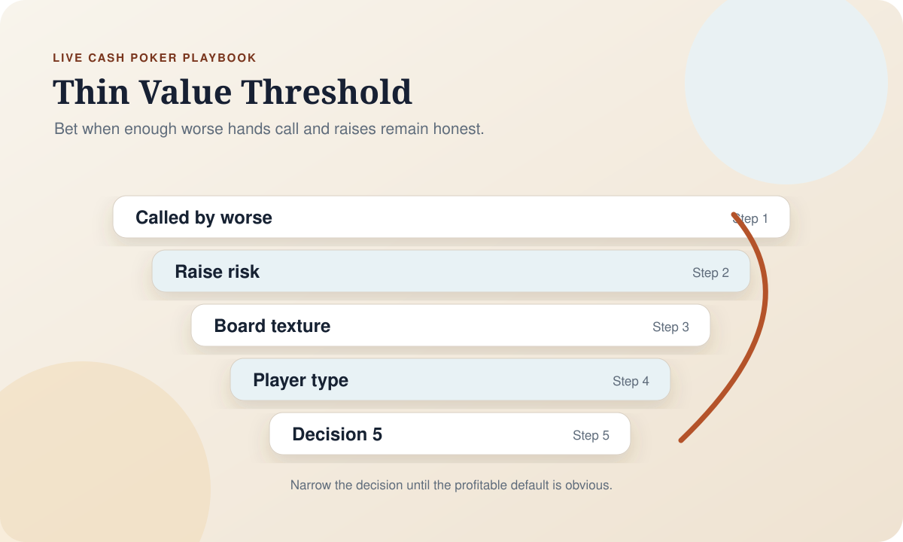
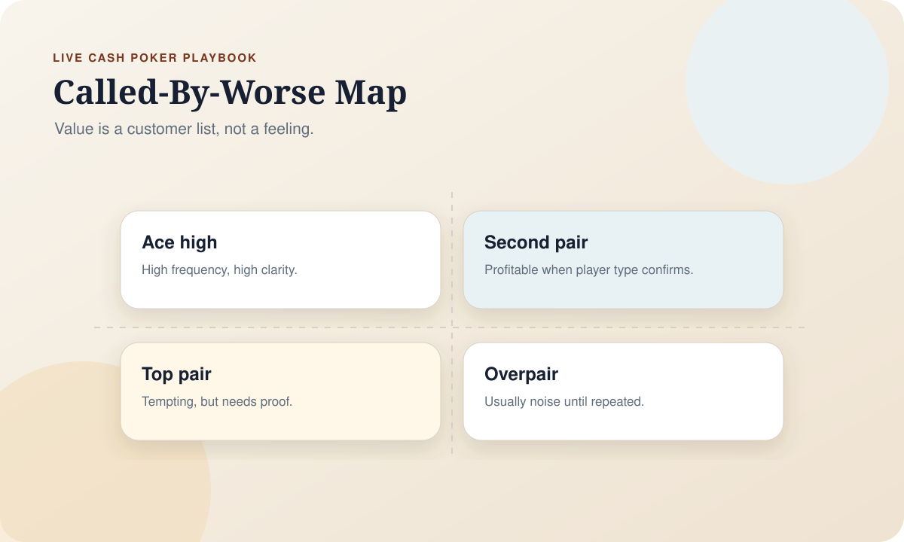
Actual lesson: The central lesson is that thin value is a major part of live-cash win rate because loose players call too wide while still raising too honestly. Best default: Bet when enough worse hands can call, size for payment, and be willing to bet-fold when a passive opponent's raise changes the information. Most common leak: Checking back profitable value because a rare raise would feel uncomfortable. A representative mined spot puts the idea into action: Choose the thinnest profitable value bet instead of checking back [E1].
The table-facing question for this chapter is simple: Before checking back, ask: which worse hands call if I bet, and how often do I really get punished by a raise? If the answer is vague, the hand is probably being driven by curiosity, fear, or autopilot rather than by a clean live-cash edge. The purpose of the chapter is to make that answer specific enough to use while chips are moving, not to admire the concept from a safe distance after the session.
These are not claims about perfect equilibrium play. They are the best low-stakes live-cash defaults to try first, then adjust when the table gives you better evidence.
What counts as thin value? A bet is thin value when enough worse hands call often enough, even if your hand is not thrilled to face a raise. This answer is not meant as a universal law; it is the starting line supported by the repeated evidence in this chapter [E1].
Can I bet and still fold? Yes. Low-stakes pools can call too wide and raise too honestly, which makes bet-fold one of the cleanest exploitative lines. This answer is not meant as a universal law; it is the starting line supported by the repeated evidence in this chapter [E2].
How do I size thin value? Use smaller or medium sizes when worse hands are fragile; size up when opponents are sticky or the runout improves hands that can bluff-catch. This answer is not meant as a universal law; it is the starting line supported by the repeated evidence in this chapter [E3].
The practical sequence is question, default, exception, review. Ask the question before the action, use the default when the table is ordinary, require evidence for the exception, and review the decision by whether that evidence was real.
The operating model is: The central lesson is that thin value is a major part of live-cash win rate because loose players call too wide while still raising too honestly. That model only becomes useful when thin value, worse-hand calling range, loose-passive opponents, and raise risk become concrete table actions. The mined examples cluster around Thin value is your salary, Initiative simplifies the hand, and Position creates decision leverage, so the player should not chase a single dramatic quote. It should teach the repeatable pattern: Bet when enough worse hands can call, size for payment, and be willing to bet-fold when a passive opponent's raise changes the information. The warning sign is equally concrete: Checking back profitable value because a rare raise would feel uncomfortable. The player should keep returning to one question under pressure: Before checking back, ask: which worse hands call if I bet, and how often do I really get punished by a raise? [E1]
This is not trying to solve poker from first principles or make a balanced-game claim about every possible opponent. It is translating repeated live-cash evidence into a starting line that beats the games most readers actually sit in. The default can be overridden, but only after a player earns the override with specific reads, specific prices, and a specific reason the current opponent differs from the pool.
Thin value works because the same player pool that underbluffs big lines often calls too wide with bluff-catchers, second pair, top pair weak kicker, and hands that feel too pretty to fold. That combination creates a clean exploit: bet more often when worse hands call, but do not pay off raises automatically. A representative mined decision points in the same direction: Choose the thinnest profitable value bet instead of checking back [E1].
The uncomfortable part is that thin value asks you to bet hands that are not invincible. Low-stakes profit comes from getting paid by the range that actually calls, not from waiting until your hand is too strong to feel nervous.
Across Crush Live Poker, Hungry Horse Poker, and Live Poker Guide, the shared lesson is not merely that thin value and getting paid matters. The shared lesson is operational: Bet when enough worse hands can call, size for payment, and be willing to bet-fold when a passive opponent's raise changes the information. The repeated themes are Thin value is your salary, Initiative simplifies the hand, and Position creates decision leverage, which all point toward the same table habit. The main disagreement is usually not about the destination; it is about the route. One source may teach the spot through sizing, another through player type, and another through discipline or hand selection. Those differences are useful only when they sharpen the table question: Before checking back, ask: which worse hands call if I bet, and how often do I really get punished by a raise?
Crush Live Poker contributes hand reading, line construction, bet sizing, and river discipline; in this chapter its clearest mined example points to Thin value is your salary, with the decision: Choose the thinnest profitable value bet instead of checking back [E1].
Hungry Horse Poker contributes exploitative systems, pro-versus-amateur thinking, and pressure against capped ranges; in this chapter its clearest mined example points to Thin value is your salary, with the decision: Choose the thinnest profitable value bet instead of checking back [E2].
Live Poker Guide contributes $1/$2 and $1/$3 execution, session habits, and clear defaults for loose splashy games; in this chapter its clearest mined example points to Thin value is your salary, with the decision: Choose the thinnest profitable value bet instead of checking back [E3].
The synthesis for the reader is therefore practical rather than decorative. Use the agreement as the default, use the source-specific emphasis as a diagnostic lens, and watch for the leak: Checking back profitable value because a rare raise would feel uncomfortable. If multiple sources arrive at the same default from different angles, the recommendation deserves more weight than a single isolated hand.
Case study first: in How a Bet Sizing Blunder Wins BIG in a $5k Pot! from Crush Live Poker, the usable lesson is not the surface drama of the hand. It is the decision shape. The card records the key decision as: Choose the thinnest profitable value bet instead of checking back The strategic takeaway is Thin value bets are a major source of steady live-cash profit because worse hands call too often. [E1]. In practice, this means the reader should pause before asking, 'Can I win this pot?' and ask the better live-cash question: 'What does this action usually represent from this player type, at this size, in this room?' The answer will not always be comfortable, but it will usually be more profitable than treating the spot as a puzzle designed to reward bravery.
Case study second: in This Secret Turns Poker Players Into CRUSHERS from Hungry Horse Poker, the usable lesson is not the surface drama of the hand. It is the decision shape. The card records the key decision as: Choose the thinnest profitable value bet instead of checking back The strategic takeaway is Thin value bets are a major source of steady live-cash profit because worse hands call too often. [E2]. In practice, this means the reader should pause before asking, 'Can I win this pot?' and ask the better live-cash question: 'What does this action usually represent from this player type, at this size, in this room?' The answer will not always be comfortable, but it will usually be more profitable than treating the spot as a puzzle designed to reward bravery.
Case study third: in Exploit Their Leaks! Dominate Live Poker with These Strategies! from Live Poker Guide, the usable lesson is not the surface drama of the hand. It is the decision shape. The card records the key decision as: Choose the thinnest profitable value bet instead of checking back The strategic takeaway is Thin value bets are a major source of steady live-cash profit because worse hands call too often. [E3]. In practice, this means the reader should pause before asking, 'Can I win this pot?' and ask the better live-cash question: 'What does this action usually represent from this player type, at this size, in this room?' The answer will not always be comfortable, but it will usually be more profitable than treating the spot as a puzzle designed to reward bravery.
Case study fourth: in Poker Strategy: Bluff Catch the River in 3 Bet Pot with Second Pair from Crush Live Poker, the usable lesson is not the surface drama of the hand. It is the decision shape. The card records the key decision as: Choose the thinnest profitable value bet instead of checking back The strategic takeaway is Thin value bets are a major source of steady live-cash profit because worse hands call too often. [E4]. In practice, this means the reader should pause before asking, 'Can I win this pot?' and ask the better live-cash question: 'What does this action usually represent from this player type, at this size, in this room?' The answer will not always be comfortable, but it will usually be more profitable than treating the spot as a puzzle designed to reward bravery.
Case study fifth: in What High Stakes Pros Know That Low Stakes Players Don’t (Round 2) from Hungry Horse Poker, the usable lesson is not the surface drama of the hand. It is the decision shape. The card records the key decision as: Choose the thinnest profitable value bet instead of checking back The strategic takeaway is Thin value bets are a major source of steady live-cash profit because worse hands call too often. [E5]. In practice, this means the reader should pause before asking, 'Can I win this pot?' and ask the better live-cash question: 'What does this action usually represent from this player type, at this size, in this room?' The answer will not always be comfortable, but it will usually be more profitable than treating the spot as a puzzle designed to reward bravery.
Taken together, these case studies make the chapter less dependent on a single hand. They show how thin value and getting paid keeps returning as a repeatable decision problem: the player has some information, the pool has a recognizable tendency, and the profitable line asks the player to trust the pattern without becoming rigid. That is the balance the rest of the chapter keeps returning to.
Use these as supporting margin notes, not as the main lesson. The teaching has already been synthesized above; these notes show which mined spots supplied the pressure points.
Synthesis note: In thin value and getting paid, the examples matter because they keep pointing to the same habit: make the profitable default obvious before the hand invites ego, curiosity, or fancy-play syndrome.
Key lesson: Bet-fold can be aggressive, not timid. The pool can make two mistakes at once: call too wide and raise too honestly. Thin value captures the first mistake; folding to the raise respects the second. [E4]
This is why the advice can feel wrong while being profitable. The player may leave the table with fewer cinematic stories, but the win rate comes from the unglamorous decisions that repeat: cleaner preflop entries, better seats, more precise value, fewer curiosity calls, and bluffs aimed at players who can actually fold. The lesson is not to become timid. It is to reserve aggression, curiosity, and deviation for spots where the evidence says they earn money.
The chapter's closing model is deliberately plain. Start with the chapter concept, identify the live-pool leak, match the leak to the line, then ask what evidence would justify a deviation. That four-part habit keeps thin value and getting paid from becoming either a slogan or a superstition. It also protects the reader from the most common failure mode in low-stakes live cash: knowing the right adjustment away from the table and then talking oneself out of it when the pot gets large [E1].
The reader should leave the chapter with a practical bias, not a rigid script. In ordinary games, the bias is to trust source-backed population evidence before trusting adrenaline. In unusual games, the bias is to update quickly when opponents prove they are different. The money is made in that middle ground, where the player is disciplined enough to use defaults and attentive enough to notice when a default no longer applies.
| Evidence | Channel | Video | Segment | Time | Theme | Decision | Isolated Lesson | Transcript Note | Confidence |
|---|---|---|---|---|---|---|---|---|---|
| E1 | Crush Live Poker | How a Bet Sizing Blunder Wins BIG in a $5k Pot! | seg_be5845f93d54 | 06:22-07:24 | Thin value is your salary | Choose the thinnest profitable value bet instead of checking back | Thin value bets are a major source of steady live-cash profit because worse hands call too often. | Raw transcript omitted from final prose; use the timestamped source segment for review. | 0.83 |
| E2 | Hungry Horse Poker | This Secret Turns Poker Players Into CRUSHERS | seg_6c22228dc3b9 | 24:41-25:31 | Thin value is your salary | Choose the thinnest profitable value bet instead of checking back | Thin value bets are a major source of steady live-cash profit because worse hands call too often. | flown through this hand to get to this point because I want to focus on the river in this hand let's ask those two questions first what i... | 0.83 |
| E3 | Live Poker Guide | Exploit Their Leaks! Dominate Live Poker with These Strategies! | seg_aaf9de0f00b0 | 18:15-19:07 | Thin value is your salary | Choose the thinnest profitable value bet instead of checking back | Thin value bets are a major source of steady live-cash profit because worse hands call too often. | value or villain lost in this hand it's actually not a very interesting one it's blind versus blind the small blind blind versus blind th... | 0.93 |
| E4 | Crush Live Poker | Poker Strategy: Bluff Catch the River in 3 Bet Pot with Second Pair | seg_0c44dcf6adda | 08:52-09:30 | Thin value is your salary | Choose the thinnest profitable value bet instead of checking back | Thin value bets are a major source of steady live-cash profit because worse hands call too often. | Raw transcript omitted from final prose; use the timestamped source segment for review. | 0.76 |
| E5 | Hungry Horse Poker | What High Stakes Pros Know That Low Stakes Players Don’t (Round 2) | seg_6fe2aa68ef80 | 13:22-14:08 | Thin value is your salary | Choose the thinnest profitable value bet instead of checking back | Thin value bets are a major source of steady live-cash profit because worse hands call too often. | overb size here on this River and got villain to fold villain actually had Ace Jack in this hand in game I chose a Jack in this hand in g... | 0.86 |
| E6 | Live Poker Guide | 10 Years of Live Poker Advice in 3 hours - Everything I know! | seg_7624bea8ec57 | 01:32:02-01:33:22 | Thin value is your salary | Choose the thinnest profitable value bet instead of checking back | Thin value bets are a major source of steady live-cash profit because worse hands call too often. | Yes, it is thin, but he can call you with a weaker top pair. | 0.82 |
| E7 | Crush Live Poker | How to NOT Play Ace‑King in Live Cash Games | seg_8c148d033449 | 14:05-14:43 | Thin value is your salary | Choose the thinnest profitable value bet instead of checking back | Thin value bets are a major source of steady live-cash profit because worse hands call too often. | Raw transcript omitted from final prose; use the timestamped source segment for review. | 0.84 |
| E8 | Hungry Horse Poker | I Discovered Why Poker Players Get STUCK at Low Stakes | seg_ef261ffd930a | 04:40-05:21 | Thin value is your salary | Choose the thinnest profitable value bet instead of checking back | Thin value bets are a major source of steady live-cash profit because worse hands call too often. | call flop comes Queen 86 our opponent checks it over we are going to CET here which is perfectly fine our opponent is going to call now t... | 0.68 |
| E9 | Live Poker Guide | Steal this River Strategy, It’ll Double Your Win Rate at 1/2 | seg_61738d7a9580 | 02:13-03:05 | Thin value is your salary | Choose the thinnest profitable value bet instead of checking back | Thin value bets are a major source of steady live-cash profit because worse hands call too often. | always bet because there won't be any negative consequences. | 0.69 |
| E10 | Crush Live Poker | 4 Years Off Poker… Then I Did THIS at $5/$10! | seg_ed3b7851ea51 | 14:24-15:10 | Thin value is your salary | Choose the thinnest profitable value bet instead of checking back | Thin value bets are a major source of steady live-cash profit because worse hands call too often. | Raw transcript omitted from final prose; use the timestamped source segment for review. | 0.76 |
| E11 | Hungry Horse Poker | The 9 Biggest Mistakes Low Stakes Poker Pros Make | seg_da49e62856eb | 30:39-31:08 | Thin value is your salary | Choose the thinnest profitable value bet instead of checking back | Thin value bets are a major source of steady live-cash profit because worse hands call too often. | value betting but they just are massively under bluffing in almost every spot when all the money goes in or they are quite comfortable ru... | 0.79 |
| E12 | Live Poker Guide | How To Navigate to a Win at 1/2 and 1/3 Live Poker! | seg_75b34eb27959 | 11:53-12:28 | Thin value is your salary | Choose the thinnest profitable value bet instead of checking back | Thin value bets are a major source of steady live-cash profit because worse hands call too often. | I really don't have to be good that often to call in this spot, but I do expect to lose more often, quite a bit more often than I win her... | 0.74 |
| E13 | Crush Live Poker | Suspicious Claim After Poker Hand! Is He Lying? | seg_5a24eea3701f | 23:39-24:33 | Thin value is your salary | Choose the thinnest profitable value bet instead of checking back | Thin value bets are a major source of steady live-cash profit because worse hands call too often. | two people and then he's betting the turn on a four after two people call him and then he goes and by the way too I said most people in y... | 0.76 |
| E14 | Hungry Horse Poker | I Watched Players Think Out Loud. They All Have the Same Blindspot. | seg_1cde1fe0b540 | 27:17-27:52 | Thin value is your salary | Choose the thinnest profitable value bet instead of checking back | Thin value bets are a major source of steady live-cash profit because worse hands call too often. | It's actually a similar spot to hand play against Ryan where it was a very clear flop where it was a very clear flop call. | 0.82 |
| E15 | Live Poker Guide | Is It Worth Playing Online as a Live Poker Player? (Q&A) | seg_efa971b30f4b | 04:33-05:22 | Thin value is your salary | Choose the thinnest profitable value bet instead of checking back | Thin value bets are a major source of steady live-cash profit because worse hands call too often. | Raw transcript omitted from final prose; use the timestamped source segment for review. | 0.67 |
| E16 | Crush Live Poker | When the MIRACLE Card Appears | seg_972bb68ebf01 | 11:18-11:58 | Thin value is your salary | Choose the thinnest profitable value bet instead of checking back | Thin value bets are a major source of steady live-cash profit because worse hands call too often. | really thin thin value range of sixes full but a lot of people it's just a weird spot to raise so I don't know if I would be a non-believ... | 0.68 |
| E17 | Hungry Horse Poker | Low Stakes Has Changed for 2026. Most Players Won't Adapt. | seg_90e5c367ac2f | 09:04-09:25 | Thin value is your salary | Choose the thinnest profitable value bet instead of checking back | Thin value bets are a major source of steady live-cash profit because worse hands call too often. | even for $1,100 on this river, I don't think this guy's folding. | 0.67 |
| E18 | Live Poker Guide | Crush 1/2 and 1/3 Live Poker By Applying This Skill! | seg_bc06194a8176 | 12:07-12:52 | Thin value is your salary | Choose the thinnest profitable value bet instead of checking back | Thin value bets are a major source of steady live-cash profit because worse hands call too often. | king nine potentially something king 10 or so of clubs or king jack of clubs. | 0.60 |
| E19 | Crush Live Poker | Exploit Harder — The Simple Way to Lose Less & Win More! | seg_38fb6d99088f | 13:23-14:25 | Thin value is your salary | Choose the thinnest profitable value bet instead of checking back | Thin value bets are a major source of steady live-cash profit because worse hands call too often. | hand that was didn't love the queen necessarily, but is still a pair tens, jacks, something that. | 0.79 |
| E20 | Hungry Horse Poker | How to TRIPLE Your Win Rate (Poker Secrets REVEALED) | seg_8bfce88c022c | 21:27-22:10 | Thin value is your salary | Choose the thinnest profitable value bet instead of checking back | Thin value bets are a major source of steady live-cash profit because worse hands call too often. | Raw transcript omitted from final prose; use the timestamped source segment for review. | 0.60 |
| E21 | Live Poker Guide | Step-by-Step Guide to Crushing 1/2 Live Poker (Complete Strategy) | seg_a1148dfacc68 | 13:57-14:58 | Thin value is your salary | Choose the thinnest profitable value bet instead of checking back | Thin value bets are a major source of steady live-cash profit because worse hands call too often. | Well, we can worry about that if that happens. | 0.54 |
| E22 | Crush Live Poker | Raise Top Pair? (In a 3-Bet Pot) | seg_d0b8af8e372b | 06:40-07:47 | Thin value is your salary | Choose the thinnest profitable value bet instead of checking back | Thin value bets are a major source of steady live-cash profit because worse hands call too often. | check on turn rivers of four okay she texted me what what do you think my players here -oh I do remember this players here -oh I do remem... | 0.66 |
| E23 | Hungry Horse Poker | When to Turn Bluff Catchers Into BLUFFS (Simple Guide) | seg_c2f88a70ce06 | 05:44-06:31 | Thin value is your salary | Choose the thinnest profitable value bet instead of checking back | Thin value bets are a major source of steady live-cash profit because worse hands call too often. | Raw transcript omitted from final prose; use the timestamped source segment for review. | 0.68 |
| E24 | Live Poker Guide | This is the SKILL that Wins the BIG Money in Live Poker! | seg_1110d38f51a9 | 00:02-00:55 | Thin value is your salary | Choose the thinnest profitable value bet instead of checking back | Thin value bets are a major source of steady live-cash profit because worse hands call too often. | There is one skill that wins the really big money in live low stakes poker. | 0.64 |
| E25 | Crush Live Poker | I played a $250,000 Pot with AA in Bobby's Room! | seg_5aeb64751071 | 06:46-07:43 | Thin value is your salary | Choose the thinnest profitable value bet instead of checking back | Thin value bets are a major source of steady live-cash profit because worse hands call too often. | do sometimes with those guys if I was in your spot is you actually under rep your hand quite a bit and I'm not even talking about slow pl... | 0.75 |
| E26 | Hungry Horse Poker | The Most PROFITABLE Play in Poker (Do This and PRINT) | seg_7d192b19e84a | 14:01-14:34 | Thin value is your salary | Choose the thinnest profitable value bet instead of checking back | Thin value bets are a major source of steady live-cash profit because worse hands call too often. | Raw transcript omitted from final prose; use the timestamped source segment for review. | 0.67 |
| E27 | Live Poker Guide | The Key Strategy That Skyrockets Your Win Rate at 1/2 & 1/3 Live | seg_d8ef77d8a1d3 | 01:24-02:17 | Thin value is your salary | Choose the thinnest profitable value bet instead of checking back | Thin value bets are a major source of steady live-cash profit because worse hands call too often. | Raw transcript omitted from final prose; use the timestamped source segment for review. | 0.54 |
| E28 | Crush Live Poker | Scary Board & Deep Stacks! Do YOU Jam River With King-Queen? | seg_7f9fd8d530c5 | 12:57-13:52 | Thin value is your salary | Choose the thinnest profitable value bet instead of checking back | Thin value bets are a major source of steady live-cash profit because worse hands call too often. | saying you're you're value betting though yeah I a lot of history with this villain and they to call me down so I wanted to go for some T... | 0.51 |
| E29 | Hungry Horse Poker | This Blind Spot Keeps Winning Players at Low Stakes | seg_a4e52e29734e | 04:16-04:51 | Thin value is your salary | Choose the thinnest profitable value bet instead of checking back | Thin value bets are a major source of steady live-cash profit because worse hands call too often. | it doesn't mean they never have a boat. | 0.67 |
| E30 | Live Poker Guide | The ONLY 3 Strategies You Need to Crush 1/2 & 1/3 | seg_6af08ccfad14 | 05:19-05:55 | Thin value is your salary | Choose the thinnest profitable value bet instead of checking back | Thin value bets are a major source of steady live-cash profit because worse hands call too often. | So don't worry about getting raised So don't worry about getting raised until it actually happens. | 0.54 |
| E31 | Crush Live Poker | Super Thin for Value (Poker Strategy) | seg_5421ed09d66e | 11:37-12:19 | Thin value is your salary | Choose the thinnest profitable value bet instead of checking back | Thin value bets are a major source of steady live-cash profit because worse hands call too often. | Raw transcript omitted from final prose; use the timestamped source segment for review. | 0.74 |
| E32 | Hungry Horse Poker | What High Stakes Pros Know That Low Stakes Players Don’t | seg_82380de6a230 | 37:48-38:07 | Thin value is your salary | Choose the thinnest profitable value bet instead of checking back | Thin value bets are a major source of steady live-cash profit because worse hands call too often. | different line he actually elected to check back this flop here he called on check back this flop here he called on the turn and then on... | 0.67 |
| E33 | Live Poker Guide | Poker Coaches Are Lying to You (The Truth About Winning at Live Poker) | seg_45dedb45334c | 06:38-07:19 | Thin value is your salary | Choose the thinnest profitable value bet instead of checking back | Thin value bets are a major source of steady live-cash profit because worse hands call too often. | a recreational player or a rig this is already more than half of what I need to know because this informs my strategy know because this i... | 0.53 |
| E34 | Crush Live Poker | Did I Play My Trips Correctly on This Scary Board? | seg_3fc49034f1fb | 19:51-20:25 | Thin value is your salary | Choose the thinnest profitable value bet instead of checking back | Thin value bets are a major source of steady live-cash profit because worse hands call too often. | tough spot I think now if he bets by the way this is the one I talked about from a previous call I talked about from a previous call earl... | 0.67 |
| E35 | Hungry Horse Poker | Low Stakes Players Have FIGURED ME OUT - Now What?! | seg_4e8a90c455b1 | 22:58-23:32 | Thin value is your salary | Choose the thinnest profitable value bet instead of checking back | Thin value bets are a major source of steady live-cash profit because worse hands call too often. | Raw transcript omitted from final prose; use the timestamped source segment for review. | 0.61 |
| E36 | Live Poker Guide | STOP Making These Live Poker Blunders That Cost You Money! | seg_a802d946e73a | 12:53-13:50 | Thin value is your salary | Choose the thinnest profitable value bet instead of checking back | Thin value bets are a major source of steady live-cash profit because worse hands call too often. | seems because now some Straits came in the king 10 and the 108 and if he had a queen or a Jack on the floor it's queen or a Jack on the f... | 0.60 |
| E37 | Crush Live Poker | I Accidentally Won a $2200 Pot! | seg_4d2c6a2f1ce0 | 12:22-13:03 | Thin value is your salary | Choose the thinnest profitable value bet instead of checking back | Thin value bets are a major source of steady live-cash profit because worse hands call too often. | willing to check call than Bart he favors B fold a lot more in the spot favors B fold a lot more in the spot make the argument to me math... | 0.67 |
| E38 | Hungry Horse Poker | 90% of Money Is Won on the River (The System That Fixes Your Winrate) | seg_934abf69021a | 10:56-11:45 | Thin value is your salary | Choose the thinnest profitable value bet instead of checking back | Thin value bets are a major source of steady live-cash profit because worse hands call too often. | opponent's range could be some very, very strong hands. | 0.60 |
| E39 | Live Poker Guide | The 5 Live Poker Principles That Will Make Anyone a Winner | seg_386d24ffba27 | 01:23-02:25 | Thin value is your salary | Choose the thinnest profitable value bet instead of checking back | Thin value bets are a major source of steady live-cash profit because worse hands call too often. | the river is a nine, bringing in the flush. | 0.53 |
| E40 | Crush Live Poker | Poker Strategy: The Basics of Value Betting | seg_6d0200b14918 | 09:03-09:54 | Thin value is your salary | Choose the thinnest profitable value bet instead of checking back | Thin value bets are a major source of steady live-cash profit because worse hands call too often. | in it so that he could have King X of diamonds or here you do block some Kings but still you still have to bet though I mean if you bet t... | 0.67 |
| E41 | Hungry Horse Poker | I Gave a Weekend Warrior and a Full Time Pro the Same 5 Hands | seg_0d998dee8a48 | 33:34-34:07 | Thin value is your salary | Choose the thinnest profitable value bet instead of checking back | Thin value bets are a major source of steady live-cash profit because worse hands call too often. | I if he had any over pairs here, he's obviously continuing to bet and any straight draws or even ace8 suited top pair, I feel he would co... | 0.53 |
| E42 | Live Poker Guide | High Stakes Players Make the Same Mistakes As YOU! | seg_ad81fa0dc36b | 12:17-13:07 | Thin value is your salary | Choose the thinnest profitable value bet instead of checking back | Thin value bets are a major source of steady live-cash profit because worse hands call too often. | this B at all yes he's got a piece of the board and he wants to Block B but what do you get called by here king what do you get called by... | 0.52 |
| E43 | Crush Live Poker | Poker Strategy: Top Two Pair with Awkward Stacks | seg_39ed580ff2aa | 05:12-06:08 | Thin value is your salary | Choose the thinnest profitable value bet instead of checking back | Thin value bets are a major source of steady live-cash profit because worse hands call too often. | has a queen and you bet again he probably shouldn't really call so you're in a it is a little bit of an awkward spot I mean I got to tell... | 0.67 |
| E44 | Hungry Horse Poker | 40+ Poker Tells That Give Away Everything | seg_66be4c2e2def | 07:48-08:22 | Thin value is your salary | Choose the thinnest profitable value bet instead of checking back | Thin value bets are a major source of steady live-cash profit because worse hands call too often. | flop or turn and your opponent snap calls, in general, I found when they calls, in general, I found when they snap call, we can eliminate... | 0.50 |
| E45 | Live Poker Guide | I DOUBLED My WIN RATE With This POKER Play | seg_c450403d32e3 | 12:27-13:41 | Thin value is your salary | Choose the thinnest profitable value bet instead of checking back | Thin value bets are a major source of steady live-cash profit because worse hands call too often. | something pocket Jacks if I bet again so I did not do that and the river is a blank he checks again to me I am is a blank he checks again... | 0.54 |
| E46 | Crush Live Poker | The Table Mocked Him — But Was He Actually Right? | seg_ee7838d047a7 | 15:25-16:15 | Thin value is your salary | Choose the thinnest profitable value bet instead of checking back | Thin value bets are a major source of steady live-cash profit because worse hands call too often. | And yeah, if he has aces or ace king, he just checks it back. | 0.67 |
| E47 | Hungry Horse Poker | Most Players Use This Bet Size... It's KILLING Your Win Rate | seg_6aa56b698957 | 21:00-21:34 | Thin value is your salary | Choose the thinnest profitable value bet instead of checking back | Thin value bets are a major source of steady live-cash profit because worse hands call too often. | our thick value with a hand sixes here. | 0.53 |
| E48 | Live Poker Guide | Do You Make These Live Poker Blunders? Here's How to Fix Them! | seg_bf5007034cb7 | 16:46-17:40 | Thin value is your salary | Choose the thinnest profitable value bet instead of checking back | Thin value bets are a major source of steady live-cash profit because worse hands call too often. | the open Ender which will be about 17 18% to hit but your outs are not clean not all of them because they could be not all of them becaus... | 0.53 |
| E49 | Crush Live Poker | CRUSH Low Stakes Live Poker by Learning this One Concept | seg_ae4b40041fbe | 08:05-08:42 | Thin value is your salary | Choose the thinnest profitable value bet instead of checking back | Thin value bets are a major source of steady live-cash profit because worse hands call too often. | getting turn po odds here now are there some draws some combo draws that might have raised that feel they just have to go with it what th... | 0.61 |
| E50 | Hungry Horse Poker | 95% of Pots Are Multiway (The System That Fixes Your Winrate) | seg_ca895e8e6062 | 03:09-03:45 | Thin value is your salary | Choose the thinnest profitable value bet instead of checking back | Thin value bets are a major source of steady live-cash profit because worse hands call too often. | Pocket aces are going to be the nuts on the majority of turns. | 0.43 |
| E51 | Live Poker Guide | LEARN THIS To Increase Your WIN RATE! | seg_8453d24cdb15 | 05:23-06:02 | Thin value is your salary | Choose the thinnest profitable value bet instead of checking back | Thin value bets are a major source of steady live-cash profit because worse hands call too often. | Raw transcript omitted from final prose; use the timestamped source segment for review. | 0.53 |
| E52 | Crush Live Poker | I Asked to See the Bluff & Got a Surprising Reveal | seg_bc0673aeccc1 | 09:38-10:33 | Thin value is your salary | Choose the thinnest profitable value bet instead of checking back | Thin value bets are a major source of steady live-cash profit because worse hands call too often. | am not a huge fan of check calling rivers and especially I'm not check calling rivers with strong hands cuz I'm scared there's two reason... | 0.61 |
| E53 | Hungry Horse Poker | Does GTO Matter at Low Stakes? The Surprising Truth | seg_ebbf141f6b04 | 06:33-07:08 | Thin value is your salary | Choose the thinnest profitable value bet instead of checking back | Thin value bets are a major source of steady live-cash profit because worse hands call too often. | certain lack of check e or Showdown value if you will that you need when value if you will that you need when you're bluffing and if you... | 0.48 |
| E54 | Live Poker Guide | Do This Every Session at 1/2 & Your Win Rate Will SKYROCKET | seg_2f5953e4e2b4 | 02:48-03:26 | Thin value is your salary | Choose the thinnest profitable value bet instead of checking back | Thin value bets are a major source of steady live-cash profit because worse hands call too often. | Louis put it, >> I would say value bet as thinly as you possibly can and then think about doing it a little bit thinner. | 0.37 |
| E55 | Crush Live Poker | Poker Strategy: Two Pair Go For Thin Value? | seg_90045d116682 | 00:21-01:00 | Thin value is your salary | Choose the thinnest profitable value bet instead of checking back | Thin value bets are a major source of steady live-cash profit because worse hands call too often. | for ultra thin value in this spot multi-way on a pretty Dynamic board so I'll get right into it if you're ready I'll get right into it if... | 0.61 |
| E56 | Hungry Horse Poker | We Coached 700 Players. One Trait Separated the Winners. | seg_3dec8c968a7a | 23:32-24:11 | Thin value is your salary | Choose the thinnest profitable value bet instead of checking back | Thin value bets are a major source of steady live-cash profit because worse hands call too often. | strategies as figuring out what my opponent's mistakes are and then doing something about it because ones that I don't do anything about... | 0.36 |
| E57 | Live Poker Guide | If You Want to Crush 1/2 in 2026, Fix These 5 Leaks | seg_4355613dc01c | 08:45-09:38 | Initiative simplifies the hand | Use position to simplify decisions and pressure weaker ranges | Keeping the betting lead forces passive live opponents to reveal the strength of their ranges. | Most advice out there is designed for heads up pot. | 0.92 |
| E58 | Crush Live Poker | Small Stakes Live Poker GET VALUE Concept! | seg_bd385eb5f74c | 11:39-12:35 | Thin value is your salary | Choose the thinnest profitable value bet instead of checking back | Thin value bets are a major source of steady live-cash profit because worse hands call too often. | King or any King it doesn't matter even less than that what I mean that Dynamic doesn't exist as much now in the games these days he much... | 0.66 |
| E59 | Hungry Horse Poker | I Watched Players Think Out Loud. They All Have the Same Blindspot. | seg_12ecb5b162ee | 21:32-21:53 | Good bets get paid by worse | Choose the thinnest profitable value bet instead of checking back | Good bet construction keeps dominated hands in and builds pots that your value hands can win. | Well, if you're hitting, you're hitting. | 0.35 |
| E60 | Live Poker Guide | 10 Years of Live Poker Advice in 3 hours - Everything I know! | seg_7e26668aed1c | 46:37-47:30 | Initiative simplifies the hand | Use position to simplify decisions and pressure weaker ranges | Keeping the betting lead forces passive live opponents to reveal the strength of their ranges. | I don't hate this check because check. | 0.91 |
| E61 | Crush Live Poker | Mastering Bet Sizes for MAX Value with Ace King | seg_cbd43e0b1cda | 02:13-02:45 | Thin value is your salary | Choose the thinnest profitable value bet instead of checking back | Thin value bets are a major source of steady live-cash profit because worse hands call too often. | and I just think that I would just go 60 all day long here 60 to 75 I I 60 all day long here 60 to 75 I I feel you might even bet larger... | 0.60 |
| E62 | Hungry Horse Poker | $100/hr at Low Stakes? High Stakes CRUSHER Weighs In | Ep 11 | seg_4d08e2384d4f | 37:50-38:41 | Position creates decision leverage | Use position to simplify decisions and pressure weaker ranges | Position lets you realize equity, control pot size, and gather more information before committing money. | said he was from Europe or Brazil or Japan we we weren't chopping next hand Japan we we weren't chopping next hand the Straton were playi... | 0.87 |
| E63 | Live Poker Guide | These 5 Mistakes Hold You Back in Live Poker! | seg_b643864d6c81 | 05:40-06:32 | Initiative simplifies the hand | Use position to simplify decisions and pressure weaker ranges | Keeping the betting lead forces passive live opponents to reveal the strength of their ranges. | raced Ace King villain called on the button flop came Ace 103 rainbow hero button flop came Ace 103 rainbow hero check I don't hate this... | 0.91 |
| E64 | Crush Live Poker | Poker Strategy: Should We Go For Value With JJ on This Scary Turn | seg_d7cc59eced3b | 07:24-08:06 | Thin value is your salary | Choose the thinnest profitable value bet instead of checking back | Thin value bets are a major source of steady live-cash profit because worse hands call too often. | Raw transcript omitted from final prose; use the timestamped source segment for review. | 0.60 |
| E65 | Hungry Horse Poker | I’ll Tell You My Exact Strategy. You Still Can’t Exploit Me | seg_e7988a1e7113 | 28:17-28:42 | Initiative simplifies the hand | Use position to simplify decisions and pressure weaker ranges | Keeping the betting lead forces passive live opponents to reveal the strength of their ranges. | So, actually, we're just allowed to go much much thinner than equilibrium on much much thinner than equilibrium on this river for value. | 0.91 |
| E66 | Live Poker Guide | How To Maximally Exploit Recreational Players at 1/3 Live Poker | seg_6b8f672946cb | 09:54-10:50 | Position creates decision leverage | Use position to simplify decisions and pressure weaker ranges | Position lets you realize equity, control pot size, and gather more information before committing money. | And this is now very important in solverland or whenever you play against a good player. | 0.68 |
| E67 | Crush Live Poker | Surprising Opponent Play! What's My Adjustment? | seg_cc855053ffb3 | 09:43-10:09 | Thin value is your salary | Choose the thinnest profitable value bet instead of checking back | Thin value bets are a major source of steady live-cash profit because worse hands call too often. | Raw transcript omitted from final prose; use the timestamped source segment for review. | 0.60 |
| E68 | Hungry Horse Poker | Exploit Any Poker Player Instantly When You See THIS | seg_4b41c171bab3 | 02:32-03:21 | Thin value is your salary | Choose the thinnest profitable value bet instead of checking back | Thin value bets are a major source of steady live-cash profit because worse hands call too often. | call this time we flop bottom set here in a three bet pot so pretty good for us he's going to check it over to us the he's going to check... | 0.78 |
| E69 | Live Poker Guide | 10 Things Good Poker Players Do That Bad Ones Don’t | seg_75f20be17660 | 03:13-04:28 | Exploit the live pool you actually face | Interpret sizing as a live tell and adjust exploitatively | The highest-EV default is to attack the actual pool tendency in front of you, not an imaginary balanced opponent. | Hero's triple barrel was a bit optimistic but that's not what we want to discuss here the interesting bit is the next hand between these... | 0.93 |
| E70 | Crush Live Poker | Watch Out! THIS Strange Betting Pattern = Big Trouble | seg_6d6f08342a38 | 13:17-14:16 | Thin value is your salary | Choose the thinnest profitable value bet instead of checking back | Thin value bets are a major source of steady live-cash profit because worse hands call too often. | So now the pot is 965. | 0.54 |
| E71 | Hungry Horse Poker | 95% of Pots Are Multiway (The System That Fixes Your Winrate) | seg_8ecbebb7b508 | 07:34-08:18 | Position creates decision leverage | Use position to simplify decisions and pressure weaker ranges | Position lets you realize equity, control pot size, and gather more information before committing money. | to be a little bit more cautious here because multi-way the threshold for what a thick value hand is, what a three street hand is is goin... | 0.77 |
| E72 | Live Poker Guide | High Stakes Players Make the Same Mistakes As YOU! | seg_3b4ced96aa7f | 05:11-06:36 | Position creates decision leverage | Use position to simplify decisions and pressure weaker ranges | Position lets you realize equity, control pot size, and gather more information before committing money. | cupboard because I think this should have been an easy value bet here on the river next hand doesn't involve Andreas for a change we have... | 0.93 |
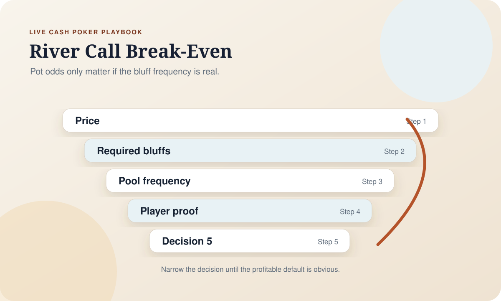
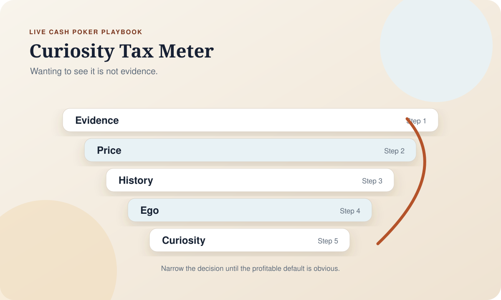
Actual lesson: The central lesson is that big passive river aggression is usually value-heavy, so curiosity is not a reason to pay. Best default: Fold more against large river bets and raises from players without proven bluff frequency; call wider only when the line contains real missed hands and opponent proof. Most common leak: Converting pot odds into permission while skipping the harder question of whether villain has enough bluffs. A representative mined spot puts the idea into action: Respond to river aggression with population-aware discipline [E1].
The table-facing question for this chapter is simple: Before calling river, ask: what exact bluffs arrive here this way, and has this opponent shown the nerve to use them? If the answer is vague, the hand is probably being driven by curiosity, fear, or autopilot rather than by a clean live-cash edge. The purpose of the chapter is to make that answer specific enough to use while chips are moving, not to admire the concept from a safe distance after the session.
These are not claims about perfect equilibrium play. They are the best low-stakes live-cash defaults to try first, then adjust when the table gives you better evidence.
Do pot odds force a call? No. Pot odds only matter after the range has enough bluffs. Against value-heavy live lines, a cheap call can still be a losing call. This answer is not meant as a universal law; it is the starting line supported by the repeated evidence in this chapter [E1].
When do I hero call? Hero call when missed draws fit the line, the player has shown bluffing nerve, and your hand blocks value or unblocks bluffs. Do not call just to see. This answer is not meant as a universal law; it is the starting line supported by the repeated evidence in this chapter [E2].
Can I value bet thinly and fold to a raise? Yes. Those are compatible exploits: get paid by loose calls, then respect honest raises. This answer is not meant as a universal law; it is the starting line supported by the repeated evidence in this chapter [E3].
The practical sequence is question, default, exception, review. Ask the question before the action, use the default when the table is ordinary, require evidence for the exception, and review the decision by whether that evidence was real.
The operating model is: The central lesson is that big passive river aggression is usually value-heavy, so curiosity is not a reason to pay. That model only becomes useful when river underbluffing, bluff catching, pot odds, and curiosity tax become concrete table actions. The mined examples cluster around Bluff-catching is usually overrated, Curiosity calls are expensive, and Thin value is your salary, so the player should not chase a single dramatic quote. It should teach the repeatable pattern: Fold more against large river bets and raises from players without proven bluff frequency; call wider only when the line contains real missed hands and opponent proof. The warning sign is equally concrete: Converting pot odds into permission while skipping the harder question of whether villain has enough bluffs. The player should keep returning to one question under pressure: Before calling river, ask: what exact bluffs arrive here this way, and has this opponent shown the nerve to use them? [E1]
This is not trying to solve poker from first principles or make a balanced-game claim about every possible opponent. It is translating repeated live-cash evidence into a starting line that beats the games most readers actually sit in. The default can be overridden, but only after a player earns the override with specific reads, specific prices, and a specific reason the current opponent differs from the pool.
River mistakes are expensive because the pot is already large and curiosity feels like analysis. In many low-stakes games, passive players do not arrive at big river bets and raises with enough bluffs, especially after taking lines that look value-heavy all the way down. A representative mined decision points in the same direction: Respond to river aggression with population-aware discipline [E1].
The pool lets disciplined river folding work because the average opponent is not punishing those folds often enough. A call needs more than a price. It needs plausible missed hands, a player capable of pulling the trigger, and preferably blockers or history that make the bluff frequency real.
Across Crush Live Poker, Hungry Horse Poker, and Live Poker Guide, the shared lesson is not merely that river underbluffing and the curiosity tax matters. The shared lesson is operational: Fold more against large river bets and raises from players without proven bluff frequency; call wider only when the line contains real missed hands and opponent proof. The repeated themes are Bluff-catching is usually overrated, Curiosity calls are expensive, and Thin value is your salary, which all point toward the same table habit. The main disagreement is usually not about the destination; it is about the route. One source may teach the spot through sizing, another through player type, and another through discipline or hand selection. Those differences are useful only when they sharpen the table question: Before calling river, ask: what exact bluffs arrive here this way, and has this opponent shown the nerve to use them?
Crush Live Poker contributes hand reading, line construction, bet sizing, and river discipline; in this chapter its clearest mined example points to Bluff-catching is usually overrated, with the decision: Respond to river aggression with population-aware discipline [E1].
Hungry Horse Poker contributes exploitative systems, pro-versus-amateur thinking, and pressure against capped ranges; in this chapter its clearest mined example points to Bluff-catching is usually overrated, with the decision: Respond to river aggression with population-aware discipline [E2].
Live Poker Guide contributes $1/$2 and $1/$3 execution, session habits, and clear defaults for loose splashy games; in this chapter its clearest mined example points to Bluff-catching is usually overrated, with the decision: Respond to river aggression with population-aware discipline [E3].
The synthesis for the reader is therefore practical rather than decorative. Use the agreement as the default, use the source-specific emphasis as a diagnostic lens, and watch for the leak: Converting pot odds into permission while skipping the harder question of whether villain has enough bluffs. If multiple sources arrive at the same default from different angles, the recommendation deserves more weight than a single isolated hand.
Case study first: in I Gave a Poker Lecture at Harvard... Then They Asked About Cheating from Crush Live Poker, the usable lesson is not the surface drama of the hand. It is the decision shape. The card records the key decision as: Respond to river aggression with population-aware discipline The strategic takeaway is Bluff-catching is overrated when the pool rarely arrives on the river with enough bluffs. [E1]. In practice, this means the reader should pause before asking, 'Can I win this pot?' and ask the better live-cash question: 'What does this action usually represent from this player type, at this size, in this room?' The answer will not always be comfortable, but it will usually be more profitable than treating the spot as a puzzle designed to reward bravery.
Case study second: in This Blind Spot Keeps Winning Players at Low Stakes from Hungry Horse Poker, the usable lesson is not the surface drama of the hand. It is the decision shape. The card records the key decision as: Respond to river aggression with population-aware discipline The strategic takeaway is Bluff-catching is overrated when the pool rarely arrives on the river with enough bluffs. [E2]. In practice, this means the reader should pause before asking, 'Can I win this pot?' and ask the better live-cash question: 'What does this action usually represent from this player type, at this size, in this room?' The answer will not always be comfortable, but it will usually be more profitable than treating the spot as a puzzle designed to reward bravery.
Case study third: in DON'T Make the Same Mistakes I MADE! from Live Poker Guide, the usable lesson is not the surface drama of the hand. It is the decision shape. The card records the key decision as: Respond to river aggression with population-aware discipline The strategic takeaway is Bluff-catching is overrated when the pool rarely arrives on the river with enough bluffs. [E3]. In practice, this means the reader should pause before asking, 'Can I win this pot?' and ask the better live-cash question: 'What does this action usually represent from this player type, at this size, in this room?' The answer will not always be comfortable, but it will usually be more profitable than treating the spot as a puzzle designed to reward bravery.
Case study fourth: in Hero Hits the Flush But Then Villain RIPS It All-In! from Crush Live Poker, the usable lesson is not the surface drama of the hand. It is the decision shape. The card records the key decision as: Respond to river aggression with population-aware discipline The strategic takeaway is Bluff-catching is overrated when the pool rarely arrives on the river with enough bluffs. [E4]. In practice, this means the reader should pause before asking, 'Can I win this pot?' and ask the better live-cash question: 'What does this action usually represent from this player type, at this size, in this room?' The answer will not always be comfortable, but it will usually be more profitable than treating the spot as a puzzle designed to reward bravery.
Case study fifth: in 90% of Money Is Won on the River (The System That Fixes Your Winrate) from Hungry Horse Poker, the usable lesson is not the surface drama of the hand. It is the decision shape. The card records the key decision as: Respond to river aggression with population-aware discipline The strategic takeaway is Bluff-catching is overrated when the pool rarely arrives on the river with enough bluffs. [E5]. In practice, this means the reader should pause before asking, 'Can I win this pot?' and ask the better live-cash question: 'What does this action usually represent from this player type, at this size, in this room?' The answer will not always be comfortable, but it will usually be more profitable than treating the spot as a puzzle designed to reward bravery.
Taken together, these case studies make the chapter less dependent on a single hand. They show how river underbluffing and the curiosity tax keeps returning as a repeatable decision problem: the player has some information, the pool has a recognizable tendency, and the profitable line asks the player to trust the pattern without becoming rigid. That is the balance the rest of the chapter keeps returning to.
Use these as supporting margin notes, not as the main lesson. The teaching has already been synthesized above; these notes show which mined spots supplied the pressure points.
Synthesis note: In river underbluffing and the curiosity tax, the examples matter because they keep pointing to the same habit: make the profitable default obvious before the hand invites ego, curiosity, or fancy-play syndrome.
Key lesson: A mathematically cheap call can still be a bad call. Pot odds do not create bluffs in the opponent's range. If the line is value-heavy and the player lacks bluff history, the cheap price may simply make a losing call look disciplined. [E4]
This is why the advice can feel wrong while being profitable. The player may leave the table with fewer cinematic stories, but the win rate comes from the unglamorous decisions that repeat: cleaner preflop entries, better seats, more precise value, fewer curiosity calls, and bluffs aimed at players who can actually fold. The lesson is not to become timid. It is to reserve aggression, curiosity, and deviation for spots where the evidence says they earn money.
The chapter's closing model is deliberately plain. Start with the chapter concept, identify the live-pool leak, match the leak to the line, then ask what evidence would justify a deviation. That four-part habit keeps river underbluffing and the curiosity tax from becoming either a slogan or a superstition. It also protects the reader from the most common failure mode in low-stakes live cash: knowing the right adjustment away from the table and then talking oneself out of it when the pot gets large [E1].
The reader should leave the chapter with a practical bias, not a rigid script. In ordinary games, the bias is to trust source-backed population evidence before trusting adrenaline. In unusual games, the bias is to update quickly when opponents prove they are different. The money is made in that middle ground, where the player is disciplined enough to use defaults and attentive enough to notice when a default no longer applies.
| Evidence | Channel | Video | Segment | Time | Theme | Decision | Isolated Lesson | Transcript Note | Confidence |
|---|---|---|---|---|---|---|---|---|---|
| E1 | Crush Live Poker | I Gave a Poker Lecture at Harvard... Then They Asked About Cheating | seg_8aaf8ea098d1 | 22:51-23:35 | Bluff-catching is usually overrated | Respond to river aggression with population-aware discipline | Bluff-catching is overrated when the pool rarely arrives on the river with enough bluffs. | And then I turn over a one pair hand that's better than his. | 0.83 |
| E2 | Hungry Horse Poker | This Blind Spot Keeps Winning Players at Low Stakes | seg_92fd7f6bc08a | 36:13-36:42 | Bluff-catching is usually overrated | Respond to river aggression with population-aware discipline | Bluff-catching is overrated when the pool rarely arrives on the river with enough bluffs. | So I just have to hold myself accountable in that spot. | 0.75 |
| E3 | Live Poker Guide | DON'T Make the Same Mistakes I MADE! | seg_4867c67db89b | 00:02-00:43 | Bluff-catching is usually overrated | Respond to river aggression with population-aware discipline | Bluff-catching is overrated when the pool rarely arrives on the river with enough bluffs. | recently I've gone on a pretty big downswing both live and online so I've downswing both live and online so I've just picked some random... | 0.70 |
| E4 | Crush Live Poker | Hero Hits the Flush But Then Villain RIPS It All-In! | seg_4425d482fc06 | 15:48-16:40 | Bluff-catching is usually overrated | Respond to river aggression with population-aware discipline | Bluff-catching is overrated when the pool rarely arrives on the river with enough bluffs. | I mean, what my bread and butter is in these spots. | 0.75 |
| E5 | Hungry Horse Poker | 90% of Money Is Won on the River (The System That Fixes Your Winrate) | seg_7f7f5873b7ae | 25:43-26:12 | Bluff-catching is usually overrated | Respond to river aggression with population-aware discipline | Bluff-catching is overrated when the pool rarely arrives on the river with enough bluffs. | Really, the only nonshowdown value our opponent may have in this spot is specifically a hand 56. | 0.69 |
| E6 | Live Poker Guide | Unstoppable Winning Streak: Is My Student as Good as He Seems? | seg_6f97435f710f | 12:13-13:17 | Bluff-catching is usually overrated | Respond to river aggression with population-aware discipline | Bluff-catching is overrated when the pool rarely arrives on the river with enough bluffs. | form do you guys hero calls well then you're in luck you'll see a really big one in this hand here we go there's a raise under the gun we... | 0.85 |
| E7 | Crush Live Poker | How I Lost the Pot with the Winning Hand - Live Poker Mistake! | seg_688ef4145b42 | 03:38-04:21 | Bluff-catching is usually overrated | Respond to river aggression with population-aware discipline | Bluff-catching is overrated when the pool rarely arrives on the river with enough bluffs. | check over pairs in certain spots I'm not saying that they're going to do that on this particular board but you that on this particular b... | 0.75 |
| E8 | Hungry Horse Poker | BLUFF BUSTING: Catch Bluffs Like a Poker Pro (5 Step Guide) | seg_a249d477d290 | 05:05-05:25 | Bluff-catching is usually overrated | Respond to river aggression with population-aware discipline | Bluff-catching is overrated when the pool rarely arrives on the river with enough bluffs. | time and when we're turning Showdown value into a bluff we need that bluff to work quite a bit more when just calling is very very profit... | 0.69 |
| E9 | Live Poker Guide | 10 Years of Live Poker Advice in 3 hours - Everything I know! | seg_0207e39920b0 | 01:56:06-01:56:54 | Bluff-catching is usually overrated | Respond to river aggression with population-aware discipline | Bluff-catching is overrated when the pool rarely arrives on the river with enough bluffs. | bluff catch on the turn than risk getting raised on the flop. | 0.82 |
| E10 | Crush Live Poker | Getting Maximum Value in No Limit Holdem | seg_29d34ef50e6d | 06:41-07:27 | Bluff-catching is usually overrated | Respond to river aggression with population-aware discipline | Bluff-catching is overrated when the pool rarely arrives on the river with enough bluffs. | plus one hero calls turns a seven-of-hearts small blind leads out for 6:30 hero call spots 20 to 75 now guys got about 1250 to 1300 left... | 0.91 |
| E11 | Hungry Horse Poker | I Watched Players Think Out Loud. They All Have the Same Blindspot. | seg_01214726772d | 58:49-59:28 | Bluff-catching is usually overrated | Respond to river aggression with population-aware discipline | Bluff-catching is overrated when the pool rarely arrives on the river with enough bluffs. | that is just doing some pot control. | 0.64 |
| E12 | Live Poker Guide | The 1 Rule That Turns Break-Even Players into Crushers | seg_f86b0d3eef3a | 04:43-05:29 | Bluff-catching is usually overrated | Respond to river aggression with population-aware discipline | Bluff-catching is overrated when the pool rarely arrives on the river with enough bluffs. | So, we can move to question number three, which is, is my opponent capable of bluffing in general? | 0.82 |
| E13 | Crush Live Poker | Raise-Folding for Value with an Escape Plan | seg_60a91accd1f3 | 09:37-10:28 | Bluff-catching is usually overrated | Respond to river aggression with population-aware discipline | Bluff-catching is overrated when the pool rarely arrives on the river with enough bluffs. | well I tend to agree with you I I don't trying to Bluff I mean I think there's a lot more money to be made in value betting your own hand... | 0.70 |
| E14 | Hungry Horse Poker | ESCAPE Low Stakes Poker: 4 Mistakes Keeping You Trapped | seg_80837c728f36 | 12:13-12:56 | Bluff-catching is usually overrated | Respond to river aggression with population-aware discipline | Bluff-catching is overrated when the pool rarely arrives on the river with enough bluffs. | opponent bets half pot unhelpful thoughts to have on this River would be questions do I block their value range what is my minimum defens... | 0.60 |
| E15 | Live Poker Guide | Poker Players Waste Years Losing Until They Learn This Simple Strategy! | seg_b3e9d2d773e0 | 00:40-01:36 | Bluff-catching is usually overrated | Respond to river aggression with population-aware discipline | Bluff-catching is overrated when the pool rarely arrives on the river with enough bluffs. | hand played by a losing player who's wondering why they can't beat the fish around them. | 0.76 |
| E16 | Crush Live Poker | An Awful River Spot vs Poker Stars Team Pro | seg_3d45b5036d64 | 03:14-04:09 | Bluff-catching is usually overrated | Respond to river aggression with population-aware discipline | Bluff-catching is overrated when the pool rarely arrives on the river with enough bluffs. | Raw transcript omitted from final prose; use the timestamped source segment for review. | 0.52 |
| E17 | Hungry Horse Poker | The Most PROFITABLE Play in Poker (Do This and PRINT) | seg_146e22fd0ebd | 05:35-06:08 | Bluff-catching is usually overrated | Respond to river aggression with population-aware discipline | Bluff-catching is overrated when the pool rarely arrives on the river with enough bluffs. | using the big size all the time they're going to be much more weighted towards a small size and when they get here with small size and wh... | 0.60 |
| E18 | Live Poker Guide | Give Me 8 Minutes If You Want to Crush $1/2 and $1/3 Live! | seg_d7cf59ce9cde | 01:46-02:34 | Bluff-catching is usually overrated | Respond to river aggression with population-aware discipline | Bluff-catching is overrated when the pool rarely arrives on the river with enough bluffs. | the time bet half Port 33% of the time and even have some bigger bits but quite frankly I don't care there are three frankly I don't care... | 0.53 |
| E19 | Crush Live Poker | I Risked Everything Playing 10x Stakes in a Private Cash Game | seg_7116625cd001 | 21:14-21:59 | Bluff-catching is usually overrated | Respond to river aggression with population-aware discipline | Bluff-catching is overrated when the pool rarely arrives on the river with enough bluffs. | this is the issue with with the bet. | 0.52 |
| E20 | Hungry Horse Poker | What High Stakes Pros Know That Low Stakes Players Don’t | seg_ce4a084bff9f | 25:14-25:38 | Bluff-catching is usually overrated | Respond to river aggression with population-aware discipline | Bluff-catching is overrated when the pool rarely arrives on the river with enough bluffs. | me now he bets 7,000 into 6790 and 1 minute it is on us Ready set go well this adds a fun little wrinkle I this adds a fun little wrinkle... | 0.60 |
| E21 | Live Poker Guide | These 4 Plays Will Skyrocket Your Win Rate at Live Poker! | seg_314097fd2119 | 04:22-05:09 | Bluff-catching is usually overrated | Respond to river aggression with population-aware discipline | Bluff-catching is overrated when the pool rarely arrives on the river with enough bluffs. | this is an aggressive opponent so I'd rather Bluff catch on the turn than risk getting raised on the floor so we check M the turn brings... | 0.75 |
| E22 | Crush Live Poker | Smart Villain, Strange Bet—WTF Is He Thinking?! | seg_131a0826fe64 | 18:12-18:56 | Bluff-catching is usually overrated | Respond to river aggression with population-aware discipline | Bluff-catching is overrated when the pool rarely arrives on the river with enough bluffs. | and not responding to it, obviously I can see this is just a call. | 0.52 |
| E23 | Hungry Horse Poker | What High Stakes Pros See That Low Stakes Players Miss | seg_6ca717cef5b3 | 32:09-32:38 | Bluff-catching is usually overrated | Respond to river aggression with population-aware discipline | Bluff-catching is overrated when the pool rarely arrives on the river with enough bluffs. | value against hands pocket eights with a spade and decides to capture max with a spade and decides to capture max value against those str... | 0.60 |
| E24 | Live Poker Guide | STOP Making These Live Poker Blunders That Cost You Money! | seg_76727a964052 | 08:30-09:32 | Bluff-catching is usually overrated | Respond to river aggression with population-aware discipline | Bluff-catching is overrated when the pool rarely arrives on the river with enough bluffs. | blinds deep so what could he have I don't think that he has a hand tens or Jacks at this point that hand would probably just call or if i... | 0.46 |
| E25 | Crush Live Poker | Playing One of the CRAZIEST Runouts You'll Ever See | seg_0bc1e5403600 | 12:24-13:31 | Bluff-catching is usually overrated | Respond to river aggression with population-aware discipline | Bluff-catching is overrated when the pool rarely arrives on the river with enough bluffs. | so 5050 in the spot u in real time so hero calls yes I did call so what is your plan for the river then I was planning on betting for the... | 0.84 |
| E26 | Hungry Horse Poker | When to Turn Bluff Catchers Into BLUFFS (Simple Guide) | seg_bb367e066571 | 16:04-16:38 | Bluff-catching is usually overrated | Respond to river aggression with population-aware discipline | Bluff-catching is overrated when the pool rarely arrives on the river with enough bluffs. | Raw transcript omitted from final prose; use the timestamped source segment for review. | 0.82 |
| E27 | Live Poker Guide | These 3 Hacks Will Maximize Your Live Poker Winnings! | seg_a7c426b24298 | 07:39-08:21 | Bluff-catching is usually overrated | Respond to river aggression with population-aware discipline | Bluff-catching is overrated when the pool rarely arrives on the river with enough bluffs. | it so they make bad Bluffs bad call Downs just bad decisions all together recently a guy lost a mediumsized pot with Aces when his villai... | 0.78 |
| E28 | Crush Live Poker | Navigating Aces Under Pressure: A Guide to Bluff Catching | seg_45be34c30fa5 | 01:15-02:02 | Curiosity calls are expensive | Respond to river aggression with population-aware discipline | Paying off just to find out is usually a leak, not a learning strategy. | Raw transcript omitted from final prose; use the timestamped source segment for review. | 0.61 |
| E29 | Hungry Horse Poker | I Watched Players Think Out Loud. They All Make the Same Mistake. | seg_0f608919a593 | 20:06-21:02 | Bluff-catching is usually overrated | Respond to river aggression with population-aware discipline | Bluff-catching is overrated when the pool rarely arrives on the river with enough bluffs. | Obviously, my specific hand isn't great for the board. | 0.75 |
| E30 | Live Poker Guide | This Separates The AMATEURS From The PROS At The Poker Table! | seg_05ea1f68ad0a | 01:34-02:22 | Bluff-catching is usually overrated | Respond to river aggression with population-aware discipline | Bluff-catching is overrated when the pool rarely arrives on the river with enough bluffs. | they bet their hand because they're afraid to get outd drawn I get that fear but here's the thing if the board is but here's the thing if... | 0.77 |
| E31 | Crush Live Poker | Don’t Be This Villain – Avoid This Painful Poker Blunder! | seg_f14a676c83f3 | 14:32-15:17 | Position creates decision leverage | Use position to simplify decisions and pressure weaker ranges | Position lets you realize equity, control pot size, and gather more information before committing money. | the middle instead of going bet bet bet or something that small small small is that my perceived range is Queen plus and it's just hard t... | 0.91 |
| E32 | Hungry Horse Poker | I Discovered Why Poker Players Get STUCK at Low Stakes | seg_d5d14757c277 | 16:38-17:08 | Bluff-catching is usually overrated | Respond to river aggression with population-aware discipline | Bluff-catching is overrated when the pool rarely arrives on the river with enough bluffs. | questions here to help us come to the right decision in this spot I'd use the bluff catching checklist and ask bluff catching checklist a... | 0.58 |
| E33 | Live Poker Guide | How to Beat Loose & Splashy Live Poker Games (Exact Strategy) | seg_1c029f261464 | 30:10-31:06 | Curiosity calls are expensive | Respond to river aggression with population-aware discipline | Paying off just to find out is usually a leak, not a learning strategy. | So in this hand, I would have lost $10. | 0.82 |
| E34 | Crush Live Poker | Exploit Harder — The Simple Way to Lose Less & Win More! | seg_a03ae8c33fb2 | 14:42-15:39 | Bluff-catching is usually overrated | Respond to river aggression with population-aware discipline | Bluff-catching is overrated when the pool rarely arrives on the river with enough bluffs. | see this is is an interesting spot for her to call with two guys next to after her and the small blind to overall here for the same reasons. | 0.85 |
| E35 | Hungry Horse Poker | 99% of Players FAIL This Poker IQ Test | seg_5b1852e5a00c | 44:15-44:52 | Bluff-catching is usually overrated | Respond to river aggression with population-aware discipline | Bluff-catching is overrated when the pool rarely arrives on the river with enough bluffs. | tempting I would actually fold in the spot lots of context clues here number spot lots of context clues here number one our opponent thre... | 0.75 |
| E36 | Live Poker Guide | LEARN THIS To Increase Your WIN RATE! | seg_4c5bd7e01015 | 12:06-13:03 | Bluff-catching is usually overrated | Respond to river aggression with population-aware discipline | Bluff-catching is overrated when the pool rarely arrives on the river with enough bluffs. | Raw transcript omitted from final prose; use the timestamped source segment for review. | 0.70 |
| E37 | Crush Live Poker | This River Bluff Was GENIUS… Until THIS Happened! | seg_242a9723a644 | 08:38-09:37 | Bluff-catching is usually overrated | Respond to river aggression with population-aware discipline | Bluff-catching is overrated when the pool rarely arrives on the river with enough bluffs. | Ace Queen a good cper and they'll call down with one pair because if they put themselves in your spot they wouldn't bet one pair so you s... | 0.84 |
| E38 | Hungry Horse Poker | $100/hr at Low Stakes? High Stakes CRUSHER Weighs In | Ep 11 | seg_024be6cb7e5f | 35:01-35:41 | Bluff-catching is usually overrated | Respond to river aggression with population-aware discipline | Bluff-catching is overrated when the pool rarely arrives on the river with enough bluffs. | yet we are quite happy if this checks through thinking we have the best hand a good percentage of the time so we check good percentage of... | 0.68 |
| E39 | Live Poker Guide | If You’re Not Winning at 1/2 or 1/3, This Is Probably Why | seg_4b60e7d51295 | 02:47-03:47 | Bluff-catching is usually overrated | Respond to river aggression with population-aware discipline | Bluff-catching is overrated when the pool rarely arrives on the river with enough bluffs. | inclined to say that he almost always has a flush. | 0.75 |
| E40 | Crush Live Poker | Poker Strategy: We Flop a Set but River Brings a Four Flush | seg_faabac18395d | 08:34-09:10 | Bluff-catching is usually overrated | Respond to river aggression with population-aware discipline | Bluff-catching is overrated when the pool rarely arrives on the river with enough bluffs. | Raw transcript omitted from final prose; use the timestamped source segment for review. | 0.61 |
| E41 | Hungry Horse Poker | What High Stakes Pros Know That Low Stakes Players Don’t (Round 2) | seg_bc4eda9ccd49 | 16:10-16:49 | Bluff-catching is usually overrated | Respond to river aggression with population-aware discipline | Bluff-catching is overrated when the pool rarely arrives on the river with enough bluffs. | I think we have one option which is to go all in here and he's going to be oh he's just bluffing with Jack 10 10 n Jack nine all of our g... | 0.67 |
| E42 | Live Poker Guide | 5 Mistakes That RUIN Your Win Rate | seg_e53d769bdee0 | 12:14-13:05 | Bluff-catching is usually overrated | Respond to river aggression with population-aware discipline | Bluff-catching is overrated when the pool rarely arrives on the river with enough bluffs. | spot here cut off raises to 2.5x we have king queen suited in the big blind we can raise we can call I big blind we can raise we can call... | 0.67 |
| E43 | Crush Live Poker | Watch Out! THIS Strange Betting Pattern = Big Trouble | seg_82f07f3981e9 | 08:42-09:19 | Bluff-catching is usually overrated | Respond to river aggression with population-aware discipline | Bluff-catching is overrated when the pool rarely arrives on the river with enough bluffs. | The other thing that sometimes people forget if they consider raising in the spot is you got to watch your stack size, right? | 0.77 |
| E44 | Hungry Horse Poker | When to Turn Bluff Catchers Into BLUFFS (Simple Guide) | seg_508135687380 | 16:38-17:27 | Thin value is your salary | Choose the thinnest profitable value bet instead of checking back | Thin value bets are a major source of steady live-cash profit because worse hands call too often. | just having the a of Hearts just not all that relevant I do think turning any hand that can't beat a set here on this River into a bluff... | 0.76 |
| E45 | Live Poker Guide | The 5 Poker Leaks Killing Your Win Rate (Fix Them Now!) | seg_383056ecfb5a | 02:09-03:23 | Bluff-catching is usually overrated | Respond to river aggression with population-aware discipline | Bluff-catching is overrated when the pool rarely arrives on the river with enough bluffs. | doing if you want to crush live poker now is stop making polarization mistakes the second one is also a big favorite of mine and I've tal... | 0.66 |
| E46 | Crush Live Poker | Mastering All-In Bluff Catching: Poker Strategy Tips | seg_1b5e94ce4b2a | 09:30-10:14 | Bluff-catching is usually overrated | Respond to river aggression with population-aware discipline | Bluff-catching is overrated when the pool rarely arrives on the river with enough bluffs. | call down so you decided to raise it okay maybe representing queen queen or representing King 10 so you turn your representing King 10 so... | 0.60 |
| E47 | Hungry Horse Poker | 40+ Poker Tells That Give Away Everything | seg_c5da51861ead | 20:02-20:49 | Bluff-catching is usually overrated | Respond to river aggression with population-aware discipline | Bluff-catching is overrated when the pool rarely arrives on the river with enough bluffs. | general, if they're not saying this, ironically, they are going to be a fish. | 0.36 |
| E48 | Live Poker Guide | 5 Easy Strategies that Turn 1/2 Players into Crushers! | seg_d0ca8b97e5ce | 04:32-05:03 | Bluff-catching is usually overrated | Respond to river aggression with population-aware discipline | Bluff-catching is overrated when the pool rarely arrives on the river with enough bluffs. | Or if your passive opponent starts putting loads of money into the middle, then your over pair into the middle, then your over pair isn't... | 0.70 |
| E49 | Crush Live Poker | Poker Strategy: Should We Go For Value With JJ on This Scary Turn | seg_dc50243cdb50 | 05:30-06:04 | Bluff-catching is usually overrated | Respond to river aggression with population-aware discipline | Bluff-catching is overrated when the pool rarely arrives on the river with enough bluffs. | river the river's Ace of clubs okay so this is where I got fairly new to the site and I'm I've fairly new to the site and I'm I've apprec... | 0.60 |
| E50 | Hungry Horse Poker | We Coached 700 Players. One Trait Separated the Winners. | seg_a3df067c7feb | 36:47-37:14 | Bluff-catching is usually overrated | Respond to river aggression with population-aware discipline | Bluff-catching is overrated when the pool rarely arrives on the river with enough bluffs. | the hands are going to be. | 0.36 |
| E51 | Live Poker Guide | The Exploits That Print Money Off Anyone at 1/2 (Even the Pro!) | seg_2b38fcea092a | 02:27-03:19 | Bluff-catching is usually overrated | Respond to river aggression with population-aware discipline | Bluff-catching is overrated when the pool rarely arrives on the river with enough bluffs. | referred to as a calling station. | 0.69 |
| E52 | Crush Live Poker | Am I Getting Triple Barrel Bluffed? | seg_ec09a008a1d5 | 13:18-14:16 | Bluff-catching is usually overrated | Respond to river aggression with population-aware discipline | Bluff-catching is overrated when the pool rarely arrives on the river with enough bluffs. | did call hero calls and utg has Aces yeah I mean that's a little bit of a cooler but I I do think that the turn play is probably the more... | 0.76 |
| E53 | Hungry Horse Poker | Does GTO Matter at Low Stakes? The Surprising Truth | seg_92ef3e10cc90 | 13:14-13:44 | Curiosity calls are expensive | Respond to river aggression with population-aware discipline | Paying off just to find out is usually a leak, not a learning strategy. | Equity spot now and in lowest fold Equity spots we're going to want to have a bit more going on right can you talk a bit more going on ri... | 0.64 |
| E54 | Live Poker Guide | Top Poker Mindset Coach: Do THIS to Boost Your Win Rate! | seg_8f9ead5340bf | 11:35-12:09 | Bluff-catching is usually overrated | Respond to river aggression with population-aware discipline | Bluff-catching is overrated when the pool rarely arrives on the river with enough bluffs. | Raw transcript omitted from final prose; use the timestamped source segment for review. | 0.68 |
| E55 | Crush Live Poker | Epic Bluff Forces Huge Fold and Disgusts Opponent! | seg_57e9c0bfb13e | 15:11-15:58 | Bluff-catching is usually overrated | Respond to river aggression with population-aware discipline | Bluff-catching is overrated when the pool rarely arrives on the river with enough bluffs. | went down so same action here on the Flop now instead of the turn being the Flop now instead of the turn being the seven of Hearts the tu... | 0.76 |
| E56 | Hungry Horse Poker | Exploit Any Poker Player Instantly When You See THIS | seg_2515af12e64e | 11:12-11:47 | Bluff-catching is usually overrated | Respond to river aggression with population-aware discipline | Bluff-catching is overrated when the pool rarely arrives on the river with enough bluffs. | where a player is under bluffing our Bluff catchers are in general going to be much more profitable as a fold than as a continue so if I... | 0.58 |
| E57 | Live Poker Guide | Exploit Their Leaks! Dominate Live Poker with These Strategies! | seg_116af11ef4d0 | 19:07-20:02 | Bluff-catching is usually overrated | Respond to river aggression with population-aware discipline | Bluff-catching is overrated when the pool rarely arrives on the river with enough bluffs. | folding against this guy cuz he's a bit of a tighter player but then I thought I still have really good Ace here and he didn't even half... | 0.67 |
| E58 | Crush Live Poker | Flat Calling Preflop in Poker with AK | seg_b7a8ab70d3d3 | 07:57-08:50 | Bluff-catching is usually overrated | Respond to river aggression with population-aware discipline | Bluff-catching is overrated when the pool rarely arrives on the river with enough bluffs. | I check and then he goes all-in Wow wait a minute so you check at the end here yeah I don't it so the pots here yeah I don't it so the po... | 0.76 |
| E59 | Hungry Horse Poker | 5 Step Guide to CRUSH Low Stakes Poker (2025) | seg_654008e7d0cb | 20:06-20:51 | Bluff-catching is usually overrated | Respond to river aggression with population-aware discipline | Bluff-catching is overrated when the pool rarely arrives on the river with enough bluffs. | let's look what happens when we bet 2.5x pot and let's go in and let's see 2.5x pot and let's go in and let's see what they do with top p... | 0.52 |
| E60 | Live Poker Guide | STOP Making These Live Poker Blunders That Cost You Money! | seg_844c04fd26a6 | 27:03-27:57 | Big river aggression is underbluffed | Respond to river aggression with population-aware discipline | Large river aggression should usually be respected until a player proves they bluff enough. | whether Brian here will really believe you in this spot I mean first of all he might well have a 10 or even better he might have pocket 3... | 0.67 |
| E61 | Crush Live Poker | Risky River Check-Raise BLUFF! Will It Work? | seg_c88e2ff55088 | 09:53-10:43 | Bluff-catching is usually overrated | Respond to river aggression with population-aware discipline | Bluff-catching is overrated when the pool rarely arrives on the river with enough bluffs. | of Diamonds actually decides to check call against a pretty small bet on the Flop from the middle 1065 two diamonds turns the jack of dia... | 0.76 |
| E62 | Hungry Horse Poker | Most Players Use This Bet Size... It's KILLING Your Win Rate | seg_b0c96d703979 | 09:57-10:20 | Thin value is your salary | Choose the thinnest profitable value bet instead of checking back | Thin value bets are a major source of steady live-cash profit because worse hands call too often. | showdown value, thin value type hand ace9 here, I to see bet quite a bit on the flop. | 0.68 |
| E63 | Live Poker Guide | The Fastest Way to Improve at Live Poker in 2025 | seg_f39dbce3ccc2 | 09:10-10:05 | Big river aggression is underbluffed | Respond to river aggression with population-aware discipline | Large river aggression should usually be respected until a player proves they bluff enough. | Raw transcript omitted from final prose; use the timestamped source segment for review. | 0.71 |
| E64 | Crush Live Poker | You Almost NEVER See a Play Like THIS at Low Stakes! | seg_3ca106e8800b | 13:17-14:17 | Bluff-catching is usually overrated | Respond to river aggression with population-aware discipline | Bluff-catching is overrated when the pool rarely arrives on the river with enough bluffs. | button open to 20 hero three bet with pocket fives to 80 button call hero flop bottom set bet in between for 60 button call turn King of... | 0.76 |
| E65 | Hungry Horse Poker | 90% of Money Is Won on the River (The System That Fixes Your Winrate) | seg_2215d115612b | 00:01-00:39 | Big river aggression is underbluffed | Respond to river aggression with population-aware discipline | Large river aggression should usually be respected until a player proves they bluff enough. | Raw transcript omitted from final prose; use the timestamped source segment for review. | 0.60 |
| E66 | Live Poker Guide | These 3 Poker LEAKS DESTROY Your Win Rate! | seg_ae2e428da821 | 09:40-10:19 | Bluff-catching is usually overrated | Respond to river aggression with population-aware discipline | Bluff-catching is overrated when the pool rarely arrives on the river with enough bluffs. | on this node after showing lots of strength but we have top pair and a good kicker so hero calls in theory this kicker so hero calls in t... | 0.57 |
| E67 | Crush Live Poker | Can (William Hung) fold top pair to a single raise? | seg_0df206ae0090 | 02:52-03:38 | Bluff-catching is usually overrated | Respond to river aggression with population-aware discipline | Bluff-catching is overrated when the pool rarely arrives on the river with enough bluffs. | so I don't know if there's a history with this guy but I feel in my live experience I've been screwed experience I've been screwed over i... | 0.81 |
| E68 | Hungry Horse Poker | Where Poker Players BLUFF Too Much… And Where They NEVER Bluff | seg_2c75ee985a9e | 19:42-20:14 | Bluff-catching is usually overrated | Respond to river aggression with population-aware discipline | Bluff-catching is overrated when the pool rarely arrives on the river with enough bluffs. | piece of advice I would give in this spot would be to call very, very linear. | 0.50 |
| E69 | Live Poker Guide | The 5 Poker Leaks Killing Your Win Rate (Fix Them Now!) | seg_42027e73fb5b | 07:00-08:02 | Position creates decision leverage | Use position to simplify decisions and pressure weaker ranges | Position lets you realize equity, control pot size, and gather more information before committing money. | a Twist here is a spot where this happens a player in Middle position happens a player in Middle position raises to $10 and our hero call... | 0.67 |
| E70 | Crush Live Poker | Every Street Felt Like a MISTAKE! $2300 Pot vs a Pro | seg_634d9cee72ea | 16:49-17:34 | Bluff-catching is usually overrated | Respond to river aggression with population-aware discipline | Bluff-catching is overrated when the pool rarely arrives on the river with enough bluffs. | one of these spots where people are , you always have to think ahead in poker, which is it's not a bad thing to poker, which is it's not... | 0.58 |
| E71 | Hungry Horse Poker | I Discovered Why Poker Players Get STUCK at Low Stakes | seg_1a72b955f702 | 18:49-19:18 | Curiosity calls are expensive | Respond to river aggression with population-aware discipline | Paying off just to find out is usually a leak, not a learning strategy. | Raw transcript omitted from final prose; use the timestamped source segment for review. | 0.50 |
| E72 | Live Poker Guide | 5 Mistakes That RUIN Your Win Rate | seg_f5e76f39e735 | 15:21-16:20 | Thin value is your salary | Choose the thinnest profitable value bet instead of checking back | Thin value bets are a major source of steady live-cash profit because worse hands call too often. | consider turning your top pair into a bluff here but even then I'm not sure he would fold a hand Aces or Kings or he might have pocket ja... | 0.66 |
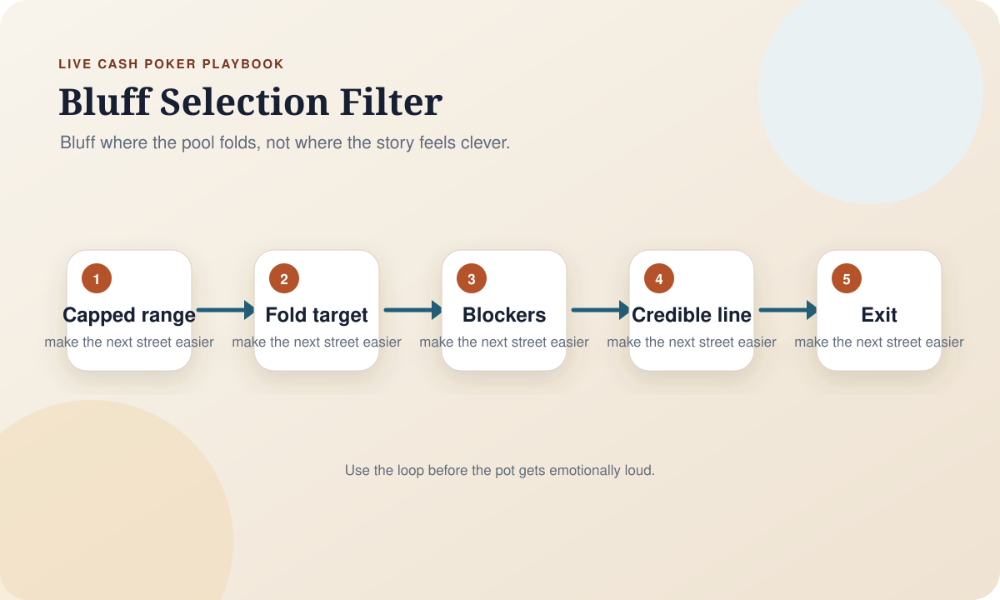
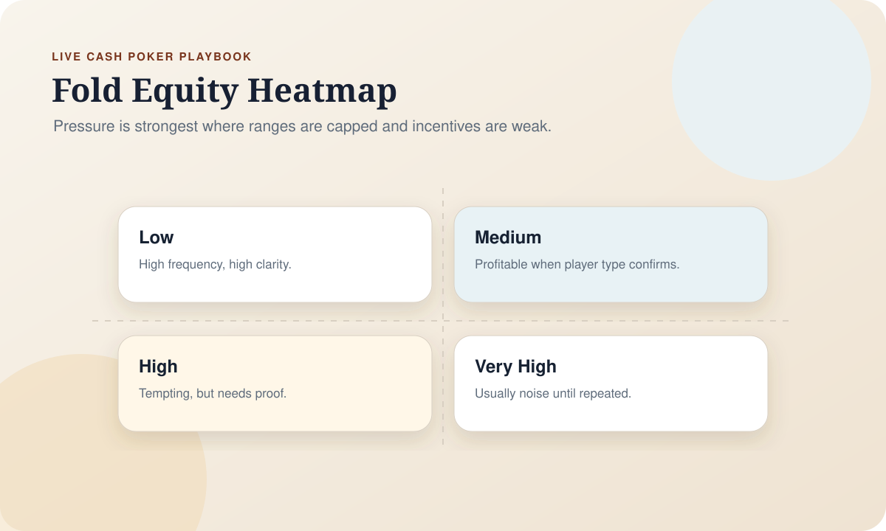
Actual lesson: The central lesson is not to bluff more; it is to bluff where ranges are capped, players can fold, and your story threatens believable future pressure. Best default: Bluff heads-up against capped ranges and fold-capable opponents; give up against sticky players, multiway fields, and runouts that improve the calling range. Most common leak: Using sophisticated blocker language to justify pressure against people who came to call. A representative mined spot puts the idea into action: Use position to simplify decisions and pressure weaker ranges [E1].
The table-facing question for this chapter is simple: Before bluffing, ask: what better hands fold, and why would this opponent release them today? If the answer is vague, the hand is probably being driven by curiosity, fear, or autopilot rather than by a clean live-cash edge. The purpose of the chapter is to make that answer specific enough to use while chips are moving, not to admire the concept from a safe distance after the session.
These are not claims about perfect equilibrium play. They are the best low-stakes live-cash defaults to try first, then adjust when the table gives you better evidence.
Who should I bluff? Bluff players who can fold and arrive with capped ranges. Do not bluff the player whose main mistake is curiosity calling. This answer is not meant as a universal law; it is the starting line supported by the repeated evidence in this chapter [E1].
When do blockers matter? After the target, story, and fold equity already make sense. Blockers improve a good bluff; they do not rescue a bad one. This answer is not meant as a universal law; it is the starting line supported by the repeated evidence in this chapter [E2].
Why avoid multiway bluffs? Each extra caller lowers fold equity and adds someone who connected enough to continue. Low-stakes multiway pots are usually value territory. This answer is not meant as a universal law; it is the starting line supported by the repeated evidence in this chapter [E3].
The practical sequence is question, default, exception, review. Ask the question before the action, use the default when the table is ordinary, require evidence for the exception, and review the decision by whether that evidence was real.
The operating model is: The central lesson is not to bluff more; it is to bluff where ranges are capped, players can fold, and your story threatens believable future pressure. That model only becomes useful when fold equity, blockers, capped ranges, and credible story become concrete table actions. The mined examples cluster around Position creates decision leverage, Discipline over curiosity, and Initiative simplifies the hand, so the player should not chase a single dramatic quote. It should teach the repeatable pattern: Bluff heads-up against capped ranges and fold-capable opponents; give up against sticky players, multiway fields, and runouts that improve the calling range. The warning sign is equally concrete: Using sophisticated blocker language to justify pressure against people who came to call. The player should keep returning to one question under pressure: Before bluffing, ask: what better hands fold, and why would this opponent release them today? [E1]
This is not trying to solve poker from first principles or make a balanced-game claim about every possible opponent. It is translating repeated live-cash evidence into a starting line that beats the games most readers actually sit in. The default can be overridden, but only after a player earns the override with specific reads, specific prices, and a specific reason the current opponent differs from the pool.
Bluffing is profitable in live cash when the target is right, not when the story is clever. Players fold most often when their range is capped, the pot is heads-up, the board pressures their bluff-catchers, and the opponent is actually capable of releasing a hand. A representative mined decision points in the same direction: Use position to simplify decisions and pressure weaker ranges [E1].
The pool punishes fancy bluffs into sticky personalities, multiway pots, and runouts that improve the calling range. The exploit is not to abandon bluffing. It is to move bluffs away from ego and toward nodes where fold equity is observable.
Across Crush Live Poker, Hungry Horse Poker, and Live Poker Guide, the shared lesson is not merely that bluffing where the pool actually folds matters. The shared lesson is operational: Bluff heads-up against capped ranges and fold-capable opponents; give up against sticky players, multiway fields, and runouts that improve the calling range. The repeated themes are Position creates decision leverage, Discipline over curiosity, and Initiative simplifies the hand, which all point toward the same table habit. The main disagreement is usually not about the destination; it is about the route. One source may teach the spot through sizing, another through player type, and another through discipline or hand selection. Those differences are useful only when they sharpen the table question: Before bluffing, ask: what better hands fold, and why would this opponent release them today?
Crush Live Poker contributes hand reading, line construction, bet sizing, and river discipline; in this chapter its clearest mined example points to Position creates decision leverage, with the decision: Use position to simplify decisions and pressure weaker ranges [E1].
Hungry Horse Poker contributes exploitative systems, pro-versus-amateur thinking, and pressure against capped ranges; in this chapter its clearest mined example points to Position creates decision leverage, with the decision: Use position to simplify decisions and pressure weaker ranges [E2].
Live Poker Guide contributes $1/$2 and $1/$3 execution, session habits, and clear defaults for loose splashy games; in this chapter its clearest mined example points to Position creates decision leverage, with the decision: Use position to simplify decisions and pressure weaker ranges [E3].
The synthesis for the reader is therefore practical rather than decorative. Use the agreement as the default, use the source-specific emphasis as a diagnostic lens, and watch for the leak: Using sophisticated blocker language to justify pressure against people who came to call. If multiple sources arrive at the same default from different angles, the recommendation deserves more weight than a single isolated hand.
Case study first: in Poker Strategy: What's The Best Line To Take As A Bluff? from Crush Live Poker, the usable lesson is not the surface drama of the hand. It is the decision shape. The card records the key decision as: Use position to simplify decisions and pressure weaker ranges The strategic takeaway is Position lets you realize equity, control pot size, and gather more information before committing money. [E1]. In practice, this means the reader should pause before asking, 'Can I win this pot?' and ask the better live-cash question: 'What does this action usually represent from this player type, at this size, in this room?' The answer will not always be comfortable, but it will usually be more profitable than treating the spot as a puzzle designed to reward bravery.
Case study second: in The 9 Biggest Mistakes Low Stakes Poker Pros Make from Hungry Horse Poker, the usable lesson is not the surface drama of the hand. It is the decision shape. The card records the key decision as: Use position to simplify decisions and pressure weaker ranges The strategic takeaway is Position lets you realize equity, control pot size, and gather more information before committing money. [E2]. In practice, this means the reader should pause before asking, 'Can I win this pot?' and ask the better live-cash question: 'What does this action usually represent from this player type, at this size, in this room?' The answer will not always be comfortable, but it will usually be more profitable than treating the spot as a puzzle designed to reward bravery.
Case study third: in How to Use GTO Wizard For Free! (Tutorial) from Live Poker Guide, the usable lesson is not the surface drama of the hand. It is the decision shape. The card records the key decision as: Use position to simplify decisions and pressure weaker ranges The strategic takeaway is Position lets you realize equity, control pot size, and gather more information before committing money. [E3]. In practice, this means the reader should pause before asking, 'Can I win this pot?' and ask the better live-cash question: 'What does this action usually represent from this player type, at this size, in this room?' The answer will not always be comfortable, but it will usually be more profitable than treating the spot as a puzzle designed to reward bravery.
Case study fourth: in (Poker Strategy) Bluffing Monotone Boards in 3 Bet Pots from Crush Live Poker, the usable lesson is not the surface drama of the hand. It is the decision shape. The card records the key decision as: Stay patient and choose aggressive spots instead of forcing action The strategic takeaway is The pool rewards patience more than curiosity, so folding marginal hands and waiting for clearer edges preserves win rate. [E4]. In practice, this means the reader should pause before asking, 'Can I win this pot?' and ask the better live-cash question: 'What does this action usually represent from this player type, at this size, in this room?' The answer will not always be comfortable, but it will usually be more profitable than treating the spot as a puzzle designed to reward bravery.
Case study fifth: in Why 'Good' Poker Players Actually Suck (And How to Beat Them) from Hungry Horse Poker, the usable lesson is not the surface drama of the hand. It is the decision shape. The card records the key decision as: Use position to simplify decisions and pressure weaker ranges The strategic takeaway is Position lets you realize equity, control pot size, and gather more information before committing money. [E5]. In practice, this means the reader should pause before asking, 'Can I win this pot?' and ask the better live-cash question: 'What does this action usually represent from this player type, at this size, in this room?' The answer will not always be comfortable, but it will usually be more profitable than treating the spot as a puzzle designed to reward bravery.
Taken together, these case studies make the chapter less dependent on a single hand. They show how bluffing where the pool actually folds keeps returning as a repeatable decision problem: the player has some information, the pool has a recognizable tendency, and the profitable line asks the player to trust the pattern without becoming rigid. That is the balance the rest of the chapter keeps returning to.
Use these as supporting margin notes, not as the main lesson. The teaching has already been synthesized above; these notes show which mined spots supplied the pressure points.
Synthesis note: In bluffing where the pool actually folds, the examples matter because they keep pointing to the same habit: make the profitable default obvious before the hand invites ego, curiosity, or fancy-play syndrome.
Key lesson: Good bluffing can mean bluffing less often overall. The goal is not to prove courage. It is to concentrate pressure where folds actually happen: capped ranges, heads-up pots, credible runouts, and opponents with a fold button. [E4]
This is why the advice can feel wrong while being profitable. The player may leave the table with fewer cinematic stories, but the win rate comes from the unglamorous decisions that repeat: cleaner preflop entries, better seats, more precise value, fewer curiosity calls, and bluffs aimed at players who can actually fold. The lesson is not to become timid. It is to reserve aggression, curiosity, and deviation for spots where the evidence says they earn money.
The chapter's closing model is deliberately plain. Start with the chapter concept, identify the live-pool leak, match the leak to the line, then ask what evidence would justify a deviation. That four-part habit keeps bluffing where the pool actually folds from becoming either a slogan or a superstition. It also protects the reader from the most common failure mode in low-stakes live cash: knowing the right adjustment away from the table and then talking oneself out of it when the pot gets large [E1].
The reader should leave the chapter with a practical bias, not a rigid script. In ordinary games, the bias is to trust source-backed population evidence before trusting adrenaline. In unusual games, the bias is to update quickly when opponents prove they are different. The money is made in that middle ground, where the player is disciplined enough to use defaults and attentive enough to notice when a default no longer applies.
| Evidence | Channel | Video | Segment | Time | Theme | Decision | Isolated Lesson | Transcript Note | Confidence |
|---|---|---|---|---|---|---|---|---|---|
| E1 | Crush Live Poker | Poker Strategy: What's The Best Line To Take As A Bluff? | seg_afe417cfc925 | 06:24-06:59 | Position creates decision leverage | Use position to simplify decisions and pressure weaker ranges | Position lets you realize equity, control pot size, and gather more information before committing money. | Raw transcript omitted from final prose; use the timestamped source segment for review. | 0.91 |
| E2 | Hungry Horse Poker | The 9 Biggest Mistakes Low Stakes Poker Pros Make | seg_36082f3a5afd | 14:41-15:15 | Position creates decision leverage | Use position to simplify decisions and pressure weaker ranges | Position lets you realize equity, control pot size, and gather more information before committing money. | finally back to our handy dandy little chart mistake number three when bluffing uncapped ranges is bluffing villains in uncapped ranges i... | 0.92 |
| E3 | Live Poker Guide | How to Use GTO Wizard For Free! (Tutorial) | seg_0e73349c8553 | 01:32-02:12 | Position creates decision leverage | Use position to simplify decisions and pressure weaker ranges | Position lets you realize equity, control pot size, and gather more information before committing money. | restrictions but if you're clever you can still get a lot out of them so the first tool is the spot study analyzer how I call it I don't... | 0.91 |
| E4 | Crush Live Poker | (Poker Strategy) Bluffing Monotone Boards in 3 Bet Pots | seg_95c96f95812e | 12:05-13:11 | Discipline over curiosity | Stay patient and choose aggressive spots instead of forcing action | The pool rewards patience more than curiosity, so folding marginal hands and waiting for clearer edges preserves win rate. | the time and I don't know if a jam is gonna work so I tend to play this spot cautiously if you are gonna cautiously if you are gonna Bluf... | 0.74 |
| E5 | Hungry Horse Poker | Why 'Good' Poker Players Actually Suck (And How to Beat Them) | seg_6178c96379ca | 16:31-17:06 | Position creates decision leverage | Use position to simplify decisions and pressure weaker ranges | Position lets you realize equity, control pot size, and gather more information before committing money. | here which means getting to the river they just don't have enough Bluffs so we should be overfolded all right we talked about spots we to... | 0.91 |
| E6 | Live Poker Guide | Use This EXPLOIT to Win MORE at No Limit Hold'em! | seg_8fb935ebdfb8 | 10:05-10:54 | Position creates decision leverage | Use position to simplify decisions and pressure weaker ranges | Position lets you realize equity, control pot size, and gather more information before committing money. | mode everyone checks again and now on the river the king pairs again and I'm the river the king pairs again and I'm thinking no one proba... | 0.59 |
| E7 | Crush Live Poker | Poker Strategy: Slowplaying The Turn With KK | seg_b2371eb2cf2d | 08:25-09:08 | Discipline over curiosity | Stay patient and choose aggressive spots instead of forcing action | The pool rewards patience more than curiosity, so folding marginal hands and waiting for clearer edges preserves win rate. | from trying to bluff me because I'm staining too much strength but I can use my hand reading skills to basically my hand reading skills t... | 0.74 |
| E8 | Hungry Horse Poker | The 9 Biggest Mistakes Low Stakes Poker Pros Make | seg_aed4cadf9ab4 | 31:08-31:46 | Thin value is your salary | Choose the thinnest profitable value bet instead of checking back | Thin value bets are a major source of steady live-cash profit because worse hands call too often. | Raw transcript omitted from final prose; use the timestamped source segment for review. | 0.93 |
| E9 | Live Poker Guide | The Stephen King Method for Easy Poker Wins | seg_69866d2f66a6 | 05:12-06:27 | Position creates decision leverage | Use position to simplify decisions and pressure weaker ranges | Position lets you realize equity, control pot size, and gather more information before committing money. | river is a brick we can now go for the overbed jam on the river unless he has a set or trips he will have an incredibly hard time to call... | 0.92 |
| E10 | Crush Live Poker | Did this Poker Celebrity Make Multiple Mistakes? | seg_a5c58a0e9ded | 09:14-09:58 | Discipline over curiosity | Stay patient and choose aggressive spots instead of forcing action | The pool rewards patience more than curiosity, so folding marginal hands and waiting for clearer edges preserves win rate. | with one card to come and if there was ever F Equity you could possibly make a semi Bluff here if you read him as weak I probably would h... | 0.67 |
| E11 | Hungry Horse Poker | Don't Make These 5 Bluffing MISTAKES | seg_d17f9956b6b6 | 09:09-09:47 | Position creates decision leverage | Use position to simplify decisions and pressure weaker ranges | Position lets you realize equity, control pot size, and gather more information before committing money. | either the turn or the river number three the third bad spot to Bluff in live poker when the spr is low so we live poker when the spr is... | 0.92 |
| E12 | Live Poker Guide | How To Win at 1/2 and 1/3 Live Without Having the Best Hand | seg_50867435aa8b | 13:56-14:55 | Selective aggression creates clean EV | Stay patient and choose aggressive spots instead of forcing action | Aggression is strongest when tied to range advantage and fold equity rather than boredom. | We could call, but I don't think that our third pair is ever good here because he's not bluffing in the spot. | 0.57 |
| E13 | Crush Live Poker | Can You Fold Kings Here? $5/$10/$25 MGM Hand Breakdown | seg_f619aea7293b | 10:18-11:33 | Position creates decision leverage | Use position to simplify decisions and pressure weaker ranges | Position lets you realize equity, control pot size, and gather more information before committing money. | multi-way pots now maybe the guy is but I'm just saying by the way this is why I told the caller Haiti right that it's an easier check on... | 0.91 |
| E14 | Hungry Horse Poker | The 9 Biggest Mistakes Low Stakes Poker Pros Make | seg_bf3036c911a4 | 04:56-05:34 | Leverage comes from range and position | Use position to simplify decisions and pressure weaker ranges | The ability to apply pressure comes from who acts last and whose range can credibly represent strength. | just checking back and taking our non-existent Showdown value in this spot because of the way the hand play out we really don't beat anyt... | 0.75 |
| E15 | Live Poker Guide | The 5 Poker Leaks Killing Your Win Rate (Fix Them Now!) | seg_42027e73fb5b | 07:00-08:02 | Position creates decision leverage | Use position to simplify decisions and pressure weaker ranges | Position lets you realize equity, control pot size, and gather more information before committing money. | a Twist here is a spot where this happens a player in Middle position happens a player in Middle position raises to $10 and our hero call... | 0.67 |
| E16 | Crush Live Poker | PLO Poker Strategy: What Is Our Equity Vs Two Players? | seg_d82d6b1f4094 | 07:36-08:33 | Position creates decision leverage | Use position to simplify decisions and pressure weaker ranges | Position lets you realize equity, control pot size, and gather more information before committing money. | be if depending on what's out there it might be a dead fifty-fifty if he if you were just up against dry jacks with no blockers to any ot... | 0.45 |
| E17 | Hungry Horse Poker | Here's Why Your Bluffs Aren't Working | seg_3b613f2316f4 | 09:37-10:15 | Leverage comes from range and position | Use position to simplify decisions and pressure weaker ranges | The ability to apply pressure comes from who acts last and whose range can credibly represent strength. | able to win a massive pot anyway if we're in this same spot on the turn with 54 of diamonds where we've got a 54 of diamonds where we've... | 0.74 |
| E18 | Live Poker Guide | How To Navigate to a Win at 1/2 and 1/3 Live Poker! | seg_7620660b36c9 | 04:16-05:13 | Position creates decision leverage | Use position to simplify decisions and pressure weaker ranges | Position lets you realize equity, control pot size, and gather more information before committing money. | Ace4, A6, any two pair that he might have. | 0.84 |
| E19 | Crush Live Poker | Flopping Top Set in a Multiway 3 Bet Pot | seg_a703f0d9d9ed | 10:49-11:23 | Initiative simplifies the hand | Use position to simplify decisions and pressure weaker ranges | Keeping the betting lead forces passive live opponents to reveal the strength of their ranges. | cold-called in between but I wouldn't really be really have a leading range in this particular spot because it's not this particular spot... | 0.64 |
| E20 | Hungry Horse Poker | What High Stakes Pros Know That Low Stakes Players Don’t (Round 2) | seg_e4c678da0cc2 | 28:03-28:51 | Initiative simplifies the hand | Use position to simplify decisions and pressure weaker ranges | Keeping the betting lead forces passive live opponents to reveal the strength of their ranges. | the turn I thought was pretty cool just to keep villain's range wider getting to the river and villen actually did fold here on this Rive... | 0.82 |
| E21 | Live Poker Guide | Poker Coaches Are Lying to You (The Truth About Winning at Live Poker) | seg_eb8aa225f3a1 | 05:02-05:57 | Discipline over curiosity | Stay patient and choose aggressive spots instead of forcing action | The pool rewards patience more than curiosity, so folding marginal hands and waiting for clearer edges preserves win rate. | in a certain spot what hands to call within others and what your pot odds are when villain bets half pot you have to when villain bets ha... | 0.67 |
| E22 | Crush Live Poker | Don’t Be This Villain – Avoid This Painful Poker Blunder! | seg_f14a676c83f3 | 14:32-15:17 | Position creates decision leverage | Use position to simplify decisions and pressure weaker ranges | Position lets you realize equity, control pot size, and gather more information before committing money. | the middle instead of going bet bet bet or something that small small small is that my perceived range is Queen plus and it's just hard t... | 0.91 |
| E23 | Hungry Horse Poker | When to Turn Bluff Catchers Into BLUFFS (Simple Guide) | seg_bb367e066571 | 16:04-16:38 | Bluff-catching is usually overrated | Respond to river aggression with population-aware discipline | Bluff-catching is overrated when the pool rarely arrives on the river with enough bluffs. | Raw transcript omitted from final prose; use the timestamped source segment for review. | 0.82 |
| E24 | Live Poker Guide | 5 Poker Myths That Keep Your Win Rate Low! | seg_f52aaa3e717a | 04:58-05:36 | Selective aggression creates clean EV | Stay patient and choose aggressive spots instead of forcing action | Aggression is strongest when tied to range advantage and fold equity rather than boredom. | check to the aggressor but old school players will often don't small in this spot the thinking goes I want to find out if my weak top pai... | 0.60 |
| E25 | Crush Live Poker | Poker Strategy: Straight Draw Rivers Top Pair And Faces Tiny Bet | seg_95a2d64c5406 | 04:59-05:58 | Position creates decision leverage | Use position to simplify decisions and pressure weaker ranges | Position lets you realize equity, control pot size, and gather more information before committing money. | type of hand there's also a possibility here that you could cooler somebody with a 9 so if this guy actually flopped 910 if the big blind... | 0.91 |
| E26 | Hungry Horse Poker | Don't Make These 5 Bluffing MISTAKES | seg_d82a20302c4a | 03:08-03:58 | Initiative simplifies the hand | Use position to simplify decisions and pressure weaker ranges | Keeping the betting lead forces passive live opponents to reveal the strength of their ranges. | this spot how do we make it profitable to Bluff so starting from the Flop this is going to be one of my exceptions and it's going to be o... | 0.81 |
| E27 | Live Poker Guide | High Stakes Players Make the Same Mistakes As YOU! | seg_3b4ced96aa7f | 05:11-06:36 | Position creates decision leverage | Use position to simplify decisions and pressure weaker ranges | Position lets you realize equity, control pot size, and gather more information before committing money. | cupboard because I think this should have been an easy value bet here on the river next hand doesn't involve Andreas for a change we have... | 0.93 |
| E28 | Crush Live Poker | Think You’re Playing the Nuts Right? Think Again | seg_07b6aadfbe3a | 11:00-11:47 | Discipline over curiosity | Stay patient and choose aggressive spots instead of forcing action | The pool rewards patience more than curiosity, so folding marginal hands and waiting for clearer edges preserves win rate. | Raw transcript omitted from final prose; use the timestamped source segment for review. | 0.74 |
| E29 | Hungry Horse Poker | 95% of Pots Are Multiway (The System That Fixes Your Winrate) | seg_354d4dbde870 | 30:57-31:23 | Initiative simplifies the hand | Use position to simplify decisions and pressure weaker ranges | Keeping the betting lead forces passive live opponents to reveal the strength of their ranges. | And now we can put Queen X in a spot that it didn't want to play which is why Queen X didn't want to bet on the flop cuz Queen X doesn't... | 0.81 |
| E30 | Live Poker Guide | How To Maximally Exploit Recreational Players at 1/3 Live Poker | seg_f2c3a8fafdac | 09:05-09:54 | Position creates decision leverage | Use position to simplify decisions and pressure weaker ranges | Position lets you realize equity, control pot size, and gather more information before committing money. | will have to fold because he just doesn't have any bluffs at this point. | 0.93 |
| E31 | Crush Live Poker | Big Bets, Blockers, and Board Texture. Oh My! | seg_3a3269418328 | 00:53-01:53 | Position creates decision leverage | Use position to simplify decisions and pressure weaker ranges | Position lets you realize equity, control pot size, and gather more information before committing money. | and I do remember this is actually a not as simple but it's a quick little spot so we'll we'll talk about how how to think about this oka... | 0.67 |
| E32 | Hungry Horse Poker | 99% of Players FAIL This Poker IQ Test | seg_4fa01add53ea | 36:36-37:20 | Position creates decision leverage | Use position to simplify decisions and pressure weaker ranges | Position lets you realize equity, control pot size, and gather more information before committing money. | river we're going to check and our opponent goes 180 into 242 on this River so once again we are playing against a solid rag who triple B... | 0.91 |
| E33 | Live Poker Guide | How to Study for Live Poker that it Feels ILLEGAL | seg_f44de8040c1e | 01:41-02:42 | Sizing reveals real intent | Interpret sizing as a live tell and adjust exploitatively | Bet sizing often communicates live intent directly enough to justify disciplined exploitative adjustments. | it designed to tackle the unique challenges of multi-way pots oversized pre flop raises and tricky spots you pre flop raises and tricky s... | 0.81 |
| E34 | Crush Live Poker | Is Mike Postle Cheating at Pot Limit Hi/Low? (PLO8 training video) | seg_3de272c39f85 | 26:27-27:07 | Position creates decision leverage | Use position to simplify decisions and pressure weaker ranges | Position lets you realize equity, control pot size, and gather more information before committing money. | especially if he has position he can just pot pot it and he's got the second he's got one heat in this particular hand he's got the first... | 0.66 |
| E35 | Hungry Horse Poker | Don't Make These 5 Bluffing MISTAKES | seg_c52cf8a957c5 | 11:41-12:16 | Leverage comes from range and position | Use position to simplify decisions and pressure weaker ranges | The ability to apply pressure comes from who acts last and whose range can credibly represent strength. | Raw transcript omitted from final prose; use the timestamped source segment for review. | 0.91 |
| E36 | Live Poker Guide | These 3 Poker LEAKS DESTROY Your Win Rate! | seg_28493eed3c81 | 07:51-08:39 | Initiative simplifies the hand | Use position to simplify decisions and pressure weaker ranges | Keeping the betting lead forces passive live opponents to reveal the strength of their ranges. | small they are capable of bluffing and therefore we think that they are capable of bluffing in this spot as well but that's just not the... | 0.81 |
| E37 | Crush Live Poker | Should I Keep Bluffing Here… or Shut It Down? | seg_8ddcd6913ec9 | 16:28-17:12 | Discipline over curiosity | Stay patient and choose aggressive spots instead of forcing action | The pool rewards patience more than curiosity, so folding marginal hands and waiting for clearer edges preserves win rate. | >> So let's say you check and he checks behind. | 0.59 |
| E38 | Hungry Horse Poker | I’ll Tell You My Exact Strategy. You Still Can’t Exploit Me | seg_a17ca7eefdcf | 09:56-10:24 | Position creates decision leverage | Use position to simplify decisions and pressure weaker ranges | Position lets you realize equity, control pot size, and gather more information before committing money. | So, we're just going to have much more profitable bluffing opportunities across turns and rivers. | 0.91 |
| E39 | Live Poker Guide | 5 Common BLUNDERS You Might Be Making - Find Out Now | seg_ec64445f0ac3 | 09:21-10:09 | Selective aggression creates clean EV | Stay patient and choose aggressive spots instead of forcing action | Aggression is strongest when tied to range advantage and fold equity rather than boredom. | behind and he indeed had the pocket nines here so as I said I think this nines here so as I said I think this would have been a great opp... | 0.52 |
| E40 | Crush Live Poker | Poker Strategy: Fastplaying a Turned Full House | seg_0b2c34d36e96 | 05:04-05:44 | Position creates decision leverage | Use position to simplify decisions and pressure weaker ranges | Position lets you realize equity, control pot size, and gather more information before committing money. | Raw transcript omitted from final prose; use the timestamped source segment for review. | 0.92 |
| E41 | Hungry Horse Poker | Top 5 Spots to BLUFF in Live Poker | seg_80b545546acd | 05:19-05:56 | Position creates decision leverage | Use position to simplify decisions and pressure weaker ranges | Position lets you realize equity, control pot size, and gather more information before committing money. | Raw transcript omitted from final prose; use the timestamped source segment for review. | 0.91 |
| E42 | Live Poker Guide | 10 Years of Live Poker Advice in 3 hours - Everything I know! | seg_98f6c0b12300 | 02:20:52-02:21:41 | Position creates decision leverage | Use position to simplify decisions and pressure weaker ranges | Position lets you realize equity, control pot size, and gather more information before committing money. | goes for the triple barrel bluff. | 0.92 |
| E43 | Crush Live Poker | Tom Dwan calls with 9 high at $200/$400 No Limit Hold'em | seg_7e9d7f72e9c4 | 05:43-06:44 | Selective aggression creates clean EV | Stay patient and choose aggressive spots instead of forcing action | Aggression is strongest when tied to range advantage and fold equity rather than boredom. | to the turn now what ends up happening here on the turn is very very important for this entire hand lucky is going to for this entire han... | 0.75 |
| E44 | Hungry Horse Poker | This Secret Turns Poker Players Into CRUSHERS | seg_5c8d386b40af | 22:39-23:08 | Position creates decision leverage | Use position to simplify decisions and pressure weaker ranges | Position lets you realize equity, control pot size, and gather more information before committing money. | opponent goes big well they're just screaming I have a strong hand right I screaming I have a strong hand right I have Ace Queen I have Q... | 0.59 |
| E45 | Live Poker Guide | Fix These Mistakes And You’ll Crush 1/2 and 1/3 Live! | seg_8f97407cc250 | 08:12-08:45 | Position creates decision leverage | Use position to simplify decisions and pressure weaker ranges | Position lets you realize equity, control pot size, and gather more information before committing money. | said, this next mistake is a big bankroll killer, but with a simple rule, you can completely avoid it. | 0.92 |
| E46 | Crush Live Poker | We Have no Bluffs in a Poker Hand, can we Bet? | seg_5f5e2c2d4043 | 09:02-10:03 | Position creates decision leverage | Use position to simplify decisions and pressure weaker ranges | Position lets you realize equity, control pot size, and gather more information before committing money. | Nidhi maybe he called with an overpair pre that didn't three bad off but even but Jax does Jax really bet on the turn so it's bet on the... | 0.74 |
| E47 | Hungry Horse Poker | 99% of Players FAIL This Poker IQ Test | seg_c2e66ef96361 | 17:35-18:06 | Initiative simplifies the hand | Use position to simplify decisions and pressure weaker ranges | Keeping the betting lead forces passive live opponents to reveal the strength of their ranges. | where our opponent would fold top pair or something that we're not really worried about maximizing value from worried about maximizing va... | 0.76 |
| E48 | Live Poker Guide | These 4 Plays Will Skyrocket Your Win Rate at Live Poker! | seg_97b10bbe1aef | 05:53-07:01 | Position creates decision leverage | Use position to simplify decisions and pressure weaker ranges | Position lets you realize equity, control pot size, and gather more information before committing money. | miss this one and it even shows you how to Bluff successfully at live low stakes but before we continue please smash that button button i... | 0.92 |
| E49 | Crush Live Poker | Pocket Aces Get Tricky. Did I Blow It? | seg_f1d7167af4ab | 01:30-02:05 | Selective aggression creates clean EV | Stay patient and choose aggressive spots instead of forcing action | Aggression is strongest when tied to range advantage and fold equity rather than boredom. | Raw transcript omitted from final prose; use the timestamped source segment for review. | 0.57 |
| E50 | Hungry Horse Poker | 99% of Players FAIL This Poker IQ Test | seg_ccea4d58d9fa | 23:22-23:50 | Discipline over curiosity | Stay patient and choose aggressive spots instead of forcing action | The pool rewards patience more than curiosity, so folding marginal hands and waiting for clearer edges preserves win rate. | some really nice blocking properties don't to go too overboard with the blockers because I think they're blockers because I think they're... | 0.81 |
| E51 | Live Poker Guide | How to Easily Tell Your Opponent Is Bluffing at 1/2 & 1/3 | seg_930a68a5a42c | 00:27-01:05 | Position creates decision leverage | Use position to simplify decisions and pressure weaker ranges | Position lets you realize equity, control pot size, and gather more information before committing money. | using your chin to spot bluffs and increase your win rate. | 0.74 |
| E52 | Crush Live Poker | Poker Folding the 3nd nuts? ($5000 pot) | seg_03146d7d167e | 03:55-04:40 | Position creates decision leverage | Use position to simplify decisions and pressure weaker ranges | Position lets you realize equity, control pot size, and gather more information before committing money. | Raw transcript omitted from final prose; use the timestamped source segment for review. | 0.74 |
| E53 | Hungry Horse Poker | $100/hr at Low Stakes? High Stakes CRUSHER Weighs In | Ep 11 | seg_f32c22588389 | 15:23-16:01 | Position creates decision leverage | Use position to simplify decisions and pressure weaker ranges | Position lets you realize equity, control pot size, and gather more information before committing money. | Raw transcript omitted from final prose; use the timestamped source segment for review. | 0.75 |
| E54 | Live Poker Guide | I Tried Splitsuit's Live Cash Game Workbook (Honest Review!) | seg_152d07a1175b | 04:35-05:31 | Discipline over curiosity | Stay patient and choose aggressive spots instead of forcing action | The pool rewards patience more than curiosity, so folding marginal hands and waiting for clearer edges preserves win rate. | Raw transcript omitted from final prose; use the timestamped source segment for review. | 0.91 |
| E55 | Crush Live Poker | Poker Strategy: 86dd Flops A Combo Draws vs Two Players | seg_19fb7f3a2b31 | 10:53-11:38 | Discipline over curiosity | Stay patient and choose aggressive spots instead of forcing action | The pool rewards patience more than curiosity, so folding marginal hands and waiting for clearer edges preserves win rate. | the 3 came I felt it wasn't a good card to jam but then I was just stuck in that weird spots where I was I have what's the better play on... | 0.74 |
| E56 | Hungry Horse Poker | 2 simple tricks to crush recreational poker players | seg_5d83a1cdabe2 | 04:54-05:21 | Initiative simplifies the hand | Use position to simplify decisions and pressure weaker ranges | Keeping the betting lead forces passive live opponents to reveal the strength of their ranges. | what's the goal of our hand where we want to maximize fold equity. | 0.75 |
| E57 | Live Poker Guide | LEARN THIS To Increase Your WIN RATE! | seg_abab296b1366 | 00:02-01:06 | Position creates decision leverage | Use position to simplify decisions and pressure weaker ranges | Position lets you realize equity, control pot size, and gather more information before committing money. | hello poker enthusiasts there is one skill in no limit hold them that nobody really talks about but it can increase really talks about bu... | 0.84 |
| E58 | Crush Live Poker | Navigating Poker Minefields To WIN More and Avoid BIG Losses | seg_7ffb1a1a2339 | 05:52-07:06 | Position creates decision leverage | Use position to simplify decisions and pressure weaker ranges | Position lets you realize equity, control pot size, and gather more information before committing money. | said I would not usually find myself in this spot MH because I probably wouldn't check the Flop all that much with the check the Flop all... | 0.67 |
| E59 | Hungry Horse Poker | Why 'Good' Poker Players Actually Suck (And How to Beat Them) | seg_c2a2d78338cf | 19:44-19:57 | Discipline over curiosity | Stay patient and choose aggressive spots instead of forcing action | The pool rewards patience more than curiosity, so folding marginal hands and waiting for clearer edges preserves win rate. | board but the thing is our opponent's range is almost all very strong hands so in the spot where they are under in the spot where they ar... | 0.57 |
| E60 | Live Poker Guide | How to Beat Loose and Wild Live Poker Games | seg_c330a02505fc | 02:43-03:39 | Position creates decision leverage | Use position to simplify decisions and pressure weaker ranges | Position lets you realize equity, control pot size, and gather more information before committing money. | The flop comes Ace75 with two spades. | 0.66 |
| E61 | Crush Live Poker | Do NOT Fall for This Dirty Poker Betting Trick! (Angle Exposed) | seg_f3db457a70df | 00:42-01:24 | Selective aggression creates clean EV | Stay patient and choose aggressive spots instead of forcing action | Aggression is strongest when tied to range advantage and fold equity rather than boredom. | 500 Max buy yep right and how deep are you in this hand me I'm 800 okay so why don't you run through the hand for why don't you run throu... | 0.78 |
| E62 | Hungry Horse Poker | I Gave a Weekend Warrior and a Full Time Pro the Same 5 Hands | seg_5e53f33a11a2 | 04:57-05:42 | Position creates decision leverage | Use position to simplify decisions and pressure weaker ranges | Position lets you realize equity, control pot size, and gather more information before committing money. | goes all in for 650 American. | 0.91 |
| E63 | Live Poker Guide | You Don’t Need Fancy Plays—Just Do This to Win at Live Poker! | seg_6815c1b503e0 | 03:00-03:43 | Position creates decision leverage | Use position to simplify decisions and pressure weaker ranges | Position lets you realize equity, control pot size, and gather more information before committing money. | One who plays too many hands, calls too much and bluffs too little. | 0.83 |
| E64 | Crush Live Poker | Making Big FOLDS at Small Stakes Poker?????? | seg_a6d225e2eef4 | 13:16-14:10 | Discipline over curiosity | Stay patient and choose aggressive spots instead of forcing action | The pool rewards patience more than curiosity, so folding marginal hands and waiting for clearer edges preserves win rate. | somebody be doing that when they're protecting a set or two pair I think protecting a set or two pair I think that's out the window and t... | 0.66 |
| E65 | Hungry Horse Poker | Most Players Use This Bet Size... It's KILLING Your Win Rate | seg_d2b2dddd0a4d | 07:50-08:26 | Position creates decision leverage | Use position to simplify decisions and pressure weaker ranges | Position lets you realize equity, control pot size, and gather more information before committing money. | we had aces trying to get called by a hand kings, queens, jacks. | 0.85 |
| E66 | Live Poker Guide | 10 Years of Live Poker Advice in 3 hours - Everything I know! | seg_d0b415ad3103 | 01:01:47-01:02:34 | Thin value is your salary | Choose the thinnest profitable value bet instead of checking back | Thin value bets are a major source of steady live-cash profit because worse hands call too often. | And this is exactly why most players would happily check back in this spot. | 0.82 |
| E67 | Crush Live Poker | How to Beat Low Stakes Poker | seg_4ec7ddd625e4 | 52:18-53:10 | Discipline over curiosity | Stay patient and choose aggressive spots instead of forcing action | The pool rewards patience more than curiosity, so folding marginal hands and waiting for clearer edges preserves win rate. | bluffing this type of holding but on this texture it would be very very bad number one for the reasons I talked number one for the reason... | 0.60 |
| E68 | Hungry Horse Poker | 10 Mistakes Keeping Players Stuck at Low Stakes | seg_5b3cd5ee1bda | 22:32-23:08 | Position creates decision leverage | Use position to simplify decisions and pressure weaker ranges | Position lets you realize equity, control pot size, and gather more information before committing money. | lot of fold equity because our opponent's stab big. | 0.67 |
| E69 | Live Poker Guide | If You Want to Crush 1/2 in 2026, Fix These 5 Leaks | seg_f8b446709003 | 07:29-08:13 | Initiative simplifies the hand | Use position to simplify decisions and pressure weaker ranges | Keeping the betting lead forces passive live opponents to reveal the strength of their ranges. | original razer now bets a bit bigger. | 0.82 |
| E70 | Crush Live Poker | How to Tackle Multiway Madness in Live Poker | seg_4a010302fd96 | 05:58-06:40 | Position creates decision leverage | Use position to simplify decisions and pressure weaker ranges | Position lets you realize equity, control pot size, and gather more information before committing money. | Raw transcript omitted from final prose; use the timestamped source segment for review. | 0.60 |
| E71 | Hungry Horse Poker | 95% of Pots Are Multiway (The System That Fixes Your Winrate) | seg_426593900f46 | 15:03-15:43 | Position creates decision leverage | Use position to simplify decisions and pressure weaker ranges | Position lets you realize equity, control pot size, and gather more information before committing money. | never fold an ace." >> And to that I would ask, okay, when you have ace jack in this spot, if this guy's never folding an ace, are... | 0.67 |
| E72 | Live Poker Guide | How To Exploit Weak Players | seg_94339485f0a8 | 16:58-18:14 | Position creates decision leverage | Use position to simplify decisions and pressure weaker ranges | Position lets you realize equity, control pot size, and gather more information before committing money. | bottom pair he calls now we have two pair we overb this one he calls and now this River and I jammed he calls and he has Ace King so this... | 0.59 |
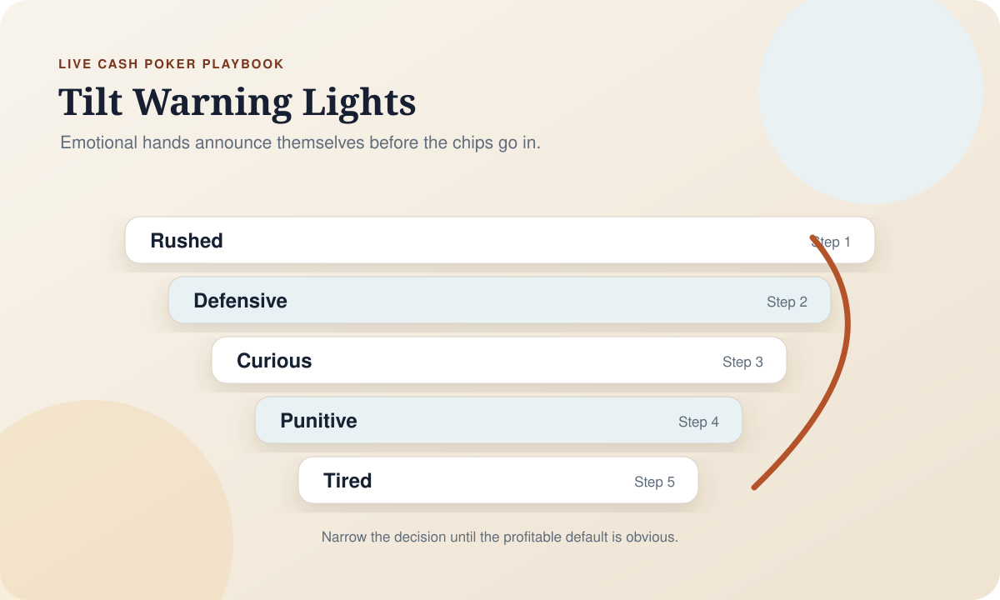
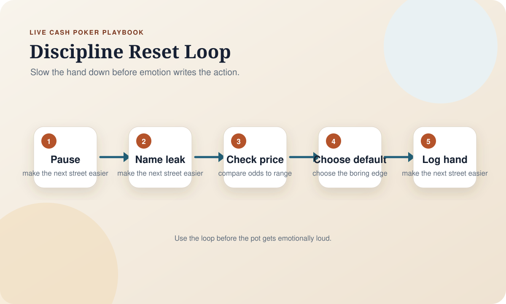
Actual lesson: The central lesson is that emotional discipline is a technical skill because ego changes calling, bluffing, and quitting thresholds. Best default: Pause before expensive nodes, name the emotional trigger, and return to the source-backed default unless evidence justifies a deviation. Most common leak: Disguising image repair, revenge, boredom, or embarrassment as strategy. A representative mined spot puts the idea into action: Avoid ego-driven calls and emotionally reactive aggression [E1].
The table-facing question for this chapter is simple: Before acting fast, ask: am I trying to maximize EV or change how this hand makes me feel? If the answer is vague, the hand is probably being driven by curiosity, fear, or autopilot rather than by a clean live-cash edge. The purpose of the chapter is to make that answer specific enough to use while chips are moving, not to admire the concept from a safe distance after the session.
These are not claims about perfect equilibrium play. They are the best low-stakes live-cash defaults to try first, then adjust when the table gives you better evidence.
What is the fastest emotional leak to catch? Rushed action. Speed often means the decision is protecting ego, avoiding discomfort, or chasing a feeling. This answer is not meant as a universal law; it is the starting line supported by the repeated evidence in this chapter [E1].
How do I stop hero-call tilt? Name the motive. If the reason is not range, price, blocker, or opponent history, fold and write the spot down for review. This answer is not meant as a universal law; it is the starting line supported by the repeated evidence in this chapter [E2].
When should I quit? Quit or take a real break when fatigue changes your thresholds: wider calls, punitive bluffs, impatience, or a desire to win back identity rather than chips. This answer is not meant as a universal law; it is the starting line supported by the repeated evidence in this chapter [E3].
The practical sequence is question, default, exception, review. Ask the question before the action, use the default when the table is ordinary, require evidence for the exception, and review the decision by whether that evidence was real.
The operating model is: The central lesson is that emotional discipline is a technical skill because ego changes calling, bluffing, and quitting thresholds. That model only becomes useful when tilt, ego protection, decision fatigue, and session discipline become concrete table actions. The mined examples cluster around Emotions leak into EV, Ego causes expensive calls, and Position creates decision leverage, so the player should not chase a single dramatic quote. It should teach the repeatable pattern: Pause before expensive nodes, name the emotional trigger, and return to the source-backed default unless evidence justifies a deviation. The warning sign is equally concrete: Disguising image repair, revenge, boredom, or embarrassment as strategy. The player should keep returning to one question under pressure: Before acting fast, ask: am I trying to maximize EV or change how this hand makes me feel? [E1]
This is not trying to solve poker from first principles or make a balanced-game claim about every possible opponent. It is translating repeated live-cash evidence into a starting line that beats the games most readers actually sit in. The default can be overridden, but only after a player earns the override with specific reads, specific prices, and a specific reason the current opponent differs from the pool.
Emotional mistakes work the same way as technical leaks: they appear in repeatable nodes. A player calls because they hate being bluffed, bets because they want to punish someone, or keeps playing because quitting would feel like admitting defeat. A representative mined decision points in the same direction: Avoid ego-driven calls and emotionally reactive aggression [E1].
The live pool rewards the player who treats those feelings as information rather than instructions. A pause before expensive actions can restore the default line before ego turns a medium mistake into a stack-sized one.
Across Crush Live Poker, Hungry Horse Poker, and Live Poker Guide, the shared lesson is not merely that ego, emotion, and table discipline matters. The shared lesson is operational: Pause before expensive nodes, name the emotional trigger, and return to the source-backed default unless evidence justifies a deviation. The repeated themes are Emotions leak into EV, Ego causes expensive calls, and Position creates decision leverage, which all point toward the same table habit. The main disagreement is usually not about the destination; it is about the route. One source may teach the spot through sizing, another through player type, and another through discipline or hand selection. Those differences are useful only when they sharpen the table question: Before acting fast, ask: am I trying to maximize EV or change how this hand makes me feel?
Crush Live Poker contributes hand reading, line construction, bet sizing, and river discipline; in this chapter its clearest mined example points to Emotions leak into EV, with the decision: Avoid ego-driven calls and emotionally reactive aggression [E1].
Hungry Horse Poker contributes exploitative systems, pro-versus-amateur thinking, and pressure against capped ranges; in this chapter its clearest mined example points to Ego causes expensive calls, with the decision: Avoid ego-driven calls and emotionally reactive aggression [E2].
Live Poker Guide contributes $1/$2 and $1/$3 execution, session habits, and clear defaults for loose splashy games; in this chapter its clearest mined example points to Emotions leak into EV, with the decision: Avoid ego-driven calls and emotionally reactive aggression [E3].
The synthesis for the reader is therefore practical rather than decorative. Use the agreement as the default, use the source-specific emphasis as a diagnostic lens, and watch for the leak: Disguising image repair, revenge, boredom, or embarrassment as strategy. If multiple sources arrive at the same default from different angles, the recommendation deserves more weight than a single isolated hand.
Case study first: in Poker Strategy: Should We Semibluff When We Turn a Ton of Equity from Crush Live Poker, the usable lesson is not the surface drama of the hand. It is the decision shape. The card records the key decision as: Avoid ego-driven calls and emotionally reactive aggression The strategic takeaway is Emotional leakage shows up as impatience, image protection, and expensive decisions made to feel in control. [E1]. In practice, this means the reader should pause before asking, 'Can I win this pot?' and ask the better live-cash question: 'What does this action usually represent from this player type, at this size, in this room?' The answer will not always be comfortable, but it will usually be more profitable than treating the spot as a puzzle designed to reward bravery.
Case study second: in These Hands Are INSANE (I'm Not on Drugs!) | Ep 2 from Hungry Horse Poker, the usable lesson is not the surface drama of the hand. It is the decision shape. The card records the key decision as: Avoid ego-driven calls and emotionally reactive aggression The strategic takeaway is Emotional leakage shows up as impatience, image protection, and expensive decisions made to feel in control. [E2]. In practice, this means the reader should pause before asking, 'Can I win this pot?' and ask the better live-cash question: 'What does this action usually represent from this player type, at this size, in this room?' The answer will not always be comfortable, but it will usually be more profitable than treating the spot as a puzzle designed to reward bravery.
Case study third: in 10 Things Good Poker Players Do That Bad Ones Don’t from Live Poker Guide, the usable lesson is not the surface drama of the hand. It is the decision shape. The card records the key decision as: Avoid ego-driven calls and emotionally reactive aggression The strategic takeaway is Emotional leakage shows up as impatience, image protection, and expensive decisions made to feel in control. [E3]. In practice, this means the reader should pause before asking, 'Can I win this pot?' and ask the better live-cash question: 'What does this action usually represent from this player type, at this size, in this room?' The answer will not always be comfortable, but it will usually be more profitable than treating the spot as a puzzle designed to reward bravery.
Case study fourth: in Poker Strategy: Should We Call Off with Bottom Set vs Two Players from Crush Live Poker, the usable lesson is not the surface drama of the hand. It is the decision shape. The card records the key decision as: Use position to simplify decisions and pressure weaker ranges The strategic takeaway is Position lets you realize equity, control pot size, and gather more information before committing money. [E4]. In practice, this means the reader should pause before asking, 'Can I win this pot?' and ask the better live-cash question: 'What does this action usually represent from this player type, at this size, in this room?' The answer will not always be comfortable, but it will usually be more profitable than treating the spot as a puzzle designed to reward bravery.
Case study fifth: in 4 Step Guide to Become a Poker CRUSHER from Hungry Horse Poker, the usable lesson is not the surface drama of the hand. It is the decision shape. The card records the key decision as: Avoid ego-driven calls and emotionally reactive aggression The strategic takeaway is Emotional leakage shows up as impatience, image protection, and expensive decisions made to feel in control. [E5]. In practice, this means the reader should pause before asking, 'Can I win this pot?' and ask the better live-cash question: 'What does this action usually represent from this player type, at this size, in this room?' The answer will not always be comfortable, but it will usually be more profitable than treating the spot as a puzzle designed to reward bravery.
Taken together, these case studies make the chapter less dependent on a single hand. They show how ego, emotion, and table discipline keeps returning as a repeatable decision problem: the player has some information, the pool has a recognizable tendency, and the profitable line asks the player to trust the pattern without becoming rigid. That is the balance the rest of the chapter keeps returning to.
Use these as supporting margin notes, not as the main lesson. The teaching has already been synthesized above; these notes show which mined spots supplied the pressure points.
Synthesis note: In ego, emotion, and table discipline, the examples matter because they keep pointing to the same habit: make the profitable default obvious before the hand invites ego, curiosity, or fancy-play syndrome.
Key lesson: The emotional fold is sometimes the professional play. Folding when you feel challenged can look weak in the moment, but it protects the bankroll when the call is really about identity rather than range, price, and player history. [E4]
This is why the advice can feel wrong while being profitable. The player may leave the table with fewer cinematic stories, but the win rate comes from the unglamorous decisions that repeat: cleaner preflop entries, better seats, more precise value, fewer curiosity calls, and bluffs aimed at players who can actually fold. The lesson is not to become timid. It is to reserve aggression, curiosity, and deviation for spots where the evidence says they earn money.
The chapter's closing model is deliberately plain. Start with the chapter concept, identify the live-pool leak, match the leak to the line, then ask what evidence would justify a deviation. That four-part habit keeps ego, emotion, and table discipline from becoming either a slogan or a superstition. It also protects the reader from the most common failure mode in low-stakes live cash: knowing the right adjustment away from the table and then talking oneself out of it when the pot gets large [E1].
The reader should leave the chapter with a practical bias, not a rigid script. In ordinary games, the bias is to trust source-backed population evidence before trusting adrenaline. In unusual games, the bias is to update quickly when opponents prove they are different. The money is made in that middle ground, where the player is disciplined enough to use defaults and attentive enough to notice when a default no longer applies.
| Evidence | Channel | Video | Segment | Time | Theme | Decision | Isolated Lesson | Transcript Note | Confidence |
|---|---|---|---|---|---|---|---|---|---|
| E1 | Crush Live Poker | Poker Strategy: Should We Semibluff When We Turn a Ton of Equity | seg_e540b42e4646 | 04:01-04:48 | Emotions leak into EV | Avoid ego-driven calls and emotionally reactive aggression | Emotional leakage shows up as impatience, image protection, and expensive decisions made to feel in control. | he could have Jack ten I mean you block that that would be another hand he might flat maybe he flats with Jack ten off I don't know how w... | 0.89 |
| E2 | Hungry Horse Poker | These Hands Are INSANE (I'm Not on Drugs!) | Ep 2 | seg_20155f4f5ab9 | 36:54-37:40 | Emotions leak into EV | Avoid ego-driven calls and emotionally reactive aggression | Emotional leakage shows up as impatience, image protection, and expensive decisions made to feel in control. | and if he does have asex of diamonds he's certainly not folding so we put in the big check race he tilts his head to the side pulls his a... | 0.59 |
| E3 | Live Poker Guide | 10 Things Good Poker Players Do That Bad Ones Don’t | seg_01eee3b9ee01 | 02:21-03:13 | Emotions leak into EV | Avoid ego-driven calls and emotionally reactive aggression | Emotional leakage shows up as impatience, image protection, and expensive decisions made to feel in control. | will go on tilt after that chase his losses and make Reckless decisions he will be fuming and complaining to the will be fuming and compl... | 0.77 |
| E4 | Crush Live Poker | Poker Strategy: Should We Call Off with Bottom Set vs Two Players | seg_e397ed68411f | 01:33-02:28 | Position creates decision leverage | Use position to simplify decisions and pressure weaker ranges | Position lets you realize equity, control pot size, and gather more information before committing money. | described him to me as very spew II and Bluffs in the wrong type of spot just to give you a little background a tilted player opened he c... | 0.77 |
| E5 | Hungry Horse Poker | 4 Step Guide to Become a Poker CRUSHER | seg_329f1bd6c888 | 15:43-16:11 | Emotions leak into EV | Avoid ego-driven calls and emotionally reactive aggression | Emotional leakage shows up as impatience, image protection, and expensive decisions made to feel in control. | this River with the queen jack of diamonds as you can see on these Rivers it's not we're just always going huge with our Bluffs or we're... | 0.52 |
| E6 | Live Poker Guide | 10 Years of Live Poker Advice in 3 hours - Everything I know! | seg_1a502f77bae2 | 02:20:07-02:20:52 | Emotions leak into EV | Avoid ego-driven calls and emotionally reactive aggression | Emotional leakage shows up as impatience, image protection, and expensive decisions made to feel in control. | even though he just lost a big pot. | 0.77 |
| E7 | Crush Live Poker | Poker Strategy: AQ Faces A Cold Call On The Flop And A Turn Lead | seg_38f25b3e56ea | 11:40-12:17 | Emotions leak into EV | Avoid ego-driven calls and emotionally reactive aggression | Emotional leakage shows up as impatience, image protection, and expensive decisions made to feel in control. | Raw transcript omitted from final prose; use the timestamped source segment for review. | 0.64 |
| E8 | Hungry Horse Poker | We Coached 700 Players. One Trait Separated the Winners. | seg_bc7f0b313f42 | 27:08-27:54 | Emotions leak into EV | Avoid ego-driven calls and emotionally reactive aggression | Emotional leakage shows up as impatience, image protection, and expensive decisions made to feel in control. | from a previous version of you, you don't have to make more decisions at the table. | 0.35 |
| E9 | Live Poker Guide | How To Maximally Exploit Recreational Players at 1/3 Live Poker | seg_c71817ab3974 | 19:21-20:05 | Emotions leak into EV | Avoid ego-driven calls and emotionally reactive aggression | Emotional leakage shows up as impatience, image protection, and expensive decisions made to feel in control. | Raw transcript omitted from final prose; use the timestamped source segment for review. | 0.59 |
| E10 | Crush Live Poker | How to NOT Play Ace‑King in Live Cash Games | seg_466e6ea87f90 | 02:21-03:13 | Emotions leak into EV | Avoid ego-driven calls and emotionally reactive aggression | Emotional leakage shows up as impatience, image protection, and expensive decisions made to feel in control. | >> So so much for 200 big blinds effective. | 0.68 |
| E11 | Hungry Horse Poker | I Discovered Why Poker Players Get STUCK at Low Stakes | seg_c8133a712a7c | 13:42-14:13 | Ego causes expensive calls | Avoid ego-driven calls and emotionally reactive aggression | Ego convinces players to call or bluff for reasons that have nothing to do with EV. | Raw transcript omitted from final prose; use the timestamped source segment for review. | 0.67 |
| E12 | Live Poker Guide | 5 Expert Tips to Deal With Poker DOWNSWINGS | seg_d58621b12ea4 | 04:45-05:41 | Emotions leak into EV | Avoid ego-driven calls and emotionally reactive aggression | Emotional leakage shows up as impatience, image protection, and expensive decisions made to feel in control. | the river one of your biggest leagues then use a platform GTO wizard for example to drill exactly this spot then you can see what a solve... | 0.67 |
| E13 | Crush Live Poker | Player makes 4 Barrel Bluff (Terrible Angle) | seg_d67270ca8e24 | 06:18-07:34 | Emotions leak into EV | Avoid ego-driven calls and emotionally reactive aggression | Emotional leakage shows up as impatience, image protection, and expensive decisions made to feel in control. | again okay so limper calls alright and I said you've got it probably about a one pot size bet left all right what's the river I mean I se... | 0.59 |
| E14 | Hungry Horse Poker | 99% of Players FAIL This Poker IQ Test | seg_3add7a6bb167 | 22:15-22:38 | Ego causes expensive calls | Avoid ego-driven calls and emotionally reactive aggression | Ego convinces players to call or bluff for reasons that have nothing to do with EV. | three four five players in the pot we need to be a little bit more picky about our SE betting and I'm just going to be C betting our thic... | 0.75 |
| E15 | Live Poker Guide | How to Beat Loose & Splashy Live Poker Games (Exact Strategy) | seg_b463bd43be33 | 21:47-22:28 | Emotions leak into EV | Avoid ego-driven calls and emotionally reactive aggression | Emotional leakage shows up as impatience, image protection, and expensive decisions made to feel in control. | beats and mentally preparing for these spots so you don't lose control in games that are actually money printers. | 0.60 |
| E16 | Crush Live Poker | Revealing A Hidden Secret that Boosts Your Success at the Tables | seg_509a7132c630 | 08:30-09:19 | Emotions leak into EV | Avoid ego-driven calls and emotionally reactive aggression | Emotional leakage shows up as impatience, image protection, and expensive decisions made to feel in control. | little bit with a 10 on the turn so I thought I could have a decent amount of tense in this spot yeah if we were to say that this just we... | 0.57 |
| E17 | Hungry Horse Poker | Where Poker Players BLUFF Too Much… And Where They NEVER Bluff | seg_e1f8b410cce4 | 18:38-19:11 | Ego causes expensive calls | Avoid ego-driven calls and emotionally reactive aggression | Ego convinces players to call or bluff for reasons that have nothing to do with EV. | All right, next spot that's overbluffed when we check back as the pre- flop razer and they stab small on the turn. | 0.75 |
| E18 | Live Poker Guide | 5 Habits to Make 2025 Your BEST YEAR at Live Poker | seg_7483c34ae387 | 08:47-09:38 | Emotions leak into EV | Avoid ego-driven calls and emotionally reactive aggression | Emotional leakage shows up as impatience, image protection, and expensive decisions made to feel in control. | for 400 lb and then in the very next hand he five bet jammed A10 offit got called by pocket kings and lost his called by pocket kings and... | 0.51 |
| E19 | Crush Live Poker | Poker Strategy: Turning a Combo draw in 3 bet pot | seg_1ae569fa6312 | 04:58-05:44 | Emotions leak into EV | Avoid ego-driven calls and emotionally reactive aggression | Emotional leakage shows up as impatience, image protection, and expensive decisions made to feel in control. | out its back in the deck and yeah the nine of done I think when they what they do is is that the nine of diamonds here would have been th... | 0.59 |
| E20 | Hungry Horse Poker | How to TRIPLE Your Win Rate (Poker Secrets REVEALED) | seg_24eeb92ecc8b | 02:36-03:05 | Emotions leak into EV | Avoid ego-driven calls and emotionally reactive aggression | Emotional leakage shows up as impatience, image protection, and expensive decisions made to feel in control. | Network and get advice from people that are better than you and stay humble do not ever think humble do not ever think everything and you... | 0.50 |
| E21 | Live Poker Guide | These 3 Hacks Will Maximize Your Live Poker Winnings! | seg_66b7322436a6 | 08:21-08:55 | Emotions leak into EV | Avoid ego-driven calls and emotionally reactive aggression | Emotional leakage shows up as impatience, image protection, and expensive decisions made to feel in control. | at a good table just by sitting there you are raking in a decent hourly rate you are raking in a decent hourly rate in theory even if you... | 0.50 |
| E22 | Crush Live Poker | How to Turn Bad Beats into an Advantage (Essential Poker Tip) | seg_8e75a7bf8468 | 11:17-12:02 | Emotions leak into EV | Avoid ego-driven calls and emotionally reactive aggression | Emotional leakage shows up as impatience, image protection, and expensive decisions made to feel in control. | could ever happen is if you get a bad beat and show it and then the very next hand you pick up pocket acers or pocket kings and you make... | 0.52 |
| E23 | Hungry Horse Poker | $100/hr at Low Stakes? High Stakes CRUSHER Weighs In | Ep 11 | seg_50218586f500 | 23:44-24:23 | Ego causes expensive calls | Avoid ego-driven calls and emotionally reactive aggression | Ego convinces players to call or bluff for reasons that have nothing to do with EV. | are coming along here and EP calls as well so we're going five ways to a flop which comes King Jack 8 and this one which comes King Jack... | 0.67 |
| E24 | Live Poker Guide | How This Beginner Became a Crusher At 1/3 in 90 Days! | seg_f8663c31e0d5 | 07:44-08:40 | Ego causes expensive calls | Avoid ego-driven calls and emotionally reactive aggression | Ego convinces players to call or bluff for reasons that have nothing to do with EV. | thinking process where Spencer learned what questions to ask on the flop, turn, and river. | 0.91 |
| E25 | Crush Live Poker | Mike Postle Cheating Scandal Condensed + NEW Hands | seg_47c7db039499 | 49:27-50:17 | Emotions leak into EV | Avoid ego-driven calls and emotionally reactive aggression | Emotional leakage shows up as impatience, image protection, and expensive decisions made to feel in control. | Raw transcript omitted from final prose; use the timestamped source segment for review. | 0.52 |
| E26 | Hungry Horse Poker | What Poker Players Earn Vs What They COULD Be Earning | seg_1b4b246a763e | 01:52-02:32 | Emotions leak into EV | Avoid ego-driven calls and emotionally reactive aggression | Emotional leakage shows up as impatience, image protection, and expensive decisions made to feel in control. | skills are prioritizing process over results logic over emotion the ability to reason and and rationalize on the spot the ability to show... | 0.50 |
| E27 | Live Poker Guide | How This Beginner Became a Crusher At 1/3 in 90 Days! | seg_55c2658fd2f7 | 08:40-09:20 | Emotions leak into EV | Avoid ego-driven calls and emotionally reactive aggression | Emotional leakage shows up as impatience, image protection, and expensive decisions made to feel in control. | >> Yeah, definitely got to lock down pre flop play, , cuz everything is it's based from from there. | 0.42 |
| E28 | Crush Live Poker | Pro Poker Player Answers Toughest Strategy Questions! | seg_009048cf21d0 | 03:42-04:26 | Emotions leak into EV | Avoid ego-driven calls and emotionally reactive aggression | Emotional leakage shows up as impatience, image protection, and expensive decisions made to feel in control. | Raw transcript omitted from final prose; use the timestamped source segment for review. | 0.52 |
| E29 | Hungry Horse Poker | I Watched Players Think Out Loud. They All Make the Same Mistake. | seg_5a6edec8f4d2 | 10:39-11:19 | Ego causes expensive calls | Avoid ego-driven calls and emotionally reactive aggression | Ego convinces players to call or bluff for reasons that have nothing to do with EV. | doing a little bit of showing off here. | 0.59 |
| E30 | Live Poker Guide | Top Poker Mindset Coach: Do THIS to Boost Your Win Rate! | seg_876ba7eb9b87 | 42:01-42:39 | Emotions leak into EV | Avoid ego-driven calls and emotionally reactive aggression | Emotional leakage shows up as impatience, image protection, and expensive decisions made to feel in control. | Raw transcript omitted from final prose; use the timestamped source segment for review. | 0.35 |
| E31 | Crush Live Poker | One of the Most Important Lessons in Live Poker | seg_c1d2f1de2377 | 22:31-23:10 | Emotions leak into EV | Avoid ego-driven calls and emotionally reactive aggression | Emotional leakage shows up as impatience, image protection, and expensive decisions made to feel in control. | >> He he actually went on tilt and got stacked the very next hand and left. | 0.51 |
| E32 | Hungry Horse Poker | Playing Poker OUT OF POSITION: The Ultimate Guide (2024) | seg_3b80ceebdaad | 07:02-07:41 | Ego causes expensive calls | Avoid ego-driven calls and emotionally reactive aggression | Ego convinces players to call or bluff for reasons that have nothing to do with EV. | just don't have that much Equity to improve if we have less than eight outs to make our hand so with our low Equity to make our hand so w... | 0.59 |
| E33 | Live Poker Guide | Poker Coaches Are Lying to You (The Truth About Winning at Live Poker) | seg_0398068ab935 | 07:57-08:56 | Emotions leak into EV | Avoid ego-driven calls and emotionally reactive aggression | Emotional leakage shows up as impatience, image protection, and expensive decisions made to feel in control. | just about the cards it's about the image you're projecting And the emotions your opponents are feeling they are the heroes of Their Own... | 0.50 |
| E34 | Crush Live Poker | He Was About to Leave… Then Lit His Stack on Fire | seg_9dbe96b7e2aa | 18:21-19:00 | Emotions leak into EV | Avoid ego-driven calls and emotionally reactive aggression | Emotional leakage shows up as impatience, image protection, and expensive decisions made to feel in control. | have ace king and just people are incapable but I would a bluff heads up here against plus one much I think much more than in this spot m... | 0.50 |
| E35 | Hungry Horse Poker | This Blind Spot Keeps Winning Players at Low Stakes | seg_d65c4969571e | 22:20-23:01 | Ego causes expensive calls | Avoid ego-driven calls and emotionally reactive aggression | Ego convinces players to call or bluff for reasons that have nothing to do with EV. | damn small to get pocket tens or something that to call on this river. | 0.59 |
| E36 | Live Poker Guide | I've Played Live Poker for 11 Years and Learned This! | seg_2fac8d5f3fe8 | 00:02-00:51 | Emotions leak into EV | Avoid ego-driven calls and emotionally reactive aggression | Emotional leakage shows up as impatience, image protection, and expensive decisions made to feel in control. | Did you think winning in life poker would be easy? | 0.35 |
| E37 | Crush Live Poker | Hold Up! WTF is THIS River Bet? | seg_0b353bb5139b | 09:55-10:19 | Emotions leak into EV | Avoid ego-driven calls and emotionally reactive aggression | Emotional leakage shows up as impatience, image protection, and expensive decisions made to feel in control. | Tilt and Poker Stars so I saw a lot of online guys come into live format and if they played hands this they would just snap call in your... | 0.50 |
| E38 | Hungry Horse Poker | 90% of Money Is Won on the River (The System That Fixes Your Winrate) | seg_dff1f4db6cbc | 18:10-18:38 | Bluff-catching is usually overrated | Respond to river aggression with population-aware discipline | Bluff-catching is overrated when the pool rarely arrives on the river with enough bluffs. | just don't have showdown value, when they have brick draws, when they have natural bluffs, right? | 0.47 |
| E39 | Live Poker Guide | Step-by-Step Guide to Crushing 1/2 Live Poker (Complete Strategy) | seg_71be021b3ce0 | 22:58-23:41 | Emotions leak into EV | Avoid ego-driven calls and emotionally reactive aggression | Emotional leakage shows up as impatience, image protection, and expensive decisions made to feel in control. | time, a pilot has to fly their plane through turbulences. | 0.35 |
| E40 | Crush Live Poker | One Bad Table Reaction Changed This Entire Hand | seg_018e1db67658 | 14:47-15:29 | Emotions leak into EV | Avoid ego-driven calls and emotionally reactive aggression | Emotional leakage shows up as impatience, image protection, and expensive decisions made to feel in control. | >> That's Well, that's that's even worse, right? | 0.50 |
| E41 | Hungry Horse Poker | What High Stakes Pros Know That Low Stakes Players Don’t (Round 2) | seg_1da46dbc8b10 | 16:49-17:19 | Ego causes expensive calls | Avoid ego-driven calls and emotionally reactive aggression | Ego convinces players to call or bluff for reasons that have nothing to do with EV. | on Ready set go so this is actually a really good spot for a speech play and what I would do here is make some big gesture and be ah man... | 0.57 |
| E42 | Live Poker Guide | The ONLY 3 Strategies You Need to Crush 1/2 & 1/3 | seg_437e8847eebc | 06:47-07:36 | Big river aggression is underbluffed | Respond to river aggression with population-aware discipline | Large river aggression should usually be respected until a player proves they bluff enough. | Since 1965, the share price of the company has gone up by over 5 million%. | 0.52 |
| E43 | Crush Live Poker | Should We PASS On CLOSE Spots In A CASH Game? | seg_7c36eaeccf08 | 16:34-17:09 | Emotions leak into EV | Avoid ego-driven calls and emotionally reactive aggression | Emotional leakage shows up as impatience, image protection, and expensive decisions made to feel in control. | one extra buy-in that i brought with me if i lose that i might get tilted i feel it's a close spot maybe he has over bluffing a little bi... | 0.50 |
| E44 | Hungry Horse Poker | I Gave a Weekend Warrior and a Full Time Pro the Same 5 Hands | seg_457dd7284a09 | 11:42-12:16 | Ego causes expensive calls | Avoid ego-driven calls and emotionally reactive aggression | Ego convinces players to call or bluff for reasons that have nothing to do with EV. | hold your feet to the fire and our coaches are going to pressure test you. | 0.35 |
| E45 | Live Poker Guide | From Beginner to Live Poker Crusher in 1 Year! | seg_2f9cb5bbd5f2 | 02:02-02:41 | Emotions leak into EV | Avoid ego-driven calls and emotionally reactive aggression | Emotional leakage shows up as impatience, image protection, and expensive decisions made to feel in control. | Raw transcript omitted from final prose; use the timestamped source segment for review. | 0.35 |
| E46 | Crush Live Poker | $10,000 WSOP MAIN EVENT 2019 - Bart Hanson Poker Vlog #1 - [FIRST EVER] | seg_3b1d3e60aa3c | 17:02-17:37 | Emotions leak into EV | Avoid ego-driven calls and emotionally reactive aggression | Emotional leakage shows up as impatience, image protection, and expensive decisions made to feel in control. | Raw transcript omitted from final prose; use the timestamped source segment for review. | 0.53 |
| E47 | Hungry Horse Poker | The 9 Biggest Mistakes Low Stakes Poker Pros Make | seg_901d5cadbd41 | 30:11-30:39 | Thin value is your salary | Choose the thinnest profitable value bet instead of checking back | Thin value bets are a major source of steady live-cash profit because worse hands call too often. | of going for thin value here and often gets paid a lot of money in these spots and then there is this type of opponent who when they have... | 0.69 |
| E48 | Live Poker Guide | THIS is The Fastest Way To Crush Live Poker! (Not What You Think) | seg_b27290d9a82b | 00:02-00:34 | Emotions leak into EV | Avoid ego-driven calls and emotionally reactive aggression | Emotional leakage shows up as impatience, image protection, and expensive decisions made to feel in control. | if you can do this one thing the speed at which you're going to get better at which you're going to get better poker results could increa... | 0.35 |
| E49 | Crush Live Poker | Extreme Preflop Action Leads to MAX Pain! | seg_f794414555ca | 16:11-17:05 | Emotions leak into EV | Avoid ego-driven calls and emotionally reactive aggression | Emotional leakage shows up as impatience, image protection, and expensive decisions made to feel in control. | doesn't you you you play poker enough that that's not the the the fact that oh my God I want to hit King's full right no no exactly yeah... | 0.52 |
| E50 | Hungry Horse Poker | These Hands Are INSANE (I'm Not on Drugs!) | Ep 2 | seg_b873141136dd | 01:26-02:02 | Ego causes expensive calls | Avoid ego-driven calls and emotionally reactive aggression | Ego convinces players to call or bluff for reasons that have nothing to do with EV. | Raw transcript omitted from final prose; use the timestamped source segment for review. | 0.52 |
| E51 | Live Poker Guide | 5 Things 1/2 Crushers Know that You Probably Don't | seg_d90b1c5f4a88 | 05:35-06:24 | Emotions leak into EV | Avoid ego-driven calls and emotionally reactive aggression | Emotional leakage shows up as impatience, image protection, and expensive decisions made to feel in control. | lot of players still making this mistake. | 0.62 |
| E52 | Crush Live Poker | Low Stakes FREEDOM! Bankroll Tips to Break Free | seg_de028a53ff34 | 05:58-06:46 | Emotions leak into EV | Avoid ego-driven calls and emotionally reactive aggression | Emotional leakage shows up as impatience, image protection, and expensive decisions made to feel in control. | Raw transcript omitted from final prose; use the timestamped source segment for review. | 0.46 |
| E53 | Hungry Horse Poker | Where Poker Players BLUFF Too Much… And Where They NEVER Bluff | seg_44b0ba158227 | 22:26-23:02 | Position creates decision leverage | Use position to simplify decisions and pressure weaker ranges | Position lets you realize equity, control pot size, and gather more information before committing money. | So we can be calling these turns quite a bit because they are overluffed. | 0.85 |
| E54 | Live Poker Guide | Step-by-Step Guide to Crushing 1/2 Live Poker (Complete Strategy) | seg_d90e841574c5 | 01:15-02:05 | Ego causes expensive calls | Avoid ego-driven calls and emotionally reactive aggression | Ego convinces players to call or bluff for reasons that have nothing to do with EV. | in such circumstances, you certainly don't need racing skills. | 0.52 |
| E55 | Crush Live Poker | Pocket Aces faces a river jam (poker strategy) | seg_a78dd415049b | 10:27-11:08 | Emotions leak into EV | Avoid ego-driven calls and emotionally reactive aggression | Emotional leakage shows up as impatience, image protection, and expensive decisions made to feel in control. | Raw transcript omitted from final prose; use the timestamped source segment for review. | 0.50 |
| E56 | Hungry Horse Poker | 40+ Poker Tells That Give Away Everything | seg_7cc48303bb5a | 10:44-11:24 | Ego causes expensive calls | Avoid ego-driven calls and emotionally reactive aggression | Ego convinces players to call or bluff for reasons that have nothing to do with EV. | going to have the top of their range. | 0.50 |
| E57 | Live Poker Guide | Top Poker Mindset Coach: Do THIS to Boost Your Win Rate! | seg_b267964b0e74 | 44:09-44:52 | Ego causes expensive calls | Avoid ego-driven calls and emotionally reactive aggression | Ego convinces players to call or bluff for reasons that have nothing to do with EV. | Raw transcript omitted from final prose; use the timestamped source segment for review. | 0.35 |
| E58 | Crush Live Poker | Player Wins Over $500,000 at Poker | seg_1bda2a258c79 | 08:03-08:41 | Emotions leak into EV | Avoid ego-driven calls and emotionally reactive aggression | Emotional leakage shows up as impatience, image protection, and expensive decisions made to feel in control. | Raw transcript omitted from final prose; use the timestamped source segment for review. | 0.49 |
| E59 | Hungry Horse Poker | Top 5 Spots to BLUFF in Live Poker | seg_8f794188f60a | 02:38-02:58 | Ego causes expensive calls | Avoid ego-driven calls and emotionally reactive aggression | Ego convinces players to call or bluff for reasons that have nothing to do with EV. | we can just print a ton of EV here against players who are going to be range betting in this spot where in equilibrium they are absolutel... | 0.50 |
| E60 | Live Poker Guide | Use This EXPLOIT to Win MORE at No Limit Hold'em! | seg_974ccbd942ad | 18:53-19:46 | Ego causes expensive calls | Avoid ego-driven calls and emotionally reactive aggression | Ego convinces players to call or bluff for reasons that have nothing to do with EV. | definitely all three1 are pro or the remain two 10 are good and possibly or hopefully also the three aces are good so I called here the r... | 0.69 |
| E61 | Crush Live Poker | Dealer’s Hilarious Bluff on a Generous Tipper! | seg_dfa9ebb7c634 | 06:21-07:09 | Emotions leak into EV | Avoid ego-driven calls and emotionally reactive aggression | Emotional leakage shows up as impatience, image protection, and expensive decisions made to feel in control. | Raw transcript omitted from final prose; use the timestamped source segment for review. | 0.42 |
| E62 | Hungry Horse Poker | Poker Fundamentals: MULTIWAY POTS | seg_3674d00d63ea | 02:56-03:36 | Ego causes expensive calls | Avoid ego-driven calls and emotionally reactive aggression | Ego convinces players to call or bluff for reasons that have nothing to do with EV. | Raw transcript omitted from final prose; use the timestamped source segment for review. | 0.42 |
| E63 | Live Poker Guide | Understand This One Concept, It'll Double Your Winrate at 1/2 & 1/3 | seg_db824c25716c | 03:42-04:26 | Emotions leak into EV | Avoid ego-driven calls and emotionally reactive aggression | Emotional leakage shows up as impatience, image protection, and expensive decisions made to feel in control. | You tell yourself, "Well, I'll just outplay them post flop. | 0.57 |
| E64 | Crush Live Poker | The $2400 Poker Mistake He’ll NEVER Make Again | seg_edc62a009aa8 | 12:49-13:41 | Emotions leak into EV | Avoid ego-driven calls and emotionally reactive aggression | Emotional leakage shows up as impatience, image protection, and expensive decisions made to feel in control. | I mean, if you had king jack or pocket fives here, it's a lot closer. | 0.42 |
| E65 | Hungry Horse Poker | We Coached 700 Players. One Trait Separated the Winners. | seg_f810903050ad | 20:27-21:03 | Ego causes expensive calls | Avoid ego-driven calls and emotionally reactive aggression | Ego convinces players to call or bluff for reasons that have nothing to do with EV. | Ranging what do they have in my repeatable thought they have in my repeatable thought process? | 0.42 |
| E66 | Live Poker Guide | GTO vs. Reading Players: When to Adapt Your Poker Strategy (For Wins!) | seg_68d839d93a8b | 20:27-21:17 | Ego causes expensive calls | Avoid ego-driven calls and emotionally reactive aggression | Ego convinces players to call or bluff for reasons that have nothing to do with EV. | yes you will get called by an over pair but it's not great if you now get raised which you induce a little bit by going that small that r... | 0.74 |
| E67 | Crush Live Poker | Suddenly He Jammed Out of Turn | seg_2381ee8eb677 | 06:51-07:24 | Emotions leak into EV | Avoid ego-driven calls and emotionally reactive aggression | Emotional leakage shows up as impatience, image protection, and expensive decisions made to feel in control. | non-nut flushes aren't going to raise you. | 0.35 |
| E68 | Hungry Horse Poker | Live Poker PREFLOP BIBLE | seg_3d02d5fd6a89 | 10:52-11:31 | Ego causes expensive calls | Avoid ego-driven calls and emotionally reactive aggression | Ego convinces players to call or bluff for reasons that have nothing to do with EV. | Raw transcript omitted from final prose; use the timestamped source segment for review. | 0.45 |
| E69 | Live Poker Guide | How to Easily Tell Your Opponent Is Bluffing at 1/2 & 1/3 | seg_6b18cc5dfbd1 | 08:15-08:39 | Ego causes expensive calls | Avoid ego-driven calls and emotionally reactive aggression | Ego convinces players to call or bluff for reasons that have nothing to do with EV. | And if you want to really skyrocket your win rate without having to rely on hacks, then you need a to rely on hacks, then you need a step... | 0.74 |
| E70 | Crush Live Poker | Can Folding the Best Hand be the CORRECT PLAY? | seg_5bfb5b1941a6 | 13:29-14:04 | Emotions leak into EV | Avoid ego-driven calls and emotionally reactive aggression | Emotional leakage shows up as impatience, image protection, and expensive decisions made to feel in control. | Raw transcript omitted from final prose; use the timestamped source segment for review. | 0.45 |
| E71 | Hungry Horse Poker | There Are No Good Players in Live Poker | seg_f53163c8323e | 00:39-01:38 | Ego causes expensive calls | Avoid ego-driven calls and emotionally reactive aggression | Ego convinces players to call or bluff for reasons that have nothing to do with EV. | guys I'm Abby poker I'm a 24-year-old content creator based out of Chicago and also poker player as of the last three years my name is Jo... | 0.45 |
| E72 | Live Poker Guide | You Don’t Need Fancy Plays—Just Do This to Win at Live Poker! | seg_db04cceed13b | 03:43-04:32 | Emotions leak into EV | Avoid ego-driven calls and emotionally reactive aggression | Emotional leakage shows up as impatience, image protection, and expensive decisions made to feel in control. | He then called a raise with that hand, which is even worse. | 0.36 |
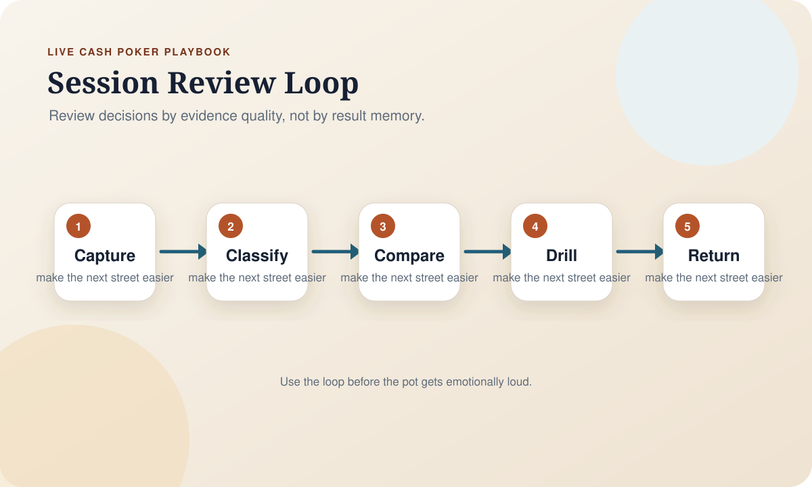
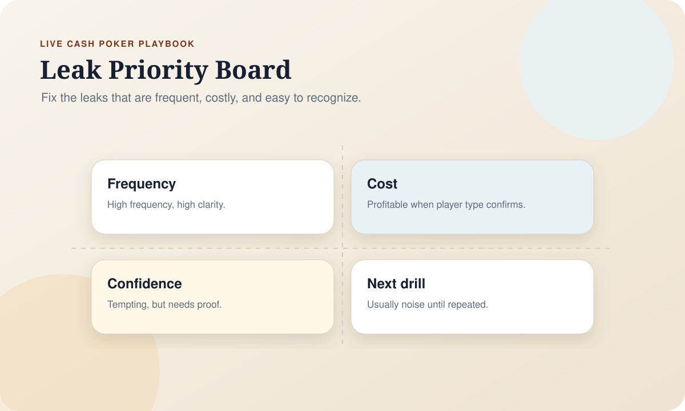
Actual lesson: The central lesson is that improvement comes from capturing decisions clearly, grouping them by leak family, and drilling the most frequent expensive patterns first. Best default: Record position, stack depth, player type, action, sizing, and your reason; review by decision family rather than by whether the pot was won. Most common leak: Reviewing only dramatic hands while the repeated small leak keeps billing every session. A representative mined spot puts the idea into action: Stay patient and choose aggressive spots instead of forcing action [E1].
The table-facing question for this chapter is simple: After a session, ask: which mistake repeated, how much did it cost, and what trigger will stop it next time? If the answer is vague, the hand is probably being driven by curiosity, fear, or autopilot rather than by a clean live-cash edge. The purpose of the chapter is to make that answer specific enough to use while chips are moving, not to admire the concept from a safe distance after the session.
These are not claims about perfect equilibrium play. They are the best low-stakes live-cash defaults to try first, then adjust when the table gives you better evidence.
What should I write down? Record the decision ingredients: position, stack depth, player type, action, sizing, board, your reason, and the result only after the reason is captured. This answer is not meant as a universal law; it is the starting line supported by the repeated evidence in this chapter [E1].
How should I group hands? Bucket by leak family: preflop discipline, thin value, river calls, bluff selection, sizing tells, or emotional triggers. Won/lost is not the study category. This answer is not meant as a universal law; it is the starting line supported by the repeated evidence in this chapter [E2].
What should I fix first? Fix the leak that is frequent, expensive, and recognizable in real time. A repeatable trigger beats a vague promise to play better. This answer is not meant as a universal law; it is the starting line supported by the repeated evidence in this chapter [E3].
The practical sequence is question, default, exception, review. Ask the question before the action, use the default when the table is ordinary, require evidence for the exception, and review the decision by whether that evidence was real.
The operating model is: The central lesson is that improvement comes from capturing decisions clearly, grouping them by leak family, and drilling the most frequent expensive patterns first. That model only becomes useful when session review, leak tracking, hand selection, and feedback loop become concrete table actions. The mined examples cluster around Sizing reveals real intent, Discipline over curiosity, and Position creates decision leverage, so the player should not chase a single dramatic quote. It should teach the repeatable pattern: Record position, stack depth, player type, action, sizing, and your reason; review by decision family rather than by whether the pot was won. The warning sign is equally concrete: Reviewing only dramatic hands while the repeated small leak keeps billing every session. The player should keep returning to one question under pressure: After a session, ask: which mistake repeated, how much did it cost, and what trigger will stop it next time? [E1]
This is not trying to solve poker from first principles or make a balanced-game claim about every possible opponent. It is translating repeated live-cash evidence into a starting line that beats the games most readers actually sit in. The default can be overridden, but only after a player earns the override with specific reads, specific prices, and a specific reason the current opponent differs from the pool.
Review works when it preserves the decision before memory rewrites it. Low-stakes players often remember the result, the bad beat, or the embarrassment, but forget the position, stack depth, sizing, and player type that actually determine whether the line was good. A representative mined decision points in the same direction: Stay patient and choose aggressive spots instead of forcing action [E1].
The pool gives enough repeated patterns that study should be organized by leak family. A player who fixes one frequent preflop leak, one river-call leak, or one missed thin-value spot can change win rate faster than a player who collects dramatic hands without a repair loop.
Across Crush Live Poker, Hungry Horse Poker, and Live Poker Guide, the shared lesson is not merely that the session review and improvement loop matters. The shared lesson is operational: Record position, stack depth, player type, action, sizing, and your reason; review by decision family rather than by whether the pot was won. The repeated themes are Sizing reveals real intent, Discipline over curiosity, and Position creates decision leverage, which all point toward the same table habit. The main disagreement is usually not about the destination; it is about the route. One source may teach the spot through sizing, another through player type, and another through discipline or hand selection. Those differences are useful only when they sharpen the table question: After a session, ask: which mistake repeated, how much did it cost, and what trigger will stop it next time?
Crush Live Poker contributes hand reading, line construction, bet sizing, and river discipline; in this chapter its clearest mined example points to Sizing reveals real intent, with the decision: Stay patient and choose aggressive spots instead of forcing action [E1].
Hungry Horse Poker contributes exploitative systems, pro-versus-amateur thinking, and pressure against capped ranges; in this chapter its clearest mined example points to Sizing reveals real intent, with the decision: Use position to simplify decisions and pressure weaker ranges [E2].
Live Poker Guide contributes $1/$2 and $1/$3 execution, session habits, and clear defaults for loose splashy games; in this chapter its clearest mined example points to Discipline over curiosity, with the decision: Avoid ego-driven calls and emotionally reactive aggression [E3].
The synthesis for the reader is therefore practical rather than decorative. Use the agreement as the default, use the source-specific emphasis as a diagnostic lens, and watch for the leak: Reviewing only dramatic hands while the repeated small leak keeps billing every session. If multiple sources arrive at the same default from different angles, the recommendation deserves more weight than a single isolated hand.
Case study first: in I Fired Two BIG Barrels With Jacks... Now What? from Crush Live Poker, the usable lesson is not the surface drama of the hand. It is the decision shape. The card records the key decision as: Stay patient and choose aggressive spots instead of forcing action The strategic takeaway is The pool rewards patience more than curiosity, so folding marginal hands and waiting for clearer edges preserves win rate. [E1]. In practice, this means the reader should pause before asking, 'Can I win this pot?' and ask the better live-cash question: 'What does this action usually represent from this player type, at this size, in this room?' The answer will not always be comfortable, but it will usually be more profitable than treating the spot as a puzzle designed to reward bravery.
Case study second: in Stop Wasting Time Reviewing Hands (Do This Instead) from Hungry Horse Poker, the usable lesson is not the surface drama of the hand. It is the decision shape. The card records the key decision as: Use position to simplify decisions and pressure weaker ranges The strategic takeaway is Position lets you realize equity, control pot size, and gather more information before committing money. [E2]. In practice, this means the reader should pause before asking, 'Can I win this pot?' and ask the better live-cash question: 'What does this action usually represent from this player type, at this size, in this room?' The answer will not always be comfortable, but it will usually be more profitable than treating the spot as a puzzle designed to reward bravery.
Case study third: in How This Beginner Became a Crusher At 1/3 in 90 Days! from Live Poker Guide, the usable lesson is not the surface drama of the hand. It is the decision shape. The card records the key decision as: Avoid ego-driven calls and emotionally reactive aggression The strategic takeaway is Ego convinces players to call or bluff for reasons that have nothing to do with EV. [E3]. In practice, this means the reader should pause before asking, 'Can I win this pot?' and ask the better live-cash question: 'What does this action usually represent from this player type, at this size, in this room?' The answer will not always be comfortable, but it will usually be more profitable than treating the spot as a puzzle designed to reward bravery.
Case study fourth: in Pro Fold or Just Letting Him Steal? You Decide! from Crush Live Poker, the usable lesson is not the surface drama of the hand. It is the decision shape. The card records the key decision as: Stay patient and choose aggressive spots instead of forcing action The strategic takeaway is The pool rewards patience more than curiosity, so folding marginal hands and waiting for clearer edges preserves win rate. [E4]. In practice, this means the reader should pause before asking, 'Can I win this pot?' and ask the better live-cash question: 'What does this action usually represent from this player type, at this size, in this room?' The answer will not always be comfortable, but it will usually be more profitable than treating the spot as a puzzle designed to reward bravery.
Case study fifth: in $100/hr at Low Stakes? High Stakes CRUSHER Weighs In | Ep 11 from Hungry Horse Poker, the usable lesson is not the surface drama of the hand. It is the decision shape. The card records the key decision as: Use position to simplify decisions and pressure weaker ranges The strategic takeaway is Position lets you realize equity, control pot size, and gather more information before committing money. [E5]. In practice, this means the reader should pause before asking, 'Can I win this pot?' and ask the better live-cash question: 'What does this action usually represent from this player type, at this size, in this room?' The answer will not always be comfortable, but it will usually be more profitable than treating the spot as a puzzle designed to reward bravery.
Taken together, these case studies make the chapter less dependent on a single hand. They show how the session review and improvement loop keeps returning as a repeatable decision problem: the player has some information, the pool has a recognizable tendency, and the profitable line asks the player to trust the pattern without becoming rigid. That is the balance the rest of the chapter keeps returning to.
Use these as supporting margin notes, not as the main lesson. The teaching has already been synthesized above; these notes show which mined spots supplied the pressure points.
Synthesis note: In the session review and improvement loop, the examples matter because they keep pointing to the same habit: make the profitable default obvious before the hand invites ego, curiosity, or fancy-play syndrome.
Key lesson: The most useful hand to study may be the ordinary one you keep misplaying. Rare coolers are memorable, but frequent repeatable leaks are more valuable study targets. The repair loop should prioritize mistakes you can recognize and stop next session. [E4]
This is why the advice can feel wrong while being profitable. The player may leave the table with fewer cinematic stories, but the win rate comes from the unglamorous decisions that repeat: cleaner preflop entries, better seats, more precise value, fewer curiosity calls, and bluffs aimed at players who can actually fold. The lesson is not to become timid. It is to reserve aggression, curiosity, and deviation for spots where the evidence says they earn money.
The chapter's closing model is deliberately plain. Start with the chapter concept, identify the live-pool leak, match the leak to the line, then ask what evidence would justify a deviation. That four-part habit keeps the session review and improvement loop from becoming either a slogan or a superstition. It also protects the reader from the most common failure mode in low-stakes live cash: knowing the right adjustment away from the table and then talking oneself out of it when the pot gets large [E1].
The reader should leave the chapter with a practical bias, not a rigid script. In ordinary games, the bias is to trust source-backed population evidence before trusting adrenaline. In unusual games, the bias is to update quickly when opponents prove they are different. The money is made in that middle ground, where the player is disciplined enough to use defaults and attentive enough to notice when a default no longer applies.
| Evidence | Channel | Video | Segment | Time | Theme | Decision | Isolated Lesson | Transcript Note | Confidence |
|---|---|---|---|---|---|---|---|---|---|
| E1 | Crush Live Poker | I Fired Two BIG Barrels With Jacks... Now What? | seg_863aee586416 | 00:32-01:02 | Discipline over curiosity | Stay patient and choose aggressive spots instead of forcing action | The pool rewards patience more than curiosity, so folding marginal hands and waiting for clearer edges preserves win rate. | hand histories and share them with friends, other players, coaches, and in general, it makes session reviewing general, it makes session... | 0.50 |
| E2 | Hungry Horse Poker | Stop Wasting Time Reviewing Hands (Do This Instead) | seg_8298b25055e2 | 15:23-16:18 | Position creates decision leverage | Use position to simplify decisions and pressure weaker ranges | Position lets you realize equity, control pot size, and gather more information before committing money. | >> That inverse question is pretty good in it. | 0.92 |
| E3 | Live Poker Guide | How This Beginner Became a Crusher At 1/3 in 90 Days! | seg_f8663c31e0d5 | 07:44-08:40 | Ego causes expensive calls | Avoid ego-driven calls and emotionally reactive aggression | Ego convinces players to call or bluff for reasons that have nothing to do with EV. | thinking process where Spencer learned what questions to ask on the flop, turn, and river. | 0.91 |
| E4 | Crush Live Poker | Pro Fold or Just Letting Him Steal? You Decide! | seg_54bc3b38383a | 17:21-18:09 | Discipline over curiosity | Stay patient and choose aggressive spots instead of forcing action | The pool rewards patience more than curiosity, so folding marginal hands and waiting for clearer edges preserves win rate. | Jack he also had a really low vpip the rest of the session so he was locking it up maybe maybe but he didn't seem the type to to Bluff th... | 0.91 |
| E5 | Hungry Horse Poker | $100/hr at Low Stakes? High Stakes CRUSHER Weighs In | Ep 11 | seg_159a3d1ba7b5 | 39:11-39:42 | Position creates decision leverage | Use position to simplify decisions and pressure weaker ranges | Position lets you realize equity, control pot size, and gather more information before committing money. | value on this River next hand I'm a opening blind on the button once again the big blind calls and we looked down the big blind calls and... | 0.92 |
| E6 | Live Poker Guide | I Tried Splitsuit's Live Cash Game Workbook (Honest Review!) | seg_152d07a1175b | 04:35-05:31 | Discipline over curiosity | Stay patient and choose aggressive spots instead of forcing action | The pool rewards patience more than curiosity, so folding marginal hands and waiting for clearer edges preserves win rate. | Raw transcript omitted from final prose; use the timestamped source segment for review. | 0.91 |
| E7 | Crush Live Poker | Poker Strategy: The Basics of Value Betting | seg_dda23b545924 | 02:47-03:47 | Sizing reveals real intent | Interpret sizing as a live tell and adjust exploitatively | Bet sizing often communicates live intent directly enough to justify disciplined exploitative adjustments. | the post flop stacked ups are deeper so if you want to Bluff later on you leave some of your stack open to fool stack open to fool around... | 0.59 |
| E8 | Hungry Horse Poker | Stop Wasting Time Reviewing Hands (Do This Instead) | seg_f11dab1e79d1 | 19:05-19:44 | Discipline over curiosity | Stay patient and choose aggressive spots instead of forcing action | The pool rewards patience more than curiosity, so folding marginal hands and waiting for clearer edges preserves win rate. | And those range are still going to fold when we put him all in on the river. | 0.82 |
| E9 | Live Poker Guide | 10 Things Good Poker Players Do That Bad Ones Don’t | seg_6b4b420b7e6b | 12:33-13:13 | Bad players tell the truth with sizing | Interpret sizing as a live tell and adjust exploitatively | Many live players are more honest than they realize, especially when they choose unusual sizes. | one that cost me my entire stack or a fire up flopzilla to double check what an opponent's range is in a given spot if you want to improv... | 0.57 |
| E10 | Crush Live Poker | Final Table $1100 Omaha 8 review -- Blind Defense | seg_21eda9feec97 | 05:27-06:37 | Discipline over curiosity | Stay patient and choose aggressive spots instead of forcing action | The pool rewards patience more than curiosity, so folding marginal hands and waiting for clearer edges preserves win rate. | snoozer a's for so it's check check and now the river rolls off a queen and i am in a very very interesting spot here in a very very inte... | 0.81 |
| E11 | Hungry Horse Poker | The 9 Biggest Mistakes Low Stakes Poker Pros Make | seg_2c62dbf79e0c | 02:43-03:18 | Sizing reveals real intent | Interpret sizing as a live tell and adjust exploitatively | Bet sizing often communicates live intent directly enough to justify disciplined exploitative adjustments. | profitable play all right one more example here and this is a concept I example here and this is a concept I just made up called Showdown... | 0.93 |
| E12 | Live Poker Guide | 10 Years of Live Poker Advice in 3 hours - Everything I know! | seg_e91426f8b885 | 02:30:18-02:31:00 | Bad players tell the truth with sizing | Interpret sizing as a live tell and adjust exploitatively | Many live players are more honest than they realize, especially when they choose unusual sizes. | go home and check what a solver would have done in a similar situation to the one that cost me my entire stack. | 0.57 |
| E13 | Crush Live Poker | Poker Strategy: Loose Play Preflop But We Get There On The River | seg_503ec26c6def | 08:10-08:54 | Sizing reveals real intent | Interpret sizing as a live tell and adjust exploitatively | Bet sizing often communicates live intent directly enough to justify disciplined exploitative adjustments. | goes to show you even though your pre flop play is out of whack here there are some interesting things that actually have happened in thi... | 0.92 |
| E14 | Hungry Horse Poker | $100/hr at Low Stakes? High Stakes CRUSHER Weighs In | Ep 11 | seg_4a2a1a5cc3f5 | 24:23-24:52 | Sizing reveals real intent | Interpret sizing as a live tell and adjust exploitatively | Bet sizing often communicates live intent directly enough to justify disciplined exploitative adjustments. | $50 I do think if he improved on this River he would at least think about his River he would at least think about his sizing usually when... | 0.75 |
| E15 | Live Poker Guide | 3 Instant Fixes for Stuck 1/2 Live Poker Players! | seg_1a39bd73fce8 | 08:38-09:13 | Ego causes expensive calls | Avoid ego-driven calls and emotionally reactive aggression | Ego convinces players to call or bluff for reasons that have nothing to do with EV. | can do it the oldfashioned way and use your notes on your phone and then create a feedback loop. | 0.35 |
| E16 | Crush Live Poker | Big Pots, No Smiles: This Home Game Is NOT Friendly! | seg_73c693746fc3 | 05:16-05:59 | Sizing reveals real intent | Interpret sizing as a live tell and adjust exploitatively | Bet sizing often communicates live intent directly enough to justify disciplined exploitative adjustments. | or said it's one of these things where he I mean if you had top set of queens and you're in the small blind spot here and you call the Fl... | 0.91 |
| E17 | Hungry Horse Poker | Stop Wasting Time Reviewing Hands (Do This Instead) | seg_857ab6a5ef41 | 23:26-24:12 | Bad players tell the truth with sizing | Interpret sizing as a live tell and adjust exploitatively | Many live players are more honest than they realize, especially when they choose unusual sizes. | >> Every time before a session, I got some goals okay today I need to find goals okay today I need to find more spots as a caller. | 0.57 |
| E18 | Live Poker Guide | LEARN THIS To Increase Your WIN RATE! | seg_abab296b1366 | 00:02-01:06 | Position creates decision leverage | Use position to simplify decisions and pressure weaker ranges | Position lets you realize equity, control pot size, and gather more information before committing money. | hello poker enthusiasts there is one skill in no limit hold them that nobody really talks about but it can increase really talks about bu... | 0.84 |
| E19 | Crush Live Poker | Poker Strategy: Check Raising The Turn As A Bluff | seg_594e4b58c802 | 06:25-07:22 | Sizing reveals real intent | Interpret sizing as a live tell and adjust exploitatively | Bet sizing often communicates live intent directly enough to justify disciplined exploitative adjustments. | Raw transcript omitted from final prose; use the timestamped source segment for review. | 0.91 |
| E20 | Hungry Horse Poker | GTO Poker Strategy Exposed: Why It's KILLING Your Win Rate | seg_bfe7e1a6302a | 06:14-07:01 | Sizing reveals real intent | Interpret sizing as a live tell and adjust exploitatively | Bet sizing often communicates live intent directly enough to justify disciplined exploitative adjustments. | the mouth one time one kiss just one time just one kiss all right so in this hand Tom will be playing cut off versus button in this examp... | 0.92 |
| E21 | Live Poker Guide | Unstoppable Winning Streak: Is My Student as Good as He Seems? | seg_612c072ad2d5 | 08:23-09:06 | Exploit the live pool you actually face | Interpret sizing as a live tell and adjust exploitatively | The highest-EV default is to attack the actual pool tendency in front of you, not an imaginary balanced opponent. | because of the pot odds let's review a hand with pocket aces there's a raay we3 bet the aces in the small blind quite standard Jack 33 an... | 0.70 |
| E22 | Crush Live Poker | Mastering Poker Curveballs: What's Going On with This Unusual Bet? | seg_db0d493c5a2f | 01:54-02:37 | Position creates decision leverage | Use position to simplify decisions and pressure weaker ranges | Position lets you realize equity, control pot size, and gather more information before committing money. | deep so you go to 65 with Jack tennis Spades okay yep and this is definitely a spot where all flat a lot as well but I spot where all fla... | 0.60 |
| E23 | Hungry Horse Poker | $100/hr at Low Stakes? High Stakes CRUSHER Weighs In | Ep 11 | seg_67d36032bade | 26:34-27:18 | Discipline over curiosity | Stay patient and choose aggressive spots instead of forcing action | The pool rewards patience more than curiosity, so folding marginal hands and waiting for clearer edges preserves win rate. | something dude Ace King doesn't mean [ __ ] next hand here if I could take back one hand this session this would one hand this session th... | 0.86 |
| E24 | Live Poker Guide | How to Study for Live Poker that it Feels ILLEGAL | seg_f44de8040c1e | 01:41-02:42 | Sizing reveals real intent | Interpret sizing as a live tell and adjust exploitatively | Bet sizing often communicates live intent directly enough to justify disciplined exploitative adjustments. | it designed to tackle the unique challenges of multi-way pots oversized pre flop raises and tricky spots you pre flop raises and tricky s... | 0.81 |
| E25 | Crush Live Poker | Garrett's Last Bluff? $296,000 and Poker Cheating Scandal | seg_e9326f361675 | 19:43-20:08 | Discipline over curiosity | Stay patient and choose aggressive spots instead of forcing action | The pool rewards patience more than curiosity, so folding marginal hands and waiting for clearer edges preserves win rate. | even a hand earlier on in this particular session where Garrett had particular session where Garrett had cold through bet Andy with Ace Q... | 0.82 |
| E26 | Hungry Horse Poker | I’ll Tell You My Exact Strategy. You Still Can’t Exploit Me | seg_0e08af3a105a | 26:20-26:56 | Sizing reveals real intent | Interpret sizing as a live tell and adjust exploitatively | Bet sizing often communicates live intent directly enough to justify disciplined exploitative adjustments. | We face a small C bet. | 0.91 |
| E27 | Live Poker Guide | How To Maximally Exploit Recreational Players at 1/3 Live Poker | seg_b191bebfdf57 | 14:04-15:16 | Sizing reveals real intent | Interpret sizing as a live tell and adjust exploitatively | Bet sizing often communicates live intent directly enough to justify disciplined exploitative adjustments. | We have pocket kings in the small blind and the hijack raises to 10. | 0.86 |
| E28 | Crush Live Poker | Full Length: Live poker training of a $1-$3NL Deep Stacked Game | seg_24f154f077f7 | 37:09-38:06 | Discipline over curiosity | Stay patient and choose aggressive spots instead of forcing action | The pool rewards patience more than curiosity, so folding marginal hands and waiting for clearer edges preserves win rate. | nuts a great hand though by the way and this is just 1 3 no limit all right guys so we have another hand here that is so we have another... | 0.75 |
| E29 | Hungry Horse Poker | Low Stakes Has Changed for 2026. Most Players Won't Adapt. | seg_ff58201befe8 | 06:18-06:48 | Sizing reveals real intent | Interpret sizing as a live tell and adjust exploitatively | Bet sizing often communicates live intent directly enough to justify disciplined exploitative adjustments. | means this is going to be a very, very profitable spot to go three streets for value. | 0.91 |
| E30 | Live Poker Guide | DON'T Make the Same Mistakes I MADE! | seg_f42ea50e73db | 04:17-05:14 | Sizing reveals real intent | Interpret sizing as a live tell and adjust exploitatively | Bet sizing often communicates live intent directly enough to justify disciplined exploitative adjustments. | got very unlucky on the river but I still think I should have found the fold button here would you have folded in button here would you h... | 0.84 |
| E31 | Crush Live Poker | How to Beat Low Stakes Poker | seg_2c98aa70a305 | 00:19-01:04 | Sizing reveals real intent | Interpret sizing as a live tell and adjust exploitatively | Bet sizing often communicates live intent directly enough to justify disciplined exploitative adjustments. | Stakes live poker and this was a review of hands played at Jacksonville best bet in the video all right next hand here in the video all r... | 0.61 |
| E32 | Hungry Horse Poker | Stop Wasting Time Reviewing Hands (Do This Instead) | seg_cc0526e9ef93 | 16:45-17:23 | Sizing reveals real intent | Interpret sizing as a live tell and adjust exploitatively | Bet sizing often communicates live intent directly enough to justify disciplined exploitative adjustments. | >> What is range when he calls? | 0.67 |
| E33 | Live Poker Guide | 10 Years of Live Poker Advice in 3 hours - Everything I know! | seg_4c0ad6cc8305 | 01:50:40-01:51:30 | Discipline over curiosity | Stay patient and choose aggressive spots instead of forcing action | The pool rewards patience more than curiosity, so folding marginal hands and waiting for clearer edges preserves win rate. | it, so they make bad bluff, bad calls, just bad decisions altogether. | 0.78 |
| E34 | Crush Live Poker | Facing a Huge Check-Raise — What Would You Do? | seg_5ec50e68c9d6 | 16:10-16:53 | Sizing reveals real intent | Interpret sizing as a live tell and adjust exploitatively | Bet sizing often communicates live intent directly enough to justify disciplined exploitative adjustments. | raising for Value here because it's going to get checked through so much but obviously that's not the case in the spot what did you end u... | 0.84 |
| E35 | Hungry Horse Poker | $100/hr at Low Stakes? High Stakes CRUSHER Weighs In | Ep 11 | seg_083551768568 | 06:00-06:39 | Exploit the live pool you actually face | Interpret sizing as a live tell and adjust exploitatively | The highest-EV default is to attack the actual pool tendency in front of you, not an imaginary balanced opponent. | okay but against a specific player I think I play this hand crap all right next hand so I am evolving and adjusting in real time as we co... | 0.75 |
| E36 | Live Poker Guide | These 3 Hacks Will Maximize Your Live Poker Winnings! | seg_a7c426b24298 | 07:39-08:21 | Bluff-catching is usually overrated | Respond to river aggression with population-aware discipline | Bluff-catching is overrated when the pool rarely arrives on the river with enough bluffs. | it so they make bad Bluffs bad call Downs just bad decisions all together recently a guy lost a mediumsized pot with Aces when his villai... | 0.78 |
| E37 | Crush Live Poker | Poker Strategy: Straight Draw Rivers Top Pair And Faces Tiny Bet | seg_9f1d59035087 | 07:10-07:53 | Sizing reveals real intent | Interpret sizing as a live tell and adjust exploitatively | Bet sizing often communicates live intent directly enough to justify disciplined exploitative adjustments. | well so right if you real question in the hand is the river yeah I mean here's the thing so if you had somehow we're playing heads up and... | 0.84 |
| E38 | Hungry Horse Poker | Does GTO Matter at Low Stakes? The Surprising Truth | seg_2fbd61c097dc | 01:40-02:17 | Sizing reveals real intent | Interpret sizing as a live tell and adjust exploitatively | Bet sizing often communicates live intent directly enough to justify disciplined exploitative adjustments. | Raw transcript omitted from final prose; use the timestamped source segment for review. | 0.85 |
| E39 | Live Poker Guide | Exploit Their Leaks! Dominate Live Poker with These Strategies! | seg_436bc0dec6c9 | 09:38-10:36 | Sizing reveals real intent | Interpret sizing as a live tell and adjust exploitatively | Bet sizing often communicates live intent directly enough to justify disciplined exploitative adjustments. | really had a strong hand I don't think you would have checked the turn and that River B just looked a bit fishy to me River B just looked... | 0.76 |
| E40 | Crush Live Poker | You Almost NEVER See a Play Like THIS at Low Stakes! | seg_e6e0e74c0cc1 | 00:19-01:18 | Bluff-catching is usually overrated | Respond to river aggression with population-aware discipline | Bluff-catching is overrated when the pool rarely arrives on the river with enough bluffs. | effective any straddle or anything no there was an occasional straddle but for the most part it wasn't on okay start us off here so the v... | 0.78 |
| E41 | Hungry Horse Poker | I Gave a Weekend Warrior and a Full Time Pro the Same 5 Hands | seg_a1406653be51 | 21:21-22:10 | Sizing reveals real intent | Interpret sizing as a live tell and adjust exploitatively | Bet sizing often communicates live intent directly enough to justify disciplined exploitative adjustments. | sizing, but I think the river thought process even she will admit she just got a little bit lost in the weeds there. | 0.85 |
| E42 | Live Poker Guide | Unstoppable Winning Streak: Is My Student as Good as He Seems? | seg_c1726643b94a | 07:38-08:23 | Discipline over curiosity | Stay patient and choose aggressive spots instead of forcing action | The pool rewards patience more than curiosity, so folding marginal hands and waiting for clearer edges preserves win rate. | you definitely never fold in this spot but lwis went for a check rise which I'm not sure is amazing because you can't follow through on t... | 0.67 |
| E43 | Crush Live Poker | EURO Tourney (YoH ViraL) Pro Plays High Stakes Cash Game | seg_ad165a5f3fd1 | 09:49-10:33 | Sizing reveals real intent | Interpret sizing as a live tell and adjust exploitatively | Bet sizing often communicates live intent directly enough to justify disciplined exploitative adjustments. | Raw transcript omitted from final prose; use the timestamped source segment for review. | 0.83 |
| E44 | Hungry Horse Poker | Top 5 Spots To Go HUGE With Value | seg_e8672ee82863 | 03:11-03:49 | Sizing reveals real intent | Interpret sizing as a live tell and adjust exploitatively | Bet sizing often communicates live intent directly enough to justify disciplined exploitative adjustments. | overb even the 9x gets more sticky in the spot because now their hand to them technically has improved the two pair technically has impro... | 0.84 |
| E45 | Live Poker Guide | My Top 6 Exploits To WIN MORE At 1/2 and 1/3 Live | seg_f618af50fe7a | 01:38-02:50 | Sizing reveals real intent | Interpret sizing as a live tell and adjust exploitatively | Bet sizing often communicates live intent directly enough to justify disciplined exploitative adjustments. | $11 big blind calls turn is a harmless Duce our hero now polarizes and Bets $25 Mobi calls again the river is a jack the online rag knows... | 0.77 |
| E46 | Crush Live Poker | Thin Value Betting at Low Stakes Poker ($1-$2) | seg_95c54d743b8d | 06:32-07:18 | Sizing reveals real intent | Interpret sizing as a live tell and adjust exploitatively | Bet sizing often communicates live intent directly enough to justify disciplined exploitative adjustments. | Raw transcript omitted from final prose; use the timestamped source segment for review. | 0.83 |
| E47 | Hungry Horse Poker | The Most PROFITABLE Play in Poker (Do This and PRINT) | seg_2b4aadf16762 | 00:01-00:45 | Bluff-catching is usually overrated | Respond to river aggression with population-aware discipline | Bluff-catching is overrated when the pool rarely arrives on the river with enough bluffs. | I want to talk about maybe the most profitable line in all of live poker if you're not doing this three four five you're not doing this t... | 0.77 |
| E48 | Live Poker Guide | 3 Instant Fixes for Stuck 1/2 Live Poker Players! | seg_f8e39f691a5d | 06:36-07:26 | Discipline over curiosity | Stay patient and choose aggressive spots instead of forcing action | The pool rewards patience more than curiosity, so folding marginal hands and waiting for clearer edges preserves win rate. | one famous book but couldn't really remember the title. | 0.35 |
| E49 | Crush Live Poker | Am I Getting Triple Barrel Bluffed? | seg_ec09a008a1d5 | 13:18-14:16 | Bluff-catching is usually overrated | Respond to river aggression with population-aware discipline | Bluff-catching is overrated when the pool rarely arrives on the river with enough bluffs. | did call hero calls and utg has Aces yeah I mean that's a little bit of a cooler but I I do think that the turn play is probably the more... | 0.76 |
| E50 | Hungry Horse Poker | BLUFF BUSTING: Catch Bluffs Like a Poker Pro (5 Step Guide) | seg_90e603b4920d | 00:31-01:03 | Sizing reveals real intent | Interpret sizing as a live tell and adjust exploitatively | Bet sizing often communicates live intent directly enough to justify disciplined exploitative adjustments. | small bet sizes number two live poker players Bluff in heads up pots it's much easier to get a bluff through it's much less scary heads u... | 0.82 |
| E51 | Live Poker Guide | The 2 Reasons You're Stuck at Live Poker (Yes, Gummy Bears!) | seg_a6086134ce29 | 03:48-04:47 | Big river aggression is underbluffed | Respond to river aggression with population-aware discipline | Large river aggression should usually be respected until a player proves they bluff enough. | because the pro might well have some bluffs. | 0.52 |
| E52 | Crush Live Poker | Can Massive Exploits lead to MASSIVE Mistakes in Poker? | seg_71be4bb913fa | 05:04-05:55 | Sizing reveals real intent | Interpret sizing as a live tell and adjust exploitatively | Bet sizing often communicates live intent directly enough to justify disciplined exploitative adjustments. | watch the show a lot or if you're a CLP sub but I'm going to put you on the spot let's say the river on off suit N9 you check and he move... | 0.81 |
| E53 | Hungry Horse Poker | What High Stakes Pros Know That Low Stakes Players Don’t (Round 2) | seg_ba820ddea655 | 27:40-28:03 | Sizing reveals real intent | Interpret sizing as a live tell and adjust exploitatively | Bet sizing often communicates live intent directly enough to justify disciplined exploitative adjustments. | would maybe float for one bet here and the villain called and then when we got to the river Charlie also elected to go with the big boy m... | 0.82 |
| E54 | Live Poker Guide | 10 Years of Live Poker Advice in 3 hours - Everything I know! | seg_818c8296c6eb | 40:25-41:16 | Position creates decision leverage | Use position to simplify decisions and pressure weaker ranges | Position lets you realize equity, control pot size, and gather more information before committing money. | And if you're on the button or in the cutoff and someone opens from early position, you can call with pocket pairs, suited broadways, sui... | 0.46 |
| E55 | Crush Live Poker | Did I Just MESS UP a Perfect ALL-IN Spot Against a PRO?! | seg_f36b4e10fb8c | 04:11-04:46 | Sizing reveals real intent | Interpret sizing as a live tell and adjust exploitatively | Bet sizing often communicates live intent directly enough to justify disciplined exploitative adjustments. | out especially because I believe that there is a unique River spot but what I was going to say here is that what I was going to say here... | 0.81 |
| E56 | Hungry Horse Poker | These Hands Are INSANE (I'm Not on Drugs!) | Ep 2 | seg_69fa426ffa74 | 29:27-30:24 | Position creates decision leverage | Use position to simplify decisions and pressure weaker ranges | Position lets you realize equity, control pot size, and gather more information before committing money. | the eight of clubs here check it back and now we go to the river which is an offit deuce and she's going to bet for $200 this is why it's... | 0.76 |
| E57 | Live Poker Guide | Do This Every Session at 1/2 & Your Win Rate Will SKYROCKET | seg_bcbd3b0bbe81 | 01:55-02:48 | Discipline over curiosity | Stay patient and choose aggressive spots instead of forcing action | The pool rewards patience more than curiosity, so folding marginal hands and waiting for clearer edges preserves win rate. | You see bet and the big blind calls. | 0.69 |
| E58 | Crush Live Poker | My Bet Sizing Made the River Inevitable! | seg_7ae94acc0c1e | 09:37-10:23 | Sizing reveals real intent | Interpret sizing as a live tell and adjust exploitatively | Bet sizing often communicates live intent directly enough to justify disciplined exploitative adjustments. | that's why I we're in this spot because the flop sizing is and then all of a sudden this turn card is So now I check and see of So now I... | 0.81 |
| E59 | Hungry Horse Poker | How to TRIPLE Your Win Rate (Poker Secrets REVEALED) | seg_1feddde2ca79 | 19:09-19:41 | Sizing reveals real intent | Interpret sizing as a live tell and adjust exploitatively | Bet sizing often communicates live intent directly enough to justify disciplined exploitative adjustments. | Raw transcript omitted from final prose; use the timestamped source segment for review. | 0.81 |
| E60 | Live Poker Guide | Do This Every Session at 1/2 & Your Win Rate Will SKYROCKET | seg_da72fb79286d | 00:50-01:55 | Position creates decision leverage | Use position to simplify decisions and pressure weaker ranges | Position lets you realize equity, control pot size, and gather more information before committing money. | No pressure, no prompt, and no tip jar staring at you from the counter. | 0.69 |
| E61 | Crush Live Poker | Poker Strategy: What's The Best Line To Take As A Bluff? | seg_9dbf8a0e5735 | 03:39-04:27 | Sizing reveals real intent | Interpret sizing as a live tell and adjust exploitatively | Bet sizing often communicates live intent directly enough to justify disciplined exploitative adjustments. | Raw transcript omitted from final prose; use the timestamped source segment for review. | 0.81 |
| E62 | Hungry Horse Poker | STOP Making This Poker Mistake (Fix This and PROFIT!) | seg_1c652f9e5a07 | 03:50-04:27 | Sizing reveals real intent | Interpret sizing as a live tell and adjust exploitatively | Bet sizing often communicates live intent directly enough to justify disciplined exploitative adjustments. | folding for any size here all right so we talked about the flap when we want to use small sizes when we want to use very big sizes let's... | 0.75 |
| E63 | Live Poker Guide | The 5 Live Poker Principles That Will Make Anyone a Winner | seg_73c90b19e71e | 05:14-06:22 | Big river aggression is underbluffed | Respond to river aggression with population-aware discipline | Large river aggression should usually be respected until a player proves they bluff enough. | I realized the power of this concept when a student asked me to analyze why he was not beating the live low stakes. | 0.69 |
| E64 | Crush Live Poker | Turning Pairs into Bluffs (Poker Strategy) | seg_89c3225c55a0 | 13:01-13:49 | Sizing reveals real intent | Interpret sizing as a live tell and adjust exploitatively | Bet sizing often communicates live intent directly enough to justify disciplined exploitative adjustments. | deuce everybody's usually always scared if East King he's gonna pick up equity things that and in Steve spot so I think I definitely bet... | 0.81 |
| E65 | Hungry Horse Poker | What High Stakes Pros See That Low Stakes Players Miss | seg_03f29ceaf0e4 | 49:32-50:10 | Sizing reveals real intent | Interpret sizing as a live tell and adjust exploitatively | Bet sizing often communicates live intent directly enough to justify disciplined exploitative adjustments. | My preferred line in this hand is actually to go very, very small on this turn. | 0.75 |
| E66 | Live Poker Guide | This is the SKILL that Wins the BIG Money in Live Poker! | seg_d3bb02880649 | 02:07-02:51 | Discipline over curiosity | Stay patient and choose aggressive spots instead of forcing action | The pool rewards patience more than curiosity, so folding marginal hands and waiting for clearer edges preserves win rate. | Raw transcript omitted from final prose; use the timestamped source segment for review. | 0.69 |
| E67 | Crush Live Poker | $11,000 River Bet! What’s the Right Play With Ace-King? | seg_093942bc0eeb | 14:00-14:41 | Discipline over curiosity | Stay patient and choose aggressive spots instead of forcing action | The pool rewards patience more than curiosity, so folding marginal hands and waiting for clearer edges preserves win rate. | Stacks we did play another hand previously where he three bet Bluff me previously where he three bet Bluff me on the river for example in... | 0.75 |
| E68 | Hungry Horse Poker | Poker Bet Sizing Hack: ONE QUESTION to Rule Them All | seg_b0d6250cb797 | 07:08-07:43 | Sizing reveals real intent | Interpret sizing as a live tell and adjust exploitatively | Bet sizing often communicates live intent directly enough to justify disciplined exploitative adjustments. | of clubs and they don't raise the turn well we have a very very very profitable Bluff on the river because we know with a pretty high cer... | 0.74 |
| E69 | Live Poker Guide | Use This EXPLOIT to Win MORE at No Limit Hold'em! | seg_974ccbd942ad | 18:53-19:46 | Ego causes expensive calls | Avoid ego-driven calls and emotionally reactive aggression | Ego convinces players to call or bluff for reasons that have nothing to do with EV. | definitely all three1 are pro or the remain two 10 are good and possibly or hopefully also the three aces are good so I called here the r... | 0.69 |
| E70 | Crush Live Poker | How to Learn NOT to Overplay your Hand in Poker | seg_1d8f6c87c621 | 10:50-11:34 | Discipline over curiosity | Stay patient and choose aggressive spots instead of forcing action | The pool rewards patience more than curiosity, so folding marginal hands and waiting for clearer edges preserves win rate. | Raw transcript omitted from final prose; use the timestamped source segment for review. | 0.69 |
| E71 | Hungry Horse Poker | These Hands Are INSANE (I'm Not on Drugs!) | Ep 2 | seg_784fb764b742 | 15:13-15:59 | Initiative simplifies the hand | Use position to simplify decisions and pressure weaker ranges | Keeping the betting lead forces passive live opponents to reveal the strength of their ranges. | can get him the call with all those flush draws all those straight draws and then get him to fold on the river but look he's going to put... | 0.68 |
| E72 | Live Poker Guide | How To Win at 1/2 and 1/3 Live Without Having the Best Hand | seg_c325eed88a06 | 07:20-07:59 | Position creates decision leverage | Use position to simplify decisions and pressure weaker ranges | Position lets you realize equity, control pot size, and gather more information before committing money. | Raw transcript omitted from final prose; use the timestamped source segment for review. | 0.68 |